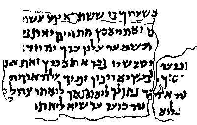
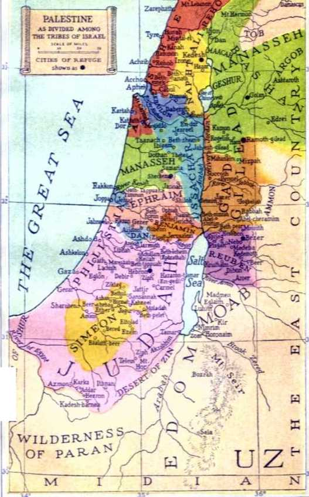
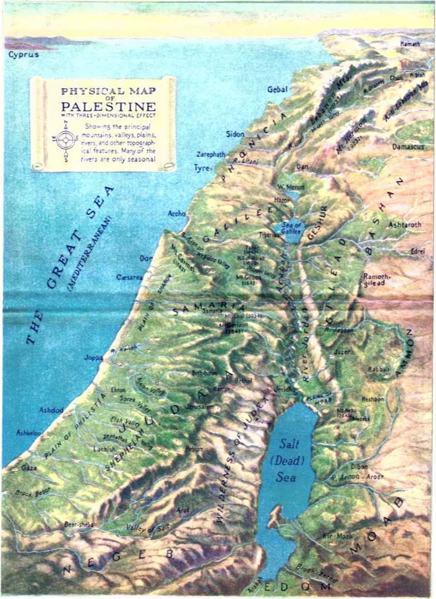
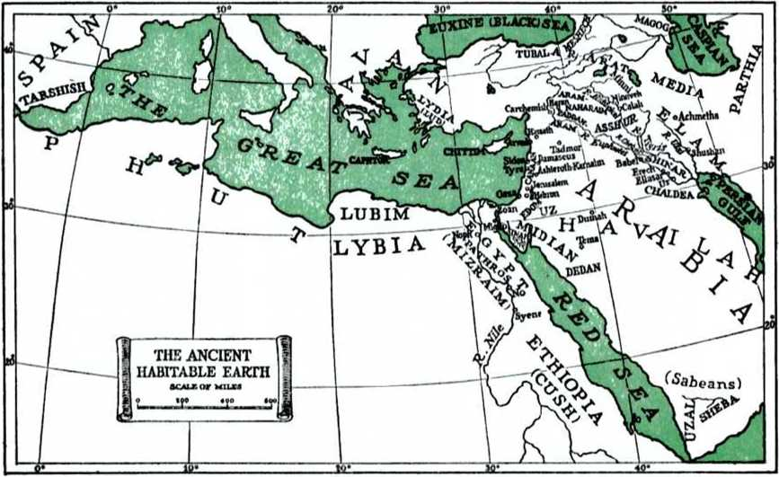
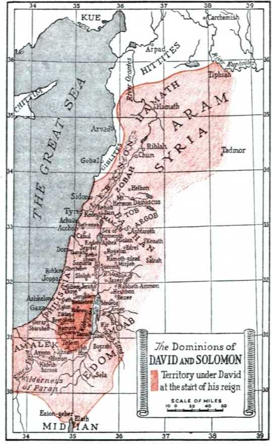
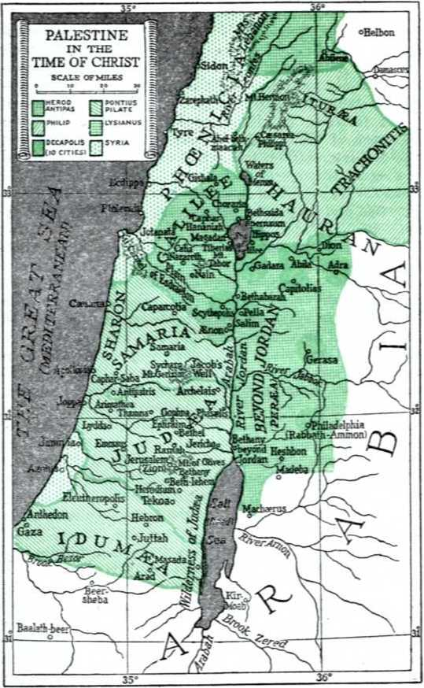
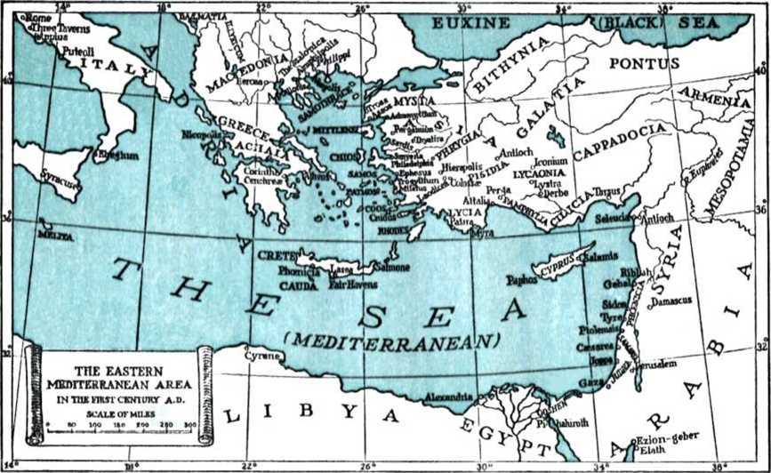

JTT^ • 1
Equipped for
Every Good Work’
“Equipped for Every Good Work”
“Every Scripture is inspired by God and is useful for teaching, for reproof, for correction, and for instruction in right doing; so that the man of God may be complete, perfectly equipped for every good work.” —2 Timothy 3:16, 17, Weymouth.
PUBLISHERS WATCHTOWER BIBLE AND TRACT SOCIETY, INC. International Bible Students Association Brooklyn, New York, U. S. A.
COPYRIGHT, 1946 by
WATCH TOWER BIBLE & TRACT SOCIETY Made iu the United States of America
LESSON PAGE
“EQUIPPED FOR EVERY GOOD WORK”
PREPARING THE WAY FOR BIBLE STUDY ....
Origin of the Bible............ 1
Preservation of the Bible......... 2
Authenticity of the Bible......... 3
Bible Languages : Hebrew......... 4
Bible Languages : Aramaic ......... 5
Bible Languages : Greek .......... 6
Growth of the Bible Canon......... 7
Completion of the Bib.e Canon....... 8
Manuscripts of the Hebrew Scriptures..... 9
Versions of the Hebrew Scriptures......10
Papyrus Manuscripts of the Greek Scriptures . . 11
Vellum Manuscripts and Manuscript Families . . 12
The Bible’s Fight to Live.........13
The English Bible in Print........14
The Talmud and Its History . 15
Some Talmud Teachings......... 16
Period of Apocryphal Writings........17
Contents of the Apocrypha...... 18
Geography of the Promised Land.......19
Geography of Jerusalem..........20
First Chronicles.............33
Second Chronicles............ 34
Ecclesiastes and Song of Solomon.......41
CO NTENTS
LESSON PAGE
Lamentations of Jeremiah......... 44
Joel and Amos.............. 48
Obadiah and Jonah............ 49
Habakkuk and Zephaniaii..........51
Haggai and Zechariah............ 52
Acts of the Apostles........... 58
First and Second Corinthians........ 60
Galatians and Ephesians..........61
Philippians and Colossians......... 62
First and Second Thessalonians....... 63
First and Second Timothy.......... 64
Titus ano Philemon............ 65
First and Second Peter........... 68
Epistles of John and Jude.......... 69
SCRIPTURAL SUMMARY, WITHOUT COMMENT, OF PRIMARY DOCTRINES
LIST OF ILLUSTRATIONS, MAPS AND TABLES
PAGE
Jesus Proved to Be the Promised Messiah ....
Map of Ancient Habitable Earth
Chronology from Creation to Israel’s First King . . 143
Map of Dominions of David and Solomon
Table of the Books of the Bible
Map of Palestine in Time of Christ
Main Events of Jesus’ Earthly Sojourn
Map of Eastern Mediterranean in the First Century A.D
"EQUIPPED FOR EVERY GOOD WORK”
WHY THIS BOOK IS PUBLISHED
JEHOVAH God is a Worker perfectly equipped for any undertaking, whether it be building an atom or a universe. He now oversees a strange work in the earth, a work whereby Bible truth exposes religious lies. It is the glorious work of announcing God’s established Kingdom and its early march against Satan and his organization in the destructive cataclysm of Armageddon. When that war of vindication breaks, the “st range work” will have been cut short in righteousness; then God’s “strange act” will occur in witness to his supremacy. Now is the time for Jehovah’s witnesses to work at their assignment of Kingdom service, while possible. Now is the acceptable time for them to be fruitful and abound in good works. And though imperfect themselves, they are perfectly equipped workmen. They have no need to be ashamed before God. With confidence they can work out their own salvation and need not fear the time when all will be judged and rewarded according to their works. They have sown good works; they will reap a good reward.
Why can the weak and imperfect worker hold to such confidence ? It is because of his equipment. Listen to Paul’s description of it to young Timothy: “From infancy you have known the sacred writings which are able to make you wise to obtain salvation through faith in Christ Jesus. Every scripture is inspired by God and is useful for teaching, for reproof, for correction, and for instruction in right doing; so that the man of God may be complete, perfectly equipped for every good work.” (2 Tim. 3:15-17, 'Weymouth') Workmen who diligently study these inspired scriptures of God’s Word will be unashamed in service, perfectly equipped, approved In,- Jehovah God. They will be armed with the same instructed mind as was in Christ Jesus. Remember how he retired to the wilderness solitudes and studied God’s Word, and how that study equipped him to beat down tempter Satan’s evil work and come forth to launch a campaign of good Kingdom work? Bible knowledge protects against evil work, equips for good work.
This book is published by the Watch Tower Society to turn the mind of the reader to the inexhaustible storehouse of perfect equipment. It lays a foundation for Bible study by considering the birth and growth and preservation and authenticity of the Bible. It shows how subtle Satan and his dupes failed to destroy its written pages, failed to supplant it with rabbinical tradition, and failed to contaminate it with a mixture of apocryphal fables. With this foundation as a springboard, the student is plunged into a detailed study of the Bible, book by book, and before the reader’s eyes God’s work of centuries passes in review. By the time the conclusion is reached the student’s heart and mind will be filled with Bible truth, and the devoted heart and mind will express themselves publicly in good works. This book, along with its companion book Theocratic Aid to Kingdom Publishers, will further equip the witness of Jehovah to advance God’s “strange work”. That is the reason why it has been published.
The Publishers
KIHIillllllllllltlltlllllllltlllllllllll.lllilllllltlllllllllllilllltllllll|lllllllllllltMIIIIIIIIIIIIIIIII<llllltlllllllllllll!IIIIIIIIIIIIIIHIilinillllllllllllllli1IIIIIHII
"Equipped for Every Good Work” is logically divided into three large sections. The opening twenty lessons lay a foundation for the fifty remaining lessons. A careful study of this first division will acquaint the student with the Bible’s origin, growth, preservation and authenticity. He will understand more concerning ' the original languages in which the Bible was recorded by its inspired writers, and his vision of how the contents of these original autographed writings were passed along down through twenty and thirty and more centuries to reach us in more than a thousand tongues will be much clarified. This division prepares the reader for the plunge into the study of each one of the sixty-six books of the Bible; it sharpens his gaze for the beholding of the gripping Bible dramas as they unreel like a magnificent motion-picture before his eyes.
..........................................................................................niiiiimmimiiiiiiiiuiii mi imiimimimmihiimiiiiiimmi
Lesson 1
Many religionists of the English-speaking realm are inclined to think that the Bible as a book originated in a manner purely miraculous. They have a hazy notion that it was written in heaven, in English, of course, divided there into chapters and verses, with cross references and marginal notes, and then sent by an angel to the earth. They skittishly shy away from the American Standard Version and other modern translations of the Bible, thinking that their religiously venerated King James Version Bible is the only true Bible. They fail to realize that the King James Version is a comparative youngster, being in 1946 only 335 years old, whereas the first writing -of Scripture occurred as far back as 3,458 years ago. An English language did not even exist then.
The Bible started to be put in writing back there in the wilderness by the man Moses, and in the Hebrew tongue. The bulk of what is today misnamed the “Old Testament” was written in the Hebrew tongue, and is properly referred to as the “Hebrew Scriptures”. But the Hebrew Scriptures are not written entirely in Hebrew. Ezra 4: 8-6:18 and 7:12-26, Jeremiah 10:11, and Daniel 2: 4-7: 28 were originally recorded in Aramaic. The original language of the misnamed “New Testament” is Greek; hence this section of the Bible is oftentimes spoken of as the “Greek Scriptures”.
All of the books of the Bible, 66 in number, have a common origin. The Bible is of single authorship, yet of composite writership. This makes it outstanding among all other books of the world. The Bible is Jehovah’s revelation of himself and his purposes. At the beginning of Bible writing He contributed personally to the Scripture canon by recording on two stone tablets the Decalogue, or Ten Commandments. (Ex. 24:12; 31:18) Human creatures took over the actual work of writing, but they all wrote under God’s guidance and dictation, being moved by his spirit. Some were judges and kings. Some were learned, others were lowly laborers, herdsmen, fishermen, etc. They were not professional writers, but men of action, servants and witnesses of Jehovah from all walks of life. They wrote over a long stretch of years. Moses started the Pentateuch, the first five books of the Bible, about 1513 B.C. The apostle John closed the Bible canon sixteen centuries later.
Nevertheless, this diverse group of more than thirty men widely separated in the stream of time produced a perfectly harmonious literary masterpiece. Not by the abilities of the writers, but by the infinite wisdom and might of the Bible’s Originator was it accomplished. The writers themselves are quick to acknowledge this. David said: “The spirit of the Lord spake by me, and his word was in my tongue.” Luke declared: “He spake by the mouth of his holy prophets.” Peter added to the testimony: “No prophecy ever came by the will of man: but men spake from God, being moved by the holy spirit.” (Am. Stan. Ver.) Paul left no room for further doubt or exceptions when he sweepingly said: “All scripture is given by inspiration of God.” Certainly Jehovah God alone is the Bible’s Originator.—2 Sam. 23: 2; Acts 1:16; Luke 1:70; 2 Pet. 1: 21; 1 Pet. 1:10,11; 2 Tim. 3 : 16,17.
The Bible was not originally one book, but, as its canon grew, it became a small library of books and booklets. The general idea of the Bible as one book is rather modern, even though it was assembled in codex form during the second century after Christ. In the fourth century of the Christian era the Bible was still designated in Latin as Bibliotheca Divina, that is, “The Divine Library.” “Bible” is from the Greek word biblia, meaning papyrus scrolls, volumes or books; literally, booklets. The early Greek Christians called the Scriptures Ta Biblia, that is, “The Books,” meaning thereby the pre-eminent or paramount books.
In the Authorized or King James Version there are 39 books in the Hebrew Scriptures and 27 in the Greek Scriptures. The Hebrew and Jewish Bibles list only 24 Hebrew books because 1 and 2 Samuel, 1 and 2 Kings, 1 and 2 Chronicles, Ezra and Nehemiah, and the twelve books of the so-called “Minor Prophets” together, are each counted as one. The seven main and Scriptural groupings of the Bible books are: (1) the Law; (2) the prophets; (3) the Hagiographa (holy writings, including the Psalms); (4) the .Gospels; (5) The Acts; (6) the epistles; and (7) The Revelation.
But there is one division yet to be mentioned which serves, not a good purpose, but a very wicked one: the splitting asunder of God’s Word into so-called “Old Testament” and “New Testament”. Such a division was not authorized by the Bible’s Originator. That it is grossly wrong is evidenced by the Devil’s seizure of it to nullify and delete from God’s Word nearly three-fourths of its inspired contents. (Deut. 4:2; Rev. 22:19) Nowhere in the Bible are the Hebrew Scriptures called “Old Testament”. Neither were the Hebrew Scriptures referring to the Greek Scriptures when they foretold a new testament or covenant. The Hebrew Scriptures deal with more than one testament or covenant, and the same is true of the Christian Greek Scriptures. It is a devilish wresting of Scripture for anyone to claim that when Paul, at Hebrews 8:13, spoke of the typical old law covenant as having become old and ready to vanish away he referred to the Hebrew Scriptures, falsely termed “Old Testament”, and that they had been fulfilled and hence all that was thereafter necessary for Christians was the so-called “New Testament”, the Greek Scriptures. The very writings of Paul belie such a false claim.—Rom. 15:4; 1 Cor. 10:11; 2 Tim. 3:16,17.
Those citations from Paul’s inspired epistles show that when the all-wise God gave commands to Moses and others after him to write He had in mind our perplexing day when mankind so sorely needs true guidance and a sound hope. The Creator knew man’s frame and feebleness of memory, and knew too the Devil’s aim to destroy the divine record and pervert and blot it out of men’s minds. Hence God caused a faithful record to be written. Since this was expressly for those in need of vital information at the worst erisis of the nations in the end of the world, Almighty God would safeguard the Scriptures despite efforts to destroy them. What Isaiah said more than 2,600 years ago, and which inspired Peter seconded 1,900 years ago, is still true today: “The word of our God shall stand for ever.”—Isa. 40: 8 ; 1 Pet. 1: 25.
Review : 1. What hazy conception do many religionists have as to the origin of the Bible? 2. In shying away from modern versions, what do they fail to realize concerning the King James Version? 3. In what languages was the Bible originally written? 4. What facts relative to the writing of the Bible prove that God’s spirit must have been operating to produce a work so harmonious throughout? 5. What is the testimony of the Bible writers themselves on this point? 6. Actually, what is the Bible, as shown by the names given to it? 7. What various divisions of the Bible are next discussed that seem to be proper and of some value? 8. What division is wrong, and what is its harmful effect? 9. Why did the Originator of the Bible cause the record to be put in writing?
Lesson 2
PRESERVATION OF THE BIBLE
The Originator of the Bible is likewise its Preserver. He it is that caused to be recorded the statement: “The word of the Lord endureth for ever.” (1 Pet. 1:25; Isa. 40:8) How do we know that this proclamation stands true to our day, when there is not in existence a single original or autographed Bible manuscript, either of the Hebrew Scriptures or of the Greek Scriptures ? No existing complete manuscript or handwritten copy of the Hebrew Scriptures is earlier than A.D. 1008 (now preserved in Leningrad), and none of the complete or nearly complete Greek manuscripts of the Christian Scriptures is earlier than the fourth century after Christ.
Although every original manuscript is lost, has vanished or apparently perished, there are a great many ancient copies of the entire Bible, and even more ancient manuscripts of parts of the Bible extant. The number of extant ancient manuscripts of the Hebrew Scriptures is about 1,700. Then there are scattered through the earth about 4,000 ancient manuscripts of the Greek Scriptures in the original language, and about 9,000 copies of early versions or translations of the Greek Scriptures.
Until the destruction of the first temple by the Babylonians, the “book of the law” was kept preserved by the side of the ark of the covenant. “Take this book of the law, and put it in the side of the ark of the eovenant of the Lord your God, that it may be there for a witness against thee.” (Deut. 31:26) Joshua again at the end of his life lays up his own record before Jehovah. “And Joshua wrote these words in the book of the law of God.” (Josh. 24: 26) Samuel did the same: “Then Samuel told the people the manner of the kingdom, and wrote it in a book, and laid it up before the Lord.” (1 Sam. 10:25) These passages testify to the preservation of the Bible canon.
An important incident bespeaking the preservation of the Scriptures is the discovery of the lost and forgotten “book of the law” in the temple in the eighteenth year of Josiah, in 641 B.C., when after a period of religious idolatry the true worship of Jehovah was restored. (2 Ki. 22:1-10; 2 Chron. 34:14-18) During the captivity in Babylon the Scriptures were preserved. Daniel writes (9:2) : “In the first year of his [Darius’] reign I Daniel understood by books the number of the years, whereof the word of the Lord came to Jeremiah the prophet, that he would accomplish seventy years in the desolations of Jerusalem.” After the return from the exile in Babylon Ezra is found reading the law to the people resettled in the Holy Land.—Neh. 8:1-18.
Not all of the Jewish exiles who in 537 B.C. returned from the Babylonian captivity spoke or understood the Biblical Hebrew. The younger generation spoke Aramaic or Syriac, a Semitic language related to Hebrew. When the Levites read the law to them they had to 'read distinctly and give the sense’, as recorded at Nehemiah 8:8; that is, they paraphrased the Hebrew text or translated it freely into Aramaic. These paraphrases were called “Targums”, which means “interpretations” or “paraphrases”. For centuries these Targums were handed down orally from generation to generation. The Jews were averse to translating the Hebrew Scriptures into another language, because they held them so sacred. But several centuries later these paraphrases were gradually committed to writing. Extant today are various written Targums of all the Hebrew Scriptures, except Daniel, Ezra and Nehemiah.
Further evidence of God’s preserving his Word during the five centuries from Ezra to Christ are versions or translations into other languages. The oldest of these is the Samaritan Pentateuch. It was produced by that mixed population of religious hybrids that was settled in Samaria by the Assyrians, after they had led away captive the ten tribes of Israel, in 740 B.C. That copy was made about 450 years before Christ (the extant manuscript, however, is of a far later date). Strictly speaking, it is not a translation of the original Hebrew. It is a transliterated Hebrew text of the Pentateuch written in Samaritan characters and interspersed with some Samaritan idioms. Hence the Samaritan Pentateuch reaches back farther for its origin than any other except the Hebrew itself. This copy substantially agrees with the texts of the Jews, with the exception of a number of minor variations.
About 280 B.C. the Hebrew Scriptures began to be translated in Egypt into the Greek language. This Greek version is called the Septuagint. A great number of copies of that translation were made and distributed throughout the ancient world. It played its part in the preservation of God’s Word by becoming the basis for translations into other languages.
As to the Christian Greek Scriptures, their genuine text has been preserved not only in the Sinaitic and Vatican 1209 MSS. but in about 4,000 more Greek-language MSS., in addition to nearly 9,000 other-language MSS. of ancient versions. From the years of their writing, the Greek Scriptures were the subject of much discussion, and so many Scripture texts are quoted in an immense literature of the post-apostolic period that almost the entire text of the Greek Scriptures could be compiled from these quotations.
No other book in the world has ever received such a reverent and fastidiously careful treatment throughout centuries as has the Bible. It has been copied by scribes who regarded mistakes with holy terror. In order to make the Word of God known its copyists and translators often added to their painstaking labor the sacrifice of their lives. The ancient Greek copyists, for the purpose of a checkup, recorded the number of words written. The professional Hebrew scribes carefully counted not only the words but the letters also. The written Hebrew consisted until centuries after Christ only of consonants, and the omission or addition of a single letter would often have changed a word into another. If they detected the slightest error, the miswriting of a single letter, that entire section of the roll was rejected as unfit for synagogue use. Thereupon that section was cut out and replaced by a new and faultless one. They read aloud each word before writing; to write even a single word from memory was regarded as gross sin. It is said that religious scribes prayerfully wiped their pen before writing the word Elohim (God) or Adonay (Lord), and that they religiously washed their whole body before writing the sacred name “Jehovah”. The accuracy of those professional Hebrew scribes was passed on to a good degree to the non-professional copyists of the Christian Greek Scriptures.
But notwithstanding all the painstaking accuracy of the copyists and all the scholarship of the proofreaders, quite a number of mere scribal errors got into the text bespeaking the imperfection of humans. These errors would be repeated by the man that afterward copied from this, who would also sometimes add other slight errors of his own. It is evident, therefore, as copies multiplied, that the errors would be likely to increase with them. For this reason the earlier the manuscript the more likely it is to be correct.
The preservation of the Holy Scriptures is a divine miracle; not only their preservation as a book (since no other book and its students, copyists, translators and publishers have been so relentlessly persecuted with prison, fire and sword), but also the preservation of the textual integrity in spite of human shortcomings. The numerous scribal errors are, on the whole, of little importance. Their bearing upon the integrity of the Bible is negligible. The remarkable thing is not that fallible scribes made errors, but that they made so few that are of any consequence. Those errors have been detected and corrected by careful and scholastic comparison and collection of the multitude of extant manuscripts and versions. The result of such careful, critical revisions is the reliable Bible texts.
Now along comes the Roman Catholic Hierarchy with its presumptuous claim that she is the preserver of the Scriptures. Her brazen assertion is easily debunked. The Vatican MS. has been in her possession only since the fifteenth century, and not one of the old manuscripts was discovered in the territories under Hierarchy domination. For nearly five centuries the Vatican made their priceless MS. inaccessible to scholastic examination. But with the discovery and publication of another fourth-century manuscript, the Codex Sinaiticus, the selfish Vatican was compelled to publish facsimile copies of Vatican MS. 1209, to prevent it from being eclipsed. A survey of history proves that the Roman Catholic Hierarchy is the deadly foe of the Bible; that it endeavored to conceal Bible truth from the people by letting it lie hid under the shroud of dead languages ; that it hunted down and murdered the translators and distributors of the Bible; that it burned countless thousands of copies of the Holy Scriptures; that only when it failed to snuff out the Bible light for the common people did it allow for the translation of the Bible in the people’s vernacular, such Catholic translations being brought out to compete with previous popular translations. The Hierarchy is not the preserver of the Bible, but the Bible is preserved even unto our day in spite of the Hierarchy’s desperate efforts to destroy it.
Hail Jehovah as the Preserver of his inspired Word. Manifestly God directed not only the writers of the Bible but also the faithful copyists of the text and the assemblers of the canon, just as he is now guiding his earthly witnesses as they study its pages and proclaim its truths. The preservation of the Bible is by a miracle of the Almighty.
Review : 1. What is true regarding the original autograph copies of Bible manuscripts? and what ancient manuscripts do we have? 2. How were the Scriptures preserved down to the days of Ezra ? 3. What were the Targums? and what was their use? 4. How’ were the Holy Scriptures preserved from the time of Ezra to the time of Christ Jesus? a. How are the Christian Greek Scriptures verified? 6. What facts show the great care exercised by copyists of the Scriptures? 7. In what twofold way is the preservation of the Bible a miracle? 8. How can the Roman Catholic Hierarchy’s claim to be the preserver of the Bible be debunked? 9. Who, then, should be hailed as the preserver of the Bible?
Lesson 3
Jehovah continues to bring forth to his covenant people corroborative proof that the Bible is His authentic Word of truth, and not the word of man. In order to become better equipped for good works in Jehovah’s service, his witnesses do well to be familiar with the evidence of the authenticity of the Holy Scriptures, because it will enable them to firmly establish the faith of others. Limited space will necessarily limit the proofs; even so, ample proofs can be supplied to convince the reasonable and meek, and fools will never believe until cut off in death.—Ps. 14:1; Isa. 53:1.
From the earliest times the canonical books have been received by the Jews as inspired and as wholly trustworthy documents. The truth of the Scriptural narrative has been attested to by the unanimous testimony of that nation, though a great portion of it is a record of their own repeated disobedience, unfaithfulness, and falling away to idolatry or religion and into the hands of their enemies. The writers speak with all candor and humility about their own shortcomings; they spare no creature. They were faithful witnesses of Jehovah; they suffered and even died for his truth. Seeming inconsistencies may perplex the superficial reader; but they vanish before a reverential and accurate investigation. The contemporary Israelites of the writers, both of the Hebrew and of the Greek Scriptures, always accepted each book as a true record of events.
Profane history confirms the Bible record where names and biographies of historical characters are given, and the same is true relative to the names and locations of historical places. For example, there is an abundance of profane testimony corroborating the story of the Gospels, and some of the testimony comes from anti-Christian historians. Among such historians and writers of the first and second centuries are Flavius Josephus, Tacitus, Suetonius, Pliny the younger, Lucian, Phlegon Trallianus, Celsus and Numenius. All these testify to the facts that in the reign of Emperor Tiberius Caesar there lived one called Jesus Christ; that he was an extraordinary man who did great miracles; that he was put to death at the command of Pontius Pilate; that there was a phenomenal darkness and earthquake at his execution; that his teachings spread rapidly; and that they attracted many followers, who suffered persecution.
These facts lend further support: Palestine was at that time under a peculiar system of double government, partly Jewish and partly Roman. The narrative of the Greek Scriptures remarkably shows that dual form of administration, a Roman and a Jewish, involving a twofold form of taxation, two modes of capital punishment, two methods of marking time, two military forces, and so on. Also, one finds occurring side by side in the Greek text Latin and Hebrew words, a natural circumstance during this period.
Repeatedly archeological discoveries have proved the Bible record true and have closed the blaspheming mouths of “higher critics” and atheists. Ancient secular records, by monumental inscriptions, coins, remains of cities, and numerous other antiquities unearthed, all unite to verify the Bible. It is noteworthy that plants, animals, birds, fishes and insects mentioned in the Bible have been found in precise keeping with the plant and animal life of the particular regions mentioned. Furthermore, even the order of creation as given in the first chapter of Genesis is corroborated by geology. Certain forms of plant and animal life are found in certain strata or layers of rock, to which layers geologists assign a certain period of time. The order in time to which scientists assign the appearance of certain forms of life is in the same order of appearance as the Genesis account of creation sets it forth. Of course, scientists, vying one with the other for attention, set fantastic figures of time upon their findings; but the important thing is that the record of creation found in the rocks of the earth agrees with the record in ink in Genesis. And why not ? The Creator of the one is the Author of the other. Both records are true, even if misinterpreted by scientists and clergymen.
All the foregoing facts are strong and convincing proof of the authenticity of the Bible. But there is evidence many times stronger: the thousandfold and accurate minor and major fulfillments of Biblical prophecies irrefutably proving the Scriptures as inspired history written in advance. Men cannot foretell events, not even one day ahead: “Boast not thyself of to morrow; for thou knowest not what a day may bring forth.” (Prov. 27:1) But, “known unto God are all his works from the beginning of the world.” Through this foreknowledge of his Jehovah has blessed man by “declaring the end from the beginning, and from ancient times the things that are not yet done”. He has inspired men to record these prophecies in his Word, such men themselves not knowing whereof they wrote. (Acts 15:18; Isa. 46:10; 2 Pet. 1: 20, 21; 2 Tim. 3:16,17 ; Dan. 12: 4, 8,10; 1 Pet. 1:10-12) All meh are fallible; despite their possible sincerity their words are not always authentic. The foregoing texts show, however, that men were not the authors of the Bible, but merely employed as secretaries to the Author, Jehovah God. And He is infallible!
If physical facts have come to pass in fulfillment of Bible prophecy, then they constitute the strongest kind of circumstantial evidence of the Bible’s authenticity, and the reasonable mind is satisfied and faith is firmly established. (John 14:29) Unnumbered Bible prophecies are now fulfilled. Many prophetic dramas are in course of striking fulfillment today. But space rules that we cannot here consider them in detail. Hence the matter will be narrowed down in scope to meet the limiting conditions of space. Prophecies recorded in the Hebrew Scriptures, which were written centuries prior to Jesus’ life, will be cited and shown to have been fulfilled in Jesus, hence proving him as Messiah Christ. His words of prophecy will then be cited, and modern events, nineteen centuries later, referred to as fulfillments. This will establish Jesus as the Messiah and his word as true and reliable. Then all should be willing to acknowledge him as a credible witness and should accept his testimony concerning the Bible’s authenticity.
The following table shows some of the main events foretold relative to the Messiah. Remember as you study the evidence that the prophecy was written centuries before the fulfillment, and that the events in fulfillment are often corroborated by profane history and other writings.
Jesus of Nazareth Proved to Be the Promised Messiah
The incident or event
Born of the tribe of Judah Born in Bethlehem Born of a virgin Babes killed after birth Way prepared before
Called out of Egypt Commissioned Start of ministry To speak in parables Bore infirmities Not believed in Hated without cause Entry into Jerusalem Rejected
One apostle unfaithful Betrayed by follower For 30 pieces of silver Disciples scatter Tried and condemned Use of false witnesses Silent before accusers Smitten Impaled on tree Numbered with sinners Reviled on the tree Pierced
Lots cast for garments Given vinegar and gall Seemingly forsaken by God No bones broken Dies sacrificial death Buried with rich Raised before corruption
|
Hebrew Scripture |
Greek Scripture |
|
prophecy |
fulfillment |
|
Gen. 49: 10 |
Matt. 1: 1-3 |
|
Mic. 5: 2 |
Matt. 2: 1, 5, 6 |
|
Isa. 7: 14 |
Matt. 1: 22, 23 |
|
Jer. 31: 15 |
Matt. 2: 17, 18 |
|
Mal. 3: 1; 4: 5: |
Matt. 3: 3; 11: 10-14; |
|
Isa. 40: 3 |
17: 12; Mark 1: 2-4 |
|
Hos. 11: 1 |
Matt. 2: 15 |
|
Isa. 61: L 2 |
Luke 4: 18-21 |
|
Isa. 9: 1, 2 |
Matt. 4: 13-16 |
|
Ps. 78: 2 |
Matt. 13: 31-35 |
|
Isa. 53: 4 |
Matt. 8: 17 |
|
Isa. 53: 1 |
John 12: 38 |
|
Ps. 69: 4 |
John 15: 25 |
|
Zech. 9: 9 |
Matt. 21: 4, 5 |
|
Isa. 53: 3; Ps. |
Mark 9: 12; 12: 10, 11; |
|
69: 8; 118: 22, 23 |
John 1: 11; Acts 4: 11 |
|
Ps. 109: 8 |
John 17: 12; Acts 1: 20 |
|
Ps. 41: 9 |
Matt. 26: 14-16, 47-50 |
|
Zech. 11: 12 |
Matt. 26: 15 |
|
Zech. 13: 7 |
Matt. 26: 31, 56 |
|
Isa. 53: 8 |
Mark 15: 1-15 |
|
Ps. 35: 11 |
Matt. 26: 59 |
|
Isa. 53: 7 |
Matt. 27: 12-14 |
|
Isa. 50: 6; Mic. 5: 1 |
Mark 14: 65; 15: 19 |
|
Ps. 22: 16 |
Mark 15: 25 |
|
Isa. 53: 12 |
Matt. 27: 38 |
|
Ps. 22: 7, 8 |
Matt. 27: 39, 43 |
|
Zech. 12: 10 |
John 19: 34, 37 |
|
Ps. 22: 18 |
Matt. 27: 35 |
|
Ps. 69: 21 |
Matt. 27: 34, 48 |
|
Ps. 22: 1 |
Matt. 27: 46 |
|
Ps. 34: 20 |
John 19: 33, 36 |
|
Isa. 53: 5, 8 |
John 1: 29; 1 Cor. 15: 3 |
|
Isa. 53: 9 |
Matt. 27: 57-60 |
|
Ps. 16: 10 |
Mark 16: 6; Acts 2: 31 |
All these things were fulfilled in the case of Christ Jesus. Undoubtedly, he was the Messiah. (Luke 24:27,44) Furthermore, he was the great Prophet Moses foretold. (Deut. 18:15; Acts 3:22,23) He prophesied of the “last days”; the fulfillments are visible to all. He foretold World War I, famines, pestilences, earthquakes, difficulties within the ranks of his followers, the appearance of an “evil servant” and a “faithful and wise servant”, the intense persecution of Jehovah’s witnesses, the world-wide gospel-preaching work now going on, and the unsettled conditions among men and their fears and perplexities for the future. (See Matthew 24; Mark 13; Luke 21.) He also foretold man’s failure in world government following World War I and styled such Kingdom makeshift an “abomination of desolation”, and pointed out the final end.
These irrefutable facts stamp Christ Jesus as a true prophet. His word is reliable. And what is his reliable word concerning the authenticity of the Bible? His direct testimony is, “Thy word is truth!” (John 17:17) And when one considers that Christ Jesus’ words were not his own, but his heavenly Father’s, then Jehovah stands supreme as the Voucher for the genuineness of His Word, the Bible. (John 3 : 34; 7 :16) Thus by one authoritative reference the question is settled with finality. The promised and foretold spirit of God came upon the writers of the Greek Scriptures and caused them to finish off the Bible canon authentically. The entire Bible is God’s Word of truth.—Joel 2:28,29; John 14:17; Acts 2:16-18; Rev. 1:1-3; 21:5.
Review : 1. Why become familiar with the evidence of the Bible’s authenticity? 2. What facts concerning the Jews and the Bible writers argue for .authenticity? 3. How does profane history confirm the Bible accounts? 4. How do archeology and geology corroborate the Scriptures? 5. Why is the next evidence presented far stronger than what has preceded it? 6. What prophecies, with their fulfillments, prove the authenticity of the Hebrew Scriptures and establish Jesus as the promised Messiah? 7. What fulfilled prophecies of Christ Jesus prove him to be a true prophet and reliable witness? 8. What reliable testimony did Christ Jesus give concerning God’s Word? 9. W’hat took place after this testimony?
Lesson 4
BIBLE LANGUAGES: HEBREW
The finger of Jehovah God moved over the surface of two stone tablets located on top of Mount Sinai. On the front side of both tables of stone it wrote. When the finger was lifted from the surface of these durable “pages”, thereupon remained the first written copy of the Ten Commandments. They were inscribed in perfectly formed characters of written Hebrew. (Ex. 31:18; 32:16,19; 34:1-4,28) It was at about the same time that Moses started writing on the first five books of the Bible. He wrote in Hebrew. With only a few exceptions, all of the inspired Holy Scripture writers that followed during the next eleven hundred years wrote in the Hebrew language.
In the Hebrew Scriptures only the people are called Hebrews; the language after the death of King Solomon, in 997 B.C., is generally called “the Jews’ language”. (2 Ki. 18: 26, 28; 2 Chron. 32:18; Isa. 36:11,13) Hebrew' belongs to the family of languages that -were spoken by most of the descendants of Shem (and a few others). For that reason that family of languages is called the Shemitic or Semitic family. Because God did not confound the language of Noah and Shem at the time of the presumptuous building of the tower of Babel, it is reasonable to conclude that they spoke the original Semitic language from which thereafter stemmed forth the many branches of that language family. Hebrew is the main stem of the Semitic family, it very likely being the language spoken in Eden. By the days of Jacob the Aramaic branch was in evidence, Laban using words different from Jacob’s to express the same idea. (Gen. 31:47) When Hebrew began to be used to put in -writing the story of creation and a sketch of the 2,500 years of man’s history from Eden to the Exodus, which had heretofore been handed down apparently by oral tradition from generation to generation, that language was capable of vividly painting the inspired historical narrative.
Hebrew, like most of the Semitic languages, was written without vowels, just consonants. There were twenty-two letters in the Hebrew alphabet, all of them consonants, but about nine of them could each represent two sounds. The range of the language was expanded to about twentyeight consonant sounds. The twenty-two Hebrew consonants together with their names appear in their alphabetical order as stanza headings of Psalm 119, in the American Standard Version. But even if the language did not have written vowels, it nonetheless had a plenty of vowel sounds in its oral form. It outstrips English by far in the use of vowel sounds. The crux of the matter is that the written language did not provide vowel letters, and the readers were required to remember and supply the vowel sounds of the spoken tongue, just as English readers must supply the vowels in certain abbreviations, such as bldg, (building), bldr. (builder), blvd. (boulevard), and hgt. (height).
As long as the Hebrew language was spoken those versed therein had no difficulty in supplying the proper vowel sounds when reading the all-consonant text, but when Hebrew ceased to be a living language it became more and more difficult to remember the right vowel sounds to go with the Hebrew Bible manuscripts. But the traditional pronunciation was kept alive and handed down by those specializing in reading the Law and the Prophets and the Psalms for the instruction of the people. Finally, however, during the sixth or seventh century after Christ, a system of dots and dashes was devised and these were placed below, in or above the consonant letters to indicate the exact vowel sounds. These are not called vowel letters, but vowel points. They were added by Jewish scholars called “Masoretes”. Also supplied was a system of accent marks to indicate stress, pause, connection between words and clauses, and musical notation. No man on earth today can read this musical notation, the key to it having been lost.
Most words in Hebrew can be traced back to a root with three consonants. Most of these roots are verbs, the most important part of speech in the Hebrew language. These roots are vivid and expressive, playing upon the senses of seeing, hearing, tasting, touching and smelling. The Hebrew Scriptures use a little more than 2,000 root words, but most of them are so seldom used that if one knows the 500 most frequently used roots he can read most of the Hebrew Bible. The total number of words in the Hebrew vocabulary of the Bible is estimated at from 5,000 to 7,000 words. The Hebrew has two tenses, not so much “tenses” as senses, to their verbs, namely, the perfect or historical tense, and the imperfect or indefinite tense. Hebrew uses no more tenses than those two. For illustration: “If you tell me to do this, I have done it.” That is perfectly good Hebrew. “If you tell me” is in the indefinite form: that is, any time you tell me in eternity, past, present or future. “I have done it” is historical or past form, but here refers to a time future after the telling. Though referring to the future, the one who puts the expression in the perfect form thereby means that it is as good as done.
The name “Jehovah” is in a verb form in the indefinite sense. That is the reason why that name can be translated as Rotherham renders it: “He shall, may, or will be whatsoever he shall, may or will be.” That is all combined in the one name Jehovah. Because the name has all this significance in it the Christian Scriptural Greek tries to convey its meaning by the expression addressing Jehovah as One “who art, and wast, and art to come”. By those three tenses the Greek seeks to express the scope of the name Jehovah. Incidentally, this name of the Creator appears 6,823 times in the Hebrew Scriptures, being represented by its four consonants, JHVH (mb’) • After the Hebrew Scriptures were written religious and superstitious Jews considered the name too holy to even pronounce, and substituted Adondy (my Lord) or Elohim (God) for it as they read aloud. To remind the reader to do this the vowels of one or the other of these substitutes were put under the consonants JHVH. Thus we have today the English form of what religious Jews considered the incommunicable name, that is, Jehovah. Through religious superstition of the Jewish leaders the ancient Hebrew pronunciation has been lost and can only be surmised today, but we do have in English the euphonious anglicized form that appears thousands of times in the American Standard Version Bible and several times in the King James Version Bible.
Malachi, the last book of the Hebrew Scriptures to be written, was recorded in the Jews’ language. Its time of composition is not definite, but there is some evidence to believe that it was toward the end of Governor Nehemiah’s time, nearly a hundred years after the release of the Israelites from captivity. It is very evident that by that time not all of the Jews understood Hebrew. (Neh. 13:24,25) Only a few years earlier when the law of God was publicly read in the traditional Hebrew tongue, in the Hebrew of the Bible manuscripts, it was necessary for the reading to be put into an Aramaic paraphrase in order for the people to understand. (Neh. 8: 8) Prior to the Jews’ captivity in Babylon some Aramaic words had crept into the Hebrew speech; during the seventy years in Babylon the inflow of Aramaisms increased; after the release the Hebrew tongue was overrun and crowded out by the large-scale invasion of Aramaic, and it ceased to exist shortly after Nehemiah’s days as the living language of the Jewish people. Only the Jewish priests and scribes thereafter knew the Hebrew of the Scriptures. Aramaic became the common language of what was once Jehovah God’s chosen nation.
The study of the Hebrew language was almost entirely forgotten by non-Jews until the sixteenth century. In the seventeenth century other Semitic languages were studied. In the eighteenth century the grammar of other Semitic languages was compared with that of Hebrew. In the nineteenth century Wilhelm Gesenius began a strong revival of the study of the Hebrew of the Scriptures, which move was taken up and continued by others. Since that time knowledge of this language that comprises more than three-fourths of the inspired Bible canon as it was originally written has increased rapidly. The publisher’s note, dated 1935, in The Complete Bible, An American Translation, says: “Hebrew scholarship is moving fast, and even the few years that have elapsed since the first edition [of this modern speech Bible version] was issued in 1931 have seen contributions to the subject that neither translator nor publisher can ignore.”
Review : 1. In what language did Jehovah God himself write the Ten Commandments in durable stone? and who thereafter followed his example? 2. Why is the language family to which Hebrew belongs called “Semitic”? and what were the capabilities of the Jews’ language at the time of the Exodus? 3. What was lacking in the written Hebrew? and what sounds, therefore, were readers required to supply? 4. When Hebrew ceased to exist as a living language, how was the traditional pronunciation preserved? 5. What information is given as to the root words of Hebrew? 6. What about tense in Hebrew verbs? 7. How is the indefinite tense or sense of verbs illustrated by the name “Jehovah”? and what additional comment follows as to this hallowed name? 8. In what events do we trace the decline and death of Hebrew as a living language of the common people? 9. What has been the progress in the study of Hebrew during recent centuries?
Lesson 5
Toward the close of the eleven-hundred-year stretch of time over which the Hebrew Scriptures were written a language other than Hebrew cropped up now and then in Bible manuscripts. That intruding tongue was Aramaic. Though Aramaic words that had been incorporated into Hebrew had appeared before Jeremiah’s day, it was in his writings that a complete statement in Aramaic first appeared. (Jer. 10:11, Am. Stan. Ver., margin) Later on down in Babylon Daniel wrote more extensively in Aramaic, all the way from 2:4 to 7:28. (See marginal note on Daniel 2:4 in the American Standard Version.) Still later, long after the end of the captivity of the Jews in Babylon and near the close of the period of Hebrew-Scripture writings, scribe Ezra wrote in Aramaic in the book that bears his name, from 4:8 to 6:18, and again at chapter 7, verses 12 to 26. (Once more confirm by checking the marginal readings in the American Standard Version, this time in connection with Ezra 4: 8 and 7:12.) But with these brief portions the Bible scholar’s interest in Aramaic does not end.
Aram was a plain extending west to east from the Lebanon mountains to beyond the Euphrates river, and north to south from the Taurus mountains to beyond Damascus. The country Aram seems to have corresponded generally to the Syria and Mesopotamia of the Greeks and Romans. This extensive plain was occupied by the descendants of Shem’s son Aram, who were called Arameans, and whose language was called Aramaic. Hence their tongue was of the Semitic family of languages and closely related to Hebrew. Throughout the time that the Israelites spoke Hebrew they were constantly in touch with Aramaicspeaking people. Abraham, descended from Shem through Arphaxad, lived for a time in Haran, which was in Ara-mean Mesopotamia. Isaac’s wife came from the same place. However, it is not until the close of Jacob’s twenty-year sojourn in Aramean Mesopotamia that the Scriptures first reveal any difference in the Hebrew and Aramaic tongues. Then it was that Jacob and his Aramaic-speaking father-inlaw Laban used different words to designate a heap of witness. (See Genesis 31:47, and the two marginal references thereon in the American Standard Version.) When together in the household of Shem, Aram and Arphaxad, of course, spoke the original Semitic language. Now, some 600 years later, their descendants’ speech was no longer the same. Aramaic had by this time begun branching off from the original Semitic language of Hebrew. Just how different the tongues were at that early date is not known.
After the nation of Israel entered the Promised Land Aramean tribes dwelt among them, and close connections existed between the Israelites and the Arameans during the period of Judges. (Josh. 13:13; 1 Chron. 2:23; Judg. 3:8,10; and Judg. 10:6, Am. Stan. Ver., margin) King David subjugated a great part of Aram; he married an Aramean princess from Geshur. Solomon carried on trade with kings of Aram. When the close association between the Israelites and the Arameans is considered and it is remembered that a large part of Solomon’s domain was peopled by Arameans, it is not difficult to understand why Aramaic traits are found in Solomon’s writings, Ecclesiastes and Song of Solomon. From the days of David and Solomon to about 400 B.C. the Arameans were the international traders on land, carrying their goods and their language far beyond the borders of their land.
During the reigns of the kings of the ten-tribe kingdom of Israel repeated clashes occurred between the Israelites and Syrians, or Arameans. The northern part of the Israelite kingdom was conquered; towns changed hands several times. The Syrian king of Damascus even set up tradingquarters in Israel’s capital, Samaria. Even Judah was invaded during the reign of King Ahaz and some Judeans were taken captive northward to Damascus. Then when Syria was subdued by Assyria and the ten-tribe kingdom later fell to the Assyrian Shalmaneser IV, in 740 B.C., he moved Israelites into Aramaic-speaking sections of his empire and transported into Samaria people from places of his empire where Aramaic was spoken wholly or in part. This put Aramaic-speaking people at the very doors of Judah. A few years later it is revealed that the officials of Judah could understand Aramaic, but the common people could not. (2 Ki. 18:26, Am. Stan. Ver., margin) All of this shows the nearness of the Hebrews and the Arameans and explains the more and more frequent appearances of Aramaisms in the Scripture writings as time marched on.
When Jerusalem fell in 607 B.C. most of the Jews were taken captive to Babylon. Long before, the Arameans had overrun the Tigris-Euphrates valley, and by the time the Jews arrived there the basic population of Babylonia was Aramaic. The Chaldeans from the south had filtered northward into Babylonia, but it seems that their native dialect was crowded out by Babylonian and Aramaic. It was at one time inaccurately believed that Chaldee and Aramaic were the same. At any rate, when the Jews arrived in Babylon they rapidly added Aramaic expressions to their speech. It is very likely that at this time and shortly after the release from captivity the Jews could understand both Hebrew and Aramaic, but Hebrew was fading and Aramaic was coming in stronger and stronger. After Nehemiah’s time the Jews, surrounded by and intermingled with Aramaic-speaking peoples, forgot Hebrew and spoke only Aramaic. Ever since the reign of Darius (521-485 B.C.) Aramaic had been recognized as the international language.
The trained Jewish priests and scribes alone kept the Bible Hebrew alive. When they read from the Scriptures they were obliged to accompany the reading with a paraphrase in Aramaic in order that the common Jewish people could understand. In time these Aramaic paraphrases were put into writing and called Targums. When Christ Jesus was on earth the language of the Jewish people was Aramaic, and for that reason the Greek Scriptures call it Hebrew. Matthew’s Gospel, which seems to have been written with the Jews particularly in mind, was first recorded in Aramaic. It was later translated by Matthew himself into the koine Greek that was so widely understood at that time. No Aramaic copies of Matthew’s Gospel have been preserved. This seems to indicate that there was not the widespread demand for it that there was for the Greek version in the international koine Greek of that time.
It is quite probable that by A.D. 100 Jehovah’s witnesses at Antioch had translated at least the gospels into the Aramaic dialect spoken there, called Syriac (which was somewhat different from the Aramaic spoken in Palestine). Because some Palestinian Aramaic words appear in this translation it is believed that it was made by refugee Christians from Palestine. This version is known as the Old Syriac Version. From time to time this version was revised and eventually came to be known as the Peshitta. This revision seems to have been complete by the beginning of the fifth century after Christ. By about the fifth or sixth century the Greek Scriptures were translated into the Palestinian Aramaic of that time. However, with the rise and spread of Islam, which began in the seventh century, Arabic took the place of Aramaic and Aramaic ceased to be a living language, except in a few out-of-the-way places in the mountain regions of northwestern Iran (formerly called Persia). Thus Aramaic joined Hebrew in the grave of dead languages.
Review : 1. To what extent is Aramaic a Bible language of the pre-Christian Scriptures? 2. Where was Aram located, and by whom inhabited? and what therefore follows relative to the Aramaic tongue? 3. How were Abraham and Isaac and Jacob associated with the Arameans? 4. How are we first made aware of a difference between Hebrew and Aramaic? 5. What succession of events threw the Hebrews and Arameans together from the time of entry into the Promised Land to the close of Solomon’s reign? 6. What events kept Israel and Judah exposed to Aramaicspeaking peoples from Solomon’s death to Jerusalem’s fall in 607 B.O. ? 7. What does all this explain as regards the writings of the Hebrew Scriptures? 8. Did the Jews escape the influence of the Aramaic tongue when taken to Babylon, and why? 9. When did the Jewish people forget Hebrew? 10. How is the Jews’ unfamiliarity with Hebrew shown during and after Nehemiah’s time? 11. Was Aramaic used at all in the Greek Scriptures? 12. What closing history of Aramaic is finally given?
Lesson 6
Hebrew was very likely the language that was spoken originally by man in the garden of Eden. It was spoken by Noah and his sons after the Flood. Through the line of Shem it was preserved unconfused through the time of confounding of tongues at the tower of Babel, and survived to be the language Moses used in starting the writing of the Hebrew canon. Hebrew was the tongue in which the last book of the Hebrew canon was recorded, some eleven centuries later. Why, then, was not Hebrew used to finish the Bible canon? Why was it not used in recording the Gospels and epistles and other books of the so-called “New Testament”? Why switch to Greek after nearly three-fourths of the Bible canon had been set forth in Hebrew?
The answer is that God’s purpose could be better served by changing over to the Greek tongue. Roughly speaking, some five hundred years separates the last book of the Hebrew Scriptures, Malachi, from the start of writing of the Greek Christian Scriptures. In that intervening period Hebrew ceased to exist as a living language of the people. Aramaic took its place. But before long, world political development dethroned Aramaic as the international language and seated in its place the Greek tongue. This change slowly evolved with the passing of the fourth world power, Medo-Persia, and the coming in of the fifth, Greece.
The Greek tongue does not belong to the Semitic family of languages, but to the Indo-European, which is spoken by the descendants of Noah’s son Japheth. The name of one of Japheth’s sons is “Javan”, meaning “younger one”, and seems to be the word from which is derived the Greek word Ionian. The Hebrews called the Greeks “lonians”, or, literally, “Javanim.” The early Greeks first settled along the valley of the Danube river near the Black sea, but in process of time migrated southward, overrunning the Balkan peninsula and spreading out from there. As the Greeks spread out groups and colonies were more or less separated by physical features of the country, and naturally many dialects sprang up among the Greek peoples. The Greek language began to take shape about the time of the Exodus of the Israelites from Egypt, and continued in this formative period down till about 900 B.C.
From 900 B.C. to 330 B.C. is the so-called “classical period” of the Greek language, when the Attic dialect came to the fore. Within this period, during the fourth and fifth centuries B.C., arose various Greek dramatists, poets, orators, historians, philosophers and scientists, all using the Attic dialect.
From 330 B.C. to A.D. 330 is the period of what is known as the koine, or common, dialect of Greek. Its development was due largely to the military operations of Alexander the Great. His Greek army was made up of soldiers from all parts of Greece, who spoke different Greek dialects. Through the common mingling of their various Greek dialects, a common dialect, having something of all the various ones, was .built up and came into use. Alexander’s conquest of Egypt and Asia as far as India spread the Greek language and culture over that vast region. Alexandria, a city in Egypt founded by Alexander, was Greek-speaking, even the Jews there speaking Greek. In time the Greek-speaking Jews in Alexandria and Egypt could not read the Scriptures in Hebrew. Happily, translating the Hebrew Scriptures into Greek began about the year 280 B.C. This version, completed sometime during the first century B.C., was called the Septuagint. It filled a vital need, in view of the growing prominence of the koine Greek. Even the Jews in Palestine came under the influence of Greek culture.
In the days of Jesus and the apostles Greek was the international language of the Roman realm. Testifying to this fact stands the Bible itself. When Jesus was nailed to the stake it was necessary for the inscription over his head to be posted not only in Hebrew or Aramaic, the language then of the common people of the Jews, but also in Latin, the then official language of the land, and also in Greek, which was a language spoken just as frequently on the streets of Jerusalem as in Rome, Alexandria, or Athens itself. ( John 19:20) Acts 9: 29 shows that Paul preached the gospel in Jerusalem to Jews who spoke the Greek language, or Hellenists. (See The Emphatic Diaglott footnote on Acts 6:1; also Goodspeed’s An American Translation.) By this time the Romans had come into dominance as the sixth world power, having many years previously brought the Greeks into subjection; nevertheless, the Romans were
themselves conquered by the Greek culture, and koine Greek continued as the international language. Why, the Greek language was so common in Rome that when the apostle Paul wrote his epistle to the Christian company there he used the Greek language and not Latin, whether Latin-mumbling Catholic priests like it or not. Greek, not Latin, was the language of the Christian church assemblies in Rome and many, many other congregations.
From the foregoing it plainly appears why Jehovah God caused a shift to be made in the language for Bible writing. He did not purpose that his Word should lie concealed under the shrouds of the dead Biblical Hebrew that had served as the Bible language centuries previous, when it was understood and used. His purpose is that the truths of his Word be shed abroad as light for the world. Christ Jesus, just before his ascension, commissioned his disciples to do a preaching work among all nations. Hence it would be reasonable that the Gospels and epistles, Acts and Revelation, be provided in a language that would have widest understanding by all nations. Koine Greek was a language instrument ready at hand for just such a purpose, and Jehovah God inspired his servants on earth to use it in completing the Bible canon. Only Matthew’s Gospel, especially for the Jews, was first recorded in Aramaic, shortly followed by a Greek translation.
Though the Greek and Hebrew alphabets do have a common source, the two languages are entirely different, the Semitic having had practically no influence on the Greek. Unlike Hebrew, Greek has letters in its alphabet to represent the vowel sounds. Greek has a definite article (the), which is used not only in connection with nouns, but also in connection with adjectives, adverbs, phrases, clauses, and even whole sentences. The definite article with a word shows that that word belongs to a particular person, object or thing. The definite article is used to make what it modifies outstanding from its surroundings; when the definite article is omitted it leaves the word in the field of generality and draws attention to the quality of the word rather than particularizing it. (Examine John 1:1, Emphatic Diaglott, interlinear reading.) There are many other uses of the Greek definite article.
The Greek language possesses a large number of conjunctions or particles that perform a nice part in Greek expression. Practically every sentence in Greek had one or more of these particles, to show the attitude of mind of the speaker or writer, either before he thus expressed himself or his turn of mind as he thus expressed himself.
In Greek the verbs have active voice (as, I counsel another person) and passive voice (as, I am counseled). In addition, Greek has a middle voice which does not indicate merely that an individual does something to himself (as, I counsel myself), but, rather, it expresses the relationship of the subject to the verb to show that he has a personal interest in the action or deed which is described or that he derives a benefit from it. (In the middle voice of the verb counsel the thought would be that of taking counsel with others and thus deriving benefit from others’ counsel.)
Modifications of the Greek verb indicate whether the action is continuous (Z write, I am writing), or is completed (Z have written), or is a fact isolated by circumstances. This last one is called the aorist, which means having no limit, indefinite, unlimited. The aorist leaves the verb indefinite as to whether the action was continuous or was brought to a completion. It refers to the action or state described by the verb as merely a fact, as occurring, not as to its being an accomplished fact or completed. The aorist is frequently used in the Greek Scriptures. When the King James Version was being translated (1611) the aorist, as well as the koine Greek in general, was not so well understood.
The proper rendering of the aorist makes a difference in meaning, as can be seen from 1 John 2:1 (King James Version) : “My little children, these things write I unto you, that ye sin not. And if any man sin, we have an advocate with the Father, Jesus Christ the righteous.” According to this translation, and also the Diaglott and the American Standard Version, the reference is to a course of sin or practice of sin. But in both cases the apostle John used the aorist form of the verb “sin”, which calls attention to the fact of the action. It does not refer to it as a continuous thin^, continually practiced, nor as an accomplished and completed thing, but refers to sinning as a fact. Hence the real thought of the apostle is: “My dear children, these things I write to you that you may not commit an act of sin. But if anyone does commit an act of sin, we have a helper with the Father, Jesus Christ the Righteous One.”
Only a very little has been presented here on the structure of Greek. It is a very specific and exact language, and its grammar and construction is very complicated, more so than English. The koine Greek was highly developed and therefore the best medium for exact expression of thought. It was suited to the presentation of the Kingdom truth, and Jehovah God caused it to be used for that purpose. In this medium the Greek Scriptures reached the most people directly without translations. Thousands of copies in Greek were made and widely circulated, of which there are extant today some 4,000 manuscript copies. Koine Greek continued till A.D. 330, when it was followed by the Byzantine period of Greek. The modern Greek period began in 1453. But the later Greek never enjoyed the widespread use that marked the time of koine Greek and which made the koine so suited to succeed Hebrew as a Bible language.
Review : 1. What background of Hebrew makes one wonder why it was not used to complete the writing of the Bible canon? 2. Why was the switch from Hebrew to Greek made? 3. Review the development of Greek, up to the time it became the international language of the Roman empire. 4. How does the Bible confirm Greek as an international language? 5. Why did it fit Jehovah’s purpose so well that he caused the remainder of the Bible canon to be written in it? 6. What information is given concerning the Greek (a) alphabet? (b) Definite article? (c) Conjunctions or particles? (d) Voice? (e) Aorist? 7. What two periods of Greek language development followed the koind?
Lesson 7
GROWTH OF THE BIBLE CANON
The canon of the Bible is the catalogue or collection of books which have been inspired by the holy spirit of God. “Canon” comes originally from the Hebrew word qaneh, which means “reed”. The corresponding Greek word is kanon, which also means “a reed, or a measuring rod, a straight edge”, something by which measurements can be made and also straight lines can be drawn. In other words, the canon of the Bible is the straightedge by which one may determine what is straight truth or straight doctrine. Jehovah God has graciously provided it that his servants may be safeguarded from ensnaring religion. The canon has been committed to God’s people, not all at one time, but has had a growth over centuries.
The true canon of the Bible is a matter of dispute even to this day. For example, the Roman Catholic approved Bible, the Douay Version in the English, contains a number of books that are not found in the King James Version Bible. Another instance is the Septuagint Greek Version of the ancient Hebrew Scriptures which contains apocryphal or “spurious” books (the Septuagint originally did not include the Apocrypha). There is great endeavor on the part of translators or their boosters to have people credit full divine authority to all the books in the Apocrypha, and thus add to the Bible canon at this late date.
The canon first began to be committed to writing in the time of Moses, and it was very appropriate that Jehovah God should early contribute to it by writing the Ten Commandments. At Mount Sinai these commandments were written on a durable material, on stone, and that with the finger of God. Then Jehovah God told Moses to write down in legible form the laws, ordinances, statutes and regulations for the typical Theocracy. From then on the canon of the Bible underwent a steady growth and addition. It is therefore seen that what the Scriptures call “the law” constituted the first part of the canon. This law was one production, one book by Moses. It was later subdivided into five rolls, the first five books of the Bible. Not only did Moses write these first five books, but there is strong reason to believe that Moses wrote the book of Job and Psalms 90 and 91. Therefore, with the death of Moses these first parts of the canon of the Bible would be completed.
It is apparent that the truth did not end with Moses. There may have been some who were stout champions for Moses and who took the same position regarding him as certain Bible students took regarding Pastor Charles Taze Russell, thinking that when Pastor Russell died the truth stopped. There was still a production of further truth, however. So far as the canon of the Hebrew Scriptures is concerned, it continued till the writing of the last book, Malachi. These books, from Genesis to Malachi, do not follow the same order of arrangement as is in the presentday English Bibles. The divisions and subdivisions of these books and the order of their occurrence in Hebrew Bibles is as follows:
1. The Pentateuch: Genesis, Exodus, Leviticus, Numbers and Deuteronomy.
2. The Prophets: Former: Joshua, Judges, 1 and 2 Samuel and 1 and 2 Kings. Latter: (Major) Isaiah, Jeremiah and Ezekiel; (Minor) Hosea, Joel, Amos, Obadiah, Jonah, Micah, Nahum, Habakkuk, Zephaniah, Haggai, Zechariah and Malachi.
3. The Hagiographa (a Greek word meaning “holy writings” ; the Hebrew is Kethublm, meaning “things written” or “writings”): Psalms,. Proverbs, Job, Song of Solomon, Ruth, Lamentations, Ecclesiastes, Esther, Daniel, Ezra, Nehemiah and 1 and 2 Chronicles.
The Devil always tries to cause a Mead fly to get into the ointment and to cause it to stink’. (Eccl. 10:1) He tries to cause confusion as to the Word of God and to adulterate or to mix it with that which is false and erroneous. He would therefore endeavor to add to the Word of God that which did not belong to it. (Dent. 4:2; Prov. 30:6; Rev. 22:18) God decreed that there should be an end of the books of the Hebrew canon, and the end of such books was made with the production of the prophecy of Malachi. The canon of the Hebrew Bible was nearly, if not actually, complete with the scribe Ezra, in the fifth century before Christ. It is possible that only the prophecy ■ of Malachi was yet to be appended thereto.
In trying to determine the time of writing of certain Bible books, many “higher critics” contend that the books were written much later than they actually were, basing such claims on the fact that things are recorded that certainly could not have been put there by the original writer, since they occurred after his death. But this does not necessarily set the time of composition at a later date. A major fact ever to be remembered is that the holy spirit of God was working till the very end of the production of the canon of the Hebrew Scriptures. Hence, if there were any additions made in the books thereof, and which additions are anachronisms (misplacing events in order of time), these insertions or additions would be approved by God because his servants would make these additions under the guidance of the same spirit of God that inspired the original composition of the books.
The first version or translation of the Hebrew canon was into the Greek, and it was known as the Septuagint. The Septuagint as it exists today contains apocryphal books, but originally it did not. It harmonized with our present Jewish canon of the Scriptures.
That the Hebrew canon is correct, we have ancient proof. Some, however, may say, “Well, how can the Hebrew canon be correct, in view of the ancient manuscripts or codices, such as the Alexandrine MS. of the fifth century after Christ, the Vatican MS. of the fourth century after Christ, the Sinaitic MS. of the fourth century after Christ, and the Beza MSS. of the sixth century after Christ, all containing some apocryphal books?” On this point the following facts are noted: During the first four centuries of the Christian era, that is, running down to the end of the fourth century (to the year 397, to be specific), the only Christian catalogues of inspired books of the Hebrew Bible that were accepted by the Christian congregations were those catalogues which included solely the Hebrew canon of Scripture. Those catalogues excluded the Apocrypha.
It was the Roman Catholic “Saint” Augustine who, at the Council of Carthage in the year 397, submitted an enlarged canon, which included the apocryphal books. That council decreed what should be rated as inspired canonical books in the “Old Testament”. But this catalogue as set up by this council was not approved or accepted by any Greek authority, that is to say, by any Eastern church organization. Even in the west, however, there were those associated with the Roman Catholic Hierarchy and prominent in their ecclesiastical circles who held to the Hebrew canon of Scriptures excluding the Apocrypha; and this line of adherents thereto continued all the way down to the Protestant Reformation.
The Council of Trent (1546) in its fourth session decreed that all the books set out in its enlarged canon, which included the apocryphal books, were of “equal veneration”. This decree was passed by the majority, yet not without opposition. Confusion exists within Catholic ranks as to what is the Bible canon, but Jehovah’s witnesses have assurance that it is complete as in the Bibles now in widest use.
Review: 1. What is the canon of the Bible? 2. What facts show the Bible canon to be a matter of dispute even to this day? 3. Who early contributed to the canon by actual writing? and what was Moses’ privilege relative to the canon? 4. What are the divisions and subdivisions and order of the books of the Hebrew canon as contained in Hebrew Bibles? 5. When was the Hebrew Scripture canon nearly complete? and with what production was it finished? 6. In trying to fix the time of writing of Bible books, on what stumbling-stone do “higher critics” trip? yet why is it no real obstacle? 7. What was the first translation in writing of the Hebrew canon? and what does it tell us as to completeness of the canon? 8. W’hat proves Hierarchy confusion as to the canon?
Lesson 8
Between the canonical books of the Hebrew Scriptures and the beginning of the Greek Scriptures there exists a gap of centuries. We may ask, Why should there be a gap from before the year 280 B.C., when the Hebrew canon was translated into the Greek to comprise the Greek Septuagint? Evidently because what took place during the course of those centuries until the coming of the Lord Jesus Christ was not of any typical value. The time elapsing allowed for the development of religion among the Jews in a more subtle form than the gross idol-worship they formerly practiced. It was more subtle in that it professed to set aside or smothered the inspired canon of the Word of God and developed a great mass of traditional writings, which latter writings became known as the Hebrew Talmud.
Before passing on to the canon of the Greek Scriptures, the following may be said about the Hebrew canon and its completion, which gives real authority for accepting it. It finds its real confirmation in the sayings and writings of the Lord Jesus Christ and his apostles. It was because they accepted the Hebrew canon as the inspired Word of God that they continually alluded to it and made larger or smaller quotations from it. McClintock and Strong’s Cyclopedia says that in the Greek Scriptures after Christ the writings quote from all books of the Bible excepting Ruth, Ezra, Nehemiah, Esther, Song of Solomon, Lamentations and Ezekiel. The Greek New Testament as produced by Nestle, an eminent German scholar, shows that the Hebrew books of Ruth, Ezra, Song of Solomon and Ecclesiastes are the only ones not quoted or alluded to in the Greek Scriptures. Neither Christ nor the apostles or other Greek-Scripture writers quoted from any of the Apocrypha.
Jesus designated the Hebrew canon' as the “Scriptures” or as the “Law”; and in Luke 24:44 he referred to the entire Hebrew canon as ‘the law and the prophets and the Psalms’, not meaning by “psalms” that the Psalms alone as a book were to be understood, but meaning the Hagiog-rapha, the third part of the Hebrew canon. The Psalms were merely the opening book of the Hagiographa; and, just as the Hebrews designate the name of a book by its opening word or words, so the Hagiographa would be designated by the opening book, which was Psalms. This shows that the canon of the Hebrew Scriptures was completed before the time of Christ. Jesus accepted and quoted it.
Though the Hebrew canon was complete when Christ Jesus was on earth, the Bible canon was not. It was yet to grow by twenty-seven books, the books of the Christian Greek Scriptures. The Lord Jesus Christ was opposed to oral traditions, the Mishnah. Hence, though Jesus did not himself do any writing of the Bible canon, it is sure that he would not leave to tradition the reporting of the things that concerned himself and his followers. They were established by the mouth of at least two or three witnesses. Matthew, Mark, Luke and John recorded the testimony. Additionally, Jesus sent the holy spirit to bring to their remembrance all things, that there would ,be no error in recording the things which Jesus had said.—John 14:26.
In addition to the four Gospel accounts there were added to the Bible canon the historical book of Acts, fourteen epistles by Paul, one by James and one by Jude, two by Peter, three by John, and placed last comes the highly prophetic book of Revelation. These writings were either general in their address or were addressed to congregations or representatives. The receivers prized them according to their high worth and preserved the original writings and caused copies thereof to be made and circulated abroad to Christians. Regardless of who were addressed by the originals, they were inspired and intended for wide circulation for general use and consultation. All the books of Scripture are profitable for all Christians, that they may be fully equipped for every good work. Peter in his second epistle testifies to the writings of Paul and classifies all his epistles with the other Scriptures. This indicates that they had become a part of the Bible canon; also that these Pauline epistles were by that time in general circulation, on a par with the Hebrew Scriptures. (2 Pet. 3:15,16) John, in the last decade of the first century of the Christian era, had the privilege of completing the Greek canon.
Now the question bobs up: Did the early church set a standard for us today in accepting these writings of the apostles and their associates? The second and third centuries of the Christian era were until recently blind-spot periods of time, that is, as to the existence of manuscript copies of the text of the Scriptures. They were a blind spot all the way down to the nineteenth century, when papyrus manuscripts of the Bible began to be brought to light and to be accumulated. Since the nineteenth century, we have papyrus Bible manuscripts such as P45, P“, P4r, and the papyrus fragment of the “Fourth Gospel”, written between A.D. 100 and 150, which do fill this blind spot, manuscripts written in the vulgar Greek language of that day, as is verified by thousands upon thousands of non-Scripture papyri which were not inspired. These Scripture MSS. existed in collected form and were circulated, showing that they were accepted as a part of the Bible canon.
We now come to an apparent difficulty, namely, that the ancient MSS. Alexandrine, Vatican and Sinaitic contain some apocryphal books, such as the epistles of Barnabas, the Shepherd of Hermas, and the epistles of Clement. The question arises, therefore, How may one be sure that the present-day canon of the Greek Scriptures is complete without these apocryphal books? (Remember these manuscripts are of the fourth and fifth centuries.) Early Christian writers of the second and third centuries set forth personal catalogues of the inspired Scriptures and such catalogues agree with our canon of today. These catalogues do not include the apocryphal books.
Origen’s famous Hexapla contained the same books as are included in the present-day canon. In Eusebius’ catalogues of what books were inspired he lists these same books. There are at least ten ancient catalogues of the inspired books of the Greek-Christian writings, which catalogues are still extant. Of these, six agree exactly with our canon today; three of them omit only Revelation; and one of them omits Hebrews as well as Revelation. This means that these catalogues, all prior to the Council of Carthage in 397, do not include the apocryphal books of the epistle of Barnabas, the Shepherd of Hermas, the epistle of Clement (Romanns) to the Corinthians, and the Apocalypse of Peter. Furthermore, the Council of Carthage in its decree set forth the same Greek canon as exists today.
What, then, is the sum of this? Are we dependent upon the catalogues of these early Christian writers, who were not inspired, and the catalogues of those ancient councils? Do the Vatican, Sinaitic, Alexandrine and Bezae MSS. of the fourth, fifth and sixth centuries determine the Bible canon? Acceptance of the Bible canon rests upon a higher authority. The thing that binds the whole Bible together is the holy spirit of God, that active force which began and concluded the recording of the canon. Internal evidence indicates it is inspired, because it harmonizes throughout. It is indestructible by its enemies, despite their efforts over thousands of years of time.—Ps. 100: 5; 1 Pet. 1: 23, 25.
Review : 1. Why is there a gap of centuries between the ending of the Hebrew Scriptures and the beginning of the Greek Scriptures? 2. What developed during that period? 3. In what fact does the Hebrew canon find its real confirmation? and what further fact disqualifies the apocryphal books? 4. What shows Jesus’ conception and acceptance of the entire Hebrew canon? 5. Why is it certain that Jesus would not leave to oral tradition the reporting of things concerning himself and his followers? 6. How was an accurate recording of truth assured? 7. What was the extent of growth of the Bible canon following Jesus’ earthly ministry? and when was the canon complete? 8. What discoveries of the nineteenth and twentieth centuries prove the early church’s acceptance of these writings of the apostles and their associates as a part of the Bible canon? 9. How do you offset the presence of apocryphal books in the ancient manuscripts Vatican, Sinaitic and Alexandrine? 10. What higher authority and stronger reasons than the foregoing stamp the present-day Bible canon as complete?
Lesson 9
In the fifth century before Christ scribe Ezra departed out of Babylon and came up to the city of Jerusalem, about 140 years after it had" been desolated by the armies of Nebuchadnezzar. The time was one of great activity in the production of Hebrew-Scripture manuscripts. Not that much writing remained to be done to fill out the total number of books of the Hebrew Scriptures, for the bulk of these original writings was completed. Aside from Ezra and Nehemiah, only the prophet Malachi had yet to contribute to the Hebrew canon.
So it was not new Scripture production that gave rise to the humming activity in manuscript work. It was due to changed circumstances of the Jewish people. In 607 B.C. their central place of worship had been destroyed and themselves carried captive and otherwise scattered. When Jerusalem was later rebuilt and the temple reconstructed, not all the widely scattered Jews returned to Palestine. They could not come up to Jerusalem to hear the Scriptures read. Instead, synagogues sprang up all over the vast territory of the Jewish Dispersion, and at these synagogues the scattered Jews assembled in their many little groups to hear the reading of God’s Word. Manuscripts, handwritten copies, had to be multiplied many times over to supply the demands for copies of the original writings. None of those copies produced in Ezra’s day survives now. But as time passed more copies were made to replace those that succumbed to use and the ravages of time, so that even today there are existent about 1,700 handwritten copies of the Hebrew Scriptures, dating from the sixth century after Christ forward.
The earliest extant or now existing Hebrew manuscript known is the Nash papyrus. There are only four fragments, which, when pieced together, give twenty-four lines of a pre-Masoretie text of the Ten Commandments and some verses of Deuteronomy chapters 5 and 6. The writing is without vowel points, and has recently been assigned to the second century before Christ, by W. F. Albright.
Portion of the Nash papyrus, showing a pre-Masoretic Hebrew text, without vowel points and accent markings, and written in the Western style. The above is a part of the text of the Decalogue.
The men who copied the Hebrew Scriptures in the era of and before Christ were called scribes, or sopherim. As they copied and passed along the text of the Hebrew Scriptures they took liberties in making textual changes. The Masoretes (discussed farther on) in the period after Christ made no changes, and in the margins of their manuscript copies filled in notes on the text, in which notes they drew attention to changes made by the sopherim. They note the fifteen extraordinary points of the sopherim, namely, fifteen words or phrases in the Hebrew text marked by dots above and below. Some of these extraordinary points do not affect the English translation or the interpretation; but others do and are of importance. The sopherim allowed their superstitious fear of pronouncing the name Jehovah to ensnare them into altering it to read Adonay (Lord) at 134 places and to read Elohim (God) at 17 places. The Masorah (marginal comments on the text by the Masoretes) lists these changes. Also, the sopherim or early scribes are charged with making at least 18 emendations (corrections), according to a note in the Masorah. As an instance of this, read in The New 'World, page 274, paragraph 1, concerning Job 32:3. The Masorah also lists thirty-two passages which have different readings according to an important codex, and which are called Severin. Here again, some of these readings affect only such minor matters as spelling, but others check the scribes on points where the sense of the Scripture verses is involved.
Advancing in time from the period of the sopherim and their many alterations in the Hebrew-Scripture text, we find that as early as the second century after Christ the consonantal Hebrew manuscripts were probably fixed in form. The Hebrew text now presented in existing manuscripts and printed editions of the Hebrew Bible is that of “the Masoretic text”, so called. Its development is usually placed between the sixth and the eighth century after Christ. This text does not alter the consonantal Hebrew text that was earlier established, but it does make certain invaluable provisions serving to make clear the consonantal form of the text.
The Masoretic text was the work of a group of trained Jewish scholars called “Masoretes”, or Baalei Ha-masorah, that is, “lords of tradition.” Prior to the Masoretic text the Hebrew Bible had no vowel points or signs to indicate the vowel sounds. The original Hebrew text was, of course, all consonants, the vowel sounds being easily supplied by readers versed in the language. The Masoretes devised a system of markings called vowel points, and by these vowel points they indicated the vowel sounds as handed down by oral tradition. A system of accent marks further assured correct pronunciation. The actual date when the vowel pointing was introduced is unknown. It was probably in ■the seventh century, for the Tiberian or Western system, and the sixth century for the Babylonian or Eastern system. The Western system has its vowel pointings under the Hebrew line, and is now found in all printed editions of the Hebrew Bible. The Babylonian system is above the line.
nx^ nixo yrix) tt?i
out going to as year hundredth four and year eightieth in was it And
tsnn? nvznn
month in fourth the year the in Egypt of land the from Israel of sons
Israel over Solomon reigning to as second the month the it Zif
Masoretic Hebrew text, with vowel points and accent markings, and written in the square Eastern style of letters. The above is the first part of the text at 1 Kings 6 :1, and the word-for-word English translation reads from right to left.
The Masoretes also collected a number of notes on the text, now called “Masorah”. Originally the Masorah was separate, but was later transferred to the margins of the Bible manuscripts. These notes are not interpretative of the text, but are a sort of index to textual peculiarities. They recorded how many verses were in each book, how many verses began with certain letters, and other such details. They noted whether words were to be written full or defective, their vowel pointing and accentuation, and how many times they so. occurred. They even computed how often each letter of the Hebrew alphabet was found in the Bible text. They noted the fifteen instances of words or phrases marked by the extraordinary points of the sopherim or scribes, along with other notes of value. If the Masorah differed from the consonantal text, it indicated such in the margin with the word Qeri, which means “to be read”. Hence, by such suggested readings’ being in the margin, they did not change one bit the written text as it had come down to the Masoretes from the time of the sopherim. The Masoretic spirit, as Professor Rotherham said, was to-“change nothing, reproduce everything, fence and guard everything”. They made sure of passing on the traditional text as they had received it.
The Jewish scholar Pinner had a number of manuscripts named after him. No. 1, Pinner, is a roll of the Pentateuch on leather, and contains the five books of Moses complete. It has no vowel points, accents or Masorah, which facts mark it as quite old. According to the subscription of this manuscript or roll it was corrected in the year 580 (A.D.) and hence was written sometime earlier, likely 1,400 years ago. If its subscription be genuine, it is the oldest Hebrew-Seripture manuscript known, except another manuscript, the Codex Petropolitanus, suspiciously dated A.D. 489. (Older is the Nash papyrus; but it is only fragmentary.)
There were eight standard manuscripts which were celebrated among the Jews for the correctness and value of their text. They are now lost, but extracts of them are still preserved. These eight manuscripts are: (1) The Codex of Hillel; (2) the Babylonian Codex of Ben-Naphthali; (3) the Codex of Israel; (4)the Egyptian Codex of Ben-Asher; (5) the Codex Sinai, on the Pentateuch; (6) the Pentateuch of Jericho; (7) the Codex Sanbuki;and (8) the book Taggin. The Helali or Hillel Codex (in Spain) was probably named after the Jew who wrote it, and was produced about A.D. 600. It had the Tiberian or sublinear vowels and accents, and also the Masorah. Up to A.D. 1500 it served as a model from which copies were made, but it is now lost. Nevertheless, Jehovah God saw to it that the flow of manuscript copies of the Hebrew Scriptures kept pace with passing time to preserve to this day his Word.
Review:1. What was the situation relative to Scripture manuscript production in Ezra’s time? 2. "What circumstances demanded the production of many copies of Bible manuscripts? 3. What is the earliest extant Hebrew-Scripture manuscript now known? 4. Who were the soplierim? and what changes did they make in the Bible text? 5. When did the consonantal Hebrew text become fixed in form ? 6. What is the Hebrew text now presented in existing manuscripts and printed editions of the Hebrew Bible? and when was it developed? 7. What provision did it make in the consonantal text itself? 8. What is the “Masorah”? and what information does it present? 9. Aside from the Nash papyrus fragments, what extant Hebrew manuscript seems most likely to be the oldest? 10. What were the eight standard manuscripts most highly valued by the Jews?
Lesson 10
VERSIONS OF THE HEBREW SCRIPTURES
“Versions” of the Hebrew Scriptures are translations of them into other tongues or languages. All of the early versions were handwritten, and hence were in manuscript form. Some of the versions were themselves versions of earlier translations from the Hebrew; as, for instance, the old Latin versions were translated from the Greek version of the Hebrew Scriptures.
In point of age the Samaritan Pentateuch is the earliest witness to the Hebrew text of the Scriptures. Samaria, you remember, was the capital of the ten-tribe kingdom of Israel, and the name of the capital came to be applied to the whole of the territory occupied by the northern faction of the nation of Israel. When the Israelites of Samaria were carried off captive by the Assyrians in 740 B.C. heathen populations were moved into Samaria from other parts of the Assyrian empire. They came to be called Samaritans, and it was this Samaritan community that produced the Samaritan Pentateuch some 300 years later. It is not actually a version or translation of the original Hebrew, but is a transliterated Hebrew text in Samaritan characters and interspersed with some Samaritan idioms. Though it reaches back to the fifth century before Christ for its origin, the manuscripts upon which today’s printed text is based are not of a date anywhere near so early.
It was at about this time that the Aramaic paraphrases came into use. Hebrew was gradually being superseded by Aramaic as the language of the common people of the Jews, and from Nehemiah’s time onward it was necessary that the reading of the Hebrew Scriptures be accompanied by paraphrases or interpretations in the Aramaic tongue, that the common people of the Jews could understand the reading. (Neh. 8:8) The Aramaic word for “interpretation” or “paraphrase” is targum, and these rather loose and free translations of the Hebrew Scriptures were called Targums. The Jewish scribes and priests were very reluctant to put these paraphrases into writing, thinking the Scriptures too holy to translate. But the mistaken veneration and superstition of religious Jews was not permitted to block Jehovah God’s purpose of having his Word made available to the common people. Translations in permanent form were destined to come.
As far as the Aramaic paraphrases are concerned, they were beginning to be committed to writing around the time of Christ. The Targum of Onkelos is thought to be the oldest Aramaic version existing, setting forth the Pentateuch. The original of this Targum was written in the first century after Christ. In this same century the Targum of Jonathan on the books of Joshua, Judges, Samuel, Kings, Isaiah, Jeremiah, Ezekiel and the twelve minor prophets was recorded. The Targums in their present written form, however, cannot be earlier than the fourth or fifth century after Christ.
Though originally written in the first century after Christ, the Targums are not the earliest written translation of the Hebrew Scriptures. The earliest among the versions as well as the most important is the Greek Septuagint (symbolized by LXX). It was produced to meet the needs of Greek-speaking Jews at Alexandria, Egypt. The name first applied strictly to the Pentateuch version, but afterwards was extended to include all the Hebrew books as they were translated. This work of translation began about 280 B.C., it being likely that during that year the first five books of the Hebrew Scriptures were completed.
All of the Septuagint books were combined into a single book by at least the first century after Christ, at which time the Septuagint was accepted by the Greek-speaking Jews of the Dispersion as genuine Scripture. From them this Greek version passed over to the Christians and is quoted from in the writings of Jesus’ apostles and disciples. The direct quotations from the Hebrew Scriptures have been computed to be 365, besides nearly 375 references or allusions to the Hebrew Scriptures more or less definite. The great majority of these quotations from the Greek version of the Hebrew Scriptures are taken by the apostles and disciples almost literally from the Septuagint, while some few appear to be new renderings made by them of the original Hebrew. The Septuagint was therefore based on a Hebrew text earlier than the Masoretic text. It was doubtless based on an old, well-written copy of the Hebrew Scriptures as preserved in the court of the temple at Jerusalem many years before the destruction of that temple.
Of the Syriac versions of the Hebrew Scriptures, the Peshitto (P'shitta) or “simple” revision is translated from the Hebrew direct, although some books seem to have been influenced by the Septuagint. The date of the Peshitto version of the Hebrew Scriptures is assigned to the second century after Christ. Its underlying Hebrew text or translation was the same as for the Masoretic text.
Aquila was a Jewish proselyte of Pontus in Asia, an apostate from Christianity, and his Greek version of the Hebrew text is very literal. Fragments of the Greek versions by Theodotion and Symmachus, both of the second century after Christ, were preserved through Origen’s multiple version called the “Hexapla” (meaning “sixfold”), as was the translation of Aquila. The Hexapla contained in six parallel columns the Hebrew text, the Hebrew transliterated into Greek letters, the Septuagint revised somewhat by Origen to correspond to the Hebrew text, and the three Greek translations above mentioned, namely, those of Theodotion, Aquila and Symmachus.
About A.D. 382 Jerome started work on the Latin Vulgate Bible. Old Latin versions existed before this, but they were based on Greek translations of the Hebrew Scriptures. Jerome’s Vulgate was based on a Hebrew text practically identical with that of the Masoretes, but he did also make references to Greek versions in his work of translation. By A.D. 404 Jerome had rendered the entire Bible from the Hebrew and Greek texts into Latin, and his work came to be known as the Vulgate, meaning the “vulgar” or “common” edition of the Scriptures. It became the basis of Western Biblical scholarship for a thousand years.
Other versions yet remaining are the Egyptian, Ethiopic, Arabic, Gothic and Armenian. With the exception of the Arabic, all of these versions of the Hebrew Scriptures appear to have been made, not direct, but through the medium of the Greek Septuagint. The Septuagint, incidentally, is reliably preserved for us in the three famous manuscripts Vaticanus 1209, Sinaiticus and Alexandrinus, along with the text of the Christian Greek Scriptures.
The first English version of the entire Hebrew Scriptures translated direct from the Hebrew text appears to be that of the popular King James Version or Authorized Version Bible, published in 1611. “Jehovah” does not occur in the Septuagint version, that name being there represented by the Greek words for “the Lord” (ho kyrios), and for this reason the name Jehovah has been obscured for many centuries. The original Hebrew text does contain the name Jehovah in its more than 6,800 occurrences. It is therefore fitting that the existent Hebrew text, even in the face of the possible corruptions therein, be used as the basis of translation into any other language today. Almighty God has even permitted it to work out so since the Protestant Reformation of the sixteenth century, and that for reasons which can be appreciated in this “day of Jehovah”.
Review : 1. What are “versions”? 2. What do you know about the Samaritan Pentateuch and its production? 3. When and why were Aramaic paraphrases used by the Jews? and why were they not earlj’ put into written form? 4. When were the Targums recorded? 5. What was the earliest and most important written translation of the Hebrew Scriptures? and why and when was it produced? 6. When was the Septuagint bound in book form? and how was it used by the early Christians? 7. W’hat information is given as to Syriac versions and other Greek versions? 8. Who made what prominent Latin version, and when? 9. What English version has been produced direct from the Hebrew text? 10. Why is direct translation from the Hebrew text so very fitting for this “day of Jehovah”?
Lesson 11
PAPYRUS MANUSCRIPTS OF THE GREEK SCRIPTURES
There are at least 12,000 known manuscript copies of the Greek Scriptures extant or existent today. About 4,000 of these are in the original Greek language of the so-called “New Testament”. There are some 8,000 Latin-version manuscripts and about 1,000 manuscripts of versions in languages other than Latin and Greek. These manuscripts are catalogued and recognized by an international code of symbols. Our interest at this time centers on the Greek-language manuscripts, and particularly does it narrow down to those manuscripts recorded on papyrus.
The first manuscripts of the Greek Scriptures were written upon papyrus, a material made into sheets and rolls from an Egyptian water plant of that name. Such papyrus material dates from about 500 years before Christ. It continued to be used for the writing of manuscripts of the Holy Bible until about the year 300 after Christ. The Bible writers, when sending their letters to the Christian congregations, used papyrus. Early in the fourth century after Christ a more durable substance began to be used for manuscripts, called vellum, a fine grade of calfskin.
Great quantities of papyrus writings were found in the province of Fayum, in Egypt. The first papyri were found in the year 1778. The oldest is the papyrus Prisse, of centuries before Christ. In 1891 there was a great acquisition of papyri by a Britisher, at Egypt’s Fayum, and in the same year Dr. F. G. Kenyon, of the British Museum, published an enlightening book, Classical Texts from the Papyri. South of the Fayum are other sites of discovery, such as Oxyrhynchus. The Greek names of such sites show there was a great settlement of Greeks in Egypt; and there were Greek Christians there having copies of the Greek Scriptures.
The most important manuscript find since Tischendorf’s discovery of the vellum Sinaitic MS. (x), in 1859, was made
PAPYRUS MANUSCRIPTS OF THE GREEK SCRIPTURES 55 public in 1931. It consisted of papyrus portions of eleven codices, containing in Greek some parts of nine “Old Testament” and fifteen “New Testament” books. These papyri range in date of production from the second to the fourth century after Christ.
The oldest in time of these manuscripts is the Deuteronomy-Numbers portion, dating from the second century. The apostle John died about the year 100; and The Revelation and John’s Gospel and his three epistles were written in the decade before 100. We have, therefore, Bible papyri of the Greek Scriptures going back practically to the apostles themselves. The designation for Scripture papyri is the capital letter “P” followed by a small superior number. Following is a table of outstanding ancient Bible papyri.
TABLE OF LEADING PAPYRUS MANUSCRIPTS
|
Symbol |
Name of MS. |
Century (A.D.) |
Now Preserved at |
Approximate Contents |
|
P1 |
Oxyrhynchus 2 |
3rd or 4th |
Philadelphia |
Matt. 1 |
|
pa |
Aegyptus 8683 |
4th |
Berlin (?) |
Acts 4-6 |
|
piO |
Oxyrhynchus 209 |
4th |
Cambridge, Mass. |
Romans 1 |
|
pi* |
5th |
Leningrad |
1 Cor. 1, 6, 7 | |
|
pi3 |
Oxyrhynchus 657 |
4th |
London |
Heb. 2-5, 10-12 |
|
piB |
Oxyrhynchus 1008 |
4th |
Cairo |
1 Cor. 7, 8 |
|
p23 |
Oxyrhynchus 1228 |
3rd |
Glasgow |
John 15, 16 |
|
p23 |
Oxyrhynchus 1229 |
4th |
Urbana, III. |
James 1 |
|
p:i2 |
Rylands 5 |
3rd or 4th |
Manchester, Eng. |
Titus 2 |
|
p:i7 |
Michigan 1570 |
3rd |
Ann Arbor, Mich. |
Matt. 26, 27 |
|
p38 |
Michigan 1571 |
3rd or 4th |
Ann Arbor, Mich. |
Acts 18, 19 |
|
P45 |
Chester Beatty 1 |
3rd |
London |
Frag. Matt., Mark, Luke, John, Acts |
|
p46 |
Chester Beatty 2 |
3rd |
London ; Ann Arbor |
Ten of Paul’s epistles |
|
p47 |
Chester Beatty 3 |
3rd |
London |
Rev. 9-17 |
The most famous of the papyrus Scripture manuscripts is P46, called “Chester Beatty Papyrus No. 2”. It is of the early third century. It consists of 86 leaves out of a codex of 104 leaves, and contains ten of the Pauline epistles. Mark you, this is a codex, which means, not a mere MS. roll, but a book having leaves like books of today, and lids
and page numbers. This codex, one of the earliest known to be extant, shows the Christians were well to the front in introducing this style of manuscript. Its ten Pauline epistles are in this order: Romans, Hebrews, 1 Corinthians, 2 Corinthians, Ephesians, Galatians, Philippians, Colos-sians, 1 Thessalonians and 2 Thessalonians. Two points of interest stand out: First, the book of Hebrews is ineluded in this early codex of the epistles of Paul. The book of Hebrews is a nameless book, and its authorship is therefore disputed and generally denied to Paul. Nevertheless, the fact that it appears in this codex shows that in the third century it was generally accepted by Christians as an inspired epistle of the apostle Paul. Second, the epistle to the Ephesians appears in this codex of Paul’s letters. This refutes the claim of modernist religionists that the epistle was not written by Paul but by a Christian after Paul’s day.
P47, or “Chester Beatty Papyrus No. 3”, is probably of the second half of the third century. It includes ten leaves out of a possible total of thirty-two leaves of the book of Revelation. It contains parts of Revelation from 9:10 to 17:2. This papyrus on the book of Revelation is very useful due to the small number of very early manuscripts that contain the Apocalypse, among which manuscripts are Sinaiticus and Alexandrine, but not Vatican No. 1209.
Besides the papyri listed in the table there is in the Rylands library of Manchester, England, a very small fragment of a codex of John’s Gospel, known as the “Fourth Gospel”. This was written in the first half of the second century, or somewhere within fifty years of the death of the apostle John. This is important, because it supports the truth that this “Fourth Gospel” was produced, not, as modern critics have contended, in 132 or 150, after John’s death, but in the first century, and then by John himself. Only on that basis could many copies of the original have been made in the first half of the second century and been so widely circulated from Asia Minor as to reach all the
PAPYRUS MANUSCRIPTS OF THE GREEK SCRIPTURES 57 way down into Egypt, where this fragment was found. After all these details, to what conclusion do we come? “So what?” as some modernists would say. Why is this of importance today? These new discoveries supply proof of the compilation of the Bible at a very early time. A codex among the Chester Beatty papyri binding together the four Gospels and Acts, and another one bringing within the lids of one codex the Pauline epistles, show that the compiling of the Christian Scriptures took place shortly after the death of the apostles, that the second century saw the compiling of all the Christian Scriptures and the closing of the canon of the whole Bible. Since these codices had circulated widely and found their way down into Egypt by the early part of the third century at the latest, then the compilation of the Greek Scriptures must have been accomplished during the second century. Also, the “Fourth Gospel” having been written by John during the first century, the completing of the Bible canon did not even have to wait until the modernistic date of A.D. 150.
These ancient papyrus manuscripts put us almost next to the original writings themselves. They vouch for the authenticity of our present-day Bible versions by assuring us of the purity of the text. Note the conclusion such an outstanding scholar as Sir Frederic G. Kenyon, of England, makes for himself in this regard. He says:
“The interval then between the dates of original composition and the earliest extant evidence becomes so small as to be in fact negligible, and the last foundation for any doubt that the Scriptures have come down to us substantially as they were written has now been removed. Both the authenticity and the general integrity of the Books of the New Testament may be regarded as finally established. General integrity, however, is one thing, and certainty as to details is another; . . . ”—The Bible and Archaeology (published 1940), pp. 288, 289.
As to this last observation about certainty of details, the problems due to the many minor differences of text are
something for the textual critic to work out, rather than for us to take time to solve. How these minor differences crept into the thousands of manuscript copies, though, will be of interest to us and will disclose the development of “recensions” or “families” among Bible manuscripts. This matter, along with the outstanding vellum manuscripts, will occupy our attention in the next lesson.
Review : 1. How many manuscript copies of the Greek Scriptures are extant? and in which ones are we particularly interested in this study? 2. What is papyrus, and when was it used for writing material? 3. Where and when have papyrus manuscripts been found ? 4. What Important manuscript find was made public In 1931? and what period of time does it cover? 5. What are some of the leading papyrus manuscripts, their symbols, and dates of production? 6. What comprises P46? and why is it of special interest? 7. Why is P47 of unusual value? 8. What does the papyrus fragment of John’s “Fourth Gospel” establish? 9. After all these details, to what conclusion do we come? 10. What is the comforting conclusion reached by the outstanding scholar Sir Frederic G. Kenyon?
Lesson 12
The most important Bible manuscripts known to exist today are recorded on a fine grade of calfskin, known as vellum. Copyists of the Bible text began to use this material in the first half of the fourth century after Christ. It is more durable than the papyrus writing material previously used, and on vellum we have preserved such important Bible manuscripts as Vatican No. 1209 and Sina-iticus, both of the fourth century. However, the papyrus manuscripts brought to the light of day during the nineteenth and twentieth centuries fill in what was once a blind spot in the chain of preserved Scripture copies. They bridge over the gap of the second and third centuries, which separated the original writings of the Greek Scriptures from the vellum manuscripts of the fourth century. The papyrus manuscripts now provide the links that make the chain unbroken. Nevertheless, the famous vellum manuscripts of the fourth and fifth centuries still rank ahead of the papyrus manuscripts in value. Through them Jehovah has caused the entire Bible to be reliably preserved.
TABLE OF LEADING VELLUM MANUSCRIPTS
|
Symbol |
Name of Codex (MS.) |
Century (A.D.) |
Now Preserved at |
Recension (Family) |
|
R |
Sinaitic |
4th |
London |
Alexandrian |
|
A |
Alexandrine |
5th |
London |
Byzantine |
|
B |
Vatican No. 1209 |
4th |
Rome |
Alexandrian |
|
c |
Ephraemi Rescriptus |
5th |
Paris |
Alexandrian |
|
D |
Bezae Cantabrigiensis |
6th |
Cambridge, Eng. |
Western |
|
D or D2 |
Bezae Claromontanus |
6th |
Paris |
Western |
This table shows the outstanding vellum manuscripts, their international symbol, name, date, place of present keeping, and the recension or family to which they belong. All of them are written in the majuscule or uncial style of letters, that is, in all-capital letters. The first-ranking Bible manuscript is the Vatican No. 1209. It has three columns to a page and was written in the first half of the fourth century after Christ. Originally it contained in Greek all the Scriptures, from Genesis to Revelation. Now many parts of the manuscript have become damaged and there are several gaps, parts of Genesis, Psalms and Hebrews and all of Timothy, Titus, Philemon and Revelation being missing. It is kept in the Vatican library. Finally, after much delay and show of reluctance, the Vatican authorities had reproduced a photographic facsimile of the entire manuscript, in 1889-1890.
The Vatican MS. 1209 has a rival in the Sinaitic MS. Both are of the fourth century. The Sinaitic MS. comprises parts of the entire Bible in Greek, containing 376 leaves, four columns to the page, except in the poetic books of the Hebrew Scriptures, where it runs in two columns. It contains Revelation, and thus ably fills in a lack in the Vatican MS. 1209. It agrees, and also disagrees, with the famous Vatican manuscript at several points. Its international symbol is the first letter of the Hebrew alphabet, s (aleph). Count Constantine Tischendorf, the German sehol-ar, discovered this manuscript in 1859 in the Greek Catholic monastery of St. Catherine at Mount Sinai. In sharp contrast with the Vatican authorities who jealously concealed the full light of Vatican MS. 1209 under a “bushel basket” for centuries, the czar of Russia ordered Tischen-dorf to publish the entire Codex Sinaiticus in 1862. Its light was quickly allowed to shine forth, and it was this move that pricked the Vaticanites into making a full and accurate publication of their famous manuscript, that it might not fade into the background.
The Alexandrine manuscript rates about third as an ancient vellum manuscript. It too contains most of the Bible, including the book of Revelation. This manuscript dates from the fifth century and runs two columns to the page. In the Gospels part of the Alexandrine MS. is represented an early stage in the process of revising the text of the Greek Scriptures. This process of revision produced at last the Byzantine text, which text is the basis of the English King James Version. Initially the Alexandrine MS. was brought by Cyril Lucar from Alexandria, Egypt, to Constantinople. He was prevailed upon to present the manuscript to King James I, who authorized the production of the popular English Bible called by his name. The manuscript was sent to England, but did not reach there until 1627, after King James’ death, and hence was not available for the translation of the King James Version of 1611. At any rate, the appearance in England of MS. “A” (symbol for the Alexandrine MS.) started a great search by textual critics for ancient manuscripts.
Another ancient vellum manuscript of the fifth century and of about equal age with the Alexandrine MS. is the Codex Ephraemi Rescriptus (symbolized by “C”). It is what is called a “palimpsest”. This term is composed of palin, meaning “again”, and psao, meaning “to rub”; it means a manuscript from which the original writing thereon was scraped off, then written over with a new and different text. It thus becomes a “rescript”. Manuscript “C” orig-
VELLUM MANUSCRIPTS AND MANUSCRIPT FAMILIES 61 inally contained the Greek Scriptures, but later this was scraped off and written over, in the twelfth century, with the Greek works of the Syrian named Ephraem (Ephrem Syrus). That is why it is called the Codex Ephraemi Re-scriptus. By chemical treatment it has been possible to read the original script, thus making the manuscript of value. It contains 64 leaves of portions of the Greek Septuagint, and 145 leaves of fragments of all the parts of the Christian Scriptures. It has only one column to the page.
A fifth important manuscript is the Bezae Cantabrigi-ensis or Cambridge Text. Theodore Beza had recovered the manuscript in 1562 from the monastery of St. Irenaeus, Lyons, France, as a result of the Huguenot’s sacking of that city. It contains almost all of the Gospels and Acts. It is bilingual, being written in both Greek and Latin, and is the leading manuscript of the Western recension. For the epistles of Paul another Beza manuscript is referred to, the Codex Claromontanus or Clermont MS. It contains the fourteen Pauline epistles, and is also in Greek and Latin.
Only the outstanding papyrus and vellum manuscripts have been discussed in this and the preceding lesson. From the original autographed copies of the Greek Scriptures thousands of copies were made and circulated. There are more than 12,000 copies extant today. But there are no two copies precisely the same. Minor variations abound, and larger groupings of these manuscripts have sets of variations peculiar to their groups. Those with common peculiarities are associated together as of a certain “recension”, but better termed “family”. In a modern sense recension means revision, but as it pertains to manuscripts it means a family of manuscripts having a common ancestor manuscript this side of the original autographed writings.
One can appreciate how the families of manuscripts would arise when he considers, for instance, Paul’s letter from Rome to the Colossians, wherein he instructs (Col. 4:16), ‘Have this letter read likewise to the church of Laodicea/ The Colossians would cherish the original, but
would make copies for Laodieea and other congregations. The trustworthy Christian brethren who made the copies might not .be very well educated, but they could copy. Several might each make a copy, so as to multiply copies quickly. Due to human frailties, such copies would hardly be exact duplicates, correct in every detail. A misspelling, an omission of a word or phrase, a transposition of a word, these errors might creep in. And if there were, say, three copies made of this letter to the Colossians, each copy by a different writer could have different mistakes. The copies would be sent out, probably one to Antioch in Syria, another down to Alexandria in Egypt, and another to Caesarea in Palestine. A copy might even be sent back to Rome. Being all by different copyists, different first-copy mistakes might be in each respective manuscript.
Now, when the copy would come to Rome, it would undergo a recopying by other scribes, and these would copy down the mistakes in the manuscript. Being likewise human, they could make errors of their own; so that, as time went on and copies multiplied, the variations from the apostle’s original letter would increase. However, their common ancestor would be that first copy sent to Rome, and each copy in the Western Mediterranean area, though having minor peculiarities all its own, would have a common basic likeness with all the other copies of that section because springing from the same ancestor manuscript. Hence the manuscripts of that section would grow up into a family or “recension” called the “Western recension”. Western recension readings do not have such early support, and were subject to free handling by the editors.
Easterly therefrom, in Asia Minor, alongside of Constantinople and including Syrian Antioch, another group of manuscripts would likewise grow up with their outstanding peculiarities as to style, errors, transpositions, omissions and additions. Nevertheless, fundamentally they would have something in common, because all would spring from the one first sent there from Colosse. Hence they
VELLUM MANUSCRIPTS AND MANUSCRIPT FAMILIES 63 would be related as a family, which family is most commonly called the “Byzantine recension”. The editors of the text in this area were more concerned with presenting a smooth reading of the Scriptures rather than one of literal accuracy. Hence, if an alteration would smooth out the reading, the editors would make it.
Another family of texts is the “neutral” recension. This family is classified as “neutral” because its manuscripts fall in neither the Western nor the Byzantine family and it is distinguished by an absence of their errors or alterations. The “neutral” texts are outstanding in that they have no substantial changes nor do they betray any great editorial rehandling. They are close to the original apostolic autograph writings. The designation “neutral” is now changing to “Alexandrian recension”.
During the past fifty years textual critics have formed a new family, the “Caesarean recension”. Not in Caesarea, Palestine, but in Egypt the family had its origin and existed contemporaneously with the neutral text; but it was transferred to Caesarea and established there, due to one named Origen. Hence its designation.
But with these various families, and the many variations of texts within each family, the Scriptures have come down to us essentially the same as were the original writings. The many variations are mainly minor and immaterial. They are to be expected in the light of so much recopying. By careful study and comparison of manuscripts the errors of any consequence have been ironed out and we enjoy today an authentic Bible text.
Review : 1. Compare vellum and papyrus as writing materials, and explain the value of the two types of manuscripts. 2. What information is given concerning the manuscripts (a) Vatican No. 1209? (b) Sinaiticus? (c) Alexandrines? (d) Ephraemi Rescripts? (e) Bezae Cantabrigiensis? and (f) Claromontanus? 3. What is a recension? 4. How might such recensions or families of texts arise? 5. What are the characteristics of the Western, Byzantine and Alexandrian families? 6. Why need not the many variations in Bible manuscripts cause concern as to the pureness of our present Bible text?
Lesson 13
No motion-picture thriller of modern times could be packed with more dramatic action than what crowds its way into the story of the Bible’s fight to live. No stakes of battle hanging in the balance could be higher than the Bible’s, yet no other conflict could be surer of the desired happy ending. The irresistible might of Jehovah of hosts is on the Bible’s side in the fight, and long ago he infallibly foretold the happy verdict: “The word of the Lord endureth for ever.” (1 Pet. 1:25) Nevertheless, the tide of the struggle has surged excitingly down through the centuries, and more than a few times the field of battle has been reddened by the blood of the Bible’s champions.
The birth and growth and death of languages has been the crucial factor in the fight. Religious leaders, with selfish and devilish motives, have venerated certain tongues as holy and sacred; they have venomously withstood the onward march of the people’s languages, so far as allowing the Bible to keep pace with common speech. Why? They have no example in Jehovah God for their retarding, delaying action. The speech with which He endowed Adam and Eve in Eden was Hebrew. When He started Moses off on Bible-writing twenty-five centuries later, it was still Hebrew that was used. Hebrew persisted as the primary Bible language for some eleven centuries, till the so-called “Old Testament” was completed. Thereafter Hebrew as a language died, being supplanted by Aramaic. Did Jehovah blindly cling to the dead tongue ? No; not even if the Jewish religious leaders were loathe to record translations of the Hebrew Scriptures in Aramaic for the common people. Jehovah took practical view of matters, and when he took up Bible-writing again it was no longer in Hebrew. Matthew’s Gospel was recorded first in Aramaic. By this time koine Greek had risen to become the international language, replacing Aramaic in this respect. Hence, keeping pace with changing language, Jehovah God caused Matthew to translate that first Gospel into koine Greek, and He inspired the Bible-writers that followed to pen the record in Greek. The Bible was purposed to be understood, to live, not to be enshrouded in dead tongues and buried from the understanding of the common people. They were the very class that would hear gladly, if given the chance.
As time marched on Latin became the everyday speech of a large proportion of the common people. Latin versions of the Scriptures appeared, climaxed by the production of Jerome’s Latin Vulgate. About this same time the Roman Catholic Hierarchy religious organization came into existence and grew to tremendous power. It embraced Latin as a sacred language, venerated it, made it the speech of the religious organization. Political power increased, and went to the head of the Catholic Church. More and more she became corrupt, ungodly, and transgressed the Scripture teachings. Though the Latin Vulgate was in the language of the people, what matter? Few could then read. But more were learning. This was not to Hierarchy liking. Hence as time passed and Latin ceased to be the language of the people and they understood less and less of the Vulgate Bible, the cunning Hierarchy rejoiced. In the eleventh century Pope Gregory VII expressly thanked God for this circumstance. The Bible must not be translated to meet the progressing changes in language. Latin was the Bible language ; let the people come to the priests of the Catholic organization for Bible information. So they argued.
But Jehovah God differed with the Hierarchy policy; He had not changed in his purpose to keep the Bible alive in the language of the meek and teachable common people. Toward the end of the seventh century and beginning of the eighth century Old-English paraphrases of small portions of the Bible were made, but these were not put into the hands of the people. During the ninth to the thirteenth century a few more brief paraphrases filtered into the common speech, both in Old "English and in French. But the
66 “EQUIPPED FOR EVERY GOOD WORK” fact is that no real enlightening reformation movement began before the days of John Wyeliffe. He lived from about 1320 to 1384. He was used by Jehovah God to keep the Bible alive for the people generally.
Wyeliffe was a scholarly Roman Catholic priest and for a time was dean of an English college. The more Wycliffe studied the Scriptures, the more his eyes opened to discern the Hierarchy’s corruption. Bible truth imbued him with courage and he defied Rome’s spiritual tyranny, the pope’s temporal authority, the Church’s image-worship, and her doctrines of transubstantiation, the mass, and other un-scriptural teachings. He gave force to his defiance by the circulation of many fearless tracts. With him in the work of witnessing to Bible truth were many other faithful servants of God, contemptuously called “Lollards”, which means “idle babblers”. Companies of these pioneer preachers went up and down the land distributing Wycliffe’s tracts.
Next came the heavy blow to the Hierarchy. Wycliffe’s tracts were in Middle English, the current tongue of the common people, and now he determined to open wide the Bible to his countrymen. He would release it from the tomb of a dead language to which it had been consigned by the iniquitous Hierarchy; as if by a resurrection it would live again for the people in their own language. Then all would discern that his tracts had told the truth as to the unscriptural practices and doctrines of the Roman Catholic religious organization. Wycliffe began this work in 1378, but did not complete it before his death, in 1384, producing only the translation of the entire Christian Scriptures and about half of the ancient Hebrew Scriptures. In his work he used the Latin Vulgate Bible of Jerome. Nicholas of Hereford stepped into the breach left by Wycliffe’s death, and completed the work of translation. About eight years thereafter the entire translation was revised by Wycliffe’s friend, Richard Purvey. John Wycliffe and his associates were the first to give us the complete English Bible.
Now that the Holy Bible had burst its bonds of dead Latin and its light was no longer hid as. though under a bushel basket, did the Hierarchy accept defeat gracefully? Far from it. Printing from movable type had not yet been invented, and the multiplying of manuscript copies of Wycliffe’s translation proceeded slowly; nevertheless, the English version circulated, despite fierce opposition. Archbishop Arundel, of Canterbury, in bewailing matters to the pope, assailed the translator as “that pestilent wretch, John Wycliffe, the son of the old Serpent, the forerunner of antichrist, who had completed his iniquity by inventing a new translation of the Scriptures”. In 1408 the Roman Catholic Hierarchy proscribed the translation; transgressors were under penalty of major excommunication. In 1414 a Hierarchy-inspired law decreed that all who read the Scriptures in English should “forfeit land, cattle, life, and goods from their heirs forever”. The henchmen of this vile religious gang hunted down possessors of Wycliffe’s translation as if they were wild beasts. Readers of the Bible were burned at the stake with copies of it around their necks; children were forced to light the death-fires of their parents. Frustrated, maddened, the Hierarchy at its Council of Constance, in 1415, condemned Wycliffe’s writings, and in 1428 his remains were dug up and burned and his ashes thrown into the river Swift.
In the fifteenth century the invention of the printing press changed the face of civilization; it also doomed the Hierarchy’s evil designs against the Bible. First off inventor Johannes Gutenberg’s press was the Latin Vulgate Bible, about 1456. Soon after printed versions appeared in the current languages of the chief countries of Europe. Only England held back. Wycliffe’s familiar English translation did not go to press along with other vernacular versions. No part of the English Bible was printed before 1525, no complete English Bible before 1535, and none printed in England itself before 1538. Nonetheless, the Hierarchy had lost its fight against a living Bible for the common people. Though she destroyed copies of God’s Word by the unnumbered thousands, the printing press outdid her by producing more copies than she could destroy.
Review : 1. What assures a happy ending for the Bible’s fight to live? 2. What has been a crucial factor in the fight? 3. Why do selfish religious leaders find no example in Jehovah God for their attempts to keep the Bible shrouded in dead languages? 4. What attitude concerning the Bible in Latin did the Roman Catholic Hierarchy take when the Latin tongue ceased to be the everyday language of the people? 5. When did Old-English paraphrases of the Bible begin to appear? 6. How did Wycliffe set the English countryside aflame with controversy? 7. How did he finally administer a heavy blow to the Hierarchy? 8. How did the Hierarchy then prove its hatred of the Bible and Bible-lovers? 9. What invention caused the circulation of the Bible in living languages to boom, and definitely put the Hierarchy on the losing side of the fight?
Lesson 14
“If God spare my life, ere many years I will cause a boy that drives with a plow to know more of the Scriptures than the great body of clergy now know.” So spoke William Tyndale, as he resolved to translate the Bible into English and put it in print. But he found that “there was no place to do it in all Englonde”. Undaunted, he sought refuge on the European continent and in 1525 his translation of the Christian Scriptures broke into print. Quantities thereof found their way into England. Demand for copies was great, not only among the common people who were truth-hungry to read it, but also among the hierarchy who were eager to burn it. Catholic leaders thundered out their prohibitions against the “pernicious merchandise” and gathered up and even bought copies for Bible-burnings in London at St. Paul’s Cross. But despite the rage of Cardinal Wolsey and the denunciations of his toadying henchmen, copies of Tyndale’s work poured into England. Even plowboys came to know more of the pure Bible truths than did the great body of clergy. ■
Unlike Wycliffe, who translated from the Latin Vulgate, Tyndale was a Greek and Hebrew scholar and translated direct from the original Bible languages. He doubtless consulted Wycliffe’s translation, as well as the Vulgate and Luther’s translation. Direct from the Hebrew Tyndale translated the Pentateuch (1530) and the book of Jonah (1531). He also brought out a revision of his Greek-Scripture translation in 1534. All this time the Hierarchy kept on Tyndale’s trail like a pack of wolves. Finally the translator was betrayed to the pack by one who had posed as a friend and interested in the truth. He was thrown into a dungeon, brought to “trial” in Belgium, condemned, strangled to death, and then burned to ashes (1536).
But even as the Hierarchy gloated over Tyndale in prison, the complete Bible was printed in English for the first time. Try though they did, the powers of darkness could not quench the Bible torch. The complete Bible in English, but not printed in England, was the work of Miles Cover-.. dale. Being neither a Hebrew nor a Greek scholar, Coverdale could not, like Tyndale, translate directly from the original languages of the Bible. He gathered together the best translations within his reach and very masterfully compiled and edited and translated them into one complete English Bible. His work is to a great extent based on Tyndale’s revised translation of the Greek Scriptures and on Tyndale’s Pentateuch, and then draws upon the German Zurich Bible of Zwingli, on Luther’s German Bible, on the Vulgate, and on another Latin text. This first complete Bible in English rolled off the press first in the year 1535. Later editions appeared in England by the King’s permission.
New revisions of the English Bible now followed in quick succession. First after Coverdale’s Bible came one called “Matthew’s Bible”, in 1537. Thomas Matthew is, in all probability, an alias for John Rogers, a friend and fellow worker of Tyndale. Tyndale had published only the Pentateuch and the book of Jonah, in addition to the Greek Scriptures. But he had left the unpublished manuscripts of his translation of the books from Joshua to Chronicles. He left the manuscripts in the hands of John Rogers, and the latter made faithful use of them. The Matthew’s Bible he produced is largely a compilation of the translations of Tyndale and Coverdale. It sold in England by the king’s permission; it was even dedicated to King Henry VIII. Cromwell, the secretary of state, procured the king’s permission for its circulation in England; Coverdale spoke in behalf of the new version; so also did Cranmer, the archbishop of Canterbury.
Some of the Bible versions had been by the king’s license, but none had been specifically authorized and officially accepted as a standard. This distinction remained for the “Great Bible” of 1539. Cromwell engaged Coverdale and a number of other scholars learned in Hebrew and Greek to make this revision of Matthew’s Bible. The result of their labors was the Great Bible. By royal proclamation (Henry VIII had by now broken with Papal Rome) the . clergy were ordered to set up a copy of the Great Bible in every church in England, in a place convenient so that the parishioners could resort to it and read it. In the second edition of this Bible (1540) there first appeared on the title page the now-familiar stipulation, “This is the Byble apoynted to the use of the Churches.” What a reverse the Bible-hating Hierarchy had suffered!
But still she fought desperately, like a cornered beast. And it cannot be said that her thirst for blood was entirely unslaked. In 1540 Cromwell was sent to the executioner’s block and beheaded, not only for political reasons mainly, but also for his work of popularizing the Bible and for his destruction of shrines, images, idols, and for his confiscation of the wealth of monasteries. Though King Henry had thrown off the papal yoke, he apparently remained Catholic at heart. During the closing years of his reign he instituted restrictive measures concerning the reading and use of the Bible. In 1543 Tyndale’s version was prohibited by an act of Parliament; at the same time it was decreed that all notes and marginal commentaries in other versions should be obliterated, and that no laboring men and women should read to themselves or to others, publicly or privately, any part of the Bible, under pain of fine or imprisonment. In 1546 Coverdale’s Bible was included in the ban; in fact, the only one not interdicted was the Great Bible.
The picture brightens for the few years of the reign of the son of Henry VIII, Edward VI (1547-1553). The English Bible is reprinted many times in many editions. By royal order God’s Word again appears in every church for general use. It is only the brief calm before a storm of violent persecution. In 1553 “Bloody Mary” Tudor came to the throne of England and the country fell back into the avid hands of the Hierarchy. Cranmer suffered martyrdom at the stake, as John Rogers had done before him. Hundreds of other defenders of God’s Word died as the fagots flamed.
What about Coverdale? He, along with other English Biblical scholars, fled to Geneva, the town of Calvin and Beza. There these English refugees labored to produce a new revision of the Bible. The first-fruits of these labors was a version of the Greek Scriptures issued in 1557. William Whittingham is supposed to be largely responsible for this work. It was soon superseded by an issue of the whole Bible, in 1560. This version was known as the “Geneva Bible”, but was also quaintly called the “Breeches Bible”, from its rendering of Genesis 3:7: “They sewed fig leaves together and made themselves breeches.” Chief among the editors were Whittingham, Gilby and Sampson. It was an excellent translation, being based on the latest results of Hebrew and classical scholarship. It was the first complete English Bible to appear with divisions into chapters and verses, as we have in our Bibles today. It enjoyed great popularity, and was subsequently printed and distributed in England (dedicated to Queen.Elizabeth). It became the household Bible, as the Great Bible was the church Bible.
The Geneva Bible eclipsed the Great Bible. To remedy this matter Archbishop Parker of Canterbury took the initiative in revising the Great Bible. A group of scholars were called in on the task, a number of whom were bishops; hence the result of their labors is known as the “Bishops’ Bible”. It failed to outstrip the Geneva Bible in popularity.
The Roman Catholic Hierarchy had by this time definitely lost her fight against the Bible in the vernacular. Protestant versions were widely circulated and read. They exposed her corruptness unmercifully. She could no longer stop the Bible in the people’s tongue, that was now clear; she could only seek to counteract it. That she did by belatedly bringing out an English translation of her own. Many exiled English Roman Catholic priests had taken refuge in Europe, in the city of Douai, then in the Netherlands. These priests published the Roman Catholic Version of the “New Testament” at the College of Rheims, France, in 1582. The “Old Testament” was not forthcoming until 1610, when it was issued at Douai. The version was not translated from Hebrew and Greek originals, but from the Latin Vulgate. The translation was stiff and extremely literal, using many unintelligible words, and merely anglicizing many Latin words instead of translating them. The Catholic Encyclopedia explains that this was done so that “an ordinary reader, finding the word unintelligible, would pause and inquire its meaning”. This inquiry would afford the Catholic priests opportunity to further becloud matters for the reader. In 1750 a revised edition appeared, by Richard Challoner.
Now comes the year 1611, a year marked by the production of the Authorized or King James Version Bible. King James wished one uniform English translation, done by the best Bible scholars, thereafter reviewed by the bishops and chief learned ones of the church, presented to the privy council, and lastly to be ratified by his royal authority. The work started in 1604. Among the revisers were the greatest scholars of the period, acquainted with Hebrew and Greek and many other languages. The revisers, some fifty in number, worked not only from the many translations then in existence, but went directly to the Hebrew text and Greek text of the Bible. Hence, when the version was released in 1611 the front page could rightfully carry the prefix: “Newly translated out of the original tongues, and with former translations diligently compared and revised by his Majesty’s command.” It is superfluous to tell the reader that this Bible is a literary masterpiece. Its grace and dignity, its flowing words and appealing rhythm, its direct simplicity and force of utterance, its stateliness and majesty, all combine to make it the masterly model of the English language. Its popularity endures.
Many other translations have followed after the King James Version, keeping pace with the evolving languages. Older manuscripts have been found and knowledge of Greek and Hebrew has been increased, making possible more accurate translations. A noteworthy illustration of this is the American Standard Version of 1901. The Bible now circulates throughout the earth. It speaks in more than a thousand tongues. Its circulation has rocketed past the two-billion mark and now zooms into its third billion. It is the “best-seller” of all time. The Hierarchy has lost in its battle to kill the Bible. The Bible wins!
Review: 1. What translation work did Tyndale perform? and how did he prove “faithful unto death”? 2. What information is given as to (a) Coverdale’s Bible? (b) Matthew’s Bible? (c) The Great Bible? (d) The Geneva Bible? (e) The Bishops’ Bible? 3. How did the Hierarchy oppose all this work? and what did she belatedly do, and why? 4. What is told about the King James Version? 5. Why can we now say that the Bible has definitely won its fight to live?
Lesson 15
According to the British Bible scholar Frederic Farrar, we are going to dig into “a sea of obscurity and mud”. But the probe into the Talmud muddle will bring to light a number of things. It will clarify the background of Jewish Palestine in the day of Jesus and the apostles. It will reveal the good reasons that Jesus had for saying many things that were cutting and sharp. Of more practical use, the investigation will enable you to pry into the mental make-up of the Jew, to understand him better, to appreciate the Jewish problem more, to exercise tolerance toward him, and to approach him with sympathetic understanding to help him and break down that rabbinie wall which the teachers of the Talmud have erected between modern Judaism and Christian missionaries. It will equip you for more efficient good work among the Jews.
The chart below will aid in understanding the study.
TORAH
(LAW)
Hebrew Scriptures =
WRITTEN ORAL.
= Tradition
= TALMUD (Part of Midrash)
MISHNAH (Repetition of written Law, in late Hebrew)
GEMARA (Commentary on Mishnah, in Aramaic). Grew from teachers called Amoraim, A.D. 220-500.
Maimonides (“Rambam”), lived A.D. 1135-1204, classified material into five Orders.
Rabbi Jehuda Hakkodesh, died A.D. 190, classified material into six Sedarim or Orders.
The Hebrew name for law is torah. According to the Jews, the law is in two sections, the written law and the oral law. A rabbi highly respected by the Jews, named Maimonides, drew up the Jewish creed, and the Seventh Article of that creed says: “I believe firmly that the Law, both oral and written, has been handed down from Moses, and he received it from God.” The oral law was transmitted by tradition; the written law was handed down by the Bible manuscripts of the Hebrew Scriptures. The oral law is supposed to be based upon the written law.
Thus in the course of centuries there has grown up a great oral tradition, and rabbis have written much that incorporates this oral tradition and that is in explanation of the written law, containing their arguments pro and con for certain meanings that they attach to the written law. They have also incorporated much tradition, legend and myth in these writings. The whole body of such writings has been comprehended under the term Midrash. Midrash is a Hebrew word meaning “investigation” or “search”. It embraces writings even more comprehensive than the Talmud, the Talmud really being a part of the Midrash. (There is absolutely no relation between this Midrash and that mentioned at 2 Chronicles 13:22; 24:27, according to An American Translation.)
Now to fix our attention on that part of the Midrash known as the Talmud. “Talmud” seems to have the thought of “that which should be learned”, that is, that which should be learned with respect to the Word of God. The Talmud incorporates the oral law or the tradition of the law according to the general Jewish belief. On what do the Jews base this belief of an oral law handed down simultaneously with the law that Moses received and wrote? Two sources, primarily: an inspired Bible text, as interpreted by a rabbi; a passage in one of the apocryphal books of the Bible.
In the first large division (order) of the Talmud itself a rabbi is quoted and he uses Exodus 24:12 to support the belief of this oral law as being given at the same time as the written law of Moses. This scripture is here quoted, and in brackets appear the explanatory comments of this rabbi, Joshua Ben Levi: “And the Lord said unto Moses, Come up to me into the mount, and be there: and I will give thee tables of stone [the Ten Commandments], and a law [the Pentateuch], and commandments [Mishnah] which I have written [Prophets and Hagiographa] ; that thou mayest teach them [Gemara].” Did you particularly note the terms Mishnah and Gemara? Those are the two big topical divisions of the Talmud itself.
Now with reference to the apocryphal book and the finding in its uninspired pages some rabbinic proof for an
oral law committed to Moses, but unrecorded. They quote 2 Esdras 14: 3-6. (sometimes called 4 Esdras): “I revealed myself visibly in the bush, and talked with Moses, when my people was in slavery in Egypt, and I sent him, and led my people out of Egypt, and brought them to Mount Sinai, and kept him with me many days, and told him many wonderful things, and showed him the secrets of the times, and the end of the times, and commanded him, saying, ‘These words you must publish openly, and those you must keep secret.’” In other words, the Jews argue, a written law wras to be recorded and published openly, but the oral law was to be kept secret as far as committing it to writing was concerned. It would be handed down orally from one generation to another. The Jews continue on in this same chapter and draw further proof from its remaining verses. Verses 20 to 48 tell of Ezra and five elders going into retirement for forty days and in that time writing ninety-four books. Jehovah is represented as instructing Ezra that twenty-four are to be published for both the worthy and unworthy to read, but the seventy others are to be handed down to only the wise men among the Jewish people. According to Jewish reckoning there are twenty-four books in the Hebrew Scriptures, and it was these canonical books that Ezra and the elders were supposed to have restored for all to read following the captivity, during which time they were erroneously believed to have perished.—See 2 Esdras, chapter 14, in The Complete Bible, An American Translation. ■
The Jew contends that the oral law was required to fully explain the written law and enable one to make a practical and minute application of the written law of God. The worst point about all this is that not only do the Jews place the oral law on an equality with the written law as contained in the Holy Bible, but they even attach more authority and weight to the oral law. Thus many were led into the error of making void God’s Word by preference for contradicting oral traditions.—Matt. 15:1-9.
With respeet to the Talmud, the Mishnah was developed first. Mishnah means “doubling” or “repetition”. The Jews claim that this oral law or Mishnah is a repetition of the written law, only upon a fuller scale, in an expanded form, that the fullness of meaning of the written law might be brought out. Though there is no proof for it, the first volume of the Talmud is understood to have been written in Ezra’s day. There had always been objection to recording the oral law or traditions, but there were secret rolls written by individuals, according to history. In the days of Jesus Christ there was a rabbi, Hananiah Ben Hizkiah, who is understood to have committed to writing certain portions of the present-day Talmud. The rabbis who had to do with developing the line of thought contained in the Talmud began at the time of Ezra, and are divided into three successive groups: Sopherim, meaning “scribes”, are the first; Tannaim, meaning “teachers”, come next (A.D. 10-220) ; Amoraim (the term being drawn from a Hebrew verb meaning “to speak or say”) indicates “speakers” or “explainers”, and this third group flourished A.D. 220-500.
It was during the time of the second group, the Tannaim, that the Talmud began to be definitely committed to writing. Rabbi Jehuda Hakkodesh was the one who started off the writing of the Talmud. He died about the year 190 (A.D.). From his time on the Mishnah began to be committed to writing, although previously there were separate, secret, isolated rolls. In passing, it might be noted that the Tannaim were the ones who flourished during the time of Jesus and the apostles. You will recall Gamaliel. (A<}ts 5:34; 22:3) His grandfather Hillel was the head of one rabbinical school; a rival school was headed by Shammai. In the second century rabbi Akiba headed a school.
With our consideration of the third group of Talmudists, the Amoraim, we finally come to the second part of the Talmud, the Gemara. What has been said up to this point as to writing of the Talmud applies to the first part only, the Mishnah. What need is there for the Gemara in the Talmud when you already have the Mishnah? Well, just as the Mishnah was supposed to be a development of the oral tradition, so the Gemara was a commentary on the Mishnah. Gemara means “perfection”, or simply “commentary”. Hence the modern Talmud contains both the Mishnah and the Gemara, the Gemara being the larger in volume of the two. Thus it is seen that the Talmud developed over centuries'of time and incorporated into itself the various opinions of the rabbis from generation to generation.
The most recent or modern authority with respect to the Talmud is a Jewish rabbi and scientist, Moses Ben Maimon, called Maimonides. He lived A.D. 1135-1204. He wrote out the Talmud, and in gathering and arranging the material he divided it into five orders, called Sedarim in Hebrew (singular, Seder). But the division of the Talmud followed today is that made by rabbi Jehuda Hakkodesh, the Talmud writer of the second century. He divided it into six “orders” or Sedarim: (1) Zeraim (Seeds, ritual rules relating to agriculture) ; (2) Moed (Festival, rules on the sabbath and festivals) ; (3) Nashim (Women, rules governing marriage, divorce, etc.) ; (4) Nezikim (Injuries, civil and criminal laws) ; (5) Kodashim (Consecrations, rules dealing with sacrifices and temple service) ; (6) Tohoroth (Purifications, rules concerning clean and unclean). The Talmud is further divided into 63 tractates and 525 chapters.
Of the Talmud there are two general editions or families or recensions: the Babylonian Talmud and the Jerusalem Talmud. Since Jerusalem was out of existence when the Talmud was begun to be written on its large scale, the latter edition name is somewhat of a misnomer. Hence the more fitting names of Talmud of the West and Talmud of the Land of Palestine have been given to the Jerusalem Talmud. The Babylonian Talmud is the Eastern version because Babylon is east of Palestine. According to one authority, the Babylon Talmud dates from A.D. 420, whereas the Talmud of the West dates from A.D. 390. The Baby-Ionian Talmud grew to greater proportions. Accumulating down through centuries of time (1,500 years, or down to about A.D. 1300, shortly after Maimonides died), the Talmud became very bulky, very voluminous, and, worse, very repetitious. The Babylonian Talmud comprises 2,947 folio pages. A folio page is several times as large as the pages in the Watchtower edition of the King James Version Bible, and the Talmud has nearly three times as many of these oversize pages as there are of small ones in that Bible edition. Are you not glad that we do not have to learn the Talmud in order to equip ourselves for every good work?
Review : 1. How will a study of the Talmud equip you for good work among the Jews? 2. What is the Jewish understanding concerning the law? 3. What is the Midrash? 4. What is the Talmud? 5. How do the Jews seek to support their belief of an oral law (a) by an inspired Bible text? (b) By an apocryphal book? 6. What is the worst point about the Jews’ conception of the oral law? 7. What is the Mishnah? and when did its writing begin to a degree? 8. What successive groups of rabbis had to do with the development of the Talmud? 9. When did the Talmud begin to be definitely committed to writing? 10. Who started the Gemara? and what was it? 11. Into what orders is the Talmud divided? 12. What two recensions are there? 13. How extensive are the Talmud writings?
Lesson 16
SOME TALMUD TEACHINGS
It was over their elaborate oral tradition that Jewish scribes and Pharisees lamented to Jesus: “Why do thy disciples transgress the tradition of the elders?” It was with these Talmudic teachings in mind that Jesus pointedly countered: “Why do ye also transgress the commandment of God by your tradition?” (Matt. 15:1-9) This shows that the Jews placed higher esteem upon their oral law, clinging to it even to the point of violating God’s inspired written law. It also shows that Jesus and his disciples opposed it.
Talmud teachings lead one to transgress God’s law by inducing creature-worship. A few literal translations of extracts from the Talmud follow, proving rabbi-worship: “Just as everyone is bound to honor and fear his father, so must everyone honor and fear his rabbi even more than his father; for his father gave him life in this world, but his rabbi, who teaches him, gives him life in the world to come.” “The wise men have said that the fear of the rabbi is like unto the fear of God.” “Neither dare he salute his rabbi or answer his salutation in the manner he salutes a friend or responds to his salutation. But he must bow before him in humility and esteem and say, ‘Peace be unto thee, Rabbi!’” Now -what are you thinking? Have not Jesus’ words forced their way into your mind: “Be not ye called Rabbi: for one is your Master, even Christ; and all ye are brethren” ?—Matt. 23: 8.
You will be shocked at how Talmud teachings contradict Jehovah’s written Record concerning faithful women. In Jewish ecclesiastical eyes a woman does not exist. She is put on the same plane as slaves and idiots. The Talmud lists 613 commandments, but out of these only three are for women, all the remainder apply to men. The three special commands for women apply to their obedience and respect to their husbands, their supervising and bringing up the children in the faith of the Lord till they become thirteen years of age, and their observing of dietary laws. Just how the woman is to be regarded, according to Talmud teaching, is illustrated by the morning prayer that every pious male Jew repeats. Read carefully the quotation from the Talmud: “Blessed art thou, 0 Lord our God, King of the Universe, that Thou hast not created me [1] a slave. Blessed art Thou, 0 Lord our God, King of the Universe, that Thou hast not created me [2] a beast. Blessed art Thou, 0 Lord, King of the Universe, that Thou hast not created me [3 and lowest] a woman.” Faithful women witnesses of Jehovah can appreciate what they have to contend with when seeking to offer the truth to pious male Jews.
The following quotation shows how the rabbis place the oral law above the written law: “Yet did our wise men command, that no one should teach his daughter the Law; for the reason that most women have not the proper reasoning faculty for the study and understanding of the Law, and often distort its meaning. Therefore did our wise men say that he who teaches his daughter the Law is as guilty as if he would have taught her a transgression. But this refers to the oral Law. As for the written Law, he should not teach her therein; but if he does, he is not guilty of an actual transgression.” What would the rabbis do with such women as Deborah and Lois and Eunice? One of their three special commands to women is that they should bring up their children in the faith of the Lord. How can they, without having knowledge themselves? The woman’s plight is further shown in the Talmud interpretation of Deuteronomy 24:1, concerning grounds for divorce. The husband may divorce his wife if “she but spoils the food. For this is the way they explain the words, ‘some uncleanness’; either a natural personal uncleanness or the commitment of any act offensive to him”.
Do you recall how the scribes and Pharisees quibbled continually about the sabbath? Well, their oral tradition was both verbose and involved on this matter. So much so that it was very burdensome to the Jews that had to observe it. If pious Jews were not sure whether they were violating the sabbath or not, they had to run to the tabbi for a ruling based upon the Talmud. Today these sabbath laws comprise even in the Compendium of Maimonides over 170 folio pages! In so many words there wanteth not sin. The Talmud teaching on this matter transgresses God’s law in the Bible by granting absolution for idol-worship, if the idolater but keeps the sabbath tradition. The Talmud states: “The sins of everyone who strictly observes every law of the Sabbath, though he be an idol worshipper, are forgiven.” What strong reasons Jesus had for branding those traditionists of his day “blind guides, which strain at a gnat, and swallow a camel”!—Matt. 23: 24.
Finally, there are the myths and legends of the Talmud, very mythical, very flighty, and very imaginative indeed.
Someone says that only by the Moslem Koran itself can you beat these legends and myths for their exaggeration. There are legends about Adam, how he lovingly permitted that seventy years of his thousand years of existence be given over to Solomon. Another tradition is of Noah’s having a white raven in the ark, and, when it refused to return, it was cursed and turned into a black raven. Hence the proverb, “as rare as a white raven.” One tradition of Moses is that he was born of Pharaoh’s daughter by one of the courtiers and was shielded by Pharaoh, and that Moses went up to heaven to receive the law of God and the angels questioned his appearance among them. The Talmud represents God as praying, wearing phylacteries (so doted upon by the Pharisees—Matthew 23: 5), and even as needing a sacrifice to atone for himself because he lessened the size of the moon. Most blasphemous is the Talmudic representation that Jehovah God recites the lessons he hears from the lips of the rabbis!
The Talmudic legends about Jesus are blasphemous in the extreme. It is important to remember that the Talmud was not committed to writing till the century after Jesus’ earthly sojourn, and, following Jesus’ ministry and until the writing of the Talmud began, the rabbis conjured up many legends concerning Christ Jesus. The rabbis were fighting Christianity tooth and nail, and they concocted the blasphemous traditions concerning Jesus to offset the spread of Christianity. They are characterized by gross arrogance and reckless disregard for actual circumstantial facts. The growing Talmud passed along the rabbinical myths. Derogatory names are attached to Jesus Christ.
A Jew who has studied the Talmud but became a Christian convert wrote a report of one of these legends concerning Jesus. The legend runs thus: “Jesus was the illegitimate son of Mary. ... It was for the purpose of letting the matter become forgotten that Joseph took Mary and the child to Egypt from whence they returned when the child was about twelve years of age. . . . One of his fellow students taunted him with his mother’s shame, at which time he received the first intimation of this fact. The young man [now 18] went home and queried his mother about this matter, who did not give him a satisfactory answer. Soon after this Mary began to prepare the evening meal, and while bending over a box in which the provisions were kept her breast escaped the folds of her loose oriental dress and hung over the edge of the box. Her son noticing this, quickly shut down the lid and sitting on it, he made the cruel declaration that he would not release her till she would tell him the truth about his parentage. Forced by the excruciating pain the poor woman confessed her shame.”
The horrible legend goes on to declare that Jesus carpentered till thirty years of age, when he was elected rabbi of one of the colleges at Jerusalem. Then one day, the legend claims, Jesus sneaked into the Holy of Holies of the temple and stole the parchment upon which was written the secret name of God, that is, Jehovah. The rabbis claimed that knowing the right pronunciation of this name of God imparted supernatural power. The report of the Jewish writer continues: “It was this name that the stolen parchment contained, by the virtue of which Jesus performed all his miracles. After gaining possession of this charm, he cut open the calf of his leg, and hid the parchment in the wound, and sewed the opening up again. An unhealed wound making him ceremonially unclean and thereby interfering with the exercise of his newly acquired power, he went into the wilderness for forty days, at the expiration of which he returned to Jerusalem and began his works and preaching.” Upon the basis of this legend the Talmud admits some of the miraculous works of Jesus.
Little wonder, in the face of all this, that when the Talmud began to be printed and read by Hebrew scholars at about the middle of the fifteenth century great antagonism was provoked against the Jews and the Talmud. Christians were indignant at the Talmud tales circulating among the Jews. The Jews were persecuted and many copies of the Talmud were gathered up and burned. But now, in the new expurgated editions of the Talmud, you do not find these legends and myths about Jesus. To avoid unremitting persecution the rabbis decided to omit these passages concerning Jesus, and determined that these matters concerning Christ Jesus could be passed along orally.
What little of worth that appears in the Talmud is drawn from the written Word of God. These few gems, as Farrar says, “lie imbedded like pearls in ‘a sea’ of obscurity and mud.” The Talmud was expressly recorded after the Greek Scriptures to oppose and bring reproach upon God’s written Word, to give the w’rong interpretation to the written law by the traditional oral law. This was to influence the Jews to put themselves under the traditional rabbinical interpretation of God’s Word rather than give ear to the reasonable explanations expounded by the disciples of Jesus. But if the Talmud reared up a barrier for early Christians to surmount, it is no less of a wall for present-day witnesses of Jehovah to batter against with the battering ram of the Word of God. Not that all Jews are acquainted with the Talmudic teachings; some are not. Even Jews who do know such teachings despise and detest them. Nevertheless, the Jew is under the influence of the rabbi, and the rabbi knows these things. He instills the Talmudic principles into the Jewish people, that his exalted position may be maintained. Armed with this understanding of the Jewish position, the Theocratic minister can peer into the Jewish mind, can pity the Jew because he is under such demonic influence, and can tactfully strive to point the meek and humble Jew to the living water of God’s Word.
Review: 1. How does the Talmud induce rabbi-worship? 2. What several Talmud teachings concerning women are given? 3. How do the Talmud sabbath-teachings transgress God’s law ? 4. What general legends and myths are cited as of Talmudic origin? 5. What are its legends concerning Jesus? 6. Why were these legends concerning Jesus finally omitted? 7. Why was the Talmud put in writing after the Greek Scriptures? 8. How does it handicap Jews today?
‘ Lesson 17
“Apocrypha” means “hidden, spurious”. The term is applied to books of doubtful authorship or authority, and in early times referred to books hidden from public view and which might be of harmful effect. Jerome said, “All apocryphal books should be avoided; . . . they are not the works of the authors by whose names they are distinguished, . . . they contain much that is faulty, . . . it is a task requiring great prudence to find gold in the midst of clay.” There are a number of apocryphal writings associated with the Hebrew and the Greek Scriptures, but the only ones to be considered herein are those that have been added to the Hebrew-Scripture canon by the Roman Catholic Hierarchy. Hereinafter, when the term apocrypha or apocryphal is used it is to designate such spurious books, called “deutero-canonical” by Catholics.
The apocryphal books had their birth during the time from Nehemiah to Christ, most of them being composed in the second century before Christ. After the last of the prophets, Malachi, the scribes came to the fore as teachers. True worship was pushed into the background by growing tradition. During this time Jewish religious sects^such as the Pharisees and Sadducees, had their rise and Judaism was born. The apocryphal writings reflect the transition and decay that was under way. The prophetic element is absent; the writers are under the Greek influence; dishonesty is apparent, fiction being passed off as history, writings being falsely represented as works of inspired Bible -writers, and the simplicity and accuracy of the Hebrew-Scripture writings giving way to wild extravagances of imagination and legend. The Apocrypha abound with errors, and not only do they contradict the inspired Bible books, but they are also contradictory within themselves. However, it is noteworthy that no Apocrypha writer claimed inspiration, that no apocryphal book was included by the Jews in their Bible canon, that no apocryphal writing is quoted in the Greek Scriptures, and that no apocryphal work was accepted as a part of the Bible canon by the early Christians. Apparently the events of the period during which the Apocrypha were written are not typical or prophetic, and hence Jehovah caused no inspired record of them to be made and included in the Bible canon.
A sketch of the history of the Jews in Palestine from Nehemiah’s time to the time of Christ Jesus not only will fill the historical gap between the Hebrew and the Greek Scriptures, but will give appreciation of the changed conditions that confronted Christ as contrasted with those facing the faithful witnesses of the Hebrew Scriptures. In bridging this period one of the apocryphal books is of particular value, namely, First Maccabees. It is historical, does not delve into doctrine, and though containing minor inaccuracies its general accuracy is established. It is the one exception to the shortcomings typical of the Apocrypha.
First Maccabees takes up the historical narrative after Alexander the Great had established Greek rule over Judea. Prior thereto, Nehemiah had died as the last civil governor of Judea. At his death the Persians united Judea to the prefecture of Syria, and the prefect thereof appointed the Jewish high priest, who administered both civil and ecclesiastical affairs. There was internal strife, and refractory Jews gathered unto Sanballat, Samaria’s governor, who started a competitive religion by building a temple on Mount Gerizim to the north. During this time the Great Synagogue functioned, but in time it gave way to the high court known as the Sanhedrin, a body in power when Jesus was on earth.
Alexander succeeded to the throne of Macedon about 336 B.C., and by 332 his conquests included control of Palestine. Thence he proceeded to smash the Persian empire completely; Greece became the undisputed world power. Its unity was shattered in the scramble that followed Alexander’s death, in 323. The empire was divided among four of his generals, two of whom interest us in this study. Ptolemy got Egypt and Seleueus got Syria, and thus the Ptolemies of Egypt and the Seleucid dynasty got their start. In 320 Ptolemy Soter grabbed Palestine and took Jerusalem on a sabbath, unresisted. It was during the reign of his son, Ptolemy Philadelphus, that the famous library of Alexandria was finished and in which this son caused to be placed the Greek Septuagint version of the law of Moses, about 280. There was almost constant warfare between the Ptolemies and the Seleucids for control of Palestine until 198 B.C., when the Syrian Seleucid king Antiochus the Great (III) definitely possessed the country.
The Jews in Palestine were not united. Some favored the Ptolemies, who let them more freely practice their religion ; others leaned toward the Seleucids and nationalism and a desire to take on the Greek culture. When Antiochus IV (Epiphanes, but called Illustrious in the Douay Version) came to the Syrian throne (175-164), the nationalists thought their opportunity had come. This Antiochus appointed a new high priest, Jesus, who changed his name to Jason. Jason suppressed everything Jewish and sought to popularize everything Grecian; he proceeded to convert Jerusalem into a Greek city. However, he was supplanted by a rival, Menelaus, who offered to raise more tribute for Antiochus. The Syrian king came to Jerusalem and looted the temple, and two years later desecrated it by sacrificing a sow on its altar. He dedicated the temple at Jerusalem to Zeus Olympius and the one at Gerizim to Zeus Zenius; the Jews’ religion was proscribed and that of Athens was to be imposed by force; copies of the law were burnt; an image was set up in the temple and harlots were brought into it; the walls of the city were razed and in the city was planted a garrisoit of Greeks and apostate Jews to enforce the policy of unification by Grecian religion and “culture”. This calamity fell in 168 B.C.
Resistance came soon thereafter. Mattathias and his five sons flee from Jerusalem to Modin. Mattathias kills a Jew that attempts to sacrifice on one of the heathen altars, along with one of the king’s officers. He and his sons retreat into the hills, become the rallying point for Judaism, and sweep through the land smashing heathen altars and slaying persecutors and apostate Jews. Before dying and passing the leadership on to his son Judas Maccabeus, Mattathias causes to be adopted a decree that it is permissible for the Jews to defend themselves by force on the sabbath.
Judas Maccabeus is the most famous of the Maccabees. His forces defeat a Samaritan army under Apollonius; his defeat of a Syrian force enrages Antiochus so that he dispatches an army of 47,000 under three generals; outnumbered, yet Judas triumphs; the next Syrian wave consists of 60,000 infantry and 5,000 cavalry, but Judas disperses it with only 10,000 troops, and the way to Jerusalem is open before him. Three years to the day that Antiochus so vilely desecrated the temple Judas had returned to the city and cleansed and rededicated the temple, in 165 B.C. This twenty-fifth day of the ninth month, Chislev, was thereafter celebrated by the feast of dedication.
However, there is a ‘fly in the ointment’: the garrison of Greeks and apostate Jews is still entrenched in the citadel. After victories in Idumea, Ammon, Gilead and Galilee, and after the death of Antiochus Epiphanes and the succession of his son Antiochus Eupator to the Syrian throne, Judas seeks to dislodge this garrison. Eupator comes to its relief with an immense army: 100,000 footmen, 20,000 horsemen, and 32 elephants trained for battle. Like modern tanks these huge beasts, each with a wooden armor and 32 fighting men on its back, spearheaded the assault, each flanked by 1,000 infantry and 500 cavalry. Judas’ force came out to battle, retreated within the city’s fortifications which he had rebuilt, and was saved from sure defeat only by Antiochus’ having to return to Syria to down a usurper of his throne. Before leaving he made peace with the Jews.
Under the next king of Syria, Demetrius, the conflict is resumed. After two more glowing victories over the Syrians, and the making of a treaty with the Romans, Judas with 800 men battles with a Syrian army of 22,000 under Baeehides, in 161 B.C. The Jews suffer not only defeat but loss of their leader. Judas is succeeded by his brother Jonathan, and some two years later Baeehides makes peace with Jonathan and the Jews. During the several years that follow, political intrigue and treachery sees the Syrian throne go successively to Alexander Balas, Demetrius II, Antiochus VI, and Tryphon. Jonathan is made high priest in Jerusalem, and at times the rival claimants of the Syrian throne seek his support and he becomes involved in some military clashes. It is while plotting against Antiochus VI that Tryphon captures and slays Jonathan, who is succeeded by his brother Simon. It was about 143 or 142 B.C. that Simon gained independence for the Jews in Palestine, even demolishing the garrison of heathen and apostate Jews within Jerusalem that had so long harassed worshipers at the temple. So noteworthy was Simon’s lifting of the Gentile yoke that the Jews began to date their documents from “the first year of Simon, high priest, commander and leader of the Jews”.
Under Simon the Jews flourished, and the treaty with Rome was renewed, as it had been during the time of Jonathan. However, when the Jews had rest from the Gentiles they contended among themselves, religious squabbles separating them into factions. The Maccabees, the term generally applied to this family of brothers, sons of Mattathias, hunted down and destroyed those Jews that they considered apostate. It was during this time of trouble from without and within that tradition and legend and formalistic ritual grew and crowded out Jehovah’s true worship, and the tradition spread and took root and grew not only among the Jews in Palestine but also among those Jews scattered abroad in the Dispersion.
The book of First Maccabees traces the history only until Simon is treacherously murdered and is succeeded in the high priesthood by his son John Hyrcanus, in 135 B.C. Hyreanus increases in power, converts the Idumeans to Judaism by force, destroys the Samaritan temple on Mount Gerizim, and sides in with the Sadducees after quarreling with the Pharisees. His successor-son Judas Aristobulus conquers Ituraea and plants Judaism there by force. Alexander Janneeus follows (103-78) and continues to support the Sadducees. His reign is full of warfare and rebellion, and on his deathbed he directs his wife Alexandra, who was to succeed him, to reverse his anti-Pharisee policy and make peace with them. Upon Alexandra’s death the ensuing struggle for the throne by the brothers Hyrcanus and Aristobulus ends by Rome intervening and becoming ruler of Judea, in 63 B.C. Rule by procurators is instituted, Antipater the Idumean or Edomite being procurator over Judea. His son becomes Herod the Great, who reigned over all Palestine after a stormy rise to power. He it was that rebuilt the temple in splendor. He conformed to Judaism, encouraged the Pharisees, allowed religion freedom as long as it shunned politics, and he was the Herod that ordered the destruction of all the babes of Bethlehem and vicinity in a frenzied attempt to murder the babe Jesus. After Herod the Great’s death Palestine was divided into tetrarchies. It was under this ruling structure that the Jews could in a political sense say, “We have no king but Caesar.” And they rejected their Messiah King.
Review: 1. What does “apocrypha” mean? 2. What was Jerome’s opinion of apocryphal books? 3. What does Apocrypha herein designate? 4. What characterizes the Apocrypha? 5. Why is First Maccabees of some value? 6. Trace the history of the Jews in Palestine (a) from Nehemiah to Alexander the Great, (b) From Alexander to 198 B.C. (c) From 198 to 168 B.C. (d) From Matta-thias through Judas Maccabeus’ time, (e) From Judas’ death to 135 B.C. (f) From 135 to the time of Jesus’ earthly ministry. 7. What is the condition as to religion and Jehovah’s true worship?
Lesson 18
The canon of the Hebrew Scriptures closes with the prophecy of Malachi, written probably toward the end of Nehemiah’s governorship. Yet in the Catholic Douay Version Bible we find seven additional books added to the so-called “Old Testament”, along with uninspired additions to the canonical books of Esther and Daniel. Why is this? Well, these spurious writings are found in the Greek Septuagint version of the Hebrew Scriptures, and it is through this channel that they have found their way into present-day Catholic Bibles. However, these apocryphal books were not in the early copies of the Septuagint.
It was not until the Roman Catholic “Saint” Augustine submitted, at the Council of Carthage A.D. 397, an enlarged canon including the apocryphal books that such writings gained any strong foothold. This Catholic-dominated council decreed that the Apocrypha should be rated as inspired canonical books of the Bible. None of the church organizations in the East accepted this decree, and even in the West many prominent Roman Catholics refused to thus add to the Hebrew canon. The disagreement continued till 1546, when the Council of Trent, hoping to quash controversy, decreed the apocryphal books were of “equal veneration” with the inspired Hebrew Scriptures and pronounced an anathema against everyone who should not receive them as sacred and canonical. But this decree was not passed without opposition, and to this day many Catholic writers have tried to soften the force and effect of the decree. Thus these spurious books wormed their way into the Catholic Douay Version. A summary of the contents of the apocryphal books of the Catholic Bible follows.
Tobit (Tobias, in Douay). The faithful Jew Tobit and his family are carried captive to Assyria by Shalmaneser. Tobit continually befriends the captive Jews there, principally by burying those slain by the Assyrians. One day, exhausted from his burying-work, he slept. The record is, “Hot dung out of a swallow’s nest fell upon his eyes, and he was made blind.” Thereafter he was supported by his wife, whom he one day falsely accused and she taunted him for their miserable state due to his righteous deeds.
He prays to God for help. On the same day a kinswoman, Sara, prays for relief from an evil spirit. Tobit remembers a debt of ten talents due him from a kinsman in Media, and sends his son Tobias to collect. An angel guides the son, and en route causes him to acquire the heart, liver and gall of a fish. When they reach Sara in Ecbatana he uses the heart and liver to drive the evil spirit to Egypt, where it is bound by the angel. Tobias marries Sara and, with half her father’s goods and the collected ten talents, they both return to Nineveh. There Tobias applies the fish’s gall to Tobit’s eyes, and his sight is restored.
The book is filled with rabbinical fables and allusions to Babylonian demonology. Rather than historical, the book is fictitious and loaded down with superstition. The doctrines it advances are of post-Babylonian origin. Most critics fix its time of writing in the second century B.C., though some make it the first century B.C.
Judith. The countries of the West had refused to join Nebuchadnezzar king of Assyria in Nineveh in a war against Media, so after his success and return the monarch dispatches 132,000 troops under his general Holofernes to take vengeance. The Jews prepare to resist. Enraged and astonished at their even daring to fight him, Holofernes asks the chiefs of Ammon and Moab who the people are. The Ammonite leader Achior sketches the Jewish history, and adds that no power can prevail against them unless they sin against their God. For this Achior is thrown into the Jewish camp to die with that audacious nation. After a forty-day siege Holofernes is at the point of taking the Jewish city Bethulia. The devout widow, Judith, prays to God, richly attires herself, and, accompanied by her maid, goes from the city to the camp of Holofernes. Through a stratagem she throws the general off guard, captivates him with her charms, and then beheads him. She and her maid re-enter Bethulia, she displays the gruesome evidence, the people rejoice, Achior converts to Judaism on the spot, and next morning the Jews attack and rout the Assyrians.
There are many geographical, historical and chronological difficulties attending this book; so many that most critics consider it fiction rather than history. Neither the author nor time of writing is known, though the book itself claims the events were post-exilic.
Addition to Esther (10:4-16:24). The added material comprises an elaboration upon the events narrated in the canonical book of Esther, and stems from national stories that amplified the glorious triumph recorded in the canonical writing. The material is considered mere fiction, the objective for adding it being to give a more devout tone to the book. In the canonical book of Esther the name of God is not mentioned, but such references are plentiful in the spurious chapters and verses. The addition is believed to have been made about the second century B.C.
Wisdom (of Solomon). The book purports to comfort the faithful by showing that whatever sufferings they endure ; however much the wicked may temporarily prosper, in the end the faithful ones following wise counsels will reap blessings and will see retribution visited upon the wicked. Wisdom is often personified in the book, and toward the middle of it Solomon’s prayer for wisdom is given. The latter part traces through some history from Adam to the conquest of Canaan, drawing out therefrom instances of blessings for wisdom and calamities for lack of it. The origin, folly and abomination of idolatry is described. Special attention is given to the plagues in Egypt, to show the doom of the wicked and deliverance of the righteous.
The Greek influence is very evident in this book. It is thought by many to incorporate the tenets of Plato, particularly the belief of immortality of the soul, and even in the pre-existence of the soul to the body. It evidences the growing tradition and the corruptness of the Jews during the few centuries prior to Christ. Though it claims Solomon as the author, it cites passages from the later writers Isaiah and Jeremiah and quotes from the Septuagint, a translation not started till about 280 B.C. Moreover, the book refers to matters of history inapplicable to Solomon’s time. Neither the author nor time of writing can be determined, but it seems to have been written by an Alexandrian Jew, the time possibly being in the second century B.C.
Ecclesiasticus. This book is the composition of a philosopher. Philosophy was a popular trend at this time and had its influence upon the Jews. The book discusses wisdom, conduct, man in relation to his Creator, law, proverbs, and God’s glory reflected in the works of creation. It sometimes seems to inculcate politeness rather than virtue. The material is thrown together somewhat at random, without a clearly discernible outline of subject matter.
Ecclesiasticus is the only apocryphal book whose author is known. He is Jesus, the son of Sirach, a Jew of Jerusalem. He probably wrote about the time 200 B.C., with an alternative time about a hundred years earlier. Jewish tradition favors the earlier time, and if this is true this book is the oldest of the apocryphal writings. Even so, Jewish worship is degenerating into ritualism. The book is quoted in the Midrash and also in the Talmud.
Baruch. This book is modeled after the prophetical writings. It is supposed to have been written by Jeremiah’s secretary Baruch while he was with the captives in Babylon. It is a confession of sin on the part of the captives, exhorts to wisdom and to law observance, introduces Jerusalem as a widow, comforts her children with a hope of a return, and the last chapter claims to be an epistle by Jeremiah addressed to those in Jerusalem yet to be led captive to Babylon, and which decries idolatry.
The Jews in Babylon were supposed to have sent this book, along with some money, to those Jews yet in Jerusalem. In claiming Baruch and Jeremiah as authors the book is false, and adds to this guilt many inaccuracies. Whether it has any fragmentary historical backing upon which it is built or whether it is entirely fictitious is uncertain. It is believed to have been written in the second century B.C.
Additions to Daniel. Song of the Three Holy Children.
This comprises 67 spurious verses inserted between verses 23 and 24 of the third chapter of the canonical book of Daniel. It is a lengthy embellishment on the three Hebrew children in the fiery furnace. First is presented a prayer to God by Azarias, who answers the petition by sending the angel of , the Lord and cooling the midst of the furnace to the comfort of a dew-laden wind, whereupon the three children as with one mouth burst into the song of praise that fills out the spurious verses. These verses are contradictory within themselves, are a legend that has grown up in the Jews’ tradition, and hence are not inspired.
Susanna and the Elders. This thirteenth chapter added to Daniel tells of the lust of two elders for the virtuous Susanna, who regularly walks in her husband’s orchard. One day they surprise Susanna alone in the orchard and propose illicit relationship. She refuses despite their threats to falsely accuse her of impure conduct with a young man. The threats being translated into action, Susanna is condemned to die. At this crucial point Daniel intervenes and by questioning separately the two elders exposes their false testimony. Innocent Susanna lives; the two elders that framed her die. The author was a Greek-speaking Jew.
Destruction of Bel and the Dragon. Jerome rightly calls this added fourteenth chapter to Daniel a fable. King Cyrus tries to get Daniel to worship the idol Bel, but instead Daniel exposes the hoax practiced by the priests of Bel in eating the food supposedly set out for and consumed by the idol. The deceivers die and Daniel smashes Bel. Asked again by the king to worship a living serpent, Daniel refuses and destroys the serpent or dragon. For this the furious Babylonians cast him into a lions’ den for seven days, at the end of which time Daniel leaves the den alive and his persecutors are cast in in his stead and perish. The tale abounds in historical inaccuracies that prove the whole uninspired. Parts of the legend appear in the Midrash.
First Maccabees. In all there are five books of the Maccabees, but only two trespass into the Catholic Bible canon. There is no need to review the contents of First Maccabees, as that has been done in the preceding lesson. The author is unknown; the time of writing is probably near the beginning of the second century B.C.
Second Maccabees. The first two chapters contain two epistles inviting Egyptian Jews to celebrate a feast and giving legendary stories. The second letter ends with the author’s account of his sources of information. Thereafter the book details the origin of some of the persecutions of the Jews and supplements some of the history of First Maccabees. The Hierarchy uses 2 Maccabees 12:43-46 to support their doctrines of “purgatory” and “prayers for the dead”, but careful examination discloses that rather the verses support the truth that “there shall be a resurrection of the just and unjust”. The book was written following the middle of the second century, before First Maccabees, and is not as reliable as First Maccabees. It exaggerates and resorts to tradition.
Review: 1. Who rejected the apocryphal books? 2. How and when did they worm their way into the canon of the Catholic Bible? 3. Summarize and comment upon the contents of (a) Tobit, (b) Judith, (c) Addition to Esther, (d) Wisdom, (e) Ecclesias-tieus. (f) Baruch, (g) Song of the Three Holy Children, (h) Susanna and the Elders, (i) Destruction of Bel and the Dragon, (j) First Maccabees, (k) Second Maccabees.
Lesson 19
Jehovah God said to Abraham as his faithful patriarch gazed out over the land of Canaan: “Unto thy seed will I give this land.” It was about 470 years later that Abraham’s seed, multiplied to millions, crossed the Jordan and entered this promised land under the visible leadership of Joshua. They fought the Canaanite squatters for six years before they were able to divide the land by lot among the tribes of Israel. It was more than four hundred years later that under kings David and Solomon the typical kingdom of Israel extended to embrace all of the Promised Land.
WlM'fiNfS.y
rfer^.
JERUSALEM f City of David ■ Added by Solomon — Walls in Jesus’day scale of feet
o 500 lOOO :500 ■■■■■►■ - *
Pool of Bethesda
.Castle (Praetorium?)
Second Quarter
Solorron's Porth
^Praetoriu
Mount of Olives
Upper Room
:Gihon
■^-Hezekiah’s
/ Aqueduct
*■ Old Aqueduct
Poo! of Silcam . Lower Pool
A en na ’
Aceldama?
En-rogel
The Promised Land is long from north to south and narrow from east to west. All along the Mediterranean coast is a strip of fertile plain, pierced from time to time by spurs that jut shoreward from the mountain range to the east. The most noted thrust is that of Mount Carmel, which drops in sheer cliffs into the Mediterranean. Carmel (which name means "garden park”) was known for its greenery and bright flowers and heavy forests. The ridge of Carmel runs back southeasterly from the sea, and hence the maritime plain stretching south of Carmel widens quickly till it reaches its greatest width in southern Palestine, Philistia. It is called “Plain of Sharon”. See it on the full-color physical map of Palestine?
No one name designates the mountain range that bounds the coastal plain on the east, but different sections of it bear different names. The northernmost part is Lebanon, which towers skyward more than 10,000 feet. It is snowcapped most of the year, and was noted for its fine forests of cedar. South of Lebanon the range is known as Mount Naphtali. Below this section it is broken up by a valley commonly called Esdraelon outside the Bible. In Scripture the eastern end of the valley is called the valley of Jezreel, whereas its western part is the fertile valley of Megiddo, through which the river Kishon flows northwestward to finally empty into the Mediterranean. Below this intersecting valley the range is known as Mount Ephraim or mountains of Israel, as far south as Bethel and Ramah. Thence it is called the mountains of Judah.
The mountains of Judah and Ephraim are composed mainly of porous rock. For this reason the winter rains readily filter down to a great depth, leaving the highlands dry throughout the summer months. The waters finally reach a waterproof layer and run along it to reappear as springs along the western side of Jordan valley and the western bank of the Dead sea, some even emptying into the Dead sea underground. West of the mountain range these waters emerge as springs along the eastern part of the long seacoast lowlands, though some of the water finds its way to the Mediterranean underground. Strangely, some springs gushed up at or near the very crest of the highlands of Palestine, such as those surrounding Jerusalem and Hebron. Where water is, there is greenness. For this reason the mountains of Judah and Ephraim are spotted with little green valleys among rounded, barren gray hills. But these hills have not always been barren rock: in ancient times the natives terraced the hills to conserve the precious earth and not allow it to be washed away by torrential winter showers. Conquerors have destroyed the terraces or let them fall into disrepair, with the result that what was once fertile land and even forests is now a jumble of bald rock.
Between the mountains of Judah and Ephraim and the coastal lowlands or plains is a region of spurs divided from one another by small valleys. These foothills that form the transition from the mountains to the plains are called shepheldh in the Hebrew Bible. Shepheldh is sometimes translated “plain”, sometimes “vale”, and sometimes “valley”. It was a region suited to the raising of cattle and flocks. Olive trees were to be found there, and sycamore trees grew in abundance. Swinging round to the south of the mountains of Judah, there we find the country flattening out into the arid plateau of Sinai, though to the east the range continues along the eastern edge of the peninsula of Sinai. This region of mountains, hills and plains between the shepheldh and mountains of Judah on the one hand and the peninsula of Sinai on the other, and running from the Mediterranean to the Dead sea, is called negeb in the Hebrew Bible. Negeb means “dry; parched”. Here man and beast rely on wells for water, not springs. Part is cultivable and part is desert. At its lower tip and just about where the negeb meets the desert proper is the fertile oasis formed by the springs of Kadesh-barnea. In the rainy season even in the desert the canyon-like river beds fill with rushing water, whereas in summer they are dry and hot.
Now let your eye run northward again up to the snowy heights of majestic Lebanon mountains, and then shift your gaze a little to the east and let it come to rest in that green valley snuggled down in between the Lebanon and Anti-Lebanon ranges. It may be narrow, but that rift valley begins near Antioch in the north and runs south down through the Promised Land and keeps going till it reaches the Red sea, which forms a part of it. Beneath towering Lebanon you can see the Orontes river flowing north; lower your gaze a little and you will see the southbound Litani (Leontes) river. Then around the base of Mount Hermon note the sources of the Jordan river, which, after it passes the waters of Merom and just before it hits the sea of Galilee, drops below sea level. The rift valley continues below sea level till it reaches the middle of Edom. The lowest part is the Dead sea, whose surface is 1,289 feet below the surface of the Mediterranean.
Along each side of the Jordan river is a ribbon of thickets, 200 yards to a mile in width. In the spring the swollen Jordan floods this jungle area. The main floor of the Jordan valley is much higher than this jungle depression, as much as 150 feet higher. The main valley floor is now dry and arid, but in Bible times it was irrigated and very productive. In the Bible that part of the rift valley that lies between the sea of Galilee and the Red sea is called the Arabah. The Arabah north of the Dead sea (Jordan valley) is from two to fourteen miles wide. And do you see that barren-looking stretch of rough country between the Dead sea and the crest of the mountains of Judah? Well, that is the desolate spot where Christ Jesus fasted for forty days and resisted the special temptations of Satan the Devil.
Now once more let your eye travel northward on the physical map of Palestine and make another shift of gaze to the east, this time to note the Anti-Lebanon range and Mount Hermon. Hermon, incidentally, is probably the “high mountain” upon which the transfiguration took place. Then note the general rise of the country all along the eastern edge of the long rift valley, specially marked between the sea of Galilee and the Dead sea. Throughout the length of Palestine this eastern country rises up to form a desert plateau. From Gilead south was not included in the boundaries of the Promised Land, but it was settled by Israelites.
Review : 1. When did Canaan become a “promised land” ? and when was the promise fulfilled? 2. Describe Mount Carmel and the plains to the south. 3. What provision should be used to aid in visualizing the Promised Land? 4. What names designate what parts of the long mountain range that stretches the length of Palestine between the Mediterranean and the rift valley? 5. What is the composition of the mountains of Ephraim and Judah? and as a result what becomes of the rainfall? 6. W’hat is (a) the shephelah? (b) The nriieb? 7. Describe the rift valley. 8. Describe the Jordan river and Jordan valley in more detail. 9. What about the country to the east of the rift valley?
Lesson 20
In the days of Abraham Jerusalem was called Salem. It was situated just east of the height of land which runs north and south between the Mediterranean sea on the west and the Jordan valley on the east. It was built originally on the southern end of a spur that extends eastward from the height of land and then turns south. The town was built on top of this southern spur and was walled round about. It was long from north to south and narrow from east to west, and covered little more than eleven acres. The mountainside was steep on the east, on the south, and on the west; but on the north, where the spur continued to rise, there was no natural defense. For that reason the strongest part of the city wall was across this northern neck of land. Jerusalem is surrounded by hills, such as the Mount of Olives.
The water supply of the city was very important. On top of the spur there were no springs. The nearest spring was down the eastern slope, almost down to the Kidron valley, and was called Gihon. (2 Chron. 32:30) Its waters babbled their way down through the Kidron valley. To have built the walls down into the valley in order to inelude the spring would have left the town very vulnerable. Yet, to keep the walls high up on the hill to ring ■ the town with strong defensive bulwarks would leave the vital water source outside the city and within easy access of the enemy. The perplexing problem was solved by an engineering feat: the natives gouged out a basin back into the rock mountainside, ran a shaft straight up above it through the rock for a ways, then turned and tunneled their way into the city. The drawers of water could, from within the walls of the city high up on the hill, go down the sloping tunnel to the shaft, lower their buckets by rope down the shaft and into the basin below, and then draw them up filled with water. Only after the basin was brimming full would the spring overflow into Kidron valley.
In the days of Joshua and David Jerusalem was also called Jebus. Sometime before David's time the city was extended northward, and a new northern wall was built. At the western end the space between the old and the new northern wall was thirty feet wide, but became much wider as the old wall turned southward. It is believed by some that the space between these two northern walls was occupied by the citadel, called Millo. The stronghold or citadel was originally called Zion, but later this term was broadened out in scope to embrace other parts of the city. The security which the inhabitants felt is reflected in the taunts and jeers they hurled at David.—2 Sam. 5 : 6-9.
David offered the headship of his army to the one who would go up the gutter. The Hebrew word from which “gutter” is derived is also variously translated “watercourse” (Am. Stan. Ver; Young), “aqueduct” (Roth.), and “water shaft” (Amer. Trans.). Hence it is strongly probable that it was up through the shaft and tunnel connecting Gihon and the city on the hill that agile Joab, no doubt followed by others, entered the city and aided in the capture of the stronghold considered invulnerable by the Jebusites. Some surmise that the Hebrew word translated “gutter” may not refer to the shaft and tunnel, but may refer to a natural cave on the side of the spur, just below the eastern'wall. At its inner end this cave had a funnelshaped opening which led up into the citadel itself. Whatever the means, Jehovah gave the city into David’s hands.
Some of the Jebusites became worshipers of Jehovah God and thus were strangers in Israel. As was the custom in Palestine, the Jebusites threshed their grain on flat elevated surfaces outside the city. On such a surface they would spread out their wheat or other grain and have their oxen trample it out, or have them drag over it a heavy wooden sledge with rocks or sharp bits of iron fixed on the underside, thus threshing out the grain. Then the workmen would throw handfuls of grain up into the air and let the breeze blow the chaff away, the grain falling to the threshing floor. For this reason the floor must be on a height.
In David’s day the Jebusite who had fixed his threshing floor on a swell of ground to the north of Jerusalem was called Araunah. David bought it for the temple site, and his son Solomon built the temple there and erected other buildings on the southern slope down toward the north wall of David’s city. Thus, by being joined to this, Jerusalem was extended northward, more than doubling its size.
It is believed by some that Solomon built further additions to the city on a parallel spur to the west. This spur is wider than the one on which the original city was built and was separated from it by a long narrow valley, called Tyropoeon valley by Josephus, but which seems to have been the one referred to in the Bible as Maktesh. Rather than build the city down in the valley and thus leave it vulnerable, the two spurs on which the city was built were connected by a high stone bridge spanning the intervening valley. In the course of years the city extended northward, and in time the valley between the spurs was settled.
In addition to the Kidron and Tyropceon valleys, a third and very foreboding valley demands attention. The Jews originally called it Ge-hinnom, meaning “valley of Hin-nom”, but in time this Hebrew name was corrupted to Gehenna. The valley or ravine runs along the west side of Jerusalem to the southwest corner of the city, where, still hugging the city wall, it swings eastward to merge with Kidron valley. As the ravine progresses from its source it narrows and deepens, and on the south side of Jerusalem descends with great rapidity between broken cliffs. In this sheltered and secluded gorge apostate Jews sacrificed unto the demon-god Molech, burning their children alive in the sacrificial fires. Solomon started this devilish practice in Israel, and the horrid rites were revived from time to time, notably so during the reigns of Ahaz and Manasseh. (1 Ki. 11:7; 2 Ki. 16:3; 2 Chron. 28:3; 33:6; Ps. 106: 37-39) Jeremiah condemned these religious sacrifices at Tophet in Hinnom, and finally King Josiah uprooted idolatry and defiled Tophet by rendering the area ceremonially unclean. (Jer. 7:31-33; 19:2-13; 2 Ki. 23:10) Thereafter the valley of Hinnom, or Gehenna, became Jerusalem’s dump or incinerator where refuse was burned. Brimstone or sulphur was added to increase the destructive power of the flames. At times the bodies of .criminals considered too vile to hope in a resurrection were cast into the fires of Gehenna to be burnt to ashes. If any of such bodies failed to reach the fire, worms consumed the body. Hence Gehenna became of powerful symbol, not of eternal torment, but of everlasting destruction, from which there can be no recovery or resurrection.
Jerusalem was attacked and razed on several occasions. It lay desolate for seventy years from 607 B.C. to 537 B.C., entirely uninhabited. The greatest extent of Jerusalem in ancient times was in the days of King Agrippa. Then the walls extended much farther north than the present-day walls and southward they reached all the way to the valley of Hinnom, or Gehenna. However, the modern city spreads far beyond the walls and covers more territory than ever.
A few observations about the climate of Palestine generally are of interest here. But one description of climate cannot be made to fit this comparatively small area, for there are greater extremes of climate in Palestine than in any other territory of the same size. Is it snow you like? Go to the mountains of Lebanon. Tropical surroundings? Head for the Jordan valley. And there is the maritime plain for those who like it sub-tropical. But if it is a temperate clime for which you pine, the hills from Galilee to Judea are made for you. It is ideal there. Why, in the springtime after the rains of winter have quenched the thirst of the land the sun bathes the countryside with warmth, tempting the grasses to clothe the valleys in bright new green, coaxing the wild flowers to carpet the hills with blazing color.
Ah, how Moses must have thrilled as he stood upon the peak of Mount Nebo about this time of the year and let his gaze sweep the length of the Promised Land in a last glorious feast on its colorful panorama! “A fine land, a land with streams of water, with springs and pools welling up in the valleys and on the hills; a land of wheat and barley, of vines, fig-trees, and pomegranates; a land of oil-producing olives and honey; a land, where you may eat food without stint, lacking nothing in it; a land whose stones contain iron, and out of whose hills you can dig copper.” (Deut. 8:7-9, An Amer. Trans.) Surely Moses had not exaggerated, no, he had not even equaled the glories of the Promised Land when he had thus described it to the encampment of Israel marking time on the plains of Moab.
Review: 1. How was Jerusalem situated? 2. How was the city’s water supply assured? 3. How had the city grown prior to David’s time? 4. How did David take the stronghold of Zion? 5. Where was the temple built? and how did Solomon thereafter enlarge the city? 6. What information is given concerning the valley of Hinnom? 7. How did passing time change Jerusalem? 8. What observations are made as to the climate of Palestine? 9. How did Moses describe the land, and was he exaggerating?
titiiiiiiiiiiitiitiiiiuiiuiiiiiiBiiiiiiiHttiiiiiiiiiuiiiiittitiiiiiHiiiiiiiiiitititiiiiiuitiiittnttttiiiiiiiiiiiiitiitiiiiiiiiiKiinitiiiiiiiiiiiiinittiiiiiiniiiinntti
Over a long stretch of eleven centuries men devoted to Jehovah God committed to writing what is now commonly called “the Old Testament”. Such designation is not Scriptural. In its stead this book uses the term “Hebrew Scriptures”, because that was the language in which the great bulk of these writings was originally recorded, in contrast with the Greek language principally used in the Scripture writings after Christ. Book by book, a chain of some thirty inspired writers contributed to the Hebrew Scripture canon till it grew to its full size of thirty-nine books. This division of “Equipped for Every Good Work”, with its thirty-three lessons, brings under close scrutiny each one of these inspired books of the Hebrew’ canon, sketching its contents and presenting information as to its location in the stream of time and the identification of its writer.
HtiniiiiiiiitiiiHiiiiiiiiiniuiiiiiiiiiiiiiHuiitiiiiiiiiiiiiuiiiwHtiiiiiiiiiintttttiniiiiiiiiniiiniiiiiiiniihihinii iiiiiiiiiiiitiiniiiiiiitiiimiHiii ihiiiiiiii
Lesson 21
GENESIS
Genesis is the first book of the Pentateuch, which name is a Greek word meaning “five rolls; fivefold volume”. The Pentateuch is really one book in five parts (Genesis through Deuteronomy). Showing that it was originally one book, the Pentateuch is referred to in many places as “the book [singular, not plural] of the law of Moses”. (Neh. 8:1; Josh. 8:31; 2 Chron. 17:9) Its division into five rolls (which would facilitate handling) is probably older than the Septuagint, but it is in that Greek version that the fivefold division of “the law” is first found. “Genesis” means “origin; beginning”. It is the name the Septuagint gives to that first Bible book. In the Hebrew Bible Genesis takes the opening word “Bereshfth” (n'trtca) as its name, meaning “in the beginning”.
Who was the writer of Genesis? If we establish this,
105 then the writer of the entire Pentateuch becomes known, as its five books were “the book of the law”, and all by one writer. The answer appears in the first recorded command to write: “The Lord said unto Moses, Write this for a memorial in a book.” Further testimony is: “And Moses wrote.” “The Lord said unto Moses, Write.” “Moses wrote their goings out according to their journeys.” Then the record discloses that Moses completed his writing work: “Moses . . . made an end of writing the words of this law in a book, until they were finished.”-—Ex. 17:14; 24: 4; 34: 27; Num. 33:2; Deut. 31: 24-26.
Many prophets and later Bible writers credited Moses with the first five books, referring to them as the “law of Moses”. The disciple James speaks of “Moses . . . being read in the synagogues”. Paul said: “Moses writeth that the man that doeth the righteousness which is of the law shall live thereby.” (Acts 15:21; Rom. 10:5, Am. Stan. Ver.; Lev. 18:5) The crowning testimonial evidence comes from the lips of Christ Jesus himself: “Had ye believed Moses, ye would have believed me: for he wrote of me. But if ye believe not his writings, how shall ye believe my words?” (John 5: 46, 47) So what matters it that in these latter days a host of higher critics vying for attention spout forth an unending torrent of theories? Moses’ writership, never questioned for 3,000 years, cannot be successfully contested.
The Pentateuch was started after Moses was authorized to write, which was in 1513 B.C., just after the exodus. It was completed forty years later. (Ex. 17:14; Deut. 31: 24-26) Genesis, being the first in order of time and the forefront of the “one book”, was probably finished first. But the question arises, How did Moses come to know the history of man back to Adam in Eden? Doubtless by word of mouth. And it did not necessarily need to pass through so many mouths. Five human links connect Adam and Moses. These links are Methuselah, Shem, Isaac, Levi and Amram. Their lives overlapped, and Methuselah lived during the last 243 years of Adam’s life, and Amram was Moses’ father. To bolster this chain of oral communication were such men as Lamech, Noah, Abraham, Jacob, etc. As a potent memory-helper the infallible spirit of Jehovah God would cause these men to remember correctly, and would direct the one He authorized to write it down, namely Moses. (John 14:26) Its authenticity is attested to by the unnumbered references to it by the prophets and other Bible writers, including the apostles, and by Christ Jesus’ quoting of it. Many of its prophecies have been marvelously fulfilled, and others are now seen to be in course of fulfillment. All this assures that it could never have had an earthly origin. God’s spirit dictated, Moses wrote, and the record is sure.
Genesis is the most ancient history in the world. The first verse reaches far back into time, saying with impressive simplicity: “In the beginning God created the heaven and the earth.” Twenty-six short verses later and 42,000 long years have elapsed. God’s creative work in six 7,000-year days has been described. Day and night, descension of rings, the appearance of dry land and the gathering of seas, plant life, lights to rule by day and by night, animal life, followed by higher forms of land animals, topped finally by the creation of man and -woman, all these miraculous events of 42,000 years pass fleetingly before the eyes. The majestic power of the Creator is seen at work.—1:1-31.
The blessedness of the first human pair is short-lived. They are placed in Eden, are given God’s law as a guide, and receive a glorious divine mandate. Then diabolical religion appears. Satan, then named Lucifer, rebels, seduces Eve, and she converts her husband to her new-found religion. From that point onward sorrow and suffering and death enter the earthly scene. Thus that first world of righteousness passed away. But a ray of hope shines for righteously disposed descendants: God declares his Edenic covenant, and a Seed to come is promised that will crush all rebels.—2:1-3 : 24.
Cain, the first man-child born, murders Abel, the first earthly witness of Jehovah. Religion’s grip is strengthened; men call creatures by the name of the Lord in hypocrisy. Events mount to a climax: riotous living begins, wicked angels materialize as giants, good ones cohabit with women to produce a mongrel race of hybrids, and general corruption and degeneracy reach a peak. Jehovah announces an earth-cleansing flood. Only Noah and his family ride out the deluge in the ark. The first unrighteous or ungodly world is washed away, and the historical record has advanced us to A.M. 1656. (Anno Mundi means “in the year of the world”.)—4:1-7 : 24.
After the flood Noah and his family worship Jehovah, hear the everlasting covenant, and have restated to them the divine mandate. Nimrod rockets to infamy as an ambitious world dictator. He organizes religion and politics, and seeks to unify his total-state structure by a tower of Babel. Instead, disunity by confusion of language and by many divisive races and kingdoms follows.—8:1-11: 9.
Four hundred and twenty-seven years of the post-flood period elapse, and Jehovah speaks a blessed promise to Abraham, a promise to bless the obedient through Abraham’s seed. Thereafter the Genesis account concerns itself with presenting the history of Abraham’s household and the passing on of the promise to Isaac and Jacob. In Canaan land Ishmael is born to Abraham by a slave woman. The covenant of circumcision is established. Abraham sees the fiery destruction of Sodom and Gomorrah. Isaac is born, and with Ishmael’s mocking of the five-year-old Isaac a 400-year period of affliction begins on God’s people. Isaac is nearly sacrificed by his father, but is spared, and later marries Rebekah, who bears Jacob. Jacob’s twelve sons become the twelve tribal heads of Israel.—12:1-35: 29.
The account enters its final stages with the selling of the “dreamer” Joseph into Egypt. There he is advanced in the realm to a place second only to Pharaoh; this through an inspired interpretation of Pharaoh’s dream warning of
seven-year periods of plenty and famine. The touching drama of the reconciliation of Joseph and his brethren unfolds before the reader’s eyes. Jacob and his household move into Egypt. Thereafter Jacob foretells Judah as the royal tribe and the one through whom the Messiah will come. The account closes with Joseph’s death, after he foretells the exodus. And thus ends the first 2,369 years of human history.—37:1-50: 26. ‘
The bulk of the Genesis record concerns itself with the lives and families of three men: Abraham, Isaac and Jacob. In these men the nation of Israel was rooted, and the record concerning them leads into the birth of the typical Theocracy, which was used to foreshadow the abiding Theocracy through which Jehovah will vindicate his name. Throughout the book there is always cropping up the promise of the Seed. It was foretold in the third chapter, and was the substance of the Abrahamic promise. Hence the theme permeating the Genesis account is one of Theocracy and of vindication through the promised Seed of God’s woman, violently emphasized at times by such God-vindicating acts of judgment as the global flood and the rain of fire on Sodom and Gomorrah.
Review : 1. What shows that the first five Bible books were originally one volume or roll? 2. What does the name “Genesis” mean? 3. How could you prove who wrote Genesis? 4. When was Genesis written? 5. How was it possible for Moses to know and accurately record the many facts and details of the Pentateuch, including Genesis? 6. What vouches for its authenticity? 7. What are the scope and events of chapter 1? 8. The relating of what events brings us to A.M. 1656? 9. What occurs during the remaining years, up to Joseph’s death in A.M. 2369? 10. What is the predominating theme of the book of Genesis?
Lesson 22
EXODUS
The title of the second book of the Pentateuch is borrowed from the Greek Septuagint, in which it is called “Exodos”, which means exit, or departure; i.e., from Egypt. “Exodus” is the Latin form for the Greek “Exodos”. This title is descriptive particularly of the first part of the book. Likewise the Hebrew title of this book. In the Hebrew Bibles it is called Ve-Elleh Shemoth, “and these are the names”; which are the words with which the book begins. Abbreviated the book is simply named, “Shem6th,” “names”; that is, the names of the first Israelites in Egypt.
That Moses wrote this book, and that its composition was during the wilderness sojourn, have already been established in the study on Genesis, which shows the entire Pentateuch as the divine record by the hand of Moses. Jesus quoted from Exodus and spoke of the source as “the book of Moses”. (Ex. 17:14; Mark 12:26) The book contains a history of events which occurred during the 145 years from the death of Joseph, in the year 1657 B.C., to 1512 B.C., the year of the erection of the tabernacle in the wilderness, at the foot of Mount Sinai.
In Exodus Moses narrates the rise of a new Pharaoh, one who in his envy of the prosperity of God’s people launches a vigorous anti-Semitic campaign. He grinds them under the state heel by regimenting them into his public works program. The bitter bondage and oppression fails; the Hebrews continue to increase. The decree to kill all male Hebrew babes goes forth, but Moses escapes the in-fanticidal policy by concealment and is reared by Pharaoh’s daughter.—1:1-2:10.
When grown, in staunchly defending his brethren he kills an Egyptian oppressor. He flees to Midian, where he * marries Zipporah, the daughter of Reuel. His flight was at the age of forty; now, forty years later, he returns to Egypt. He received a divine command to do so, in this wise: While keeping the flocks of his kinsman Jethro at the foot of Mount Sinai he was struck with the phenomenon of seeing a bush burning yet not consumed. God spoke to him from the bush. The Almighty had noted the affliction of Israel in Egypt, and here stated his purpose to deliver them, and thereby he disclosed the meaning of his name “Jehovah” to Moses. Moses is appointed to rally the Israelites to godliness and to demand their release of Pharaoh that they might have freedom.—2:11-4: 28.
Flanked by his brother Aaron as spokesman, Moses convinced the Israelites of God’s backing by the performance of signs. Then he faced the Egyptian Pharaoh! The result is well known. No freedom of worship! was his edict. Nothing but more work in the interests of the state, was the answer. Moses performs signs, which Pharaoh’s magicians are able to duplicate to a degree; but they are quickly defeated and admit it. With devastating effect the plagues roll through the land: rivers turned to blood, frogs coming over the land, lice everywhere as the dust, swarms of flies next, then the murrain of beasts, plaguing boils, a destructive hail, followed in rapid succession by plagues of locusts and darkness, the Israelites being spared from the fourth plague on. All this only served to harden Pharaoh’s heart. Then the woeful tenth plague! The firstborn of Egypt slain! Before it the Passover was instituted among the Israelites on Nisan 14; after it Pharaoh was anxious for them to leave. They marched forth a free nation.—4: 29-13: 22.
But they had not seen the last of hard-hearted Pharaoh. In a final all-out drive against God’s people, he, with his fighting armies, overtakes them by the Red sea. Moses stretches his rod over the waters. Miraculously an escape corridor opens for them, but is quickly converted into a deathtrap for the madly pursuing hosts of Pharaoh. The parted sea closes with destructive fury and buries Pharaoh’s forces in a watery grave. And as the churning sea brings Pharaoh’s career to a climactic end, the delivered Israelites sing a victory song on the shore.—14:1-15 : 21.
Thereafter the varied experiences of the wilderness sojourn begin. Jehovah sends manna to feed them; he fights for them in defeating Amalek. Moses is reunited with his family by a visit from Jethro, his kinsman. Three months after their exodus they encamp at Sinai. There the law covenant made in Egypt at the time of the first Passover is inaugurated. Jehovah through Moses details at great length the law by which they are to be guided. It is epitomized in the Ten Commandments. It is to guide them in the worship for which they were freed. But even as it is being given to Moses, the Israelites turn to idolatrous calf-worship.
Specific commandment is received from God as to the construction of the tabernacle. The Israelites contribute liberally, and skilled craftsmen directed by Jehovah’s spirit complete the work. It is reared up, and the priesthood, headed by Aaron, is inducted into office, on Nisan 1 of the second year after their exodus from Egypt. All is acceptable in God’s sight, as manifested by a covering cloud over the tabernacle and his glory filling it. The closing verses show that as long as the cloud remained thereon the Israelites journeyed not; when it was lifted they broke camp. The cloud by day and the fire by night was comforting assurance of Jehovah’s presence and watchcare. The Theo-crat was guiding his typical Theocracy.—15: 22-40: 38.
Exodus is the record of the birth and organization of the typical new nation of God and of the constitutional history of Jehovah’s typical Theocracy. It relates how Israel was set apart and freed to be unto Jehovah A peculiar treasure above all people, a kingdom of priests and a holy nation’. This is the very essence of the book.
The canonicity of this book is sufficiently established by the fact that over forty passages are quoted from it by Christ and his apostles, either verbatim or as to the sense. Fulfilled prophecy, both in miniature and completion, fully proves the inspiration of Exodus.
Review : 1. What is the meaning of the title “Exodus” ? 2. How would you prove that Moses wrote it? 3. When was Exodus recorded? 4. What time period is covered by Exodus? 5. As the account opens, under what living conditions do we find the Hebrews? 6. What are the events up to the time of the exodus and Pharaoh’s final end? 7. What events are related in the remainder of the book? 8. What is the substance or essence of Exodus? 9. Give some proofs of the authenticity of Exodus.
Lesson 23
“Leviticus” is the term used in the Latin Vulgate to designate the third book of the Pentateuch, and this name has been adopted in English Bibles. The Vulgate borrowed the term from the Greek Septua-gint expression “Levitikon”. This third part of the Pentateuch is so called from its chiefly treating of the service of the Levite priests. The later Jews, or Rabbins, called it Torath Kohanim (Law of the Priests) and also Torath Qarebanoth (Law of Offerings). In the Hebrew Bibles the book is called Vayyiqera, which is the first word of the book and means “and he called”.
Leviticus’ opening with the conjunction “and” closely connects it with the preceding record of Exodus; and thus again evidence accrues that the “book of the law”, or the Pentateuch, was originally one book, recorded by Moses. That later contributors to the written Bible and Christ Jesus himself recognized Moses’ authorship of Leviticus is shown by their linking Moses’ name with quotations from that book. Compare Nehemiah 8:14,15 with Leviticus 23: 34, 40-43 ; Luke 2: 22 with Leviticus 12:2; Romans 10: 5 with Leviticus 18: 5; and Matthew 8: 4 with Leviticus 14:1-32.
As to the exact time period embraced by the Leviticus account there is some uncertainty. However, it is certain that it did not exceed one month. The following texts disclose that between the ending of Exodus and the beginning of Numbers is a time gap of one month, the first month of the year 1512 B.C.: “And it came to pass in the first month in the second year [after leaving Egypt], on the first day of the month, that the tabernacle was reared up.” (Ex. 40:17) “And the Lord spake unto Moses in the'wilderness of Sinai, in the tabernacle of the congregation, on the first day of the second month, in the second year after they were come out of the land of Egypt.” (Num. 1:1) Hence that recounted in Leviticus must have taken place during this intervening month. The only record of the passage of any time in the book is that of the eight days consumed in the consecrating of Aaron and his sons and their officiating thereafter. (Lev. 8:33; 9:1) From all this it follows that the period covered by Leviticus was at least eight days and at most thirty. Since Moses had by this time received the command to write, it is possible that he wrote the book of Leviticus during that first month of the year 1512 B.C.
As to contents, the tabernacle and its furniture having been set up, Leviticus immediately plunges into a set of laws and ordinances concerning kinds of sacrifices and the distinctive procedures in connection therewith. Careful analysis discloses a definite outline by topical arrangement. More important, the regulations were not then empty manmade religious ritual; they are not now mere history. That they prophetically cast a shadow of something to come is testified to by the apostle Paul: “The Law foreshadowed the blessings that were to come.” (Heb. 10:1-14, An Amer. Trans.; see also Galatians 3: 24; Colossians 2:16,17) Not all the things the laws in Leviticus forecast have been realized in fullness (the benefits of the antitypical atonement day proceedings and of the jubilee, for example). This fact fills the contents of Leviticus with modern-day importance and recommends such for serious study.
The book of Exodus had concluded with the erection of the tabernacle and the appointment of a high priest together with underpriests to minister thereat. Now comes Leviticus with its laws regulating the access of the people to God. The first seven chapters treat of offerings. “Offering” translates the Hebrew word qorban, which has as its basic meaning “approach” or “draw near”, and means that which is brought to the altar. The next to the last verse of these chapters gives a summary conclusion to this section on offerings, enumerating the six kinds discussed: “This is the law of the burnt-offering, of the meal-offering, and of the sin-offering, and of the trespass-offering, and of the consecration, and of the sacrifice of peace-offerings.”—7: 37, Am. Stan. Ver.
These offerings fall into two large divisions: bloody sacrifices and bloodless ones. Only the blood-letting ones counted as sin-atoning, and for this reason God’s consecrated were forbidden to drink or eat blood. (Lev. 17:11-14; Heb. 9:22) The living creatures used were bullocks, sheep, goats, pigeons and turtledoves. Briefly, the various offerings had the following significance: The burnt-offering indicated complete self-dedication to Jehovah. Peace-offerings were given by way of thanks or praise to Jehovah. Sin-offerings and trespass-offerings were closely related, yet there was a distinction. Stated broadly, it seems that the sin-offering pertained to general and actual sin, whereas the trespass-offering applied more to special cases of negligence. The latter were offered for individuals only; the former for individuals or the entire congregation. The bloodless meal-offerings of grain or flour (called “meat offerings” in the King James Version) recognized God’s bounty in supplying earthly blessings. Consecration-offerings by the newly anointed priests were completely burned, indicating full consecration by the offerer.
Chapters 8 to 10 contain about the only historical narration in the book, giving the account of the consecration of Aaron the Levite and his sons and Aaron’s officiating at the end of the seven-day consecration period, and also disclosing the offering of strange fire by two of Aaron’s sons. This idolatrous act cost them their lives. The succeeding five chapters give the law concerning clean and unclean beasts and laws on other uncleannesses and purification therefrom. The sixteenth chapter describes the vital, typical procedures on the yearly day of atonement. The remaining eleven chapters of the book deal with laws of holiness and set forth the commands concerning the jubilee year with its proclamation and enforcement of “liberty throughout all the land”. One chapter exhorts to obedience, contrasting the blessings therefor with the cursings that follow disobedience. This chapter, the twenty-sixth, is highly prophetic. It foretold many things that later befell the Israelites.
The essence of Leviticus is the record of the typical atonement and of the sanctification and holiness of Jehovah’s chosen people. The many sacrifices reminded humans of sin inherited from Adam and the need for atonement. It should have kept the Israelites mindful of the Lamb of God to come who would bear away their sins. But as a nation they eventually sank into the practice of mere dead works. The law led only a remnant to Christ.
Testifying to the truth that the book of Leviticus was written by Moses in the wilderness is the fact that a later writer could not have placed himself so entirely in the times of Moses. Everything smacks of life in a camp. Some of the legislation even reflected the special circumstances peculiar to those times. For instance, all beasts for food were to be slain at the door of the sanctuary. This was quite possible while all were together in one encampment, with the sanctuary in the center; but quite inconvenient when they were scattered in their tribal inheritances in the Promised Land, some far removed from the sanctuary. Hence this ordinance underwent modification some thirty-nine years later, just prior to entry into Canaan. (Deut. 12:15, 20, 21) Confirming the authenticity of Leviticus are quotations from it in the Greek Scriptures, and the inspired explanation of its sacrifices in the book of Hebrews.—Matt. 5: 38, 43 ; 15: 4; Rom. 10: 5 ; 2 Cor. 6:16; 1 Pet. 1:16.
Review: 1. Whence the name “Leviticus”? 2. What other names are given the book? 3. What establishes Moses’ writership of Leviticus? 4. What time period does the book cover? 5. Why is > Leviticus important to modern readers ? 6. Of what significance is the material of the first seven chapters? 7. What do the remaining chapters contain? 8. What is the essence of Leviticus? 9. What did its regulations keep to the fore? 10. What internal fact confirms the authenticity of Leviticus?
Lesson 24
NUMBERS
The Israelites sojourned in the wilderness forty years. The Exodus and Leviticus accounts barely go beyond the first year, and Deuteronomy takes up the record only at the tail end of the fortieth year. The historical gap of thirty-eight years and nine months is bridged by the book of Numbers. (Num. 1:1; Deut. 1:3) Since this book embraces the bulk of the forty-year period and sets out the journeyings of the Israelites during their wilderness trek, the Jews call it Bemidebdr, meaning “in the wilderness”. It is the fourth word of the opening verse of the book of Hebrew Bibles. It is a truer designation of the book as a whole than the name “Numbers”, carried over to English Bibles from “Numeri” of the Latin Vulgate and “Arithmoi” of the Septuagint. This latter name can logically apply to only five chapters at most (1-4, 26). The Jews, in keeping with their custom, also call the book by its opening word, Vayedabber (“and he spoke”).
Note that here also, as in Leviticus, the book opens with the conjunction “and”, definitely connecting it with what has gone before. It is clearly a part of what was originally one book, previously proved as being written by Moses. He is expressly identified in Numbers as its writer: “And Moses wrote their goings out according to their journeys by the commandment of the Lord.” “These are the commandments and the judgments, which the Lord commanded by the hand of Moses.” (Num. 33: 2; 36:13) In subsequent books of the Bible Numbers is recognized as a part of the Mosaic law. In proof, compare Joshua 4:12 with Numbers 32: 20-22, 29; 2 Chronicles 31: 3 with Numbers 28:1-31; and Matthew 12 : 5 with Numbers 28: 9,10.
Unlike that of Exodus and Leviticus, the completion of Numbers had to await the arrival of the Israelites at the plains of Moab, near the close of the fortieth year. Numbers, as previously explained, spans a period of thirty-eight years and nine months. The opening chapters might have been written early in that period, but from at least the twentieth chapter on the account deals with the fortieth year. In fact, it is not possible to state specifically when any of the first five books of the Bible were written by Moses. Just because the closing events of Numbers occurred on the plains of Moab near the end of the forty-year trek does not argue that the entire book of Numbers was necessarily written there. If one followed that principle he must argue that all five of these initial Bible books were written in the eleventh month of the fortieth year, because all were originally one book and the closing events were at the end of the fortieth year.
It should be remembered that Moses did not sit down at five separate times and write the first five books. He gave no such division to his writings. Nor did he wait till the end of the forty-year period and then write all at once what is now the first five books. At the beginning of the forty-year sojourn he was commanded to write. (Ex. 17:14) Doubtless soon thereafter he started to obey that command. It is reasonable that after recording what is now Genesis and bringing the account up to his time Moses kept the record up to date by additions from time to time. On this basis it has been stated in previous lessons that the material now known as Exodus and Leviticus was probably put into writing at Mount Sinai. Like reasoning would argue that the material in Numbers was added to the divine record as time passed, and not all compiled in a few days at the end of the long period of time it covers. Before leaving this point of time, it is noteworthy that the Numbers account is not strictly in chronological order. The first fifteen verses of the ninth chapter cite events occurring not in the period between the close of Leviticus and the beginning of Deuteronomy, but in the month previous, supposedly covered by Leviticus.—Num. 1:1; 9:1.
Numbers combines historical narrative and legislative writing, and even some Hebrew poetry of great power and 120 “EQUIPPED FOR EVERY GOOD WORK” beauty (6:24-26), to bring to its readers the essentials of the wilderness sojourn. Outstanding in its account is the closely-knit organization of the trekking “city” of millions of Israelites. The men of war were numbered. Each tribe was assigned its place of encampment around the tabernacle ; each tribe was assigned its place in the order of march. Trumpet signals governed camp affairs. Moses was in charge by Theocratic appointment, and under him were seventy organizational servants to expedite camp operation. Over and above all, the great Theocrat watched and directed. He it was that governed their movements, indicating by the cloud by day and the fire by night when they should march and when they should remain encamped.
Especially organized were the Levites. They were numbered separately from the men of war, for by God’s decree they were to have blanket exemption from military duty. They were charged with the care of the tabernacle; they were not subject to military training and service. (1:47-54) The Levites were thirded according to their descent from the three sons of Levi (Gershon, Kohath and Merari) ; and their duties relative to the tabernacle, and their position in camp, were decided by this division by families. Their time of service was fixed, from twenty-five years of age to fifty years, after which they kept a charge as supervisors and counselors. (8:23-26) Another service instruction embraces those within the age brackets of thirty to fifty years, and specifies their labor assignment in transporting the tabernacle. (4: 3, 23, 30) The longer period of service mentioned in the eighth chapter probably takes into consideration the five-year training and probationary period, from the age of twenty-five to thirty. Full privileges of priestly service started at thirty years of age, and were limited to Aaron and his descendants.
Much of the material recorded in Numbers deals with laws concerning offerings, feasts, jealousies, inheritances, Levitieal cities and cities of refuge, vows, and other regulations. The remaining contents of the book are historical in the main, and detail the Israelites’ journeyings in the wilderness, their trials and tribulations, their rebellions and punishments, their murmurings and siftings, and their deliverances and conquests. In murmuring spirit the people lust for flesh; they commit the sin of Baal-peor; they are visited by plagues; twice there is rebelliousness against Theocratic rule (Miriam and Aaron against Moses; and some Levites, headed by Korah and Dathan and Abiram, grasping for the priesthood appointed unto Aaron and his sons) ; Jehovah grants victory over the Amorites and Sihon and Og; King Balak’s efforts to have Balaam curse Israel result only in blessing; the Midianites are spoiled and Balaam is slain; and even Moses loses the privilege of entering the Promised Land, because of transgression. (20:10-12) Aaron shares in this latter sin, and he too is therefor precluded from entry into Canaan. In the fortieth year Eleazar is installed in Aaron’s office of high priest, and Joshua is given a charge as Moses’ successor. In the final numbering of the Israelites on the plains of Moab there were 601,730 (males twenty years and over, and Levites excepted) ; only two of these, Caleb and Joshua, the two faithful of the twelve sent to spy out Canaan land, were also numbered in with the original 603,550 nearly thirty-nine years before. Thus to the letter was Jehovah’s sentence against a rebellious generation carried out. (14: 26-35) Finally instructions were given to assign fortyeight cities in the Promised Land to the Levites, six of which were to be set aside as “cities of refuge” for the accidental manslayer to flee to for refuge.
The authenticity of Numbers is proved by the following facts: Many of the regulations of Numbers are suitable only to life in the wilderness and in camp, which shows the material was recorded under those conditions. (33:2) The writer’s candor testifies to the truthfulness of the record. He does not conceal the sins of his nation or of his own tribe. Moreover, the record exposes the unfaithfulness of the writer’s nephews (slain by the Lord for offering strange fire) and the seditious conduct of his own brother and sister. He does not even spare himself, relating his sin that excluded him from entering the Promised Land. —20: 7-12, 24.
The canonicity of Numbers is further confirmed by references to incidents recorded in this book or by direct quotations made by other inspired witnesses of Jehovah. The prophet Micah refers to the record in Numbers, at Micah 6: 5. Jesus points to Numbers and Moses, at John 3:14 and 5:46. Paul confirms the Numbers record concerning the serpents which destroyed the people (1 Cor. 10:9) and the sin of Baal-peor (1 Cor. 10: 8) ; Peter and John both refer to the sin of Balaam recorded in Numbers, whereas Jude refers to Kora h’s rebellion as well as to Balaam. (2 Pet. 2:15,16; Rev. 2:14; Jude 11) Furthermore, it being originally a part of one roll, its canonicity also stands proved by the evidence adduced for the other four books of that original roll, now collectively known as the Pentateuch.
Review: 1. (a) How did this fourth Bible book come to be called “Numbers”? (b) What Jewish name for the book is more fitting, and why? 2. By what evidence is its writership established?
3. When was the book of Numbers written? 4. What period of time is covered by the Numbers account? 5. What types of writing are embraced in the record? 6. What facts disclose a closely-knit organization of the people? 7. What light is shed on the Levites’ service? 8. (a) What legislation appears in Numbers? (b) What history? 9. What evidence proves Numbers canonical?
Lesson 25
DEUTERONOMY
The title of the fifth book of the Bible is borrowed from the Greek Septuagint designation “Deuteronomion”. It is a compounded term, bringing together deuteros, meaning “second”, and nomos, meaning “law”. Hence the name of this book literally means “second law” and denotes a repetition of laws previously given. Because of this restating of certain laws, along with a review or repetition of the history of the forty-year sojourn in the wilderness, the rabbis call it Mishneh Hattorah, which translated is “repetition, duplicate, or double of the law”. Often they simply call it Mishneh (repetition; duplicate; double). It appears that this meaningful name was adopted by both the rabbis and translators of the Septuagint from verse 18 of chapter 17, where the king is commanded to have a copy or duplicate of the law: “It shall be, when he sitteth upon the throne of his kingdom, that he shall write him a copy of this law [mishneh hattorah, Hebrew; deuterondmion, Greek Septuagint] in a book out of that which is before the priests the Levites.” This does not mean the “Talmud”.
The writer of the book, of course, is Moses, for the same reasons as are advanced to establish his writership of the four preceding books, since these first five books of the Bible were originally one volume or roll known as the law. Deuteronomy itself identifies Moses as its writer, at 31:9, 22, 24-26. The last chapter, however, was probably added either by Joshua or by the high priest Eleazar, in whose custody the Pentateuch was entrusted by Moses.
The events recounted begin on the first day of the eleventh month of the fortieth year after the exodus. (1:3) The book of Joshua seems to take up the narration at about the seventh day of the first month of the forty-first year. (Josh. 1:11; 3:2,3; 4:19) This leaves a time period of two months and one week between the start of events related in Deuteronomy and those narrated in Joshua. However, thirty days of this nine-week period were spent mourning the death of Moses (34:8), which means that practically all the events of Deuteronomy occurred in the eleventh month of the fortieth year, and that by the close of that month the writing of the book was practically completed, with Moses’ death coming early in the twelfth month of the fortieth year, the year 1474 B.C. (It is generally believed that the events of Joshua chapter two occurred sometime during the thirty-day mourning period.)
The setting was the plains of Moab, and there Moses declared unto Israel the covenant of faithfulness. (29:1, 9-13) The book consists chiefly of three discourses delivered by Moses. The first runs from Deuteronomy 1:6 to 4:40. Nearly three-fourths of this discourse is a rehearsal of what befell the Israelites on their forty-year trek to Canaan. But it is not a dry, matter-of-fact history lesson: throughout there constantly bob up observations as to the importance of obedience, and how calamities could have been avoided thereby. Then, with the start of the fourth chapter, he swings into a stirring climax with a fervent exhortation to obedience, declaring, “Now therefore hearken, 0 Israel, unto the statutes and unto the judgments, which I teach you, for to do them, that ye may live, and go in and possess the land which the Lord God of your fathers giveth you.”
By citing concrete illustrations of the dire consequences of rebelling against God and His law, Moses had made a powerful build-up to his climax. He exhorted that this new generation avoid the past mistakes of the old generation that died in the wilderness, that they study God’s law, that they teach it to their children, that they seek out the Lord and keep his commandments and understand that Jehovah alone is God of heaven and earth, and, above all, that they keep themselves from the snare of idolatry. Indeed it was a powerful speech!
The second speech extends from 5:1 to 26:19, and contains a recapitulation, with some modifications and enlargements, of the law given at Sinai. As the first discourse was no bare recounting of history, the second was no mere recapitulating of laws and ordinances. Fervently Moses spoke from the heart and voiced in his law review the vital need for obedience. He repeated the Ten Commandments, particularly explained each and all ordinances belonging to them, and added others not before delivered. He emphasized that the Israelites should love the stranger within their gates, and hence should refrain from oppressing the stranger class. He confirmed the whole law in a solemn and moving manner, stating the precious promises for those who keep it and the sure judgments against those who willfully break it. In conclusion he set squarely before the people their responsibilities and covenant obligations: “Thou hast avouched Jehovah this day to be thy God, and that thou wouldest walk in his ways, and keep his statutes, and his commandments, and his ordinances, and hearken unto his voice: and Jehovah hath avouched thee this day to be a people for his own possession, . . . and to make thee high above all nations that he hath made, for a praise, and for a name, and for an honor; and that thou mayest be a holy people unto Jehovah thy God, as he hath spoken.” ■—26:17-19, Am. Stan. Ver., margin.
In the third speech the elders of Israel are associated with Moses. (27:1-30:20) Its chief import is the curses for disobedience, along with the blessings for obedience. Hence Moses now brought the Israelites there present into a special covenant of faithfulness, in addition to the covenant inaugurated forty years previous at Mount Horeb. (29:1) The six verses of conclusion are matchless in their straightforward simplicity and beauty and power. The last two read: “I call heaven and earth to witness against you this day, that I have set before thee life and death, the blessing and the curse: therefore choose life, that thou mayest live, thou and thy seed; to love Jehovah thy God, to obey his voice, and to cleave unto him; for he is thy life, and the length of thy days; that thou mayest dwell in the land which Jehovah sware unto thy fathers, to Abraham, to Isaac, and to Jacob, to give them.”—30:19, 20, Am. Stan. Ver.
Thereafter the book soon closes. Moses delivers the law to the Levites for regular public reading, through him God gives a charge to Joshua, and then Moses presents his inspired, prophetic song to Israel. (31:30; 32:1-43) After blessing the twelve tribes, Moses ascends Mount Nebo, views the Promised Land, and dies.
This last month of Moses’ life spent with the Israelites on the plains of Moab compares somewhat with modem Theocratic assemblies. It was a time of pause and refreshment and of taking stock before a great undertaking. Meditation and study and exhortation were very much in order. The Israelites were about to enter the Promised Land. Many there present had not witnessed the different events in the wilderness sojourn, the older generation, with the exception of a few, having been destroyed for their many rebellions, particularly their refusal to enter the Promised Land some thirty-nine years before. The discourses by Moses threw into strong relief the disastrous consequences of rebellion against the Lord, defined clearly the laws and ordinances of God, and set forth stark naked the curses that would surely and swiftly follow disobedience. All this impressed their hearts with a deep sense of . their obligations as God’s covenant and name people. As the particular angle from which Moses presented the facts shows, they were to prepare this new generation of Israelites for their entry and inheritance of the Promised Land.
Deuteronomy is oft-quoted in other books of the Bible, and particularly in the Greek Scriptures. Outstanding in this regard is the prophecy pointing forward to Christ Jesus, whom Moses typed. It is recorded at Deuteronomy 18:15-19, and the apostle Peter under inspiration caught up these ancient words and showed their full meaning and application. The fulfillment of the many other prophecies and types and shadows of this book abundantly testifies to its authenticity.
Review: 1. (a) What is the origin of the name “Deuteronomy”? (b) What is its meaning? and why is it appropriate? 2. Who wrote the book? 3. What time period does it cover? 4. When was it written? 5. What, chiefly, comprise its contents? 6. (a) What does the first discourse contain? (b) Why was it such a powerful speech? 7. With what does the second discourse deal? 8. What is the import of the third speech by Moses? 9. With what information does the book then soon close? 10. Why were these discourses so timely? 11. What testifies to the genuineness of this book?
Lesson 26
JOSHUA
With the composition of this book Jehovah brought into service his second amanuensis or writer. Moses had been used to write the first five books, but now Moses was dead. Millions of Israelites and stranger companions were poised on Jordan’s eastern bank awaiting the crossing signal. The entry into the Promised Land, anticipated during forty years of wilderness wandering, was at hand. Heathen trespassers were to be ousted; battles were to be fought. In short, momentous happenings impended—happenings made more momentous by the prophetic significance they were to hold. (1 Cor. 10: 6,11) They must be recorded for posterity, even to extend to the limits of the "last days”, of the twentieth century of Christ. The one whose name designates this sixth book of the Bible Jehovah used as his second recorder: “And Joshua wrote these words in the book of the law of God.” (24: 26) The last verses (24: 29-33) were obviously added under Jehovah’s direction later.
Some contest Joshua’s writership, but the following verse proves the account was written by someone contemporaneous with the times: “Joshua saved Rahab the harlot alive, and her father’s household, and all that she had; and she dwelleth in Israel even unto this day [the day of writing of this record].” (6:25) Joshua was the logical one. Trained under the tutelage of his predecessor Moses, he had in that man of God a good example of recording events. Jewish tradition credits Joshua with its writership, and the Scripture Record supports and clinches the belief. When was it completed? About the year 1454 B.C., the probable year of Joshua’s death. The book covers the history of Israel spanning the twenty years from approximately 1474 B.C. to 1454 B.C. Its name “Joshua”, a contraction of the Hebrew “Jehoshua”, means “Jah saves”. The Grecianized form is “Jesus”. (See Acts 7:45 and Hebrews 4: 8, and marginal readings.)
Shortly after Moses’ death Jehovah sounds the keynote for Joshua’s success: “Be thou strong and very courageous, . . . the law shall not depart out of thy mouth; but thou shalt meditate therein day and night, that thou mayest observe to do according to all that is written therein: for then thou shalt make thy way prosperous, and then thou shalt have good success.” (1:1-9) The reason for Joshua’s success was no secret; and the formula is just as true today for God’s servants. A summary of the contents of this book shows unqualified success in service.
After receiving his charge, Joshua acted quickly. Spies were dispatched to reconnoiter the first Canaanite city, Jericho. The people prepared victuals, for in three days they would cross Jordan. The spies returned with a good report, aided in their scouting mission by righteously disposed Rahab. Despite flood stage, the Israelites crossed Jordan on schedule. By Jehovah’s power the raging torrent was stopped and heaped up and backed back; and the Israelites passed over on dry ground. Suitable memorial stones were erected to remind of the miracle. (2:1-4:24) Their first encampment in Canaan was at Gilgal, and here it was that Jehovah’s law of circumcision was carried out, the passover kept, the manna ceased to fall, and the Israelites began eating of the fruit of Canaan land. Here it was, too, that an event of importance relating to the fight ahead occurred. Joshua spied a man standing with drawn sword, and asked, “Art thou for us, or for our adversaries?” The thrilling answer came, “Nay; but as captain of the host of the Lord am I now come.” (5:13-15) This mighty Leader of Jehovah’s invisible hosts was undoubtedly the Word, God’s only-begotten Son, and his presence at the outset of the strenuous warfare ahead assured victory.
And the subsequent battles did constitute a victory march, and clearly indicated the powerful hand of the “captain of the host of the Lord”. First came the smashing defeat of the strongly fortified Jericho. On the seventh day of tramping around the heathen stronghold Jehovah flattened its walls and opened the way to victory. Next Ai fell in a second assault employing the stratagem of ambush. The power of the Canaanite kings in the south was broken by the next series of engagements, and particularly so at Gibeon. The Gibeonites had come to Joshua at Gilgal, and by a ruse effected a league between themselves and the Israelites. This provoked a confederacy of five kings, headed by the one at Jerusalem, who moved against the Gibeonites. In a forced march Joshua and his armies rushed to the aid of the besieged ones, and Jehovah magnified His power by administering a stunning blow upon the confederated kings of Canaan.
It was on this occasion that Jehovah cast down from heaven upon the fleeing foe great hailstones, killing more than did the Israelites with the sword. Then, an even greater miracle! Joshua cried out, “Sun, stand thou still upon Gibeon; and thou, Moon, in the valley of Ajalon.” The Lord hearkened, and the sun extended the time of its shining about the space of a whole day. (10:11-14) Higher critics, who do not believe the Bible, try to explain away God’s miracle of halting the sun in its course, or at least minimize and “water it down”, by saying it was an optical illusion or a mistake in the time of day, or some other insipid substitution. Jehovah’s Word gives the true account, trusted in by men of faith, and it is not necessary to superimpose on the Bible record human theory and vain speculation. The Armageddon fight, foreshadowed by this battle at Gibeon, will witness acts of Jehovah on a far grander scale, which will convince, at the cost of their lives, those that scoff at Jehovah’s power to work miracles.
Joshua’s fame spread. In the north the Canaanitish chiefs banded together and assembled a multitudinous host, fully equipped for battle, at the waters of Merom. Joshua swung his hosts northward and fell suddenly upon the combined enemy at Merom. They were scattered, and Joshua swept through the northern part of Canaan in a victorious drive that swelled the roll of his conquests to thirty-one kings, listed at Joshua chapter 12. The enemy was not extirpated by the campaign; such was not Jehovah’s purpose at that time. (Deut. 7:22; Judg. 2:20-23) Their power and organized resistance, however, were broken.-ll: 23; 21:43-45.
Six years of almost constant warfare had elapsed since the memorable crossing of the swollen Jordan. Now came the division of the land among the tribes for an inheritance. Also, it was during this time of land division that the tabernacle of the congregation was set up at Shiloh, the forty-eight cities assigned to the Levites, and six of them designated as cities of refuge. (20:1-9; Num. 35:6,7) Then, after an undisclosed period of time, Joshua assembled the nation and in a valedictory address offered wise counsel, charging them to be valiant in fight and warning of the snares of demon religion. Subsequently he reviewed the Lord’s mighty works in behalf of His people, exhorted them to serve Jehovah rather than heathen gods, and put the issue squarely before them in these words: “Choose you this day whom ye will serve; ... as for me and my house, we will serve the Lord.”-—24:14,15.
Thus the book of Joshua records the history of the conquest of Canaan in Jehovah’s strength, the division of the Promised Land among the twelve tribes, the establishment of the tabernacle at Shiloh, the settlement of the Levites, and the two stirring, closing exhortations of Joshua. It well foreshadows how the Greater Joshua, Christ Jesus, as Jehovah’s executioner, will rid the earth of all enemies of God at Armageddon. Jah saves!
Review : 1. What momentous events impended at the death of Moses to make further record-keeping necessary? 2. Whom did God use to fill Moses’ place in the writing work, In composing the sixth book of the Bible? 3. When was the book completed? 4. What time period did it cover? 5. What is the divine formula for success? 6. What events are narrated up to the time of the battle of Gibeon? 7. How do higher critics view that battle? and what attitude do men of faith adopt? 8. What battles complete the conquest? 9. What work was accomplished following the six years of warfare? 10. What closing exhortations does Joshua give?
Lesson 27
JUDGES
“Judges” is a translation of the Hebrew name Shophetim, which is derived from shahphdt, meaning “to judge, to vindicate, to punish, to govern”. It is applied to the visible governors or judges in the typical Theocracy from the time of Moses to the reign of Saul. They were not elected to office, but were Jehovah’s appointees. The office was not passed on to descendants, as was kingship later on. The judges drew no salary, neither did they live in pomp. They were the servants of Jehovah and administered in the interests of the people.
Who was the writer of the book? The answer cannot be given with certainty, but the weight of evidence points to Samuel. Some ascribe the book to Hezekiah, others credit Ezra, and still others claim it was the work of Phinehas. The time of the composition of the book seems to narrow the field of possibilities down to just one man, namely, Samuel. The repeated phrase that such and such events occurred in the time when “there was no king in Israel” clearly indicates that there was a king when the record was written. (17:6; 18:1; 19:1; 21:25) Furthermore, at the time of writing the Jebusites were still in Jerusalem: “The children of Benjamin did not drive out the Jebusites that inhabited Jerusalem; but the Jebusites dwell with the children of Benjamin in Jerusalem unto this day [of the writing of the record].” (1:21) But early in the reign of King David the Jebusites were subjugated. (2 Sam. 5: 6, 7) Hence the record must have been written during the reign of Israel’s first king, Saul. Phinehas lived long before this time, and Hezekiah and Ezra long after. Circumstantial evidence indicates Samuel was the writer.
The total years that judges ruled in Israel cannot be ascertained with sureness because the time in office of some of the judges overlapped, and other chronological difficulties complicate the time features of this period. But it seems fairly certain that the time of the judges from Joshua’s taking office to the enthronement of the first Israelite king was about 356 years. This figure is arrived at as follows: According to 1 Kings 6:1, Solomon started to build the temple in the four hundred and eightieth year after the exodus. That was in the fourth year of his reign. David had reigned before him for 40 years, and Saul before David for another 40 years. Adding to this 84 years the 40 years spent in the wilderness, which ended with Joshua’s taking office, we get 124 years. Subtracting this from 480, there remains 356. To thus assign the round figure of 350 years to the period of judges does no violence to the statement at Acts 13:19, 20, as would seem to be the case when one reads that reference in the King James Version. Translations making use of the best manuscript data available at this time dissolve the difficulty raised by the King James Version of 1611. (See American Standard Version, Rotherham, Weymouth, and An American Translation.)
The period of judges was a turbulent time in Israel’s history. It was marked by ups and downs, ups and downs in proportion to their obediences and disobediences. Dy pressing the warfare against the heathen trespassers of the Promised Land the Israelites came into full power. But they did not drive out the demon-worshipers; instead they put them under slavery. True to God’s warning, this course led the Israelites into the snare of religion. (Deut. 7:16) They compromised and made leagues with the inhabitants of the land, and failed to root out and utterly destroy demon religion; rather they came under bondage to it. There-. fore Jehovah said, “I will not drive them out from before you; but they shall be as thorns in your sides, and their gods shall be a snare unto you.” (2:3) Permitting themselves to be ensnared by religion, “the anger of the Lord was hot against Israel, and he delivered them into the hands of spoilers that spoiled them, and he sold them into the hands of their enemies round about, so that they could not any longer stand before their enemies. . . . Nevertheless the Lord raised up judges, which delivered them out of the hand of those that spoiled them. . . . And it came to pass, when the judge was dead, that they returned, and corrupted themselves.” (2:14-19) The Lord left those heathen nations in the land to prove whether Israel would walk in the way of true worship or in demon religion.—2: 20-23.
The first two chapters of Judges having set the stage, with a rush the ups and downs of those centuries race before the reader’s eyes. The Israelites sink into Baal-worship, suffer under Mesopotamia’s king, cry unto the Lord, and are delivered by him through Judge Othniel and rise to true worship. (3:5-11) Forty years pass, and they take another downward plunge into religion. This time it is the piercing blade of Judge Ehud’s dagger in fatty Eglon’s midriff that is used to bring deliverance. (3:12-30) But after each deliverance and upswing to the high plane of Jehovah’s true worship, the Israelites soon start to hobnob with the demon-worshiping worldlings of Canaan land. These evil companionships corrupt good morals and right worship, and once again the unstable Israelites succumb to religion and reap its crop of divine woes. In regular cycles this sequence of events recurs again and again as history repeats itself in the book of Judges.
It is as a God of justice that Jehovah causes them to pay for their backslidings into religion, but as a God of mercy his ears are ever open unto their sincere cries of repentance. Then deliverance comes, and with it a show of divine power and an act of vindication. Miraculous was the deliverance in the time of Judge Barak, when Jabin’s hosts under Captain Sisera flaunted its mechanized might before Barak’s little band, just prior to what seemed sure and easy victory. At the crucial time the windows of heaven seemed to open, and the unseasonable electrical storm that flashed and thundered and downpoured broke the power of the Canaanite oppressors. (4:1-5: 31) Then there was the time farmer Gideon was made judge and with a picked band of 300 completely routed the sprawling en-
campment of marauding Midianites, by divinely directed generalship. (6:1-8:35) And remember how that fighter Jephthah led his warriors in an unstoppable victory sweep against the Ammonites and riddled their power over Israel, and how his desire for divine aid was emphasized by a well-considered vow that was duly fulfilled by his virgin daughter’s service at the tabernacle at Shiloh. (11:1-40) But best known of the judges, perhaps, was strong Samson. He ' it was that killed a lion with his bare hands, fired the fields of the Philistines by turning tail to tail 150 pairs of jackals and loosing them into the grain after lighting each firebrand between each pair of tails, slew a thousand demonworshipers with the new jawbone of an ass, carried off the ponderous gates of Gaza, and in death killed more heathen enemies than in life by pulling down upon his own head the temple of Dagon when it was packed with demonworshipers.—13:1-16: 31.
Chapters 17 and 18 recount the idolatry of a man of Ephraim, Micah by name, who tried to set up his own form of worship and by-pass the Lord’s established worship at the tabernacle at Shiloh. The disastrous outcome of matters stands as a warning against religious short-cuts. The three closing chapters of Judges contain the horrifying experience of a Levite of Ephraim. After patching up a domestic quarrel, he is on his return journey home when the men of Gibeah (a Benjamite city) so basely and bestially use his concubine that she dies. He carves her body into twelve pieces, sends a piece to each tribe, and later describes the horrible deeds of the Gibeathites to the tribes that subsequently assemble. The Benjamites refuse to deliver up the offending men of Gibeah, and as a result their tribe is nearly cut off from Israel. The closing chapter shows how a vow is kept and a stratagem executed to preserve the tribe of Benjamin. These last five chapters are not in their chronological order. Their events actually occurred toward the beginning of the period of judges, but they are tacked on at the end of the book as a sort of appendix.
That the book of Judges is authentic is shown by the numerous quotations from and references to it made in other parts of the Hebrew Scriptures and also in the Greek Scriptures. The eleventh chapter of Hebrews is an example. The book does not honor men, not even the judges used as deliverers. Their prowess was from God. The things exalted are Jehovah’s justice and mercy and long-suffering.
Review : 1. What is the origin and meaning of the name “Judges”? 2. What general information is given concerning the judges? 3. Who wrote the book? and why do you so answer? 4. What is the approximate length of the period of judges? 5. How do the first two chapters set the stage for what follows? 6. What two deliverances are recounted in chapter 3? and what were the reasons for Israel’s ups and downs? 7. What other deliverances are briefly touched on, as covered in chapters 4-16? 8. What is narrated in the last five chapters? and in what relation to the book as a whole do these closing chapters stand? 9. What shows the authenticity of the book? 10. What or w’hom does it honor?
Lesson 28
RUTH
General conception has it that the book of Ruth is no more than a simple narrative of pastoral or rural life, having a goodly share of pathos at the beginning, but later blossoming into a beautiful love story. It is not a mere idyl. Jehovah’s purpose in making the Bible record is not to entertain, but to instruct, and particularly to instruct in these “last days”. The dramatic events of the book of Ruth are filled with prophetic significance. “Ruth” means “friend, friendship; appearance, beauty”.
The writership and date of writing of the book are uncertain. Consensus of opinion attributes it to Samuel, though many contend it was written after his time. The opening phrase, “in the days when the judges ruled,” indicates that the time of kings in Israel had begun when the book was written. Since Samuel is the probable author, and since he died before David’s ascension to the throne, the composition was likely finished during the reign of Saul. Even more definitely locating the time of writing, the giving of David’s lineage in the closing verses suggests that he was already of some prominence, having previously been anointed by Samuel. Also the introductory words, “in the days when the judges ruled,” set the events of the drama in the time of the judges. While the record does not say so, circumstantial evidence suggests that they occurred during the reign of Moab’s king Eglon, and thereafter. The account in Ruth covers a time period of at least eleven years.—1: 2-4; 4:13.
The account brings into sharp focus the law of levirate marriage, giving a rare and striking illustration of its application. (Deut. 25:5-10) Moreover, its significance in this instance is multiplied by the fact that it was a means of preserving unbroken the royal line of Judah leading up to David, and ultimately to the Greater David, Christ Jesus. Consider the narrated events leading up to this climax.
Chapter 1 discloses a famine stalking through the land of Judah, and a family fleeing from its ravages. Elimelech and his wife Naomi, with their two sons Mahlon and Chilion, seek refuge in Moab. The husband dies, in that land and the two sons marry two Moabitesses. After about ten years of sojourn Mahlon and Chilion die, childless. This leaves three women, and no seed unto Elimelech. Only a levirate marriage could provide a seed, and only in Israel were near kinsmen qualified to fulfill that law. The three women turn their faces westward and start the trek to Judah. Twice Naomi warns of the scant possibility of husband and home for the two young Moabitesses in a strange land, and invites them to count the cost. They do. Upon the second warning one turns back; the other, Ruth, makes a touching plea and voices determined resolve, saying: “Whither thou goest, I will go; and where thou lodgest, I will lodge: thy people shall be my people, and thy God my God: where thou diest, will I die, and there will I be buried: the Lord do so to me, and more also, if ought but death part thee and me.” (Vss. 16,17) The elder Naomi and her daughter-in-law Ruth journey on to Bethlehem, arriving at the beginning of barley harvest.
The second chapter carries matters a step nearer the climax, locating the near kinsman in whom hope centers to provide a seed for Elimelech. Ruth’s industry and Boaz’ respect for the stranger’s gleaning rights open the way; but doubtless Jehovah was directing events. Her first day of labor finds her gleaning after the reapers of Boaz, an elderly Jew. Boaz’ inquiries concerning the Moabitess acquaint him with Ruth’s loyalty to Naomi and her willingness to leave home and native land to dwell among Jehovah’s people. He shows himself friendly, tells her to glean in no fields but his, provides her with noon meals, and causes special favor to be shown her in the gleaning work. When Ruth relates to her mother-in-law her blessed lot in Boaz’ field, Naomi sees in it the hand of the Lord. On Naomi’s instructions Ruth continues to glean in the field of Boaz throughout both barley and wheat harvest.
Chapter 3 brings matters to a head, sets the stage for a settlement in harmony with the levirate marriage law. Naomi says, “My daughter, shall I not seek rest for thee, that it may be well with thee ?” She then recommended that Ruth go to Boaz at the threshingfloor at night and lie at his feet. But she was not suggesting unchaste conduct. Naomi was too old to participate in a levirate marriage; so Ruth was to act in her stead. Thus it was proper for her to “seek rest” or the married state for Ruth. Ruth’s lying at Boaz’ feet was not a proposal of impure relationship, but an invitation for him “to spread therefore thy skirt over thine handmaid; for thou art a near kinsman”. (Vs. 9) This was a symbolical way in Israel of taking a woman to wife. Naomi’s advised course was a call to Boaz to perform the kinsman’s part in levirate marriage. He so understood it, but one obstacle stood in the way: there was one kinsman nearer than Boaz.
The fourth chapter of the book shows the settlement of this complication and relates the climax and conclusion of matters. Informal court was called into session at the gate of the city; the nearer kinsman was haled in by Boaz and acquainted with the facts and his responsibility. Would he redeem? His answer was yes when it seemed that he would thereby swell his own wealth, but was quickly changed to no when he further learned that through Ruth he must raise up seed unto Elimelech, which seed would inherit Elimelech’s redeemed lands. This refusal left Boaz next in line to redeem. To the people gathered at the gate he said, “Ye are witnesses this day, that I have bought all that was E limelech’s, and all that was Chilion’s and Mahlon’s, of the hand of Naomi. Moreover Ruth the Moabitess, the wife of Mahlon, have I purchased to be my wife, to raise up the name of the dead upon his inheritance, that the name of the dead be not cut off from among his brethren, and from the gate of his place.” (Vss. 9,10) Thereafter by Ruth a son was born to Boaz, named Obed, who in time became the grandfather of David. The levirate marriage law was carried out, a breach in the royal line avoided, and a significant prophetic drama brought to a close.
The closing verses state the genealogy from Pharez to David. Between Obed and Jesse no one is mentioned. Is this due to the lack of importance of connecting links, or did each one from Nahshon to Jesse live to be of a very great age, and each one in his extreme old age bring forth a son ? This latter conclusion appears to be the correct one, and emphasizes Satan’s efforts to break the royal line leading to David and Jesus, and Jehovah’s watchcare to see to it that it was unbroken.
The canonical authority of the book of Ruth is sufficiently confirmed by the fact that Ruth the Moabitess is mentioned in Matthew 1:5 as one of the ancestresses of Jesus, but fulfillment of the prophetic drama in these “last days” in-controvertibly proves its divine inspiration. The facts fit the drama and prove the record true.
Review: 1. (a) What is the general conception of the book of Ruth? (b) Actually, what is the book of Ruth? 2. Whom did Jehovah use to write the book? 3. When was the book written? 4. When did the events it relates occur? 5. What law does the account remind of and illustrate? 6. What multiplies its significance? 7. What are the contents of (a) chapter 1? (b) Chapter 2? (c) Chapter 3? (d) Chapter 4? 8.1s the genealogy it gives complete? 9. How would you prove the canonic!ty of the book of Ruth?
Lesson 29
Sweeping change comes to the national organization of Israel in 1117 B.C. Not that national existence had been loose and disorganized for the people Jehovah had freed from Egyptian bondage 396 years before; not at all. But the change of 1117 B.C. towers overshadowingly above previous ups and downs and changes. It is an era-marker: an ender of the era of judges, a beginner of the era of human kings. Jehovah God foreknew it and foretold it (Deut. 17:14,15; 28:36); yet it came as a stunning blow to faithful Samuel. Around it swirl the principal events of a Bible book bearing the name of this prophet-judge, to wit, “The First Book of Samuel.” Let us live them through the pages of that divine record.
The opening chapter discloses Samuel as an answer to a woman’s prayer. His name means “heard of God; name of God; appointed of God”. Barren Hannah fervently prays for a man-child; she vows to devote him in life-long service to the Lord. The babe Samuel is her answer. When the child is weaned Hannah deposits him at the tabernacle at Shiloh to serve Jehovah, in vow-payment. Eli is high priest at the time, a weakling in zeal for Jehovah. Indeed all Israel’s zeal for Jehovah is at a low ebb. Eli and his sons honor themselves ahead of the Lord and selfishly grasp for the best of the offerings, clergy-like. Divine messages against Eli and his house are climaxed by a dooming and ear-tingling judgment-message from Jehovah through the lips of young Samuel. (2:12-3:21) Years pass, and ful-Ailment comes. In battle the religious Israelites supersti-tiously misuse the ark of God as a religious charm, bringing it from its place in the most holy out onto the battle-held. The religious ceremony fails, the Israelites Hee, 30,000 are slain,' Eli’s sons are killed, and the ark is captured. Each woe coming on top of the preceding one mounts steadily higher to the disastrous climax. The heavy report struck the waiting ears of Eli with crushing force and brought his life to a mournful end.—4:1-18.
Short is the ark’s sojourn in Philistine strongholds. Set in the temple of Dagon, it causes the heathen idol to topple from its perch and shatter. The Ashdodites are afflicted with emerods, they send the ark to Gath; the Gittites suffer the same plague, they send the ark on to Ekron; many Ekronites die and those that remain are smitten with emerods. A plague of mice scampers over the land. After seven hectic months the Philistines return the ark to Israel, and 70 Israelites die before it is properly situated at Kirjath-jearim.—5:1-7:1; 6:19, An Amer. Trans.
With the passing years Israel laments after the Lord. They heed exhortation from Samuel to put away heathen gods-and turn to Jehovah’s worship, and respond to a call to assemble in Mizpeh. With fanatical religious ire the heathen round about opposed this exercise of free worship and closed in to do battle. In answer to a prayer-call Jehovah thundered forth destruction from heaven upon the hated Philistine oppressors, and Israel joined in the victory Hght and smote the confused and terriHed enemy hosts. Apparently the blow delivered was a smashing one. It threw the enemy into a full rout and touched off a campaign of liberation of Israelite cities. Israel’s affairs had taken a turn for the better, and Judge Samuel served zealously and tirelessly to keep all informed on Theocratic order.—7: 2-17.
Years roll by, and we And ourselves at the year 1117 B.C. in the stream of time. All the elders of Israel are disclosed standing before elderly, gray-haired Samuel in Ramah. Dramatic events impend. The elders allude to the fact that the sons of Samuel elevated as judges are perverters of judgment and sellers of “justice” under cloak of bribes. (Deut. 16:18-20) Samuel is old; his sons are unfit successors. The elders come to the point: “Make us a king to judge us like all the nations.” It is a sweeping change they demand! Monarchy preferred to Theocracy! Displeased, distressed, Samuel acted only upon instruction from Jehovah : “Hearken unto the voice of the people in all that they say unto thee: for they have not rejected thee, but they have rejected me, that I should not reign over them.” Samuel’s inspired warning then paints a picture of loss of freedom to the Israelites and regimentation and taxation, and ultimate bitter crying unto the Lord because of the king; but this does not deter the Israelites in their determination to conform their national government to that of the heathen nations round about. (8:1-22) Chapters 9 and 10 reveal Samuel’s meeting Saul and anointing him king, and the king’s introduction to the people.
“I gave thee a king in mine anger, and took him away in my wrath.” (Hos. 13: 11) These words of Jehovah sum up Saul’s career as king. Jehovah’s anger was manifested when Samuel’s reproof to the Israelites for demanding a king was divinely seconded from heaven by miraculous thunder and rain during wheat harvest. (12:16-19) Saul gains many war victories, but invariably acts foolishly, displaying presumptuousness, uttering rash vows, and even violating Theocratic instructions. Prominence spoiled his spirit, and after two short years of kingship presumptuousness costs his house the kingdom. Made panicky at the prospects of an overwhelming Philistine assault, and loath to wait upon the Lord by awaiting the arrival of Levite Samuel to offer sacrifice, Benjamite Saul usurped the Levitieal duty of sacrificing priest and offered a burnt-offering. The divine judgment was rendered: “Thou hast done foolishly: . . . now thy kingdom shall not continue.” —13: 1-14. '
Taken away in wrath! The reasons therefor steadily mount down through the remaining thirty-eight years of Saul’s reign. (Acts 13:21) There was the time he spared the Amalekite king, Agag, and the Amalekites’ choicest sheep and oxen, contrary to Theocratic instructions. His attempt to shift blame to the people failed; no such easy exit for the disobedient king! “To obey is better than sacrifice!” was the judgment, and once more Saul’s rejection as king was declared. (15:1-35) Thereafter David is anointed king-elect, the Lord’s spirit leaves Saul, and the first king goes from bad to worse. The demons take over his mind and body. David’s slaughter of Goliath and numerous victories over the Philistines only irritate jealous, envious Saul. On several occasions his smoldering hate bursts forth into flaming fury as he attempts to murder David. Once he even destroyed an entire city of priests because of the aid rendered to the shepherd lad now forced to live as an outlaw in Israel. (21:1-6; 22:18,19) In the end he turns to demon spirits, whose human agents he once destroyed. Samuel has by this time died (25:1), and in a seance with the witch of En-dor religious Saul seeks to speak with the dead prophet. A demon impersonates Samuel. Morose, moody Saul gets no comfort from the hoax, but he is left in an unnerved and collapsed state. He dies a suicide in the battle on Mount Gilboa.—28: 3-25; 31:1-6.
In sharp contrast is David. His zeal and courage for Theocracy win many friends and supporters, including Saul’s son Jonathan. (18:1; 20:16,17,42; 23:18; 22:1,2) He had several opportunities to slay persecuting Saul, but steadfastly refused to lift his hand against the Lord’s anointed. Leave vengeance with Jehovah, was David’s guiding watchword. (24:1-15; 26: 5-11) Toward the end of Saul’s reign David even took refuge in Philistine territory for sixteen months to avoid a showdown fight with the demon-driven king. (27:1-7) There he remained in a sort of exile till Saul’s death, but still battling against the enemies of Jehovah and His people.—30:1-31.
In the original Hebrew manuscripts First and Second Samuel were one book or volume. Its present division was first made in the Septuagint, and called First and Second Kings. The Vulgate (and hence the Catholic Douay Version of today) adopted these names. The King James Version recognizes them in a secondary way, giving them as alternate titles. The one original book has as co-writers Samuel, Nathan, and Gad, the two latter being contemporaries of David the king. “The acts of David the king, first and last, behold, they are written in the book of Samuel the seer, and in the book of Nathan the prophet, and in the book of Gad the seer.” The first twenty-four chapters of First Samuel are generally conceded to have been written by Samuel; the remainder of First Samuel and all of Second Samuel are recognized as from the pens of Nathan and Gad. (1 Sam. 10: 25; 25:1; 1 Chron. 29:29) The book of First Samuel takes up its narration just prior to Samuel’s birth and carries it through to the end of the reign of Israel’s first king. Samuel died about five years before Saul, and at the age of about 110. Hence the first book of Samuel spans a period of more than 115 years.
CHRONOLOGY FROM START OF EARTH’S CREATION
TO ISRAEL’S FIRST KING
|
Event Date B.C. | |
|
Start of the week of Creation |
46026 |
|
End of the first day (light) |
39026 |
|
End of the second day (firmament) |
32026 |
|
End of the third day (dry land; plant life) |
25026 |
|
End of the fourth day (sun, moon, stars light earth) |
18026 |
|
End of the fifth day (water animals; birds) |
11026 |
|
End of the sixth day (land animals; man created) |
4026 |
|
Flood ending first wicked world |
2370 |
|
Covenant with Abraham concerning Seed |
1943 |
|
Israel moves down into Egypt |
1728 |
|
Exodus of Israel from Egypt |
1513 |
|
Israel enters the Promised Land |
1473 |
|
Promised Land divided among tribes of Israel |
1467 |
|
Saul becomes first human king of Israel |
1117 |
Review : 1. Why is 1117 B.C. an Important date in Israel’s history? 2. What Bible book covers the history of this time? 3. How does Samuel come to serve Jehovah so early in life? 4.Why is Eli condemned by the Lord? and what sequence of events brings on his death? 5. What is the effect of the ark’s sojourn in Philistine cities? 6. What high-lights the seventh chapter of the record? 7. When and under what circumstances is the demand for a king made? and whom do the Israelites thereby reject? 8. What warning is ignored? 9. How did Saul act presumptuously and un-Theocratically ? 10. What proves he was controlled by the demons? 11. How is David in sharp contrast with Saul? 12. (a) What information is given as to the original form of First and Second Samuel, and the titles attached to these Bible books? (b) Who was used to record the original book? (c) What time period does First Samuel span?
Lesson 30
SECOND SAMUEL
Though it bears his name, this tenth book of the English Bible actually has nothing to do with Samuel. In fact, in it his name is not even mentioned. It was written by Nathan and Gad, contemporaries of King David. (1 Chron. 29:29) The twenty-four chapters of the second book of Samuel take up the narration of Israel’s history following the death of King Saul and carry it along nearly to the end of David’s forty-year reign. Hence it covers a period approaching forty years. It is a history of war and bloodshed, intermingled with accounts of David’s domestic difficulties and human weaknesses and sins against the Lord. The thing of paramount importance is that through these wars of David the boundaries of the typical Theocracy were extended to the full limits ordained by Jehovah God.
After lamenting the death of Israel’s first king and his beloved friend Jonathan, David sought counsel from the Lord: “Shall I go up into any of the cities of Judah?” Yes. “Whither shall I go up?” Hebron. David obeyed, and “the men of Judah came, and there they anointed David king over the house of Judah”. (2:1-4) But he was not accepted by all Israel. It was only after a long and bloody civil war between the house of David and the house of Saul that “all the elders of Israel came to the king to Hebron; and king David made a league with them in Hebron before the Lord: and they anointed David king over Israel”. National unity, after seven and a half years of civil war, had come to Israel. The Jebusites were quickly ousted from the stronghold of Zion at Jerusalem and David moved his headquarters to that city, whence he reigned over all Israel for the next thirty-three years.—3:1; 5:1-7.
From internal war the Israelite nation was almost immediately forced to turn to international conflict. The Philistines round about came to break up the new-found unified might of Israel; they find their military goal a vain imagination, and are themselves smitten and scattered, first at the battle of Baal-perazim and then again at the battle of Gibeon. (5:17-25) The divine record next interrupts its accounts of war for two chapters (6 and 7) to show David’s zeal for Jehovah’s true worship, which resulted in Jehovah’s making with David His covenant for the kingdom; how he fetched the ark of the Lord from its abode of more than seventy years at Kirjath-jearim to Jerusalem (in about the sixth year of his reign at Jerusalem) ; and how he aspired to build a temple for the Lord in which the ark might be housed. But the latter privilege, Jehovah ordains, shall be Solomon’s. The eighth chapter reverts back to recording David’s victories in battle. The Philistines are smitten, Moab is subdued, Syria is crushed, and Edom is garrisoned by King David.
After recounting the kindness David showed to Jonathan’s crippled son Mephibosheth for his father’s sake (9:1-13), war once more takes the stage. King Hanun of Ammon imputes ulterior motives to an act of kindness by David, and greatly humiliates David’s servants. To meet the expected wrath of the Israelite king, Hanun hires many thousand Syrian soldiers. The mercenaries aid him little. The combined forces of Ammon and Syria are routed. A second attack on Syria’s part proves so disastrous to them that they hastily sue for a separate peace with Israel. (10:1-19) A continuation of the war with Ammon is taken up at the beginning of chapter 11, but is quickly set aside for the relation of David’s sin with Bath-sheba, which leads to the maneuvered death of her husband, Uriah, in battle. The full force of King David’s wrong and guilt is driven home with a parable by the prophet Nathan. The babe born out of the sinful act dies, but thereafter Bath-sheba bears Solomon to David. The closing verses of chapter 12 take attention back to the conflict with Ammon and show how David leads the final victorious assault on the besieged city of Rabbah and puts the Ammonites under Israelite dominion.
From this point onward, with the exception of one account of warrings with the Philistines and their monstrositygiants (21:15-22), the record of Second Samuel concerns itself with David’s family difficulties and internal strife in Israel. David’s son Amnon falls in love with his half-sister Tamar, violates her, then hates her. Absalom her brother bides his time, and twTo years later kills Amnon and flees to his grandfather, in Geshur. After three years he returns to Jerusalem and is ultimately reconciled to David.—13 :1-14 : 33.
But David’s trouble with Absalom was only starting. This comely third son aspired to rule over Israel, and he was unencumbered by scruples as to how he ascended the throne. First, by fair speech he “stole the hearts of the men of Israel”. (15:2-6) He sowed discord among the Israelite brethren. He encouraged pettiness and peevishness, sowed the seeds of suspicion and discontent, and cultivated grudges. He threw reflections upon the justice of David’s administration, and cast himself in the role of a tighter of wrongs. In short, he criticized and patiently picked away at God’s faithful servant David, and by sly contrast elevated himself in the eyes of many Israelites. The groundwork thus laid, the traitorous son launched the second phase of the uprising by going to Hebron to bring his plot to more tangible fruit. There the conspiracy mushroomed and finally broke over the land .in its third phase, the military push. So strong is the uprising that David is forced to abandon Jerusalem. Absalom’s forces take possession.—15 : 7-37.
The vain usurper received good counsel from Ahithophel: Press the advantage gained and immediately pursue and smite David! But through Hushai the Lord defeated this good counsel and caused Absalom to hesitate and mark time till a large army was amassed. Like a rat shrewd Ahithophel deserted the sinking ship of Absalom and went and hanged himself. Soon thereafter Absalom’s cause was sunk, and he went down with it. His hosts followed David across Jordan and into the country of Gilead. In the forest of Ephraim the mighty armies locked in battle. Twenty thousand rebels died. The rugged and heavily wooded terrain was not conducive to disengaging maneuvers and the outclassed Israelites were smitten by the Judeans and put to full rout. In wild flight Absalom’s head with its luxuriant crop of hair was caught in the low boughs of an oak, and in this undignified and helpless position he was come upon and slaughtered by Joab. This was a direct violation of King David’s explicit command to spare Absalom’s life, and doubtless was the cause for Amasa’s being made captain of the host in the stead of Joab.—17:1-14, 22-26; 18:1-17; 19:13.
Yet another uprising mars the internal peace of Israel before the record of Second Samuel comes to its close. Sheba, a man of Belial, a Benjamite, drew Israel after him in rebellion. The powerful tribe of Judah sticks by David, and the warriors of the tribe take out after Sheba and his forces. In the pursuit opportunist Joab slays his rival successor Amasa and takes over the command. Soon Sheba is hemmed in in the city of Abel, and to save its own skin the besieged city cuts off Sheba’s head and throws it over the wall to Joab. Thus another uprising against King David ends ingloriously.—20:1-26.
The closing chapters tell of two visitations from the Lord.
The land of Israel is hard hit by famine, three years in a row. David, ever alert to Jehovah’s doings, sees more than mere coincidence in the three successive years of crop failure, and inquires of the Lord the cause. It comes out that it is the sin of Saul and his bloody house in slaying some Gibeonites that is responsible. The right of these strangers in Israel had not been respected or maintained, and atonement is made by putting to death seven of Saul’s descendants. The second plague from the Lord is due to a sin on David’s part. He numbers Israel, without divine authority. He is given choice of three judgments to expiate his wrong: three years of famine in addition to past famines, three months to flee before his enemies, or three days of pestilence from Jehovah. “Let us fall now into the hand of the Lord ; for his mercies are great: and let me not fall into the hand of man.” (24:13, 14, margin; also An Am. Tr.; Moffatt) The pestilence claimed the lives of 70,000 before it was halted at the very gates of Jerusalem.
With all the heavy woes and troubles of the period related in Second Samuel, it was a time of glorious victories over demon-worshiping enemies. It saw the conquest of all the land of Canaan promised to the Israelites by the Owner of the earth and the universe, Jehovah God. The typical Theocracy had at last expanded its holdings to the full limits ordained for it by the great Theocrat, and the covenant for the kingdom had been made with the house of David.
Review: 1. Who wrote Second Samuel? 2. What period of Israel’s history does it cover? 3. What is the thing of paramount importance in the record? 4. Through what series of events did David finally establish himself as king over all Israel in Jerusalem? 5. Briefly, what battle-victories are next cited? and what discloses David’s zeal for Jehovah’s worship? 6. What experiences did Ammon and Syria have with David’s armies? 7. During the war with Ammon, of what gross sin was David guilty? 8. What family difficulty arises between Amnon and Absalom? 9. How did Absalom proceed in carrying out his traitorous plot? and how did matters finally end? 10. What additional uprising against David is described? 11. What two visitations from the Lord are next summarized? 12. What was the glory of the period?
Lesson 31
Originally, in the Hebrew canon, First and Second Kings formed one book, called “The Book of Kings”. It was given its present division by the translators of the Septuagint, and the two books thus formed were designated the third and fourth books of the kingdoms (the first and second being what the King James Version terms First and Second Samuel). Since First and Second Kings were originally written as one book, what is next observed as to source material and composition and the probable writer applies to both First and Second Kings, as they now exist in present-day Bibles.
These two books of Kings catch up the thread of historical narrative where it is relinquished by Second Samuel and spin it interestingly to cover the 431 years from Solomon’s accession to the end of the commonwealth of Israel, at the time of Zedekiah’s fall. Four final supplemental verses take us 26 years into the period of Babylonian captivity, and on to the end of Jehoiachin’s days. The record was not written by a chain of writers living down through these years, each adding his account to keep the record apace with passing time, but it is generally agreed that it is a compilation from older records. Three sources are specifically mentioned: “the book of the acts of Solomon”; “the book of the chronicles of the kings of Israel”; “the book of the chronicles of the kings of Judah.”—1 Ki. 11: 41; 14:19, 29.
These “chronicles” or annals should not be confused with the canonical books of the Bible written after the captivity, and which are called First and Second Chronicles. The records referred to by the compiler of the books of Kings were doubtless official chronicles kept by men contemporaneous with the events recorded. One set was kept for the northern kingdom of ten tribes and known as the chronicles of Israel, whereas another set was kept for the two tribes of Judah and Benjamin. Neither any original portions nor copies of these ancient annals are extant today. Their essentials are preserved in the inspired Bible books.of Kings and Chronicles. In the two books of Kings eighteen references are made to the “book of the chronicles of the kings of Israel” and fourteen references are made to the “book of the chronicles of the kings of Judah”.
It is also generally agreed that the compilation of Kings was made by one person; but with the point as to who that compiler was agreement ceases. The two most frequently suggested are Jeremiah and Ezra. The very reasons (to be presented in a later lesson) that argue that Ezra was the compiler of First and Second Chronicles also tend to eliminate him as the compiler of Kings. Furthermore, it is improbable that one man would write two separate historical records covering the same period of time and dealing with the same nation and kings. The compiler cannot be named with certainty, but the following points to Jeremiah:
The work is attributed to Jeremiah by ancient tradition. The Talmud refers to Jeremiah as the writer, and the common opinion of the Jews agrees. The style and language of Kings resembles those of the acknowledged writings of Jeremiah. There are words and word forms used in his acknowledged writings and in Kings but in no other places in the Bible. True, there are Chaldaie forms used in Kings, but they are few. This fact has caused many to claim the compiler must have been carried away captive to Babylon, which did not happen to Jeremiah. If the Chaldaie forms were many, as in Chronicles, this argument would carry weight; but the few occurrences of them in Kings may be easily accounted for by the nearness of Syria and Assyria and Babylonia and the frequent intercourse with them through commerce or military invasions. Jeremiah’s acknowledged writings contain Aramaic forms. Some portions of Kings and Jeremiah are almost identical. (2 Ki. 24:18-25: 30; Jer. 39:1-10; 40: 7-41:10; 52:1-34) Jeremiah could easily have survived till the events mentioned in the four final verses of the Kings account and added them to the record, or they could have been added by a later hand.
It is plausible that the compilation was made by a prophet, because the record continually refers to the prophets and their service and relationships with the kings down through the years. They are named and their words and acts recorded. Their influence upon the reigning kings is noted. And yet, is it not very strange that the name of the prophet Jeremiah of Anathoth is not mentioned even once in the books of Kings ? He was one of the most active, was involved in burning political issues of the day, and lived and prophesied during the reigns of the last five kings of Judah and right up to the crucial climax of Israel’s history as a typical Theocracy. It can be no oversight on the compiler’s part. It seems that the only logical explanation is that Jeremiah himself was the compiler.
“The First Book of the Kings” opens with an account of the attempt of one of David’s sons, Adonijah, to usurp the throne. His evil designs are thwarted by quick action on the part of aged King David; Solomon is anointed king. (1:1-53) The next ten chapters detail the glorious reign of Solomon. They show his quest for divine wisdom; the peace and plenty of his reign; the many fields into which his knowledge and accomplishments branch; the building of the incomparable temple of the Lord at Jerusalem; his dedication of that temple and the glory of the Lord that then fills the structure; his other building activities, and the part King Hiram of Tyre played in all this construction work; his trading activities and the increased riches of his kingdom; the notable visit of the queen of Sheba, as a consequence of his spreading fame; and, finally, his fall through many heathen wives to devil-religion. After a reign of forty years Solomon dies outside of Jehovah’s favor.
Thenceforward Israel becomes a nation divided. When Solomon’s son Rehoboam ascends the throne a revolt occurs. Ten tribes break away under Jeroboam, who reigns over them from Shechem in Mount Ephraim; two tribes, Judah and Benjamin, together with the Levites, stick to Rehoboam and his rule from Jerusalem. From this point onward the record of First Kings jumps back and forth between the kings of Israel (the ten-tribe kingdom) and the kings of Judah, carrying in parallel fashion the twofold historical annals of the divided nation. The success or failure of each king’s reign hinged upon one point: Did he do that which was evil in the sight of the Lord, or did he do that which was right in the sight of the Lord? Most of them failed on this vital matter.
In the record of First Kings four kings of Judah come and go: Rehoboam, Abijam, Asa and Jehoshaphat. At the close of the account Jehoram, son of Jehoshaphat, reigns. Of the five, only Asa and Jehoshaphat do right in the sight of Jehovah. From time to time faithful kings do appear in the line of succession who try to stem the rising tide of demon-religion that is inexorably sweeping the nation to its ruin. Furthermore, Jehovah God raised up many prophets to sound vigorous warnings to backsliding Israel and Judah. This is particularly noticeable in First Kings in the case of the ten-tribe kingdom. Nine different men occupy the throne of Israel during this turbulent period: Jeroboam, Nadab, Baasha, Elah, Zimri, Tibni and Omri together, Omri alone, Ahab and Ahaziah. All nine of these kings did evil in the sight of the Lord, without exception.
They were the victims of demon-religion. Jeroboam had assurance from God that his kingdom would be made sure if he shunned the besetting sin of religion; but he had no faith. He competed with God in the field of worship, setting up calf-idols in Bethel and Dan and preventing the people from going to Jerusalem to worship Jehovah there. (11:26-38; 12:26-33) Israel got off to a bad start; it never got over it. The seventh king, Omri, built the city of Samaria and moved the capital from Shechem to Samaria. Samaria, therefore, became a symbol of the ten-tribe kingdom of Israel and stood as a rival of Jerusalem. Omri’s son Ahab exceeded all previous kings in wickedness. He marries the heathen Jezebel and establishes Baal-worship in Israel; Elijah foretells a three-and-a-half-year drought; Elijah challenges the 450 priests of Baal; they fail to get an answer from Baal, whereas Jehovah miraculously consumes Elijah’s burnt sacrifice and the people acknowledge Jehovah as God and slaughter the 450 prophets of Baal; Elijah flees from before Jezebel’s threats to Mount Horeb and is sent back by Jehovah to anoint Elisha to take up the mantle of Elijah; the Syrians besiege Samaria and suffer defeat; Jezebel maneuvers the murder of Naboth that Ahab might obtain his vineyard, whereupon Elijah pronounces Jehovah’s judgment upon the house of Ahab and Jezebel. (17:1-21: 29) The final chapter of First Kings sees King Ahab killed in a joint campaign with Jehoshaphat against Ramoth-Gilead and Ahab’s son Ahaziah seated on the throne of Israel and Jehoshaphat’s son Jehoram on the throne of Judah. About 125 years of Jewish history have been covered.
Review : 1. Why do observations as to source material, composition, and writer apply to both First and Second Kings? 2. What period of time is covered by the books of Kings? 3. What are the sources from which the books of Kings were compiled? 4. What further observations are made relative to these sources? 5. Who are the two most frequently suggested as the compiler of Kings? and which one is eliminated? 6. What points argue that the other one mentioned was the writer? 7. What events are covered by the first eleven chapters? 8. What division next takes place? 9. Upon what point does the success or failure of each king’s reign hinge, and how do each of the kings mentioned in this Bible book measure up on this point? 10. How did Israel get off to a bad start? 11. How did Ahab surpass them all in wickedness? 12. What are Elijah’s activities during Ahab’s reign?
Lesson 32
The conclusion of First Kings finds us still some 306 years to go in the history of the Jewish kings. The end of the trail for the kingdoms both of Israel and of Judah is reached in Second Kings. Though the inspired historian continues in Second Kings to carry along side by side the two records of the two kingdoms just as he did in First Kings, this brief review will focus attention first on the kingdom of Israel and trace it to its end, and then will turn attention to the kingdom of Judah and follow it down to its dying days in the momentous year 607 B.C.
Ahab’s son Ahaziah is seated on the throne of Israel, but not for long. An accident causes him to dispatch messengers to inquire of Baal-zebub as to his recovery. Elijah intercepts them, reproves Ahaziah for inquiring of the heather god of Ekron, and foretells death for the king. A captain and fifty men are sent to fetch the prophet to the king, fire from heaven consumes them. A second company meets the same fate. A third group humble themselves, and with them Elijah returns to the king and pronounces his doom, which is soon thereafter sealed in death. Jehoram ascends the throne. (1; 1-18) Next Elijah vanishes from the scene. In a whirlwind and chariot of fire he disappears heavenward; his prophet’s mantle is taken up by Elisha, who re eeives a double portion of the spirit that was resting upon Elijah.—2:1-15.
Jehoram’s death is not recorded until seven chapters later, and these chapters are packed with action. (9:24) Moab rebels against Israel. The combined armies of Israel, Judah and Edom march to the attack, but fall into dire straits. Jehovah through Elisha points the way to victory and the Moabites are smitten. Elisha miraculously multi plies the poor widow’s oil, raises the Shunammite’s son, miraculously feeds a hundred men, cures Naaman of leprosy, causes iron to float, and leads to the king of Israel the host of Syrians which were smitten with blindness when they sought to take the prophet captive. (3: 4-6: 23) After this it came to pass that Syria besieged Samaria; famine stalked through the city and it seemed doomed to fall. But Elisha foretold a time of plenty just one day hence; and so it was. Jehovah caused the besieging Syrian armies to “hear things”; they beat a hasty retreat, leaving behind great spoil; the provisions and riches were seized by Israel. (6: 24-7: 20) Thereafter Hazael comes to Elisha to inquire concerning the hopes for his sick master, Ben-hadad, and Elisha foretells that Hazael will succeed Ben-hadad as king of Syria. Hazael kills Ben-hadad to make himself king. In a subsequent clash with the Syrians Jeho-ram is wounded, and retires to Jezreel to “lick his wounds”. In the meantime, Elisha sends one of the children of the prophets to anoint Jehu king over Israel and to command him to cut off the whole house of Ahab. Jehu drives furiously to Jezreel, scorns any peace overtures so long as the religious whoredoms of Baal-worship afflict the land, and slays Jehoram. Jehu is king of Israel.
Jehu is the only king of the northern ten-tribe kingdom who accomplishes much for good. Against the house of Ahab he acts with a vengeance as Jehovah’s executioner. Wicked Jezebel dies under the pounding hoofs of his chariot steeds; the heads of Ahab’s seventy sons are caused to be heaped in two piles before the gate of Jezreel; Ahab’s kindred in Jezreel are destroyed; picking up right-hearted Jehonadab en route, Jehu speeds to Samaria and cleans out all the kindred of Ahab there; feigning great zeal for Baal, he gathers all the Baal-worshipers together and slaughters them; Baal’s images are burned; Baal’s temple is turned into a “draught house”. Because of zealously carrying out Jehovah’s commission, Jehu was promised that his house should continue reigning for four generations. However, Jehu did not abolish the idolatrous calf-worship nor did he walk wholly in the way of the Lord. During his reign the Lord permitted Syria to begin making inroads on all the borders of Israel. It was the beginning of Israel’s end.—9: 30-10: 36.
Thereafter the following come and go as kings of Israel: Jehoahaz, Jehoash, Jeroboam II, Zachariah, as descendants of Jehu; and Shallum, Menahem, Pekahiah, Pekah and Hoshea. Three interregnums or breaks in the record of reigns, totaling thirty years, mark this period. During this time there are recurring clashes with Syria, with Jehoash gaining three victories foretold by Elisha. During his reign Elisha died. None of these kings did good; all were evil in the sight of Jehovah. Finally, Hoshea, Israel’s twentieth king, ascends the throne by murdering his predecessor. He is made subject to Shalmaneser king of Assyria, and pays tribute to him. A few years pass, and Hoshea dickers with the king of Egypt to get relief from the oppressive Assyrian monarch. Quickly the Assyrian hordes swarm over the ten-tribe kingdom in a mighty invasion; in 740 B.C. Samaria falls, after a three-year siege. The northern kingdom of Israel is doomed, after 258 years of existence. The surviving Israelites, except a small remnant that escaped into the kingdom of Judah, are taken to Assyria as captives. To fill their places in Palestine the king of Assyria transplanted heathen religionists and “placed them in the cities of Samaria instead of the children of Israel: and they possessed Samaria, and dwelt in the cities thereof”.—13:14-25; 17:1-24.
The kingdom of Judah survived that of the other house of Israel by 133 years. At the time of Israel’s fall to Assyria Hezekiah was king in Judah. But now back to, the beginning of the history of Second Kings, where we find Jehoshaphat’s son Jehoram seated on the throne of Judah. His eight-year reign was marred with religious wickednesses, similar to those of Ahab’s house. He had taken to wife Athaliah, daughter; of Israel’s wicked king Ahab. From this union sprang Jehoram’s successor, Ahaziah, another evil-doer. His end came when he went to Jezreel to fraternize with the wounded Israelite king, Jehoram. Jehu and his men finished off both of these Baal-worshipers. —8:16-29; 9: 27.
After the death of Ahaziah his mother Athaliah launched a campaign of murder against the royal seed and usurped the throne of Judah for herself. However, her grandson Jehoash was preserved for six years in the temple precincts, and was then installed as king. High priest Je-hoiada disregarded the sham cries of “Treason, treason!” raised by Athaliah; instead, he had her taken out and slain. Jehoash had repairs made on the temple of the Lord, and did that which was right as long as Jehoiada lived. Thereafter he fell a victim of religion, and his life was ended by murder. (11:1-12: 21) The next three kings of Judah, Amaziah, Azariah (Uzziah) and Jotham, were commended as doing that which was right, but none of them removed the high places and groves used in devil-worship. (14:1-4; 15:1-4, 32-35) Next follows the abominable reign of Ahaz, who “walked in the way of the kings of Israel, yea, and made his son to pass through the fire”. But if the Devil gloated during Ahaz’ reign, he was due for disappointment and a setback when Ahaz’ son Hezekiah ascended the throne of Judah. His purge against religion was thorough. Down came the high places and groves; into bits were the images shattered. This, then, is the purged and cleansed status of the kingdom of Judah when destruction came upon idolatrous Israel in the north, in the sixth year of Hezekiah’s reign, in the year 740 B.C.—16:1-4; 18:1-10.
Eight years after Samaria’s fall Sennacherib king of Assyria invaded Judah. The reviling and bombastic speeches of his henchman Rab-shakeh do not scare Hezekiah, whose faith is strengthened by Isaiah. In one night Jehovah slays 185,000 Assyrians and sends arrogant Sennacherib reeling back to his own land and his death. (18:14-19-37) Manasseh’s wicked reign and that of Ammon are followed by Josiah’s good one. His extensive repairs of the house of the Lord brought to light a copy of the book of the law, written copies of which had been lost and become unknown by Judah’s previous lapses into religion. A revival of Jehovah’s true worship sweeps the land. Josiah has the law read to the people, the covenant with Jehovah is given new emphasis, and idolatry is destroyed. (22:1-23:25) Nevertheless, the twilight of Judah was at hand.
Jehoahaz, son of Josiah, was dethroned by Pharaoh-nechoh and replaced by Jehoiakim. Shortly thereafter Babylon definitely won the tug of war with Egypt for power, and Jehoiakim came under her control. Jehoiakim rebelled, but his son Jehoiachin surrendered to the Babylonians besieging Jerusalem. After 37 years of captivity in Babylon Jehoiachin was lifted into favor of the Babylonian king. (25:27-30) The cream of Judah’s population was taken captive to Babylon; Zedekiah was made king. Like the three preceding kings, he did evil in the sight of the Lord. His rebellion against Babylon in his ninth year brought on the complete overthrow of the little kingdom of Judah, in the eleventh year of his reign. The temple and other fine buildings of Judah were burned to the ground. The majority of the Hebrews were carried off captive to Babylon; the few poor who remained fled into Egypt two months later, in the seventh month of the momentous year 607 B.C. The land was desolate. Jehovah’s message by Ezekiel to Zedekiah was fulfilled: “I will overturn, overturn, overturn, it: and it shall be no more, until he come whose right it is; and I will give it him.”—23: 29-25: 26 ; Ezek. 21:27.
The two books of Kings and their annals are a striking verification of the Mosaic predictions as to the national consequences of obedience and disobedience. Certainly the “nation whose God is Jehovah” must shun religion!
Review: 1. How many years remain in the history of the Jewish kings? and how are the records treated in this lesson? 2. What experience does Elijah have with Ahaziah? 3. Who is Elijah’s successor? 4. What happenings mark the reign of Jelioram over Israel? 5. What good does Jehu accomplish? yet wherein does he fall short? 6. Who were the next nine kings of Israel? and how were they in God’s sight? 7. How and when does the ten-tribe kingdom come to its end? 8. Summarize Judah’s history up to the time of Israel’s fall. 9. What were the high lights of the good reigns of Hezekiah and Josiah? 10. What were the turbulent events marking the reigns of the last four kings of Judah? 11. What is verified by the annals of the books of Kings?
TABLE of CONTEMPORARY KINGS and PROPHETS and RELATED EVENTS (With Scripture Proof-Texts)
|
KINGS of JUDAH |
PROPHETS |
B.C. |
KINGS of ISRAEL |
PROPHETS | |
|
[SAUL] (40 years) Acts DAVID (40) 1 Chron. 29:27; 1 Ki. SOLOMON (40) 2 Chron. 9:30; 1 Ki. REHOBOAM (17) 1 Ki. 14:21, 2 Chron. |
13:21 2:11 11:42 12:13 |
SAMUEL 1 Sam. 10:1; Acts 13:20 GAD 1 Sam. 22:5; 1 Chron. 21:9 NATHAN 1 Chron. 17:1; 2Sam. 12:1-15 NATHAN IKi. 1:34; 2 Chron. 9:29 SHEMAIAH IKi. 12:22,23; 2 Chron. 11:2,3 |
1117 1077 1037 997 |
[SAUL made kins in spring] 1 Sam. 11:15; 12:1, 2, 17 JEROBOAM (22) IKi. 14:20; 2 Chron. 10:12-19 |
AHIJAH 1 Ki. 11:29-31; 1 Ki. 14:1-6 |
|
ABIJAM (ABIJAH) (3) IKi. 15:1,2; 2Chron. 13:1,2 ASA (41) [1 year with Abijam] IKi. 15:1,2,9,10; 2 Chron. 14:1; 16:13 JEHOSHAPHAT (25) [ 1 year with Asa ] IKi. 22:41,42 2 Chron. 20:31 |
IDDO 2Chron. 12:15; 2Chron. 13:22 AZARIAH 2 Chron. 15:1,2 HANANI 2 Chron. 16:7 JEHU, son of Hananl 2 Chron. 19:2 JAHAZIEL 2 Chron. 20:14-18 ELIEZER 2 Chron. 20:35-37 |
980 978 977 976 953 952 952 948 941 938 922 921 |
NADAB (2) IKi. 15:25 BAASHA (24) 1 Ki. 15:33 ELAH (2) 1 Ki. 16:8 ZIMRI (7 days) 1 Ki. 16:15 TIBNI and OMRI (4) 1 Ki. 16:21 OMRI alone (8) IKi. 16:23 AHAB (22) 1 Ki. 16:29; 2 Chron. 18:1,2 AHAZIAH (2) 1 Ki. 22:51, 52 JEHORAM (12) 2 Ki. 3:1 |
MAN OF GOD 1 Ki. 13:1, 2 JEHU, son of Hananl I Ki. 16:1, 7, 12, 13 ELIJAH 1 Ki. 17:1 MICAIAH IKi. 22:8,14; 2 Chron 18.7-28 ELIJAH 2 Ki. 1:2,3,17 ELISHA 2 Ki. 3:1, 11-14 | |
|
JEHORAM (8) |
ELIJAH 2 Chron. 21:12 |
917 |
|
[4 years with Jehoshaphat] 2 Ki. 8:16, 17; 1 Ki. 22:42; |
JOEL (?) | |
|
2 Chron. 21:5,20 AHAZIAH (1) |
JOEL (?) |
910 |
|
[1 year with Jehoram] 2 Ki. 8:25, 26; 9:29; 2 Chron. 22:2 | ||
|
[QUEEN ATHALIAH] (6) |
JOEL (?) |
909 |
|
2 Ki. 11:1-3; 2 Chron. 22:10-12 | ||
|
JEHOASH (JOASH) (40) |
ZECHARIAH 2Chron.24:19-22 |
903 |
|
2 Ki. 12:1; 2 Chron. 24:1 |
881 | |
|
867 | ||
|
AMAZIAH (29) |
MAN OF GOD |
866 |
|
[3 years with Joash] 2 Ki. 14:1,2; 2 Chron. 25:1 |
2 Chron. 25:7-9,15 |
852 |
|
INTERREGNUM (11) |
837 | |
|
2 Ki. 14:1, 2; 15:1 | ||
|
UZZIAH (AZARIAH) (52) |
AMOSAmosl:l;HOSEAHos. 1:1 |
826 |
|
2 Ki. 15:1,2; 2 Chron. 26:3 |
ISAIAH Isa. 1:1 |
811 |
|
789 | ||
|
788 | ||
|
788 | ||
|
778 | ||
|
777 | ||
|
775 | ||
|
JOTHAM (16) |
HOSEAHos. 1:1; ISAIAH Isa. 1:1 |
774 |
|
2K1. 15:32,33; 2Chron.27:l |
MICAH Mie. 1:1 |
JEHU (28)
2 Ki. 9:24, 27; 2 Ki. 10:36
ELISHA 2 KI. 9:1-4
JEHOAHAZ (17) 2 Ki. 13:1
JEHOASH (JOASH) (16) 2 Ki. 13:10
JEROBOAM II (41)
2 Ki. 14:23
ELISHA 2 Ki. 13:14
JONAH (?)
2 Ki. 14:23-25; Jonah 1:1
INTERREGNUM (22)
2 Ki. 14:23; 15:8 ZACHARIAH (6 months)
2 Ki. 15:8
SHALLUM (1 month)
2 Ki. 15:13
MENAHEM (10) 2 Ki. 15:17
INTERREGNUM (1)
2 Ki. 15:17,23 PEKAHIAH (2) 2 Ki. 15:23
FEKAH (20) 2 Ki. 15:27;
2 Chron. 28:6
HOSEA Hos. 1:1
AMOS Amos 1:1
|
AH AZ (16) [1 year with Jotham] 2 Ki. 16:1. 2; 2 Chron. 28:1 HEZEKIAH (29) [2 years with Ahaz] 2 Ki. 18:1, 2, 10: 2 Chron. 29:1 MANASSEH (55) 2 Ki. 21:1; 2 Chron. 33:1 AMON (2) 2 Ki. 21:19; 2 Chron. 33:21 JOSIAH (31) 2 Ki. 22:1; 2 Chron. 34:1 JEHOAHAZ (3 months) 2 Ki. 23:31; 2 Chron. 36:2 JEHCIAKIM (ELIAKIM) (11) 2 Ki. 23:36: 2 Chron. 36:5 JEHOIACHIN (3months 10days) 2 Ki. 24:6, 8. 12 2 Chron. 36:9, 10, margin ZEDEKiAH (MATTANIAH) (11) 2 Ki. 24:17, 18; 2 Chron. 36:11 |
HOSEA Hos. 1:1; ISA 1AH Isa. 1:1 MICAH Mic. 1:1 HOSEA Hos. 1:1 ISAIAH Isa. 1:1; 2Chron.32:20 MICAH Mic. 1:1 PROPHETS 2 Ki. 21:10-16 2 Chron. 33:10,18 NAHUM Nah. 1:1 (7) ZEPHANIAH Zeph. 1:1 JEREMIAH Jer. 1:1-3; 25:1-3 HULDAH 2 Chron. 34:1, 8, 22 2 Ki. 22:3, 14, 15 JEREMIAH Jer. 1:1-3 HABAKKUK (?) Hab. 1:5,6; 2:20 DANIEL Dan. 1:1-6 JEREMIAH Jer. 1:1-3 2 Chron. 36:11,12 EZEKIEL Ezek. 1:1, 2 |
B.C.
759
755
753
748
745
740
716
661
659
647
642
628
628
625
618
617
613
KINGS of ISRAEL
INTERREGNUM (7) 2 Ki. 15:30
[Founding of Rome)
HOSHEA (9)
2 Ki. 17:1; 18:1, 9. 10
[Fall of Samaria]
2 Ki. 17:6, 13, 20, 23
PROPHETS
ODED 2 Chron. 28:6-9 [Tiglath-pileser king of Assyria accepts pay from Ahaz and captures Damascus and kills Bezin king of Syria] 2 Ki. 16:7-9.
IMPORTANT EVENTS
[Nebuchadnezzar reigns; he overthrows Nineveh, capital of Assyria, and defeats the Egyptian army in the battle of Carchemish at the Euphrates river] Jer. 25:1; 46:2; 2 Ki. 24:7 [Nebuchadnezzar subdues Jerusalem and carries many thousands of important and essential Israelites captive to Babylon] 2 Ki. 24:8-17
|
(Jerusalem destroyed in fifth month (Ab) ] 2 Ki. 25:2,8; Jer. 52:12-14 |
OBADIAH Obad. 11-14(?) JEREMIAH Jer. 43:8: 44:1 DANIEL Dan. 2:1, 19 EZEKIEL Ezek. 29:17 |
|
[Jerusalem’s 70-year desolation |
DANIEL Dan. 5:13-31; 11:1. |
|
ends] 2 Chron. 36:21-23; Ezra 1:1: 3:1 |
DANIEL Dan. 10:1 |
|
[Rebuilding of temple completed] Ezra 6:14, 15 [Jerusalem’s walls are rebuilt] Neh. 1:1; 2:1, 11; 6:15 [Greek Septuagint (LXX) Bible translation begun] JESUS IS BORN |
HAGGAI Hag. 1:1 ZECHARIAH Zech. 1:1; Ezra5:l MALACHI Mal. 3:10 (?) ANNA, prophetess Luke 2:36-38 |
|
(about October 1) Luke 2:1-17 |
JOHN THE BAPTIST Matt. 11:9-11 |
JESUS IS BAPTIZED andanointed. Matt.3:13-17;Luke3:21-23
JESUS ANNOUNCES the Kingdom at hand. Matt. 4:12-17 JESUS DIES on tree (on 14th of Nisan), Matt. 27:37-50
JESUS RAISED from dead (on 16th of Nisan). Matt. 28:1-10
Holy spirit poured out at Pentecost. Acts 2:1-4
Cornelius the Gentile receives the spirit. Acts 10:1-46
JESUS ENTHRONED as Theocratic King. Rev. 12:1-5
THE KING comes to the temple (spring). Mal 3:1
607
607 to 591
j 588
j 539
| 537
535 , 520
[Land of Judah abandoned and left desolate in seventh month (Ethanim)] 2 Ki. 25:22-26; Jer. 41:1-3; 43:1-7
[Nebuchadnezzar invades Egypt and defeats Pbaraoh-hophra] Jer. 43:8-13; 44:1, 11-14, 24-30
[Babylon falls and Darius rules]
[First year of Cyrus] 2 Chron. 36:20-23
[Third year of Cyrus]
[Second year of Darius II]
516 [Sixth year of Darius II]
455 [Twentieth year of Artaxerxes III]
332 About 280
63 2
jLDL
14
29
29
30
33
33
33
36
1914
1918
[Greek rule over Judea]
[Roman rule over Judea]
[John the -Baptist is born, six months before Jesus] Luke 1:26, 36, 57-63 [August 19, Caesar Augustus dies; Tiberius succeeds him]
[Fifteenth year of Emperor Tiberius Caesar of Rome] Luke 3:1 [70th week begins] Dan. 9:24-27
[John the Baptist imprisoned] Mark 1:14, 15; Luke 3:19,20 [Midst of the 70th week] Dan. 9:24-27
[End of the 70th week] Dan. 9:24-27
[“Seven times,” or “the times of the Gentiles”, end, about October] Dan. 4:16, 23, 25, 32; Luke 21:24
[World War I used as a means to stop the witness to the Kingdom]
Lesson 33
As in the cases of the books of Samuel and the books of Kings, the two books of Chronicles were originally one book. And it is again the translators of the Septuagint that made the present division. The Septuagint translators, supposing these books to ,be supplements to Samuel or Kings, or to the entire Bible of that time, called them Paraleipomenon, meaning “of the things that were omitted”. The name is not particularly appropriate; there is much repetition, and, except by way of amplification, very little is added that can be called really new. The name “Chronicles” is more fitting. It is taken from a Greek word and means “history of times”. The Hebrews call Chronicles Diberey Hayyamim, which means “words of the days”, that is, history of days or times.
Like the books of Kings, the two books of Chronicles are a compilation from older records of Jewish history. These ancient records were kept by prophets contemporary with the times and by official recorders and keepers of public records. Some of these men are mentioned by name, such as Jehoshaphat son of Ahilud, Samuel, Nathan, Gad, Ahijah, Iddo, Shemaiah, Jehu, Isaiah, and possibly a prophet named Hozai. (1 Chron. 18:15; 29:29; 2 Chron. 9:29; 12:15; 13: 22; 20: 34; 26: 22; 32: 32; 33:19, margin and Am. Stan. Ver.) The following older writings were used as sources of information: “the chronicles of king David” (1 Chron. 27:24); “the story [commentary, margin] of the book of the kings” (2 Chron. 24: 27); “the book of the kings of Judah and Israel” (2 Chron. 16:11; 25: 26; 27: 7 ; 28:26; 35: 27; 36:8; see also .20: 34 and 33:18, thought to refer to the same annals). “The book of the kings of Judah and Israel” could not refer to the two Bible books of Kings, because the Chronicles account sometimes refers the reader to this older record for more detailed information, whereas the present canonical books of Kings have even less information than the record in Chronicles.
Doubtless the compiler of Chronicles, like the compiler of Kings, referred to ‘the books of the chronicles of the kings of Judah and Israel’, the old records mentioned so many times in Kings and not to be confused with the canonical Bible books of Chronicles now being considered. Lastly, the writer of Chronicles surely made use of the Bible books of Samuel and Kings. Why shouldn’t he? Convincing proof that he both knew of and used them is the existence of some forty parallels between Chronicles and these earlier Bible books, often word for word. Nor can these parallel sections ,be explained away by saying both compilers used the same older records, for in many of the passages, which are obvious abridgments of the older records, the condensation is identical.
The internal evidence of Chronicles, its wording and language, definitely locates its time of writing as sometime after the seventy-year desolation of Jerusalem. Chaldaic forms, rare in Kings, are numerous in Chronicles. Obviously, the Hebrew tongue had been corrupted, as was the case at the close of the captivity. Its wording matches the post-captivity works entitled Ezra, Nehemiah and Esther. The foregoing helps identify the author. Chronicles and Ezra were written about the same time; the wording and style are the same; both give prominence to the Levitical element. Some of the expressions are found in no other Bible books; they must emanate from the same writer. Admittedly, the book of Ezra was written by the man Ezra. He was a priest, and would be inclined to give prominence to matters pertaining to the temple. The prophetical element, emphasized in Kings, is subordinated here and the priestly element comes to the fore and influences the writer’s pen. Furthermore, the fact that Second Chronicles ends in the middle of a sentence which is finished in Ezra 1:3, and that the closing two verses of Chronicles are the same as the opening verses of Ezra, strongly suggests the same writer, who repeats his own words in order to connect his continued history. Ezra seems to have compiled Chronicles.
What has been said up to this point applies equally to First and Second Chronicles; what follows in this lesson pertains to First Chronicles only. The first nine chapters contain extensive genealogies, from the first man Adam to the sixth or seventh generation after Zerubbabel, sometime in the fourth century before Christ. (1:1; 3:19-24) The generations of Zerubbabel were added by a hand later than Ezra’s. These genealogies were particularly important to the Jews at the time of their return to Palestine, that the peoples might be settled in the land according to their tribal inheritances, that the partly lost genealogies of the priests and Levites might be re-established and thus assure that only legitimate persons conduct the revived temple worship, and that the lineage of Judah and David, whence the Messiah was to come, might be clear. (Num. 3:10; Ezra 2:62,63) Many of these genealogies had become confused following the fall of the kingdom of Judah, when the people were scattered and carried off captive. Parts of the genealogies may seem contradictory to what appears elsewhere, but remember that some persons were known by different names and that some names may have been corrupted with the passage of time and changes of language. Most of the difficulties dissolve with careful study. Incidentally, the foregoing discussion shows why Chronicles dealt more with priestly duties and temple service: it was for a time when the Jews were returning to Jerusalem to re-establish there Jehovah’s worship.
If these genealogies, which are sparsely interspersed with brief historical and geographical facts and other notices, are the basis of our reckoning, then First Chronicles takes in a sweep of some thirty-seven centuries, from Adam to several generations after Zerubbabel’s. However, historical narrative in its strictest sense begins with the tenth chapter, with the account of Saul’s death, and comes to a halt with the twenty-ninth and last chapter’s record of the death of King David. Hence the historical narrative covers the forty years of David’s reign.
First Chronicles discloses David as a man of war. The account concerning him opens with his being made king over all Israel in Hebron. Thereafter he storms Jebus (Jerusalem), conquers it, and reigns from the stronghold of Zion; his mighty men are listed and some of their exploits recounted ; the Philistines suffer defeat at Baal-perazim; they come back for more, and get it in the crushing defeat at the battle of Gibeon; again the Philistines are smitten, and Gath is taken; before the onslaughts of David’s conquering armies the Moabites fall, the Syrians are smashed, the Edomites crumble and their country is garrisoned by David’s army of occupation. All the war news is good news, victory flashes. But once David was threatened with wars that he could not hope to win. When? and why? On the occasion that he sinned against the Lord by numbering Israel. God’s judgment was one of three things: three years of famine, three months of defeats in warfate, or three days of pestilence from Jehovah. David escaped three months of military reverses by choosing to cast himself on the mercy of the Lord by accepting pestilence. —Chapters 11,12,14,18-21.
The chapters yet to be discussed, 13,15-17, 22-29, all pertain to matters of worship—the ark of God, the building of the temple, the Levites’ service, the setting in order of other temple services. David’s first move in this sphere of activity was to bring the ark from its seventy-year abode with Abinadab to Jerusalem. Improper handling spelled failure, and the ark was parked at the house of Obed-edom. Three months later sanctified Levites bear the ark upon their shoulders and bring it into Jerusalem, amid rejoicing; its service is organized; and David’s new psalm of thanksgiving proclaimed, “Let the heavens be glad, and let the earth rejoice; and let them say among the nations, Jehovah reigneth.” Here, at last, the typical royal Theocracy presented itself in faithful likeness to the coming Theocratic Government by Messiah.—16:31; 29:23, Am. Stan. Ver.
Thereafter David aspires to build a temple for God;
Jehovah God through Nathan responds that Solomon shall build the temple; David makes extensive preparations and assembles building materials; he instructs his son Solomon on the undertaking and exhorts the princes of Israel to cooperate fully; the service of the non-priestly Levites is reorganized ; the service of the Aaronic priests is divided into twenty-four courses, and likewise that of the temple singers and musicians; the stationing of the porters and other miscellaneous service appointments round out the detailed organization of Jehovah’s worship. After describing the organization for operating the government (27:1-34), the First Chronicles account closes with the citing of David’s exhortations to the people and to Solomon concerning obedience and the building of the temple and the temple service, his material contributions toward the work and the willing offering on the part of the people, David’s thanksgiving and prayer to God, and his death. For the second time Solomon was anointed king, and then he “sat on the throne of Jehovah as king instead of David his father”. —23:1; 29: 22, 23, Am. Stan. Ver.
Review: 1. What were the two books of Chronicles originally? and what are the meanings of some of the names given them? 2. What sources of Information were used by the compiler? 3. When was it written, and upon what evidence do you base your answer? 4. Who wrote it, and why do you so answer? 5. Why are the genealogies of the first nine chapters Important? 6. What can be said as to the time covered by First Chronicles? 7. What accounts of David’s warfare are given ? 8. What events led up to the time when it could be said that the typical royal Theocracy presented itself in faithful likeness. of the Theocratic Government to come? 9. What various works did David accomplish relative to the temple and its service?
Lesson 34
This second part of Ezra’s history embraces the five hundred years from Solomon’s enthronement (1037 B.C.) to the decree of Cyrus king of Persia (537 B.C.) ending the desolation of Jerusalem. The history confines itself almost entirely to the kingdom of Judah; it discusses the ten-tribe kingdom only as it happens to become involved with the affairs of Judah. The record does not even note the fall of the kingdom of Israel before the invading Assyrians, in the sixth year of Hezekiah’s reign in Judah, in 740 B.C. Whereas the books of Kings gave more notice to Israel while it existed and less to Judah, Second Chronicles more than reverses matters by giving practically all its attention to Judah and no more than incidental notice to Israel. This is because Ezra was primarily concerned with Jehovah’s worship as centered at the temple in Jerusalem, whence the kings of Judah reigned. His record supplies us with a fuller view of the rulers of Judah than does that of Kings, especially of conduct relative to Jehovah’s worship.
The first nine chapters of Second Chronicles devote themselves to Solomon’s reign; the story they narrate is very similar to that of First Kings, except that they condense or omit several things political, commercial or general, and concentrate more fully on things Levitical. Briefly, they tell of his request to be granted divine wisdom; his abundant riches; his contracts with Hiram king of Tyre relative to the temple construction; the number and placement of his laborers; the start of the temple in the fourth year of his reign; its dimensions and ornaments and necessary furnishings and utensils; its completion; the transfer of the ark from the tabernacle to the temple amidst celebration; the descent of the glory-cloud of Jehovah upon the temple; Solomon’s dedicatory prayer; the joyful feast of tabernacles that followed; Jehovah’s nighttime appearance unto Solomon and assurance that his prayer was heard and would be heeded if the way of obedience was followed, but that utter destruction would fall upon the nation if it became disobedient; his extensive building program throughout his kingdom; and, in closing, these nine chapters report on the visit of the queen of Sheba and once more mention his trading activities and the sumptuous riches of his kingdom. Omitted, however, is any ae-count of Solomon’s final ensnarement into demon-religion through the influence of his many heathen wives.
Harsh and oppressive rule on the part of Solomon’s son Rehoboam provokes ten tribes to revolt. From the territories of these tribes the Levites flee to Judah and Jerusalem, and in their wake followed all those of the ten tribes who set their hearts to seek Jehovah. Jeroboam of the ten-tribe kingdom had supplanted Jehovah’s worship with devilish calf-worship. But Rehoboam soon forsakes Jehovah’s worship, and it is only by quick repentance that the capital of the southern kingdom is saved from the Egyptian hosts under Shishak. Rehoboam is succeeded by his son Abijah, who gains a God-given victory over Israel. His reign is followed by the good one of Asa, who abolished idolatry and fortified his kingdom. When 1,000,000 Ethiopians came against Judah, Jehovah gave His people a smashing victory. To stop the flow of Israelites into Judah the king of Israel started to erect barriers, but Asa countered by hiring the Syrians to battle Israel. For this he was rebuked, and died soon after.—10:1-16:14.
Jehoshaphat reigns next, and his rule is also good. He believes in defense against demonism through knowledge. To beat back any inroads religion might have made and to forestall its gaining a strong foothold, Jehoshaphat inaugurates an educational campaign. He sent princes and priests and Levites, with the Book of the Law, throughout all the cities of Judah to teach the people. (17:7-9) His kingdom prospered. He errs in making affinity with wicked Ahab of Israel to battle Syria, but recovers himself and walks on in Godliness. The climaxing event of his reign is the glorious victory gained over the combined forces of Moab, Ammon and Edom. The battle was God’s; he threw confusion into the ranks of the heathens that had ganged up on his people and they flew at each other in blind self-slaughter.—20:1-28.
Three wicked reigns follow, and undo the good accomplished by Asa and Jehoshaphat. First Jehoram, then Ahaziah, and finally that female Athaliah. The latter is the offspring of Ahab and Jezebel, and follows the parental footsteps. She gains the throne through murder, but in six years is herself killed when young Joash is brought from his hiding-place in the temple precincts and installed as king. Under the wise direction of high priest Jehoiada Joash reigns righteously and effects repairs on the temple, but after Jehoiada’s death the king and people fall into religious snares. A defeat at the hands of Syria comes as a judgment from Jehovah. (21:1-24:27) Next in line comes Amaziah, who starts his reign well but ends an idolater and a victim of murder. His son Uzziah did right in the sight of the Lord and prospered exceedingly militarily against the Philistines, Arabians, Mehunims and Ammonites. In this twentieth century he might be called a military genius; but his fame went to his head and he presumed to take over priestly duties, with the result that he was smitten with leprosy. (26:1-23) Jotham’s good reign is followed by the wicked reign of Ahaz, and we are down to the year 745 B.C. and King Hezekiah.—27:1-28: 27.
Godliness in his reign is outstanding. He reopens the temple, whose doors had been shut and whose service had been banned by the surpassingly wicked Ahaz; reorganizes the Levites for temple service; and rallies the people generally to Jehovah’s cause. (29:1-36) The two succeeding chapters elaborate on the Theocratic revival: the Passover celebration impends; posts bearing letters of invitation to join in the feast are dispatched throughout the length and breadth of both Judah and Israel; Judah’s response was wholehearted, but the majority in Israel mocked, yet many turned their faces Jerusalemward and attended; the joyful feasting is extended seven days; in popular uprising against demonism the people destroy all traces of idolatry in Judah, Benjamin, Ephraim and Manasseh; the law-arrangements for the care of the Levites and temple services are restored. Chapter 32 shows the goodly harvest of this broadcast sowing of righteousness: the miraculous breaking of the power of invading Assyria under Sennacherib by Jehovah’s wiping out the besieging army in a single night, leaving only arrogant Sennacherib to totter back to his homeland and be slain in his religious temple by his own sons.
The two abominable reigns of Manasseh and Amon follow; then comes the good reign of Josiah. Noteworthy during his reign was the time that a copy of the law was found when temple repairs were under way; also the jubilant Passover celebrated in the eighteenth year of his reign, because “there was no passover like to that kept in Israel from the days of Samuel the prophet”. Faithful King Josiah died in a vain endeavor to stay the northward advance of the Egyptian hosts.—34:1-35: 27.
The final chapter tells that after a three-month reign Jehoahaz is dethroned by the king of Egypt and his brother Jehoiakim made king in his stead. During Jehoiakim’s reign Egypt fell before the Babylonian armies of Nebuchadnezzar and Jehoiakim was forced to become a tributary king unto the Chaldean monarch. Rebellion against Babylonish rule ended his kingship, and his son Jehoiachin had reigned only three months and ten days before being carried off to Babylon captive. Now the last king of Judah ascends the throne, namely, Zedekiah. In his ninth year he rebels against Nebuchadnezzar, despite the faithful counsel of the prophet Jeremiah, and in his eleventh year complete victory by Nebuchadnezzar ushers in the seventy-year period of desolation. Jerusalem, with its temple, is razed to the ground. The last two verses leap the gap of the seventy-year desolation to proclaim the liberating decree of Cyrus, king of Persia, in 537 B.C.
Review: l.What time period Is covered in Second Chronicles? 2. In what does the history primarily Interest Itself? 3. Summarize the contents of the first nine chapters. 4. Trace the record down to and through Asa’s reign. 5. What about Jehoshaphat’s reign? 6. Review the history down to 745 B.C. 7. What marks Hezekiah’s reign as “good”? 8. Following what two evil reigns comes Josiah’s good one? 9. What two things are particularly noteworthy concerning Josiah’s reign? and how did he die? 10. Summarize the contents of the last chapter of Second Chronicles.
Lesson 35
EZRA
The captive city of Jerusalem must rise again! So predicted the prophet Isaiah two hundred years in advance. When he declared this prophecy of reconstruction and restoration, Jerusalem had not as yet even been desolated, was not to be desolated, in fact, for still some 130 years. Prior to the fall of Jerusalem the prophet Jeremiah foretold the time of desolation as stretching over seventy reproachful years, years during which the land would be desolated and its former inhabitants held captive in Babylon. Yet at the end of that time the temple was to be rebuilt and the city restored to its teeming life by the liberated Babylonish captives. The great Keeper of times and seasons, Jehovah God, had so declared and gone on record in His Word. Would release come on time?
Sixty-eight years of captivity crawl by, with no sign of it. On a night in 539 B.C. blasphemy against the God of the Hebrews mounts even higher. Nebuchadnezzar’s successor-son Belshazzar caps the wickedness of his party of wild and drunken revelry by profanely using the golden and silver vessels stolen from Jehovah’s temple to drink wine and toasts to his demon gods and idols. Surely none could break the power of mighty Babylon and effect the liberation of the puny Hebrews! But wait! With sobering suddenness eerie fingers are scrawling the doomful handwriting on the wall! That very night Belshazzar was slain; Babylon fell to the joint forces of Darius the Mede and Cyrus the Persian. Aged Darius’ brief reign is succeeded by that of Cyrus, in 537 B.C. Now the last few grains of the sands of time measuring the appointed seventy years trickle out: the time is up! But with the same precision timing that marks the movements of the heavenly bodies in the vast solar systems of the universe, the great Jehovah keeps the set schedule for liberation. In that very year of 537 B.C. Cyrus the Persian issues the decree for the return of the Jews to Jerusalem to rebuild the temple and restore and reconstruct Jehovah’s worship there. Significantly, the Persian king declares that he is acting on a charge from Jehovah God.—Ezra 1:1-4, Am. Stan. Ver.
By the miraculous safeguarding of Almighty God the land of Judah had lain uninhabited for the seventy years of sabbath-keeping. A lineal descendant of King David, namely, Zerubbabel, was made governor of the restored remnant and charged with the supervision of the rebuilding of the temple. With him returned nearly 50,000 devoted men and women, reconstructors, including Nethinim and other servants of good-will. Prominently associated with Governor Zerubbabel in the temple work was the high priest Joshua (Jeshua). To one of the princes of Judah, Shesh-bazzar by name, Cyrus had restored all the vessels of gold and silver that Nebuchadnezzar had stolen from the house of the Lord, that they might be returned to their proper service. Upon arrival in Jerusalem, free-will offerings from the people to forward the reconstruction work came in abundance. And did Jehovah accurately time the restoration of his worship in Jerusalem? Listen: Complete desolation of the Jews’ homeland by Nebuchadnezzar fell in the seventh month; seventy years later to the very month restoration of Jehovah’s worship in Jerusalem was under way with the celebration,of the happifying feast of tabernacles! In the second month of the second year of their return the foundation of the house of the Lord was laid; then was the air rent by shouts of gladness commingled with weepings of joy.—1: 5-3:13.
But reconstruction did not proceed without opposition. The Gentile nations in Palestine came with insincere offers of assistance; their attempts to infiltrate a “fifth column” failed. Subtlety gave way to open opposition. Religious persecution plagued the temple builders all the days of Cyrus; a smear campaign of letter-writing to Cyrus’ successor Artaxerxes charging sedition caused official ban to be slapped on the reconstruction work. The temple building was interrupted for about sixteen years. (4:1-24) Jehovah counters by raising up his prophets Haggai and Zechariah, who stir up Zerubbabel and high priest Joshua to renew the work despite the decree of the political state. The work goes on!—5:1, 2.
The religious adversaries appealed by letter onee more to the king, who by this time was Darius II. Courageously and in faith the temple builders stood fast for their freedom of worship; they argued the legality of their work by reference to the original decree of King Cyrus. Was it not the rule that the law of the Medes and Persians changed not? Thereupon King Darius had search made in the state archives. The decree of King Cyrus was uncovered. “Let the work of this house of God alone,” came back the decision of King Darius to the chagrined enemies of free worship! Worse still for them, they were ordered to furnish substantial aid to the builders. Four years later, in the sixth year of Darius’ reign, in the twelfth month, Adar, the temple was completed. A feast of dedication was held amidst great jubilation, and in the following month of Nisan the Passover was kept at the rebuilt temple.—5: 36:22.
Next the account of Ezra skips about fifty years, to bring us down to the seventh year of the reign of Artaxerxes III. Ezra, a priest and “a ready scribe in the law of Moses”, receives a commission granting much authority to go from Babylon to Jerusalem. He may accept freewill offerings for the expedition and the service at Jerusalem from any in the province of Babylon who care to contribute, and any Jews who wish to accompany him may do so. The decree made provision for the support of the temple and its services, and stipulated that those ministering at the temple should be exempt from state taxation. Judgment was to be speedily executed upon any who opposed.—7:1-28.
From this point onward in the book the account is given in the first person, Ezra speaking. He tells of the gathering of his company at the river Ahava, of the three days of encampment there for final inspection, of the recruiting of Levites and Nethinim. The journey was a perilous one and the way was beset by numerous enemies, and the danger was increased no little by the riches to be transported by the caravan. Yet Ezra would not appeal to the Persian king for protection. “I was ashamed to require of the king a band of soldiers and horsemen to help us against the enemy in the way: because we had spoken unto the king, saying, The hand of our God is upon all them for good that seek him; but his power and his wrath is against all them that forsake him.” (8:22) They must show faith in their God as an able Protector. Fasting and prayer over, the company broke camp and headed toward Jerusalem. The four-month journey was watched over by Jehovah, and the repatriates arrived safely. (7: 9; 8:15-36) The last two chapters of Ezra tell of the offensive condition of many of the repatriated Jews, among them being rulers and priests, because of their having married heathen women, and relate how the matter is remedied.
Now for some observation on the Bible book Ezra, in closing this lesson. Ezra (which name means “the help”) is the writer of the book, through divine inspiration. It was originally written partly in Hebrew and partly in Aramaic. The Aramaic portions are 4: 8-6:18 and 7:12-26. In olden times the books of Ezra and Nehemiah were copied together in one roll, were later divided by the Jews and called the First and Second books of Ezra, but in modern Hebrew Bibles are now named as in the King James Version. The Ezra of this book should not be confused with the Ezra who went to Jerusalem with Zerubbabel, mentioned at Nehemiah 12:1. The time period bridged by the book of Ezra is nearly seventy-one years.
Review : 1. Why did the captives in Babylon expect Jerusalem to rise again? and when? 2. How bright were the prospects of liberation after sixty-eight years of captivity? 3. How did Jehovah see to it that the schedule He had set for liberation was kept? 4. Describe the return under Zerubbabel, and show the accurate timing on Jehovah’s part of the restoration of worship at Jerusalem.
5. What events made it necessary to continue the work under official ban? 6. How did the temple builders stand fast for their freedom to worship, and win a glorious victory? 7. What commission does Ezra receive some fifty years after completion of the temple? 8, What first-hand information does Ezra give us? 9. What information is given concerning the Bible book itself?
Lesson 36
NEHEMIAH
The book named “Nehemiah” originally combined with the book of Ezra to form one Bible book, and went under the name “Ezra”. Later the Jews divided the book according to its present division, but called the two thus formed First and Second Ezra. Now, however, modern Hebrew Bibles follow the designation used in the common English King James Version. There is a twelve-year gap separating the historical records of the two books Ezra and Nehemiah. (Ezra 7:1, 8; 10:17; Neh. 1:1; 2:1) The record in Nehemiah goes from the twentieth to the thirty-second year of the reign of Artaxerxes III, a period of twelve years. It brings the inspired history of the Jews closer to the time of Messiah than any other book of the Hebrew canon, with Malachi as the only possible exception. The time of the latter cannot be fixed with certainty, whereas Nehemiah definitely brings us down to 443 B.C., ninety-four years beyond the end of Jerusalem’s desolation. Evidence points to the man Nehemiah as the writer of the book bearing his name, which means “Jah is comfort”. The opening words are of title status, and announce: “The words of Nehemiah the son of Hachaliah.” Almost always Nehemiah speaks in the record in the first person. He should not be confused with another Nehemiah who returned to Jerusalem with Zerub-babel.-—Ezra 2:2; Neh. 7: 7.
Bad news comes to Nehemiah as he serves the Persian king in Shushan the palace. Hanani and certain men of Judah come to the palace, see Nehemiah, and in response to his inquiries inform him that the Jews in Judah suffer affliction and reproach and that the wall of Jerusalem is broken down and the gates are burned. Nehemiah wept and fasted and prayed. In his prayer he desired forgiveness for the children of Israel, called upon Jehovah to remember His words by Moses about gathering His people when they turned repentantly to Him, and prayed that Jehovah would grant him favor when he brought the matter before the Persian king.—1:1-11.
Four months after receiving the tidings sorrowful Nehemiah presents his petition to Artaxerxes III. The king was sympathetically disposed on hearing of the Jews’ plight from his cupbearer; and asked what he could do. A commission to go to Jerusalem and organize and oversee the rebuilding of the city’s walls, was Nehemiah’s request. Granted! The occasion was marked with much greater significance than Nehemiah probably realized at the time. The king had given “the commandment to restore and build Jerusalem”, as foretold at Daniel 9: 25. Hence this twentieth year of Artaxerxes III (from 455 B.C. into 454 B.C.) marked the beginning of the seventy weeks of years, or 490 years, that the angel Gabriel told Daniel would be climaxed with the appearance of the Messiah. Thus the year 455 B.C. became an epoch in Bible chronology.—2:1-8.
Upon his arrival in Jerusalem, Nehemiah made a nighttime tour of inspection around the city walls and made his estimates. His declaration of purpose to rebuild the wall, and his account of God’s blessing on the project, stirred the zeal of the Jews and strengthened their hands to the work. About the third day of the fifth month the work of wall-building began. Soon Nehemiah began to experience the fulfillment of Daniel 9:25, concerning Jerusalem, that “the street shall be built again, and the wall, even in troublous times”.—2:11-20.
The demonized Samaritans rose up to disrupt the work, under the leadership of Sanballat the Moabite, Tobiah the Ammonite and Geshem the Arabian. First they scorned and mocked, and labeled “feeble” the efforts of the small remnant of Jews. But the wall began to rise, nonetheless. Spurred to more drastic action, the combined enemies conspired to wage carnal warfare against the builders. Nehemiah got wind of their scheme and met the situation in no pacifistic way. Half the workers labored at their tasks, the other half stood by armed for battle. Those bearing burdens and those on the wall applied one hand to the work and in the other held a weapon. Nehemiah was everywhere on the watch; constantly at his side was a trumpeter. A blast would bring all the workers to any trouble spot to beat off attack. Governor Nehemiah’s fighting words were in their minds: “Be not ye afraid of them: remember the Lord, which is great and terrible, and tight for your brethren, your sons, and your daughters, your wives, and your houses.”—4:1-23.
Chapter 5 drops the account of the building work long enough to narrate internal difficulties of how some of the richer Jews were oppressing their poorer brethren, and tells how Nehemiah righted matters. The sixth chapter picks up again the account of rebuilding the wall “in troublous times”.
The cowardly enemies had no heart to fight when they saw Nehemiah had detected their conspiracy and was prepared to meet it with cold steel. Thus foiled, they tried to lure Nehemiah to another city to kill him. “Why should the work cease, whilst I leave it, and come down to you?” queries the governor. He is not drawn off the job. Four such letters from the enemy fail in their purpose, and the fifth brings to light a change in tactics. It charges the builders with sedition and spreads propaganda that Nehemiah hired men to say of him at Jerusalem, “There is a king in Judah,” and threatens that this treason would be reported to Artaxerxes. Tobiah and Sanballat hired a false prophet to advise Nehemiah to flee to the temple precincts for personal safety; the governor’s fearlessness delivers him from the trap and prevents him from running from his enemies. Even some of the nobles of Judah corresponded and sympathized with the Samaritans. All schemes to 180 “EQUIPPED FOR EVERY GOOD WORK” frustrate the work came to nought. The wall was finished the twenty-fifth day of the sixth month, after an arduous fifty-two days.—6:1-19.
But still problems pressed forward for solving. The walls were rebuilt, but few people lodged within. Here is the sequence of events that prepared the people to accept a Theocratic arrangement to populate the city: On the first day of the seventh month the people assemble as one man before the water gate; Ezra reads to them all morning from the book of the law of Moses; the second morning’s reading reveals the manner of keeping the feast of tabernacles in the seventh month; with overflowing gladness the spiritually revived people celebrate the feast; during the seven feast days Scripture-reading continues; two days after the eighth day, the day of solemn assembly, the people confess their sins; God’s goodnesses are reviewed; a covenant is made with the Lord promising no affinity with the heathen, but observance of sabbaths, and provision for temple service and servants. Then came the Theocratic arrangement to people Jerusalem: by lot one out of every ten persons is selected to dwell permanently in the city.—7:1-11: 36.
One noteworthy point in the foregoing is the public reading of the law. Nehemiah 8:8 describes it: “They read in the book in the law of God distinctly, and gave the sense, and caused them to understand the reading.” This is not referring to reading done with good enunciation and oral emphasis, but to something peculiar to the situation back there. Due to the captivity the Jews had adopted the Aramaic language; the masses no longer understood the Bible Hebrew. Ezra read from the Hebrew rolls; indeed, there were no written Aramaic versions. Hence after Ezra read short portions it was necessary for them to be translated orally into Aramaic for the people to understand. On Nehemiah 8: 8 the Jewish Talmud says that “the book” meant the original text; “distinctly” meant explaining it by giving the Chaldee paraphrase; “gave the sense” meant the division of words, etc., according to the sense; and “caused them to understand the reading” meant to give the traditional pronunciation of the words (there being at that time no vowel points).
The two closing chapters deal with matters pertaining to the Levites and priesthood, the dedication of the wall, and the cleansing of the people. On the last point, it seems that after twelve years of governorship Nehemiah returned to Shushan the palace for a time. During his absence Israel backslid: the sabbath was profaned and mixed marriages with the heathen were practiced. “After certain days,” the specific time length being undisclosed, Nehemiah returned. His cleanup to restore the Theocratic way was thorough and vigorous. Outstanding was the ousting of Tobiah the Ammonite from chambers prepared for him in the temple buildings by the priest Eliashib. The latter had illegally converted storehouses designed to hold the titheings into quarters for wicked Tobiah. Nehemiah promptly reconverted by literally throwing out all Tobiah’s household goods. Nehemiah’s purge closes the account.
Review: 1. (a) As to the book Nehemiah, what was its original form? (b) What period of time does it cover? (c) Who wrote it? 2. What event recorded in this book marks the beginning of the seventy weeks of years foretold at Daniel 9: 24,25? 3. What was Nehemiah’s first act on arriving at Jerusalem? 4. In what way was the wall rebuilt “in troublous times”, as Daniel foretold? 5. Was Nehemiah a pacifist? and why? 6. What other schemes did the enemies try, and with wliat success? 7. What series of events led up to the populating of Jerusalem ? 8. What is the proper explanation of Nehemiah 8:8? 9. When Nehemiah was absent from Jerusalem for a time, what happened? 10. What vigorous cleanup of matters did he make on his return?
Lesson 37
ESTHER
The book of Esther takes its name from the principal character, and not from its writer, who is generally believed to have been Mordecai. “Esther,” the Persian form of the Hebrew equivalent “Hadassah”, means “fresh
182 “EQUIPPED FOR EVERY GOOD WORK” myrtle”. The Jews call the book simply Megillah, meaning “roll, volume”. The eanonicity or authenticity of the book is questioned by many. Their chief objection is based, not on historical grounds or well-founded critical analysis, but on an arbitrary, emotional reaction rising from the fact that the name of God does not appear once in the narrative.
The entire book breathes a spirit of faithfulness and integrity toward God and deep interest in the cause of God’s people. The fact that Mordecai steadfastly refused to honor and bow to God’s enemy, Haman the Amalekite, is proof that Jehovah and His law were recognized and obeyed by Mordecai. Divine maneuvering of events is implied at Esther 4:14. Prayer is doubtless referred to by the word “cry” at 9:31. Furthermore, Haman’s charge was that the Jews in the provinces did not strictly follow all the king’s laws but had a law of their own, diverse from all other people. Obviously, Haman was raising the familiar objection of religious politicians to the adherence of Jehovah’s people to Theocratic law.—3:1, 2, 8.
The eanonicity of the book of Esther may be established on the following grounds: The Jews have always reckoned it in the Hebrew Bible canon, and hold it in the very highest esteem. It was probably received into the Hebrew canon by Ezra, who lived at the time its recorded events occurred and would be in position to pass on its authenticity. He would certainly have excluded it if it had been a fable. Though written in Hebrew, it contains the Persianisms and Aramaisms with which the Hebrew tongue had by that time been contaminated; its wording in this respect matches that of the books Ezra, Nehemiah, and First and Second Chronicles. The record has the ring of genuineness by harmonizing completely with the times in which it is historically set. Another strong argument in behalf of its authenticity and historical basis is that to this day the Jews keep the feast of Purim ordained by Mordecai in remembrance of their deliverance at that time. The strongest argument, however, is that the prophetic pictures forecast by the events of the book of Esther are now, in these “last days”, undergoing fulfillment under Jehovah’s direction.
There is some difference of opinion as to the writer of the book. There are scholars who credit it to Ezra. Ezra probably brought the book with him when he came from Babylon to Jerusalem, in 467 B.C., and added it to the then still growing Hebrew canon. However, it is more probable that Mordecai wrote the record, because he was in position to have all the minute knowledge shown in the narrative of the private affairs of Mordecai and Esther, of Haman’s family, and particularly of the domestic details of the palace of Shushan. Also, at the time of his elevation in the king’s service he would have access to the official records which are mentioned in the account.
During what time did the events related occur? It was at a time when the Persian empire extended “from India even unto Ethiopia”. (1:1) This would fix Darius II as the earliest possible ruler to so hold sway, and the language of the book and the events and customs disclosed and its inclusion into the canon by Ezra would not permit the events to be located beyond the reign of Artaxerxes III. In between these two Persian monarchs was Xerxes. The Ahasuerus of the Esther account must have been one of these three. In the twelfth year of his reign this Ahasuerus did not seem too well acquainted with the Jews and their beliefs or disposed to favor them, because he permitted himself to be very readily influenced by Haman to decree their destruction. Darius II would hardly have fitted in this setup; he was well acquainted with the Jews and had favored them early in his reign, before the twelfth year thereof. Neither would Artaxerxes III, because he specially favored the Jews in his seventh year and again in his twentieth year. It must be that the Ahasuerus of the Esther account was Xerxes. To this most scholars agree, and the American Translation Bible and Moffatt’s translation even substitute Xerxes for Ahasuerus in the account.
When, then, did Xerxes reign? After the long reign of Darius II Xerxes began ruling, about 486 B.C. Historians generally say 485 B.C. As to the time of ending of his reign there is disagreement. Most encyclopedias say his reign extended to a twenty-first year, to 465 B.C., and that then Artaxerxes III ascended the throne. But the most accurate profane historian of those times, and who lived during the reign of Artaxerxes III, namely Thucydides, fixes, with the aid of a chronology table by Diodorus, the end of Xerxes’ reign and the beginning of Artaxerxes’ rule at about the year 474 B.C. According to this reckoning, the twentieth year of Artaxerxes III would fall in 455 B.C., which is correct and properly fixes the time for starting the count of the seventy weeks foretold in Daniel 9: 24, 25. Usher’s chronology, that usually used in the margins of Bibles, agrees with this shorter reign for Xerxes and gives 456 B.C. as the date for Artaxerxes’ twentieth year, but in this instance the compilers of the Bible margins commonly used have not used Usher’s chronology but have credited Xerxes with the longer reign and thus erred in the time of the important twentieth year of Artaxerxes III. Actually, Xerxes reigned twelve full years and possibly started his thirteenth, from 486 to 474 B.C. The events of ’ Esther extend from his third year through his twelfth, a period of about ten years.
The book of Esther is packed with dramatic happenings. First the stage is set for the exaltation of the Jewish maiden Hadassah or Esther to queenship by the rebellion of Queen Vashti in refusing to appear when summoned by King Ahasuerus. Through an arrangement advised by the king’s counselors Esther is eventually selected as the new queen of the Persian empire. (1:1-2:20) Thereafter Mordecai, who had acted as Esther’s adviser in her rise to queenship, uncovered a plot to kill Ahasuerus. He advised Esther of this, who passed the information on to the king in Mordecai’s name. The conspirators were hanged.—2: 21-23.
Haman the Amalekite or Agagite is promoted by the king to a position above all the other princes. His vanity is fed by the reverential bows of all the king’s servants at the gate; but it is pricked by the steadfast refusal of Mordecai, who is also stationed at the king’s gate. Wrathful Haman plots the destruction not only of Mordecai but also of all the Jews in the provinces. The laws of Jehovah which they follow and which forbid bowing down to creatures irks homage-seeking Haman and moves him to rid the realm of them all. After ceremoniously casting Pur or lot, Haman broaches King Ahasuerus, misrepresents Jehovah’s people and lays charges of sedition at their door, and gets authority to write a decree of destruction of the Jews. Posts are dispatched throughout the empire carrying the message and setting the thirteenth day of the twelfth month, Adar, as The Day for the anti-Semitic uprising and massacre. —3:1-15.
Now Ahasuerus did not know that Queen Esther was a Jewess. But in time he learned, and acted to the extent of his power to save her and her people. Here is how events worked themselves out: After an urgent warning by her cousin Mordecai Esther risks her life to appear unbidden before the king; she invites him and Haman to a banquet, and at that time renews the invitation for the morrow; Haman, his elation marred only by the sight of unbending Mordecai, jubilantly boasts to his wife and friends, and on their advice builds a fifty-cubit-high gallows on which to hang Mordecai. Reverses begin for the schemer when on the morrow he is asked what honor should be accorded one the king delights in, and, presuming the one is himself, outlines a lavish ceremonial ride through the city’s streets, only to find Mordecai is the one to be honored and he is appointed to lead the procession; the second banquet with Esther begins, she pleads for the preservation of herself and her people the Jews, and at the king’s irate demand points out wicked Haman as the author of the scheme of massacre, and hears the king order the anti-Semitist to be hanged on the gallows he had made for Mordecai. Haman’s office is filled by Mordecai; the king authorizes Mor-deeai to dispatch a decree permitting the Jews to defend themselves on the day of the proposed massacre; at that time the victorious Jews slay 75,810 enemies; the feast of Purim is inaugurated and commanded to be kept in the generations to come. The book closes with brief mention of Mordecai’s advancement in the realm.—4:1-10: 3.
Review : 1. What are the meanings of two names given this Bible book? 2. (a) What is the basis for the chief objection to the canonicity of Esther? (b) Despite this objection, how does the book prove the Godliness of its Jewish characters? 3. What proof is there for the canonicity of the book of Esther? 4. Who probably wrote it? 5. By what reasoning do you establish the likelihood of Xerxes’ being the Ahasuerus of this Bible book? 6. When, then, did Xerxes’ reign and the events of Esther occur? 7. Why is it important to Bible chronology to correctly fix the close of Xerxes’ reign and the beginning of Artaxerxes Ill’s reign? 8. How did Esther become queen? 9. Why and how did Haman plot the destruction of the Jews? 10. How did events work themselves out for good in the end?
Lesson 38
JOB
Religious “higher critics” would rob God of one of His strongest answers to the adversary Satan. Job, according to them, is a fictitious character, conjured up in the mind of a gifted storyteller. Some do concede that the man Job may have lived and experienced some trials in a moderate way, but nothing like the account of the Divine Record will they admit. The book of Job is actual history. Job was no mere allegorical character. Jehovah names him along with His witnesses Noah and Daniel, whose actual existence is unquestioned. (Ezek. 14:14-20) At James 5:11 Job’s patient endurance of affliction is pointed to as an example for persecuted Christians. Only an actual life character would carry conviction to Christians that, by God’s grace, “it can be done!” The book fairly throbs with dramatic happenings called forth by Satan’s challenge that men would not maintain integrity toward Jehovah under test, that under sore trial they would turn from God and curse Him. Job’s unwavering integrity hurled the false challenge back into the adversary’s face and proved Jehovah’s side true. But supercritical religionists would rob God of this living answer by claiming Job was a fictitious character and not a real man maintaining integrity under test. Doesn’t the Devil wish it were so!
Appropriately, Job’s name means “hated; harassed; persecuted”. Job lived in the land of Uz, which from the inside evidence of the book of Job appears to be the northern part of what is called Arabia Deserta, lying to the east and south of Palestine. The land took its name from its early settler, Uz, son of Abraham’s brother Nahor. Hence Job was a great-grandnephew of Abraham. Jehovah’s words concerning Job that “there is none like him in the earth, a perfect and an upright man, one that feareth God, and eseheweth evil” seem to locate Job in the stream of time. (Job 1:8) It was a time when none aside from Job, not even among the Israelites, stood uprightly in the earth for God and feared Him. It appears that such a time would be the 64-year period between the death of Joseph and the birth of Moses (1657-1593 B.C.). At that time the Israelites were in Egypt and had become measurably spotted with religion or demonism. None of them would be Job’s equal as to devotion to Jehovah; for God’s cause there would be “none like him in the earth”.
The belief that Moses wrote the book of Job is supported by strong circumstantial evidence and dovetails perfectly with the foregoing as to the time of Job’s life and testing. A comparison of the poem of Job with poetical compositions of Moses (Ex. 15; Deut. 32) shows whole phrases to be identical, and the portions of Job written in prose bear a stronger resemblance to the language and style of the Pentateuch than to any other writings of the Bible. From the compact beauty and rhythmic expression found in the Hebrew of Job, it is clearly seen that the book was originally written in that language and is not a translation from Arabic. Who was in better position than Moses to gather
and write up the information? Moses doubtless learned all about Job’s test when he fled from Egypt and dwelt in Midian for forty years, which land is just south of Uz. At that time Job was apparently living out his miraculously lengthened life and it appears that he died after Moses returned to Egypt and started the Israelites on their fortyyear wilderness trek. Then while passing by en route to the Promised Land Moses could cheek up on the full age of Job and record it and thus finish off the closing verses of the book of Job.
Next the contents of the book claim our attention. After a brief statement regarding Job’s integrity, his family, his possessions, and his sacrifices, the dignified heavenly courts of Jehovah are thrown open to the gaze of eyes of faith. On a day of reporting by the sons of God the rebellious challenger Satan puts in an appearance also. In response to God’s calling attention to integrity-keeping Job the Devil slandered back: “Doth Job fear God for nought? Hast not thou made an hedge about him ?” He charged that faithful creatures served only for what they got out of it, that God bribed them and then hedged them about so that Satan was not free to put them to the fiery test. Jehovah met the issue squarely: “Behold, all that he hath is in thy power.” Satanic calamities came in rapid succession: Job’s oxen, asses, sheep, camels, and many of his servants were stolen or destroyed; a windstorm felled the house wherein his children dined and slew them all. But Job’s integrity was unshaken. (1:1-22) For a second time the scene shifts heavenward. This time it is Job’s flesh that Satan wishes to afflict. Again Jehovah takes up the gauntlet and Satan forthwith uses his power by smiting Job with an ulcerous disease, diagnosed by many as elephantiasis, the most dreadful kind of leprosy. What devilish cunning this, to choose a disease regarded as a visitation from God! Then it was that Job’s three “friends”, Eliphaz, Bildad and Zophar, come with great show of mourning to give mock comfort. (2:1-13) This two-chapter prologue in prose style gives the setting for the dramatic and argumentative poem that follows, from chapter 3, verse 1, to chapter 31, verse 40, and from chapter 32, verse 6, to chapter 42, verse 6, inclusive.
Job opens with a complaint of life, and thereafter he listens to three speeches by Eliphaz and three by Bildad and two by Zophar, after each of which eight religious harangues Job voices a stinging rebuttal, and in the end silences their wagging tongues. The trend of their arguments was to convince Job of private sin and wickedness hypocritically hidden from the public, that that was the cause of his troubles. He should copy them, then he would not suffer, said they. But the vision given of events in the heavenly courts has already revealed to readers the Satanic source of the woes. In his refutation of the arguments of this trio of “miserable comforters” Job wove in a powerful witness concerning Jehovah’s Vindicator and his Redeemer and declared his faith in the New World. (32:12; 14:13-15; 19: 25-27, Am. Stan. Ver., margin) Not only did Job silence his religious tormentors, but he administered a stinging defeat to the Devil, for he said, “Till I die I will not remove mine integrity from me.”—27: 5.
After the false friends were quashed, Elihu, a young bysitter who had been taking in all the argument pro and con, speaks. His wrath is kindled against Job’s tormentors “because that they found not a response, and condemned God” by siding in with the Devil and against God’s witness. (32: 3, Roth.) He goes on to correct Job, who was too concerned with justifying the creature rather than with the vindication of the Creator. Elihu saw the need of Jehovah’s vindication. Hard on the heels of Elihu’s corrective words the mighty Jehovah God himself majestically speaks out of the whirlwind, and makes plain why He was righteous in permitting Job to be so severely persecuted and mistreated at the hands of Satan the Devil. He emphasizes man’s insignificance by directing attention to the works of creation outside of man’s knowledge, control or care; he enlightens the quickly humbled Job concerning the two organizations, God’s and the Devil’s; he drives home to Job man’s inability to combat the Devil’s leviathan-like organization without more than earthly help, without God’s help. Job now perceives God’s supreme right to deal with creatures as He wills, and acknowledges his own faulty reasoning, repents, and shows that his understanding has been greatly increased. The lofty poem of surpassing beauty leaves repentant Job seated in “dust and ashes”.
But what a quick and complete change is made by the closing eleven verses, which revert back to the prose form of the two opening chapters and form an epilogue for the book! A way of escape for Job’s three “friends” is disclosed. They must have Job intercede and sacrifice for them. Job’s repentance is acceptable in Jehovah’s sight and He blesses Job with twice as much as he had before the tests that stripped him of possessions, children, health, and nearly life itself. Job’s brethren and former acquaintances flocked around him, comforting him and bestowing gifts upon him. Ten fair children are born to him, and in the 140-year miraculous extension of his life he survives to see his offspring to the fourth generation. Surely integrity maintained pays off in the end!
Review : 1. How do “higher critics” try to rob God relative to the issue of integrity? 2. How does divine testimony thwart the attempt? 3. What is stated concerning Job’s name, native land, and ancestry? 4. At what time period did Job’s test occur? 5. Who wrote the book of Job? and upon what evidence do you so answer? 6. What charges does Satan make in the heavenly courts ? and what follows upon Job as a result? 7. What is the gist of the religious harangues of Job’s three hypocritical friends? and of Job’s replies? 8. What about the utterances of Elihu and Jehovah God? 9. How is Job affected thereby? 10. What changed state of Job shows that maintained integrity pays in the end?
Lesson 39
PSALMS
The book of Psalms is a collection of sacred poetry of a lyrical order, originally intended to be sung to the playing of stringed and other instruments of music. The Greek Septuagint translation designates this book Psalmoi, which indicates songs with musical accompaniment. It is from the Septuagint that English Bible versions borrowed their title for the book, namely, Psalms. The book is sometimes called “Psalter”, which refers to the stringed instrument originally used to accompany the singing of the psalms. In Hebrew Bibles Psalms is entitled Sepher Tehillim, or simply Tehillim, which means “book of praises” or “praises”. Both titles, that is, Psalms and Praises, are appropriate. The tenor of the book, the theme pervading throughout, is one of praise to Jehovah; but many of the psalms are strictly prayers and many more have the tone of supplication.
From ancient time the book of Psalms has been divided into five books, each of which forms a separate collection of Psalms. The division, from Books I to V respectively, is as follows: Psalms 1-41, Psalms 42-72, Psalms 73-89, Psalms 90-106, and Psalms 107-150. Another point is of interest here: The Hebrew Scriptures fall into three large divisions, namely, the Law, the Prophets, and the Writings. Psalms is the first book in the last-named group, and sometimes the name of the first book is used to stand for the entire group. Hence when Jesus said that all things written concerning him “in the law of Moses, and in the prophets, and in the psalms” must be fulfilled, he was embracing all things written in the Hebrew Scriptures.—Luke 24: 27, 44.
The Psalms represents the work of various writers. Superscriptions to the individual psalms identify several of the writers, though these superscriptions do not seem to be always strictly accurate. For example, twelve psalms they ascribe to Asaph, but, since at least some of these twelve seem to have been concerning a later time, it may be that the sons of Asaph may be also embraced by the superscriptions. A psalm each is attributed to Hernan and Ethan; superscriptions to two of the psalms name Solomon; seventy-two are ascribed to David, and a seventy-third superscription mentions his name; one, the ninetieth psalm, is assigned to Moses, and it is likely that the ninety-first is also of his composition. Eleven psalms are indicated as for the sons of Korah. There are a few additional superscriptions that mention no personal names, and thirty-four psalms are without superscriptions entirely. It is a somewhat common error for persons to take it for granted that David composed all the Psalms. The foregoing, however, shows that though he composed more than any other writer he did not write them all. The writers of many of the Psalms Cannot be definitely determined.
Neither can it be definitely stated who collected the 150 psalms into one volume. Many suggest Ezra compiled them for use at the second temple, thus completing the “Psalter” that was used in the first temple. David was the founder of the “Psalter”, and that he started the collection there can be no doubt. Hezekiah also appears to have had a share therein. (2 Chron. 29:30) The point to remember is that the psalms were composed over a period of more than a thousand years (from Moses to after the return from captivity), by several different writers, and that from David’s time onward different collections were made of them. That, doubtless, is why the book of Psalms has five divisions. Each of these was one of such collections. That there were different collectors of these five books explains why some psalms are repeated in the present one book of Psalms. (Compare Psalms 14 and 53; 40:13-17 and 70; 108 and 57: 5-11; 60: 5-12.) In all probability Ezra made the final collection, bringing previous collections into one volume and making it a part of the Hebrew canon.
In addition to the superscriptions’ naming in many instances the authors, they indicated such things as the style and character of the psalm itself, or its musical setting as to by what kind of chorus it was to be sung, or by what instrument accompanied, its use at the public worship, its dedication, its purpose, or the occasion out of which its composition arose. To illustrate, note the superscriptions for Psalms 3, 18, 34, 51, 60, 88 and 120.
The last cited is the first of fifteen psalms classed as “A song of degrees”. Opinion varies as to what is indicated by this classification. The Hebrew word thus translated comes from a root meaning to “ascend” or “mount upwards”. It may refer to steps for ascending, or to elevation in general. Hence some say it indicates that these psalms are to be sung with the highest elevations of voice, others that it refers to the surpassing excellence of the subject matter of the psalms, and still others that it means the choir singing these songs was situated on an elevated place. If steps are referred to, it may be that they were sung by the people as they ascended the steps to the temple on the hill of Zion. One prevalent opinion is that these “songs of ascents” were sung by the people as they journeyed up to Jerusalem, whether as they returned from Babylon or as they traveled templeward for the annual feasts. The journey to the city was generally referred to as an ascent, because of its elevated situation.—See Psalm 122:4; Ezra 7:9.
Some psalms have in Hebrew an alphabetic structure in which the lines, verses, or. stanzas begin with the successive letters of the Hebrew alphabet. In other words, the first line might begin with the first letter of the Hebrew alphabet, the second line with the second letter of the alphabet, and so on through the Hebrew alphabet of twenty-two characters. This structure is called “acrostic”, and was perhaps used to assist the memory of the singers. Acrostics are Psalms 9 and 10 (taken together; they were originally one psalm), 25, 34, 37, 111, 112, 119 and 145. Psalm 119 is specially distinguished by being divided into twenty-two stanzas of eight verses each, and each verse in a stanza begins with the same Hebrew letter, which Hebrew letter also appears as a heading for that stanza. The twenty-two stanzas are grouped successively under the twenty-two letters of the Hebrew alphabet. Thus the first stanza is headed by the first letter of the Hebrew alphabet, aleph (n) , and each verse of that stanza begins with the letter aleph; the second stanza is headed by the second letter, beth (a), and with that letter beth each of that stanza’s eight verses begins; and so on through the twenty-two stanzas. The King James Version heads each of these stanzas with the name of its Hebrew letter, and the American Standard Version does this but, in addition, shows the Hebrew letter in its written character form.
One expression the reader of Psalms will frequently come upon is “Selah”. It occurs seventy-one times. It is a musical expression, and is held to mean a “pause, suspension, or holding back”, either of the singing of the psalm for a musical interlude or of both singing and instrumental musie for silent meditation. In either event, the pause is used to make the fact or sentiment just expressed more impressive, to allow the full import of the last utterance to sink in. The following citations will give further information as to the times and occasions and places in which the psalms were sung, and also as to the instrumental accompaniment of the singers: 1 Chronicles 15:19-21, 28; 16: 5, 6, 42; 2 Chronicles 5:12,13; 7:6; 20:21,22; 29:25,28,30; Ezra 3:10,11; Nehemiah 12: 27, 40-43; Psalms 95:1, 2; 98:4-6; 105: 2; 150: 3-5; Matthew 26:30; and James 5:13.
The book of Psalms consists of the most beautiful and most exalted poetry, lyrical odes and songs ever written. The Psalms are recognized as the perfection of poetry suited to be sung and to express the psalmist’s feelings, rather than events as in narrative and dramatic poetry. Some of the psalms, however, are of the latter type, telling a story or having a dramatic element. They are written in rhythmical but unrhymed Hebrew verse. Characteristic of the psalms are its many parallelisms, that is, the expressing of either parallel or contrasted thoughts or feelings in similar grammatical structures. This adds immensely to the power and flow of the rhythm.
But let no one labor under the misapprehension that the book of Psalms is no more than beautiful songs, rich in literary value and in emotional expression. They are not written to merely express the feelings of individuals, or to fit into situations that may confront individuals in later centuries. The only individual any psalm ever prefigured is Christ Jesus. Of him they contain many prophecies, and also they foretell situations that would confront his followers as a class. Space does not permit listing the previews of Christ Jesus, but at least note Psalms 2:6; 16:10; 22:1,7,8,16,18; 34:20; 35:11; 41:9; 69:4,8,9, 21; 78:2; 110:1, 2; and 118: 22, 23. Make no mistake: the psalms are packed with prophecy. They are quoted by Jesus and his apostles more frequently than any other book of the Hebrew Scriptures. To this modern day they are quoted by gospel-preaehers because of their primarily prophetic nature.
Review: 1. What is the book of Psalms? and why is it so called? 2. From ancient time how has Psalms been divided? 3. What do the superscriptions tell as to authorship? 4. What about the collecting of the psalms into one volume? 5. (a) In addition to oftentimes naming the authors, what else do the superscriptions tell? (b) Illustrate. 6. What various opinions are there concerning the ‘songs of degrees’ or ‘songs of steps’ ? 7. What peculiar structure do some of the psalms follow? 8. What is indicated by the term “Selah”? 9. In what style are the psalms written? 10. What common misapprehension is knocked out, and how so effectively?
Lesson 40
PROVERBS
The title of this book is taken from its first word in the Hebrew original, Misheley, which means “proverbs”. But the Hebrew word that has been translated “proverbs” embraces more than that: it means “simile” or “similitude”, that is, a “comparison, parable, riddle”. The English word “proverbs” comes to us from the Latin term proverbia, pro meaning “for” and verbia meaning “words”. Hence “proverbs” literally means “for words”, which basic meaning takes us right back to the original sense that the word was coined to convey. It was to apply to pithy sayings that said in few words what would ordinarily require many words. The proverb saved words; its few words stood for many words, or “for words”. The short proverbial saying stood for a whole discourse, it was packed with that much meaning. As some moderns might rather quaintly express it, a proverb says a mouthful. From the literal meaning of the word “proverbs”, then, one appreciates how fittingly it titles the Bible book which is characterized by conciseness and terseness of speech.
The book of Proverbs, like that of Psalms, is a collection made up from previous collections. This appears from the fact that the book falls into five divisions, each of which divisions was probably at one time a separate collection. The divisions are as follows, and with each division comes the identity of its author: (1) Chapters 1-9, the opening verse of which is a superscription indicating its originator: “The proverbs of Solomon the son of David, king of Israel.” (2) Chapters 10-24, this section also being superscribed “The proverbs of Solomon”. (3) Chapters 25-29, superscribed thus: “These are also proverbs of Solomon, which the men of Hezekiah king of Judah copied out.” (4) Chapter 30, introduced as “The words of Agur the son of Jakeh”. (5) Chapter 31, headed by the superscription, “The words of king Lemuel, the prophecy that his mother taught him.”
From the foregoing it clearly appears that Solomon was the originator of the bulk of the book, the first twenty-nine chapters being attributed to him. This does not mean that he did the actual writing of these chapters. First Kings 4: 32 states concerning Solomon: “And he spake three thousand proverbs: and his songs were a thousand and five.” But if Solomon did not also write them down, then doubtless others around him did. Otherwise, how would count have been kept of so many? That the number three thousand was not just a rough, round-figure estimate is demonstrated by the very accurate count of the songs, even down to the five over the thousand mark. Furthermore, the collection of Solomon’s proverbs made under Hezekiah’s direction more than 250 years later were “copied out” from older written sources. Doubtless Solomon’s proverbs were recorded from time to time down through his reign, and from these various copies collections were made. Who made these collections, and who finally gathered them together to make up the book of Proverbs ? It is plainly stated that the third division was assembled under Hezekiah’s direction. Many believe that Solomon himself set in order the second division; he may have arranged the first division, for that matter. That he did collect and “set in order many proverbs” is proved by Ecclesiastes 12:9. Agur and Lemuel, proverbists of divisions four and five, are shrouded in obscurity. No definite knowledge, only speculation, is available concerning them. Neither can it be stated with certainty who made up or completed finally the book of Proverbs as it appears in the Hebrew canon.
Solomon reigned 1037-997 B.C. Since he was young when he started his reign, it is likely that the bulk of his proverbs were uttered toward the middle and latter half of his reign, but before his fall to idolatry. He was probably at his best about the time of the queen of Sheba’s visit, sometime after his twenty-year building program. Since nothing definite is known of Agur and Lemuel, nothing reliable can be said as to the time their proverbs were produced. Neither can a definite date be assigned for the final collecting and arranging of the book of Proverbs. It could not, however, have been earlier than Hezekiah’s reign (745-716 B.C.), since he was one of the collectors.
A summary of the specific contents of Proverbs is next to impossible. How could they be more briefly stated? By their very nature they are the rock bottom of word economy. Delete any more words and the thought would vanish with them. Only general observations can be made as to contents. The first division (1-9) is an instructive poem in which wisdom is praised, and is at times personified (1: 20-33 ; 3 :13-20 ; 7: 4; 8:1-9 :12). It is made clear that the fear of Jehovah is the beginning of wisdom, that wisdom is found by those who diligently search for her, and that those who retain her gain life. Exhortations are given as to faith and obedience and study, and a particularly strong warning is sounded concerning the cunning whore. Also this section draws back for a moment the curtains of time and reveals the Word or Logos with Jehovah prior to His other extensive creative work.—8: 22-36.
The second division is a collection of single proverbs and detached maxims. No particular theme runs through the section, as is to be found in the first division. It may be broadly described as a contrast of righteousness and wickedness, of Godly virtues and their contrary vices. The third section follows in similar vein with more maxims and observations by Solomon. The fourth division (30:1-33, by Agur) is a confession of man’s insignificance, of the pureness of God’s word, and of the wickedness of a certain generation. Then, in rather extended parallel structure of language, Agur cites four things never satisfied, four things too wonderful for him to understand, four things unbearable, four things little but exceedingly wise, and four things comely in going. Chapter 31, the fifth division, contains Lemuel’s lesson of chastity and moderation, and the description of a virtuous woman.
The style of Proverbs should be noted. Most of the book is written in poetry. Chapters 1-9 are composed in lyric poetry; the remainder of the book consists mostly of choicest poetic parallelisms, whether both ideas and grammatical structures are parallel or the parallelism is in grammatical structure alone and the ideas are contrasts or antitheses. For an example of the former parallelisms see Proverbs 2:1-5, and for the latter read Proverbs 10:1-7. Hebrew poetry is powerful, though it is not rhymed. Its power and rhythm, and rock and flow, come from the thought rhythm expressed through parallelisms. Some of the pearls of wisdom in Proverbs are connected or strung in coherent sequence like a string of pearls; others, like a heap of pearls, are loose and unstrung. In the poem of a worthy woman at the end of the book each of the twenty-two verses (10-31) begins with a letter of the Hebrew alphabet in regular order. Such poems are called alphabetical poems, or acrostics. See the lesson on Psalms for a more detailed explanation of this structure.
The book of Proverbs lays down rules of conduct that will keep the feet of Jehovah’s worshipers in straight paths. Their practicalness is apparent; their value in keeping the loins of the mind girded for righteousness is undeniable; their aid in enabling one to watch his spirit or mental disposition is tremendous. This is true because they are from God. Remember, Solomon at the outset of his king-ship prayed to Jehovah for divine wisdom. He got it, he spoke it, and Proverbs records it. But Proverbs is more far-reaching than the daily lives and conduct of individuals : it is prophetic of momentous events. This prophetical significance elevates them to a worth equal to that of the other books of the Hebrew Scriptures.
Review: 1. Whence the title “Proverbs”? 2. What is the literal meaning of “proverbs”, and what is thus Implied? 3. What is the book known as “Proverbs”? 4. How is It divided? 5. Who originated the bulk of Proverbs? 6. How, doubtless, were they preserved and collected? 7. When, probably, did Solomon produce the bulk of his proverbs? 8. What about the time of the final collection into our present book? 9. What observation as to contents would you make (a) on the first division? (b) On the second division? (c) On the third division? (d) On the fourth division? (e) On the fifth division? 10. What is the style of Proverbs? 11. What is the full value of Proverbs, and why?
Lesson 41
ECCLESIASTES AND SONG OF SOLOMON
“Ecclesiastes” is the name for this book as carried over from the Greek Septuagint, and means “preacher”. In the Hebrew Bible the book is termed Qoheleth (pronounced ko-hel'eth), from the second word of the opening verse. Qoheleth is the Hebrew word which the wise king Solomon applied to himself as a name, and which means “ecclesias-tes, or preacher, or proelaimer”. (Eccl. 1:1, 2; 12: 8, Amer. Trans.) Although the book does not actually give the name of Solomon as its writer, several passages seem to be conclusive in establishing his writership. The Preacher is identified at Ecclesiastes 1:1,12 as a son of David and king over Israel in Jerusalem. Solomon is the only one in Bible history meeting these conditions. Verses 13-16 of that same chapter show the Preacher’s zeal in seeking wisdom and the surpassing success he attained in his wisdom quest. That fits Solomon. Ecclesiastes 12: 9 informs that the Preacher was a composer of proverbs. Did not wise king Solomon speak three thousand proverbs ?—1 Ki. 4: 32.
Clearly, the Preacher of Ecclesiastes and Solomon are one and the same person. This stands true in spite of contrary opinions of some “higher critics” of the Bible, who seem to dote on muddying the clear waters of truth with their “higher criticisms”. The few Aramaic terms in the book Solomon could have learned from some of his foreign wives or concubines. Besides, Syria, where Aramaic was spoken, was a part of Solomon’s empire. It is possible that these essays of Solomon, like his proverbs, were assembled in their present form in Ecclesiastes by a later collector; but that possibility does not influence one iota Solomon’s writership. He probably composed this series of short essays after he was far advanced in his forty-year reign (1037-997 B.C.), but before his fall into idolatry and loss of God’s favor and holy spirit of inspiration. Some Jewish and other traditionists try to whitewash backsliding Solomon and argue that he recovered from his falling away, and that thereafter he wrote Ecclesiastes. Not a shred of evidence can they produce for their tradition; Bible testimony seems clear that Solomon died under divine disapproval.—1 Ki. 11:1-43.
But in Jehovah’s favor and under His inspiration was Solomon when he produced the book of Ecclesiastes. The essence of the book is: Fear God, the Judge of all, and keep his commandments; apart from his approval all else is vanity. This theme is explicitly announced in the introduction and is clinched in the conclusion: “Vanity of vanities, saith the Preacher, vanity of vanities; all is vanity.” “Let us hear the conclusion of the whole matter: Fear God, and keep his commandments: for this is the whole duty of man. For God shall bring every work into judgment, with every secret thing, whether it be good, or whether it be evil.” —1:2; 12:8,13,14.
The following is a quick, general sketch of the contents of Ecclesiastes. The temporary state of man is contrasted with the ever-abiding earth and the continuous operation of its natural cycles; the king tastes and tests the fruits of human pursuits and labors, only to cast them aside as emptiness with the weary comments, “This also is vanity”; he sees a due time for every thing and purpose; he perceives that man and beast die alike and both return unto the dust from which they were made; he considers the oppressions arising from envy, idleness, covetousness, aloneness and willfulness; he warns of the folly of a babbler, the obligation to pay vows, God’s noting of injustices, and that the yield of the earth is for all and not for the few who vainly heap up riches; a review of remedies for vanity is followed by his observations concerning wisdom; like things befall all, and in the grave there is no consciousness; wisdom and folly are thrown in sharp contrast with each other; rules for charity are laid down; and the closing twelfth chapter bulwarks its admonition to remember your Creator in the days of your youth and vigor by its sounding forth warnings as to the ravages of advancing years when feeble old age creeps up on you and robs you of your strength to remember your Creator by zealous activity in His service.
The English title is a contraction of the first verse of the book: “The song of songs, which is Solomon’s.” The phrase “song of songs” is superlative, like the expressions “God of gods”, “Lord of lords,” “King of kings,” “heaven of heavens” (the highest heaven), and “holy of holies” (the Most Holy). It denotes a song of supreme excellence and beauty, and not a song made up of several songs, as the Bible is a book made up of sixty-six smaller books. The old popular title “Canticles” gives the latter improper meaning, because “Canticles” means “little songs”, that is, a series of songs. Solomon was the writer of the book, as is plainly stated in the opening verse. He was a prolific song writer, a thousand and five compositions being ascribed to him. (1 Ki. 4:32) But of them all, this Song of Solomon was the best; it was The Song. Doubtless this is true because it came by inspiration and is of prophetic significance.
Two characters are prominent in the song: A male, Solomon, and a female, Shulamite. Both names mean “peaceful”. “Shulamite” is in the Hebrew merely the feminine form of “Solomon”. (S. of S. 1:5; 3:7, 9, 11; 6:13; 8:11,12) The book may be summarized as follows: The bride voices her love for her spouse; she confesses her unworthiness, desires to be directed to the flock, and is guided to the shepherds’ tents; the bridegroom describes the bride and gives gracious promises (1:1-17); a description is given of their mutual love, the bridegroom’s coming, the call to the bride (2:1-17) ; the bride tells of the absence of her spouse, her search for him, her reunion with him, and describes some of his possessions (3:1-11); the bridegroom describes his bride and declares his love for her (4:1-16) ; the bridegroom calls to his bride, she hesitates, and then answers only to find he has gone; during her search for him she is persecuted by the city watch ■ in answer to queries from the daughters of Jerusalem she launches into an exquisite description of her spouse (5:1-16); the companions of the bride inquire after the bridegroom; the bridegroom gives an extensive description of the bride (6:1-7: 9) ; the bride professes her unquenchable love for him; the plight of a little sister is advanced; the letting out of Solomon’s vineyard is mentioned; and the final verse is a plea by the bride that the bridegroom come with haste.—7:10-8:14.
The essence of the Song of Solomon is the mutual love between the bridegroom and the bride. Few poems have excited more attention, or have found more commentators. It is an allegoric (symbolic or pictorial) and lyric idyl in dramatic setting. Its dramatic character is shown by its dialogue and story full of dramatic situations and actions. The beautiful subject of this song of songs is true marital love. The ground it covers is holy ground. The treatment is exquisitely poetic, with all the naturally frank and chaste beauty of Biblical symbolism.
The allegory of this song is confirmed throughout the Scriptures, particularly by Christ Jesus, the Bridegroom, though this book is not directly quoted in the Christian Greek Scriptures. However, its pictorial forecast is verified in the following texts: Matthew 9:15; 2 Corinthians 11:2; Revelation 19:7-9; 21:2, 9. The canonicity of this book is questioned by some on the claim that God’s name is not mentioned therein. The mentioning of God’s name is not the rule for determining canonicity. The absence of Jehovah’s name does not disqualify the book any more than the mere presence of his name would make it canonical. The same groundless objection is raised in questioning the book Esther.
However, the fact is that the name Jehovah does appear in the Song of Solomon. Chapter 8, verse 6, according to the American Standard Version, reads: “Set me as a seal upon thy heart, as a seal upon thine arm: for love is strong as death; jealousy is cruel as Sheol; the flashes thereof are flashes of fire, a very flame of Jehovah.” Rotherham reads, “The flash of Jah!” Rotherham’s footnote on this says: “That is, loving flames kindled in the human heart emanate from Jehovah. The anxiety, however, on the part of the [Jewish] Sopherim not to describe Jehovah as the source of human love, and especially not to exhibit him in parallelism with Hades, has caused the Western [editors] of the text to obliterate the name of God in the only place where the Divine Name occurs in this book.” Moreover, the fulfillment of the prophetic import of Song of Solomon, as far as it is understood, confirms the authenticity of the book;
Review : 1. What about the origin and meaning of the name “Ecclesiastes”? 2. Who wrote the book, and when? 3. W’hat is the essence of the book? 4. Summarize its contents. 5. What information is given relative to the name of the book The Song of Solomon? 6. Who composed the song? 7. Briefly summarize the dialogues of the book. 8. What is the essence of the book? and its style? 9. How is the allegory thereof confirmed? 10. What evidence shows the canonicity of the book?
Lesson 42
ISAIAH
In the listing of the three commonly-called “major prophets” Isaiah comes first; that is, first in the order of time and placement in the Bible canon. His prophetical service fell within the reigns of the Judean kings Uzziah, Jotham, Ahaz and Hezekiah. It appears that he started prophesying shortly before the death of Uzziah (774 B.C.) and continued through the years till at least the fourteenth year of Hezekiah (732 B.C.). (Isa. 1:1;6:1;36:1) This would draw out his long service record to more than forty-two years, at the least; and a service period several years longer seems very probable. Tradition has it that Isaiah survived into the reign of wicked king Manasseh, who bloodthirstily had the aged prophet sawn asunder, and that it was that vile deed that prompted Paul’s expression at Hebrews 11:37. But remember, that is only a tradition. Contemporaneous with Isaiah were the prophets Hosea, Micah and Oded. (Hos. 1:1; Mic. 1:1; 2 Chron. 28:6-9) Of Isaiah personally little is definitely known. He was the son of Amoz (not the prophet Amos), was married to a prophetess, by whom he had at least two sons, and wrote in addition to the Bible book of Isaiah certain historical works. (Isa. 1:1; 7: 3; 8: 3,18 ; 30: 8; 2 Chron. 26: 22) His name means “salvation of Jah”.
The book of Isaiah may be divided into three sections: chapters 1-35, taking in prophecies wide in scope and involving several nations, and which seem to have been uttered prior to the Assyrian invasion of Judah and siege of Jerusalem; chapters 36-39, being chiefly historical and giving account of Sennacherib’s invasion, and also relating Hezekiah’s sickness, cure, and indiscreetness in exhibiting his treasures to the son of Babylon’s king ■ chapters 40-66, embracing prophecies which pertain chiefly to a faithful remnant’s restoration from the Babylonian captivity, in miniature, and to a far greater restoration many centuries later under a Greater than Cyrus, in major fulfillment. This last section of twenty-seven chapters seems to have been written after the defeat of Sennacherib, after the threat of Assyrian dominion had passed and when prophetic attention had been turned undividedly toward the Babylonian threat to come. It was probably written sometime during the peaceful fifteen years that were added to King Hezekiah’s life. Outstanding throughout the prophecies of Isaiah is the abundant testimony concerning Christ and His kingdom and the restored anointed remnant of today and their companions, the “other sheep” or “strangers”. The contents of each of these three sections will be very briefly sketched.
Section one, chapters 1-35: With majestic boldness Jehovah’s prophet calls for the ear of all creation while he lays bare God’s controversy with His professed people. The great Theocrat is weary of their abominable ritualistic fasts and feasts and sacrifices; but, by turning from religion, their scarlet-like sins will become cleansed to a snowy whiteness and then in the last days will peoples of all nations flow unto Zion and Jerusalem and learn Jehovah’s law and peaceful pursuits. A sudden shift by the prophet again calls Judah to account for her idolatries, foretells her calamities, and cites lack of knowledge as the cause of her fall into captivity; Isaiah has a vision of Jehovah’s glory at the temple, has his lips cleansed, and is sent forth to prophesy. Syria and Israel join forces against Judah, but the fall of the conspirators to Assyria is foretold; Judah is warned against leagues of nations and admonished to fear Jehovah; after foretelling his human birth by a virgin, the prophecy reveals Messiah's unending government, its increase and peace; Assyria is to be used as a corrective rod by Jehovah, but will in turn fall by divine decree and a remnant of faithful Israelites will return to God’s worship ; Israel is comforted by knowledge of Christ’s peaceable kingdom and a promised recovery of a faithful remnant from whom God’s anger has passed.
Attention is next riveted on Babylon; her destruction by the Medes is foretold; through the figure of the Babylonian king ambitious Lucifer’s fall is pictured; then follows in succession woe-burdened messages against Moab, Damascus, Ethiopia and Egypt, and again Babylon, then Mount Seir, Arabia, Jewry and Tyre. God’s judgments of desolation upon the land follow on account of breaking the everlasting covenant, but a remnant shall return and feed upon a divinely spread feast of fat things, be delivered from death, and sing a song of praise and confidence to Jehovah; but He will destroy the monstrous world powers that dominate the “sea” of humanity, and an overflowing scourge shall sweep away the scornful men of Ephraim and the rulers of Jerusalem who trust in a supposed covenant with death and hell instead of accepting the tried foundation stone of Zion, the Messiah Christ. A woe is declared against those who drunkenly worship according to human precepts, and against those who trust in the fleshly arm of Egypt for deliverance; the divine purpose to make Assyria feel the fires of destruction is reaffirmed; the reign of a righteous king with his princes is foretold; Jehovah’s indignation and vengeance against all nations to avenge the ill-treatment of Zion is declared; and the last chapter of this section beautifully describes the flourishing condition of Jehovah’s restored visible organization and the blessed joys of His faithful restored remnant who return to it.
Section two, chapters 36-39: Herein is discussed Sennacherib’s invasion of Judah in the fourteenth year of King Hezekiah; Rab-shakeh’s taunting speeches of blasphemy are recorded; Hezekiah’s dispatching of servants to inquire of Isaiah; a comforting prophecy against the haughty Assyrian comes from Jehovah through Isaiah; and how in the end God wipes out the invaders and Sennacherib is thereafter murdered by his two sons even as he worships in the temple of his demon gods. Hezekiah’s deathly sickness is cured and fifteen years are added to his life; he indiscreetly displays his treasures before the bulging eyes of the Babylonian prince Merodach-baladan, and Isaiah then foretells the time of the Babylonian captivity when this treasure would be carried off to Babylon along with the people of Judah.
Section three, chapters 40-66: As previously stated, this section repeatedly speaks of the Babylonian captivity, and particularly Babylon’s fall and the restoration of a faithful remnant to Zion or Jerusalem. But our view of this section should not be limited in scope to such narrow confines of miniature fulfillments long ago; our view of these glorious prophecies should rise far up and beyond any such literal limits and soar to sublime heights in foreseeing the Messiah and his kingdom and the blessings and triumphs of his reign. At the outset (40:1-31) the comfort to His organization and the forerunner of the coming Messiah are foretold, and the incomparableness of Jehovah’s wisdom and power is forcefully drawn; He will favor his persecuted servant and will show up all the opposers to be nothing; his elect Servant will come with release and freedom and light; a people to serve as Jehovah’s witnesses will be redeemed from captivity; the raising up of liberating Cyrus to smite down oppressing Babylon is told about two hundred years in advance, this to the end that when liberation came Israel would know Jehovah so maneuvered it. Cyrus being the conqueror of Babylon, logically humiliations and bereavements and death are foretold to come upon idolatrous Babylon; but Jehovah’s servant will lead Jehovah’s remnant forth from bondage and those gathered from among all
208 “EQUIPPED FOR EVERY GOOD WORK” nations will be a surprising multitude; gone then forever from the lips of Jehovah’s restored organization is the cup of trembling and bitter dregs, and to the stubborn mouths of the afflieters is it passed and to the last bitter drop shall they surely drink it down! Awakened, strengthened Zion arises from the dust and her children depart from Babylon as clean vessels to publish good tidings.
Chapter 53 foretells the sufferings of Christ on earth; the three chapters that follow show God’s long-barren “woman” a beautified mother of many; the heir of David’s kingdom covenant is promised as Leader and Commander for the peoples; to him gather not only a covenant-remnant, but also strangers from all nations.
The inspiring theme of boundless prosperity and ingathering marks time during chapters 57-59 to allow denunciation of the idolatries of professed worshipers and to warn of the Redeemer’s coming to Zion for judgment.’ The theme returns with pent-up power and hits new highs as chapter 60 shows Gentiles joining themselves unto shining Zion and her anointed remnant in unprecedented droves, as an inrushing sea, as dense clouds of flying doves; the gates of Zion are open continually to receive the ingathering that makes one become a thousand, a small one a strong nation. Messiah Christ is the one commissioned to accomplish all this, by Jehovah’s spirit-anointing, and as a result of his reconstruction work Zion is called by a new name; he it is too that treads the winepress of Jehovah’s fury in wreaking upon Satan’s world divine vengeance; Jehovah’s unchangeable purpose to rend the old heavens and melt the old earth and also to create new heavens and a new earth is next declared, and in that new world without end all creation, including all flesh on earth, will regularly come and worship before their Creator-Sovereign.
Of course, the Bible’s “higher critics” who delight in straining at gnats that do not even exist conjure up questions concerning this book over which to vainly babble, the chief one being that Isaiah did not in fact write the third
section of the book, that is, chapters 40 to 66. So flimsy is their pseudo-evidenee that space need not be taken to present the plain and overwhelming proof of Isaiah’s writership. (See Acts 8:30-35 and Isaiah 53:7,8.) Others go into ecstasies over the literary style of the book, which is truly of unsurpassed beauty, and they fail entirely to appreciate the weightier matter, its inspired contents. The authenticity of the book cannot begin to be successfully contested. Many of its prophecies were fulfilled in miniature upon the Jewish nation, many more were fulfilled by or in Christ Jesus when he was on earth, and many of them have undergone or are now undergoing their complete and major fulfillment. Of all the Hebrew prophets aside from Moses, none is quoted more often in the Christian Greek Scriptures than Isaiah. ,
Review: 1. When did Isaiah serve as prophet? 2. What is known of him personally? 3. How may the book be divided? 4. To what time does each division seem to belong? 5. W’hat does the first section contain? 6. What history and prophecy are recorded in the second division? 7. From what viewpoint should Isaiah’s prophecy, particularly section three, be viewed? 8. Summarize the contents of section three, with this enlarged view in mind. 9. How do the gnat-straining “higher critics” again offend against God’s Word? 10. What about the authenticity of the book of Isaiah?
Lesson 43
JEREMIAH
“Ah, Lord Jehovah! behold, I know not how to speak; for I am a child.” Such were the words that feelingly burst from the lips of youthful Jeremiah of Anathoth when, in the year 647 B.C., Jehovah told him he had from birth been ordained a prophet unto the nations. But the words were not an excuse to cover over any lazy lack of zeal for Jehovah God. Forward he went with a bold confidence after Jehovah promised divine backing and touched his lips and put the words of the Almighty in his young mouth. For forty years prior to Jerusalem’s fall Jeremiah’s fiery de-nuneiations and warning cries rang out in the streets of Judah and Jerusalem. Clearly they warned of the seventyyear desolation of Jerusalem; clearly they lighted the way of return to God’s favor. But the warning words went unheeded, and the stiff-necked rebellious Israelites saw the destruction of Jerusalem and went into captivity to Babylon, in 607 B.C. Jeremiah’s prophecies came to pass; hence they were proved to be inspired, to be from God. To his book he appended historical data pertaining to the twentysixth year of Jerusalem’s desolation (the thirty-seventh year of ex-king Jehoiachin’s captivity), thus extending to some sixty-six years the time period embraced by the book which he wrote and which bears his name. (Jer. 1:1-10, Arn. Stan. Ver.; 52: 31-34) His name, incidentally, means “Jah is high”.
Jeremiah ran smack up against religious intolerance and bigotry and persecution. His unpopularity ran high in every plane or stratum of human society in religious Jerusalem, from the political kings and princes and the religious priests to the common people. Fight against the faithful prophet they would, but prevail they could not, because Jehovah was with His servant to deliver.—1:17-19.
The contents of the book of Jeremiah are not arranged chronologically, but more according to subject matter. Two evils stand out: the people have forsaken Jehovah the fountain of living waters; they have hewn out their own cisterns, leaky, broken cisterns. The nation, once planted a noble vine, has turned degenerate. Innocent blood stains her pious-appearing skirts. Judah has seen Israel’s whoredoms and the captivity to Assyria that resulted, but she follows in the same wayward course as her sister and will fall into a like captivity, only to Babylon. Hypocritical Judah claims to follow God’s law, yet the priests and prophets are falsifiers, deceivers, extortioners and judgment-perverters, and the people love to have it so. Moreover, because of their lip-service to God they brazenly brag: “We are delivered to do all these abominations.” Unblushingly they continue their iniquities and bolster themselves with predictions of peace. Wishful thinkers! No peace, but desolation ! Jehovah will no more spare Jerusalem’s defiled temple than he spared Shiloh’s tabernacle in priest Eli’s day. Only amended ways would avert calamity; but none of that for the religionists!—2:1-9: 26.
They are warned of the heathen ways of building idols of wood and metal, of the impotency of such breathless “gods”; but Judah’s evil ways are as unchangeable as the tawny leopard’s spots! The false prophets that deny the predictions of famine and sword-slaughter will fall by those very vengeances; the nation shall surely be scattered. To emphasize the certainty of coming calamity, Jeremiah is instructed not to marry, but he also foretells of a restoration after captivity: divinely directed “fishers” and “hunters” will gather the residue of the people, and those of good-will from many nations will join themselves unto this restored remnant. Exhortations about the sabbath follow. —10:1-17: 27.
Under the type of a potter with his clay God shows his absolute power over the nations; after declaring God’s eartingling judgments to idolaters at the valley of Hinnom, Jeremiah breaks the potter’s vessel to illustrate the breaking of Judah .by Jehovah. (18:1-19:15) Pashur, temple governor, smites Jeremiah and puts him in stocks. Undaunted, upon release Jeremiah courageously repeats his prophecy of Jerusalem’s doom and to Pashur’s face tells him that he and his household and friends will die in Babylon. Fiery zeal within Jeremiah’s bones will not let him forbear preaching. In King Zedekiah’s time the city shall fall after a hard siege; but first King Shallum (Jehoahaz) shall die a captive; Jehoiakim shall get the burial of an ass; and Jehoiaehin, along with his mother, shall be carried off to Babylon to die.—20:1-22: 30.
Another thrilling promise of restoration soon gives way to Jeremiah’s strong denunciations of dreaming false prophets; by the type of good and bad figs Jeremiah contrasts the lot of two classes who went to Babylon'in captivity, one class that becomes a faithful remnant to return to their homeland, and the other an unreformable class.—23:1-24:10.
The twenty-fifth chapter sets the time of Jerusalem’s desolation at seventy years, and also puts a time limit on Babylon’s world domination, at the expiration of which Babylon will fall. The wine cup of God’s fury .by Nebuchadnezzar as His executioner is to go to other nations, many nations, and of it they shall be forced to drink; the slain will litter the earth from end to end. In the first year of Jehoiakim’s reign Jeremiah’s boldness in prophesying so stung the religious leaders that they roused the rabble into mobs and sought to kill the prophet. A trial was held; the priests and prophets pushed charges of sedition and demanded the death penalty; Jeremiah made his defense as God’s prophet and warned against their bringing his innocent blood upon their nation; in their decision the elders recalled how Micah had foretold Zion’s desolation in Hezekiah’s reign but was not persecuted therefor, and how Urijah had similarly prophesied against the city and then in fear fled down into Egypt, but nonetheless was fetched back by Jehoiakim and slain. Of Jeremiah they judged: “This man is not worthy to die.”—26 :1-24.
Under the figure of bonds and yokes Jeremiah prophesies the subjection of Judah and neighboring kingdoms unto Nebuchadnezzar; false prophet Hananiah breaks the yokes of wood, but they are replaced by yokes of iron and Hananiah dies within the year, as Jeremiah foretold. (27:1-28:17) Jeremiah sends a letter to those of the first captivity, who are already down in Babylon, telling them to patiently await the passing of seventy years after Jerusalem’s fall and to expect deliverance from Babylon no sooner; but false prophets in Babylon withstand his prediction and preach early release, which action provokes another letter from Jeremiah, this time announcing judgments against those false prophets. (29:1-32; verses 16-20 are either later interpolations or editorial additions, and are so marked in Moffatt’s and Smith’s translations) Two chapters that follow tell of Jacob’s trouble and of restoration, and forecast the time when the law covenant would be replaced by a new covenant.
In the tenth year of Zedekiah’s reign Jeremiah is imprisoned because of his witnessing work; while there he purchases a field as a sure evidence of Israel’s ultimate restoration to the land; God himself reaffirms the coming captivity and the restoration, and promises an everlasting covenant for the people’s good. Jeremiah then tells Zede-kiah of the city’s fall; when the Babylonian threat is acute Zedekiah and the princes and the people enter into a covenant to proclaim liberty to any servants who w’ere Hebrews; but when the besieging troops make a temporary withdrawal the Jews violate their covenant and bring their former servants back into subjection; they are reproved, and are told Nebuchadnezzar will return and sack the city. During Jerusalem’s siege the obedience of the Rechabites to a commandment of their earthly father, Jonadab, is sharply contrasted with the Jews’ disobedience of their God, Jehovah. The account now moves back to when Jeremiah by his scribe Baruch writes a roll or book of prophecy, which King Jehoiakim burns, but another roll is written containing the same prophecies and more.—32:1-36: 32.
During the Babylonians’ short-time withdrawal from Jerusalem, Jeremiah is seized when leaving the city and is charged with desertion to the Chaldeans. His religious persecutors have him beaten and east into prison; later he is thrown into a miry dungeon charged with being a weak-ener of the city’s fighting morale; from this filth he is rescued by the Ethiopian eunuch Ebed-melech; Zedekiah consults with Jeremiah in the prison court and once more hears that surrender to the Chaldeans is his only chance. He refuses to surrender, and in the eleventh year of his reign the city falls and he sees his sons slain before his own eyes are blinded; all but the poorest of the land are carried captive to Babylon; Jeremiah is set free, and Geda-liah is made governor in Mizpah, but in two months is murdered. Despite Jeremiah’s warning, the people who were left in the land flee into Egypt, to Tahpanhes, taking Jeremiah with them; there the prophet continues to denounce the idolatries of the Judeans and warns that the Chaldean armies would come down and wreak destruction, even against Pharaoh-hophra king of Egypt.—37:1-44: 30.
After a brief prophecy assuring Jeremiah’s secretary Baruch of his preservation, a series of prophecies come in succession against Egypt, Philistia, Moab, Ammon, Edom, Damascus, Kedar, Hazor and Elam; and, as a climax, mighty Babylon herself, the one used to down all the foregoing kingdoms, is forewarned of her utter desolation. The prophecy of doom against Babylon is interspersed with several predictions of the return of Israel from captivity. (45:1-51:64) Jeremiah’s final chapter reviews and enlarges upon the history of Jerusalem’s fall, also given in chapter 39, and relates the plundering of the temple. The book closes with mention of Nebuchadnezzar’s taking captive a number of Jewish fugitives, and of the kind treatment accorded Jehoiachin by Evil-merodach at the time of his ascending the throne of Babylon, twenty-six years after the fall of Jerusalem. This closing chapter is very similar to the last chapter of Second Kings, which book was evidently compiled by Jeremiah.
The authenticity of the book of Jeremiah is not to be questioned. Jeremiah witnessed the miniature fulfillment of many of the prophecies he recorded, including the fall of Jerusalem to Babylon. He foretold the restoration of Jehovah’s worship in Jerusalem after a desolation period of seventy years. Seventy years to the month after complete desolation of the land the returned Jewish captives launched that restoration by celebrating the jubilant feast of tabernacles in Zion! Some of the prophecies of the book were fulfilled when Jesus was on earth; major fulfillments in these “last days” have either taken place or are impending. The book is oft quoted in the Christian Greek Scriptures. Review: 1. How did Jeremiah respond to his ordination? 2. In whose strength did he prophesy? and with what effect? 3. What period of time is covered by the book? 4. Summarize the contents of chapters (a) 2-9, (b) 10-17, (c) 18-22, (d) 23,24, (e) 25,26, (f) 27-31, (g) 32-36, (h) 37-44, (1) 45-51, and (J) chapter 52. 5. What establishes the authenticity of the book beyond question?
Lesson 44
This book does not name the hand of its writer. The earliest direct outside evidence of writership appears in the introductory verse of the oldest extant translation, the Septuagint, which supplied verse reads: “And it came to pass, after Israel had been carried away captive, and Jerusalem had become desolate, that Jeremiah sat weeping, and lamented with this lamentation over Jerusalem, and said.” The Jewish Talmud, embodying the earliest traditions, says: “Jeremiah wrote his book, the book of Kings, and the Lamentations.” That Jeremiah was a writer of lamentations seems true from 2 Chronicles 35:25, where mention is made of his lament over Josiah’s death; which, however, must not be confused with the canonical book Lamentations now under consideration. Furthermore, who besides Jeremiah was so qualified to write this book that bewailed the siege and fall of Jerusalem and the exile that followed? It was certainly composed by an eyewitness of the miseries lamented. The very words and phraseology of Lamentations clinch the evidence of Jeremiah’s writership, because they are strikingly similar to the language and style of the prophetic book bearing Jeremiah’s name. For all these reasons English Bible versions today confidently and correctly title the book “The Lamentations of Jeremiah”.
Some, very weakly, have contended that Jeremiah wrote this book upon the death of King Josiah. But the contents so perfectly and vividly describe the horrors and miseries and sorrows of Jerusalem’s siege and fall that they fairly scream out that it is over those national tragedies and woes, and no others, that their sorrowful wails rise up. It seems evident from the strong emotion betrayed and the vividness of the scenes portrayed that the prophet recorded Lamentations shortly after the city’s fall, while the terrible happenings were still very fresh and uppermost in mind.
The book is divided into five chapters, which are five poems, five dirges, complete in themselves. Chapters 1, 2 and 4 contain 22 verses, each of which verses starts with a different letter of the Hebrew alphabet. Thus the 22 verses use the 22 characters of the Hebrew alphabet and do so in alphabetical order. Hence, as learned in the lesson on Psalms, these poems are alphabetical poems, or acrostics. Chapter 3 follows this structure also, but it has three verses in a row starting with the same Hebrew letter, and so runs alphabetically through 66 verses (similar to the 119th psalm, except that the psalm starts off eight consecutive verses with the same letter instead of three). Though chapter 5 has 22 verses, it does not follow any alphabetical order in structure. The current of emotion and grief runs strong and deep through these masterful poems. After the Israelites’ return from captivity this book was read yearly on the ninth day of the fifth month (Ab), and in much later times pilgrim Jews at the Wailing Wall in presentday Jerusalem uttered some of its words.
The last chapter of the book of Jeremiah gives the historical events from whose ruins the five dirges of Lamentations rise. It provides the historical setting for the book of Lamentations. The opening cry of the lament bemoans the desolation: “How doth the city sit solitary, that was full of people!” (Lam. 1:1) Tearful weepings continue the sorrowful contrast, and as they pour forth their torrent of woes that has overflowed once joyous Zion the poems entrench themselves ever deeper as descriptions of Jerusalem’s siege and fall in 607 B.C. Judah has gone into captivity, dwells among the heathen, is persecuted without rest, while Zion mourns in desolation. The cause of calamity is shown to be her own multitudinous transgressions; the righteousness of Jehovah in permitting the overthrow of the rebellious city is readily and tearfully admitted. But complaint is raised against former lovers or friends turning into enemies in the hour of calamity and rejoicing in her fall. May their wickedness come to Jehovah’s notice and draw upon their own heads a similar retribution!—1: 2-22.
Most conspicuous in the second poem, or chapter 2, is the destruction by which Zion was laid waste. From Jehovah himself it came; like fire was his fury poured out to swallow up rebel Israel. He abhorred his sanctuary where true worship had been supplanted by heathen ceremony and religious ritual; broken down were the wall and barred gates that at one time stopped enemy battering rams; gone from the prophets was any vision from Jehovah; instead they conjured up foolish imaginations and vanities; they did not decry the city’s iniquities, and failed to forestall the captivity; as a result her enemies swallowed her up and then clapped their hands and hissed and wagged their heads at her desolation. During the siege famine stalked grimly through her streets; starving children asked food of starving mothers, and instead of being satisfied were themselves eaten by the ones who bore them. Then the conquering sword adds its bloody toll to the uncounted numbers already littering the streets in the wake of famine and pestilence. Everywhere the silent corpses shout out their grim accusation that of all the city’s inhabitants only famine, pestilence and the sword have eaten their fill.
Chapter 3, written in the first-person pronoun, represents Jeremiah either speaking his own grief and prayer or else impersonating the desolated sons of Jerusalem. He bewails his calamities, yet extols God’s mercies and compassions. Because of these divine qualities grief is made bearable and will soon pass out of the lives of those who patiently hope and wait for the salvation of Jehovah. In all the flood of calamity justice has not been violated, and so the prophet demandingly questions: “Wherefore doth a living man complain, a man for the punishment of his sins?” The remedy is to “search and try our ways, and turn again to the Lord”. A prayer of deliverance is uttered, and seems to hark back to the time when the persecutions leveled against Jeremiah were hottest, when he was pitched into the mucky dungeon. From this low state his prayer ascends to Jehovah’s ears in heaven and deliverance comes. Jeremiah beseeches that a recompense befitting their works be visited upon the persecutors, doubtless meaning, in a larger way, the persecutors of Zion that now lay desolate.
Chapter 4 reproduces some of the pictures and thoughts of chapters 1 and 2, but the contrast between Zion’s former glory and her present pitiful estate is more strongly drawn. The once glittering gold of the sanctuary has dimmed to nothingness, and the huge building stones have been leveled to the streets. The famished state of the present is contrasted with the plenteous bounty of the past. The city’s iniquities are again mentioned, reference is made to her futile looking unto Egypt for help, and the two final verses blast at Edom for her rejoicing at Zion’s fall and remind Edom that the same bitter cup will be put to her taunting lips.
The fifth and final chapter laments Zion’s sorrowful lot in captivity and desolation and constitutes a prayer or petition to Jehovah for deliverance. The ill-treatment and tortures and outrages undergone at the hands of the persecuting enemies are reviewed, and joy has given way to the shrouds of mourning. A plea is raised that Jehovah will not forget and forsake forever, that he will turn to them again and restore the former days of old. Yet the closing words of the poem seem to come in a tone of resignation: “But thou hast utterly rejected us; thou art very wroth against us.” Restoration is far off, depending upon God’s mercy.
Review : 1. Upon what evidence is the writership of this book attributed to Jeremiah? 2. What woes occasioned this lament? and when was it probably written? 3. What observations are made relative to the composition style of the book? 4. How is the historical setting for Lamentations suitably provided? 5. Summarize the contents of chapter 1. 6. What destruction and carnage and death are pictured in chapter 2? 7. Upon what is attention focused in chapter 3? 8. How does chapter 4 differ in treatment from chapters 1 and 2? 9. What prayer is raised in the final chapter of Lamentations?
Lesson 45
EZEKIEL
“Now it came to pass in the thirtieth year, in the fourth month, in the fifth day of the month, as I was among the captives by the river of Chebar, that the heavens were opened, and I saw visions of God. In the fifth day of the month, which was the fifth year of king Jehoiachin’s captivity, the word of the Lord came expressly unto Ezekiel the priest, the son of Buzi, in the land of the Chaldeans by the river Chebar; and the hand of the Lord was there upon him.” (Ezek. 1:1-3) From these opening verses we learn that Ezekiel’s service as a prophet inspired of God started over in Babylon and in the fifth year of the first captivity, which fifth year would be 613 B.C. As one of priestly rank and of some standing in the Jewish commonwealth, he was among those carried captive by Nebuchadnezzar in 618 B.C. (2 Ki. 24:11-16) From the above-quoted verses it also appears that Ezekiel was thirty years of age when called to the prophetical service. He continued as prophet until at least the twenty-seventh year of the first captivity, which would extend his service over a period of twenty-two years, from 613-591 B.C. (29:17) Moved by the same spirit of God by which he spoke, he recorded his prophecies in the book that bears his name. The name ‘■Ezekiel” means “God will strengthen; strength of God”.
Ezekiel’s prophecies and visions are for the most part arranged chronologically, and at the same time follow in general a topical arrangement of subject matter. This
doubly logical order came about naturally due to the timeliness of his various visions. Up until the tenth month of the ninth year of the first captivity the central point around which Ezekiel’s prophecies revolved was the complete fall and desolation of Jerusalem, with only brief references to a restoration. This is the tenor of the first twenty-four chapters. Then it was that Nebuchadnezzar laid siege to Jerusalem. (Ezek. 24:1,2; 2 Ki. 25:1) During the siege and while Ezekiel’s forecasts of destruction were undergoing fulfillment, the prophet turned attention principally to pronouncing woes upon foreign nations. (25:1-32: 32) But with the arrival of news that Jerusalem had fallen the glorious note of restoration sounds predominantly throughout the remainder of the book. All the prophecies, whether of Israel’s fall and restoration or of the impending doom of heathen nations, high-light one theme: Jehovah’s vindication. More than sixty times crops out the majestic determination: “They [or ye] shall know that I am Jehovah.”
The captive Jews in Babylon prior to Jerusalem’s fall continued to trust in Egypt for deliverance from Babylonish captivity. Among them were false prophets who proclaimed an early release and peace, and the captives ■would not believe Ezekiel’s predictions of Jerusalem’s fall, just as Jeremiah’s similar warnings over in Jerusalem itself went unheeded. Nevertheless, Ezekiel was commissioned to prophesy, whether the rebellious captives would hear or forbear. But if they will not hear, what’s the use ? Because, when the things prophesied come to pass, then they “shall know that there hath been a prophet among them”.
The first three chapters relate the glorious vision of Jehovah’s chariot-like organization, attended by the four cherubim and from the throne of which comes a voice commissioning and instructing Ezekiel as prophet and as watchman unto the house of Israel. He is to hear the word of prophecy from Jehovah’s mouth, and then give Israel warning from the Almighty, whether they hear or forbear to hear.
First by lying 390 days on his left side and 40 days on his right side before a tile on which Jerusalem is portrayed, and by his low-quality food during that 390-day period, he figuratively foretells the siege of the once holy city and the famine that will ravage it. The climax and end of the siege is foreshadowed by the hair and beard of the prophet as having been cut off and divided into three parts, one of which is burned, another part is hacked with a knife, and the third is scattered in the wind; thus Jerusalem’s inhabitants are pictured falling by famine and pestilence, by sword, and by scattering among the heathen nations. These judgments come by reason of Israel’s gross idolatries, and neither gold nor silver can deliver the religionists. By visions Ezekiel is transported to Jerusalem, where he sees varied and flagrant practices of demonworship at the temple. Then a man in linen apparel with a writer’s inkhorn marks in the forehead those few that sigh and cry for all these abominations, and following him go six men with slaughter weapons, slaying all those not marked. Again, the man in linen is seen receiving fiery coals from the hand of a cherub who attends Jehovah’s chariot and scattering them over the wicked city. Ezekiel’s visionary trip to Jerusalem to give him the low-down on her oppressive princes ends with a promise of restoration and cleansing for Israel.—4:1-11: 25.
Ezekiel enacts another motion picture signifying Israel’s going into captivity. He brings all his belongings out by day and through a hole in the wall goes out by twilight. Explanation of the picture only brings jeers from the captive Jews; they say the vision is yet many days off, far off; Jehovah promises it will come very soon; the lying prophets of peace and the false prophetesses are reproved; hypocritical idolaters are rebuked and answered according to their insincere hearts; though such righteous men as Noah, Daniel and Job were in Jerusalem, they would not deliver the city, but only themselves. The vine branch unfit for any work is used to typify Zion’s rejection; God’s care and love for Jerusalem is shown by the figure of a helpless, cast-off infant that was taken in and reared to beautiful womanhood, and the city’s apostasy is shown by that woman’s adulteries with foreigners. At the hands of her lover-nations Jerusalem shall fall; she is worse than her sisters Sodom and Samaria; her course of rebelling against Nebuchadnezzar and turning to Egypt is symbolized by a vine-like cedar which turned to one of two eagles; after which Jehovah gives a symbol of the restoration of his Theocratic Government.—12:1-17: 24.
Next Jehovah in proof of his own equal justice illustrates each individual’s responsibility at the judgment time: each soul lives or dies by its own actions. Israel’s princes, like lion eubs, will not save the nation from overthrow by Babylon by turning to Egypt for help. A review of Israel’s national history proves it to be one of rebellions against Jehovah; but on many occasions he wrought salvation for them for His own great name’s sake; finally he will purge the nation and restore the faithful remnant to his holy mountain. When the sword of destruction comes, Nebuchadnezzar will point it against Jerusalem ahead of Rabbath of the Ammonites; this overturning will continue till the coming of one with right to rule. So Jehovah shows up the abominations done by the princes, priests and people. Under the figures of two sisters, Aholah and Aholibah, the filthy evils of the ten-tribe kingdom of Israel and of the kingdom of Judah are shown, and their fall at the hands of their one-time lovers, the Assyrians and Babylonians, is pictured. (18:1-23:49) The twenty-fourth chapter announces the start of the siege of Jerusalem and shows its sure fall. Ezekiel’s wife dies, and the prophet is forbidden to mourn; thus his course was a sign that the stunned captives would not mourn the fall of the Lord’s temple.
Chapters 25 to 32, delivered while Ezekiel was awaiting news of Jerusalem’s being smitten with destruction, contain prophecies against several heathen nations, which adverse judgments were to be executed by Babylon. Those mentioned are as follows: Ammon, Moab, Edom, Philistia, Tyrus, Zidon, and Egypt and her helpers. Specially lengthy are the messages against Tyre and Egypt. The four verses of Ezekiel 29:17-20 are away out of their chronological order, being uttered sixteen years and three months later than their context. But they logically belong with this proclamation of desolation against Egypt. After being besieged thirteen years by Nebuchadnezzar, the city of Tyre was successfully evacuated by sea by the Tyrians, and the Babylonian monarch took no appreciable spoil. Egypt was to be his compensation.
Chapter 33 reviews Ezekiel’s duties as watchman. Verse twenty-one (according to the Syriac Version, and An American Translation, Moffatt, and Rotherham, margin) tells of an escapee from Jerusalem coming to Ezekiel in Babylon with a report of the city’s fall, bringing the news in the tenth month of the eleventh year, which means about five months after the city’s fall. The prophet had been told to expect this messenger. (24:26) Upon hearing of the fall of the city, Ezekiel immediately stated that the entire land would be utterly desolated (which had already happened, in the seventh month, but news of which would not arrive in Babylon for many days). The thirtyfourth chapter reproves false shepherds and then beautifully portrays Jehovah God as the Great Shepherd who will gather his flock and make with them a covenant of peace and shower upon them bounteous blessings. He will do so by his undershepherd, “my servant David.”
After pronouncing a judgment message against Mount Seir, the prophet comforts Israel with God-given promises of blessing and Israel’s restoration to Palestine, stipulating that the primary motive in it all is the vindication of God’s name, which had been so profaned among the heathen. The vision of the resurrection of the valleyful of dry bones corroborates the promises of the restoration of a faithful remnant; two sticks’ becoming one heralds forth the coming oneness of the restored Israel of God under the greater David. (35:1-37: 28) The two succeeding chapters tell of Gog’s malicious assault on restored, peaceful Israel and the complete and final defeat of that wicked tool of Satan, and the activities of the remnant of Israel after that battle.
The last nine chapters of the book relate to Ezekiel’s vision of Jehovah’s temple at Jerusalem. It comes to the prophet over twelve years after his last previous prophecy (32:1,17; 40:1), and, except for 29:17-20, is his last. It tells the measurements of the temple; the priests’ chambers and the altar are described, and the uses of the former and the ordinances of the latter; the coming of Jehovah riding his chariot of judgment to the temple is described at chapter 43 ; ordinances governing the priests and princes are given; the apportioning of land for the sanctuary, the priests and Levites, and the city and the princes, is described ; the vision of the stream of waters fountaining forth from the temple and ever deepening as it flows eastward and then south to the Salt sea, and the waters’ healing and nourishing qualities, is recorded; and the book closes with matters concerning inheritances and the land borders of the twelve tribes, and concerning the city Jehovah-Sham-mah.—48: 35, margin.
Review : 1. What is learned from the three opening verses of the book of Ezekiel? 2. What doubly logical arrangement or outline is followed? 3. What are the three main points covered by the prophecy? but what one theme do they all high-light? 4. What was Ezekiel’s commission, and under what conditions did he carry it out? 5. Summarize chapters (a) 4-11, (b) 12-17, (c) 18-24, (d) 25-32, (e) 33,34, (f) 35-39, and (g) 40-48.
Lesson 46
DANIEL
This book bears the name of its writer. Though there is no direct statement in the book that Daniel, whose name means “God is judge” or “God’s judge”, wrote it, his writership is unquestioned. In many passages Daniel speaks in the first person, and at Daniel 7:1 it is expressly stated that he put into writing one of his several visions. (Dan. 7:2,28; 8:2; 9:2; 12:5,7,8) Learned Daniel recorded the book in two languages, that is, part in Hebrew and part in Aramaic. The Aramaic is used from chapter 2 verse 4 to chapter 7 verse 28.
What period of time is embraced by the book of Daniel? All commentators admit certain difficulties in fixing the starting point of the history with which the book opens. They fret over harmonizing a seeming discrepancy between Jeremiah 25:1 and Daniel 1:1, 2. Actually, when the time element of Daniel 1:1, 2 is understood in harmony with the historical facts it is seen that Jeremiah 25:1 refers to an earlier time and all difficulty dissolves. The clear historical record at 2 Kings chapters 24 and 25 shows there were only two occasions when conquering Babylon carried captives from Jerusalem and Judah, namely, first at the close of Jehoiaehin’s brief reign (618 B.C.) and secondly eleven years later at the time of Zedekiah’s fall and Jerusalem’s complete overthrow (607 B.C.). At the time of the first captivity, in 618 B.C., only the nobility and better-educated Jews were taken captive. In this select group were the Judean prince Daniel and his three companions of fiery-furnace fame.—Dan. 1:1-7; 2 Ki. 24:10-16.
But Daniel 1:1, 2 fixes the start of this first captivity in the “third year” of Jehoiakim, who started to reign in Judah in 628 B.C. Would not this mean the captivity of Daniel and others started in 626 B.C., Jehoiakim’s third year as king of Judah? No, this could not be, because Nebuchadnezzar was not enthroned till the following year, 625 B.C. Actually, the opening verse of Daniel means that in “the third year of the reign of Jehoiakim king of Judah” as a tributary king of Babylon “came Nebuchadnezzar king of Babylon unto Jerusalem, and besieged it”. How so? Because Jehoiakim was put on the throne by Egyptian decree and was tributary to Egypt for several years, but when Babylon defeated Egypt Jehoiakim came under Babylonian control and so remained for three years, after which three-year period as tributary to Babylon the Judean king rebelled. (2 Ki. 24:1) That third year as tributary king to Nebuchadnezzar was the eleventh and last of his total kingship, because the Babylonian monarch came against the rebellious Jewish king and quickly completed the conquest during the three-month reign of Jehoiakim’s successor Je-hoiachin. Hence 618 B.C. was the time of the first captivity and the starting point of history in the book of Daniel. The book eloses in the third year of Cyrus, 535 B.C., thus covering eighty-three years. The foregoing vindicates the correctness of Jeremiah 25:1, and that the reasoning is correct and the split made in Jehoiakim’s reign is proper will be seen in the discussion on Daniel chapter 2.
After the first chapter discloses how young Daniel and his three Hebrew companions kept themselves undefiled in food and drink, resulting in Nebuchadnezzar’s findings that they were ten times wiser than all the magicians and astrologers of his realm, the second chapter starts off: “And in the second year of the reign of Nebuchadnezzar Nebuchadnezzar dreamed dreams.” But the particular dream that troubled his sleep vanished on his awaking. None of his Chaldean wisemen could tell him his dream, much less show the interpretation thereof. However, Daniel, after united prayer by himself and his three Hebrew companions, revealed the dream and interpretation thereof, by God’s power. The dream concerned a great and terrible image composed of different metals, and the feet were a mixture of iron and miry clay. Then a mighty stone cut without hands from a mountain smote the image at its feet and so powdered the collapsed monstrosity that the summer winds puffed away all trace of it. Thereafter the stone grew to mountainous proportions and filled the whole earth. After Daniel’s interpretation of this dream he was promoted as viceroy over all Babylon and his three companions were advanced in the government.
The time of this dream and its interpretation is stated as the second year of Nebuchadnezzar’s reign. Actually, Nebuchadnezzar had been reigning over Babylon alone much longer than two years. Why, at the time of this dream the young captive Daniel had completed his three years of special court training and had been introduced to Nebuchadnezzar and had gained quite a reputation for wisdom, particularly in dreams and visions. In the nineteenth year of his reign Nebuchadnezzar was used as God’s executioner to destroy faithless Jerusalem and end Israel’s history as an independent Theocratic nation. Then Nebuchadnezzar began reigning in a unique way, as the first of the world rulers of the Gentile times. In the second year of his reign in this special capacity the dream showing the end of Satan’s organization and rule and the taking over of power by Christ’s kingdom came to Nebuchadnezzar, as recorded at chapter 2. Here again, as at Daniel 1:1, the peculiarity which the writer of this book has of making a secondary reckoning of the years of a king’s reign is demonstrated. He reckons by counting from epochal events within the reign that put the king in a new relationship.
Chapters 3 and 4 also pertain to Nebuchadnezzar’s reign. In chapter 3 the account is given concerning the image he sets up in the plain of Dura, and before which all are to fall down and worship at the playing of national music. But Shadrach, Meshach and Abed-nego did not prostrate themselves in religious worship of the state’s image. They are given a special chance to change their minds before Nebuchadnezzar, but their firm refusal comes unhesitatingly. Rage-filled Nebuchadnezzar had the fiery furnace heated seven times hotter than usual, and into it were cast the three faithful Hebrews. Due to the excessive heat the ones who cast them in were shriveled to a crisp by the blasts of flame, but inside the furnace the three Hebrews walked unsinged with a fourth person, like unto the Son of God. Right worship was vindicated over the demonistie imageworship of the state!
The fourth chapter relates Nebuchadnezzar’s dream of the great green fruitful tree that sheltered and fed all flesh of earth. A heavenly agent chops the tree down, and leaves only the stump, in metal-band. Thus it was to be for seven times. Daniel’s interpretation of the dream eame to pass upon Nebuchadnezzar in a miniature fulfillment, and has since been fully corroborated by a complete major fulfillment.
Chapters 5, 7 and 8 record events of Belshazzar’s reign. In the first year of his reign Daniel wrote the dream of the four beasts and the interpretation of it. (7 :1-28) It magnifies the kingdom of God under Christ as having the everlasting dominion. In the third year of Belshazzar’s reign Daniel has his vision of the ram and he goat, and receives the interpretation of it all from Gabriel. (8:1-27) The fifth chapter recounts Belshazzar’s impious feast, wherein the fingers of a man’s hand wrote strange handwriting on the wall. None of the Chaldean astrologers and soothsayers could interpret the writing, but Daniel declared its message: Because Belshazzar had exalted himself against Jehovah and defiled the temple vessels, God had numbered Belshazzar’s kingdom and its days were finished; the Babylon monarch had been weighed in the balances and found wanting; his kingdom was divided, and was to be given to the Medes and Persians. The wall-writing was fulfilled that very night.
Chapters 6, 9, 10, 11 and 12 were of events in Darius’ and Cyrus’ reigns. (539-535 B.C.) The sixth chapter relates the well-known story of how Daniel was framed by envious religionists and cast into the den of lions, but from which he was delivered and into which his framers were thrown in the end, to perish between the bone-crushing jaws of the kingly beasts. In chapter 9 (539 B.C.) Daniel is revealed meditating on Jeremiah’s prophecy concerning seventy years’ desolation on Jerusalem. That time period would be up in two years. Then as hopeful Daniel was confessing his and Israel’s sins and praying, he was given the glorious prophecy of the seventy weeks, fixing the time of Messiah’s earthly advent. So understandable and so exact in its time features was it that at the due time, A.D. 29, the Jews were expectantly awaiting the Messiah. (Luke 3:15) In chapter 10 (535 B.C.) Daniel’s three weeks of mourning and fasting are rewarded by an angel’s appearance to him, which angel foretells (in chapters 11 and 12) the conflicts between the kings of the south and the north for world domination, and Messiah’s standing up in power; and Daniel is informed as to the times of fulfillment and of understanding of these things. In the last two chapters the desolating abomination is mentioned. (11:31; 12:11) The latest point in time mentioned in Daniel’s personal history is in connection with the vision of these things. (10:1) It is assigned to the third year of Cyrus the Persian, which would be 535 B.C. Thus the book reaches from eleven years before the seventy years’ desolation to two years after that time.
Review: 1. Who wrote the book? and in what languages? 2. On what two occasions were Judeans carried captive to Babylon? 3. When was Daniel brought to Babylon? 4. How are these historical facts in harmony with Daniel 1:1? 5. What, then, is the total period of time embraced by the book of Daniel ? 6. What dream is related at Daniel 2? 7. In what sense was this during the second year of Nebuchadnezzar’s reign? 8. Summarize the contents of (a) chapters 3 and 4. (b) Chapters 5, 7, 8. (c) Chapters 6, 9, 10, 11, 12.
Lesson 47
HOSEA
With the book of Hosea we come to the writings of the twelve “minor” prophets, commonly so called. They are minor only in the length of their writings, certainly not in the content or significance thereof. These writings form the last twelve books of the Hebrew Scriptures, as arranged in the King James Version. Each book bears the name of the prophet who wrote it and whose words it contains, just as is the case with the books of the “major” prophets Isaiah, Jeremiah and Ezekiel.
Beyond the statement that Hosea was the son of Beeri, there is nothing definite known as to his descent. However, he was apparently of the ten-tribe kingdom and a resident there. He speaks of the king of Israel as “our king”. (Hos. 7:1, 5) His prophecies are addressed primarily to Israel of which Samaria was the capital and Ephraim the dominant tribe; Judah is mentioned only incidentally. His time of service as a prophet is unusually long, starting toward the end of the reign of the Israelite king Jeroboam II, possibly during the eleven-year interregnum that preceded the reign of the Judean king Uzziah, going through the entire reigns of both the Judean kings Jotham and Ahaz, and reaching into the reign of King Hezekiah of Judah. In all, his prophetical service covers some eighty-five years; even more if, as many believe, he lived to see his foretold fall of Samaria, in the sixth year of Hezekiah, in 740 B.C. He must have been over a hundred years of age at his death, because at the start of his prophesying he w’as instructed to marry, which means he was then a young man. That he spoke under inspiration is clearly stated. Contemporary prophets were Isaiah, Micah and Amos. The name “Hosea” means “salvation, deliverance”.—Hos. 1:1, 2; Isa. 1:1; Mie. 1:1; Amos 1:1.
The writing style of Hosea is concise and abrupt, and is marked by the power and force common to such succinct utterance. Invitations to repent filled with tenderness and pathos are interspersed with warnings and expostulations. The rebukes are strong, the alarms menacing, the exhortations moving, the prophetic flashes fiery and vivid. And the transitions from one to the other are rapid and unexpected. Yet mingled in with the dash and fire of his utterances is a wide variety of figures of speech which lift some passages to the sublime in sheer beauty of expression.
Hosea’s domestic life is closely interwoven with the prophecies of his book; indeed, the principal recorded events of his life were a series of prophetic symbols in themselves. Other prophets performed various symbolic acts to illustrate their message, but Hosea’s sorrowful do-mestie life was itself an acted parable. At the command of Jehovah he married in early life a woman named Gomer, whom he deeply loved, but who, as foretold, proved a faithless and adulterous wife. He made many fruitless efforts to reclaim her. From the record there is strong basis for the belief that only one of the three children she bore was recognized by Hosea as his offspring; the other two were the fruits of her whoredoms. Of the first child it is written that she “bare him a son”; of the two that followed the record indefinitely states that she “bare a daughter” and “bare a son”. The children were given symbolic names by Jehovah through Hosea, the legitimate son being called “Jezreel” to remind that Jehovah would in time avenge the blood of Jezreel upon the house of Jehu; the daughter being called “Lo-ruhamah” (“not pitied”) ; and the second son being disclaimed by the name “Lo-ammi” (“not my people”).—Hos. 1: 2-9; 2 Ki. 10: 30.
After bearing these three children Gomer completely deserted Hosea for her paramours. At last, herself deserted by her lovers, she fell into misery, poverty and slavery. So forbearing was her husband, however, that under God’s direction he redeemed her from her life of shame for the price of a slave in order to protect her, to care for her, and to try by tender restraint to win her back to purity, marital love, and faithfulness toward her marriage covenant.—2:1-3 : 5.
Under the allegory of an adulterous wife, cast away by the righteous anger of her husband but finally forgiven and restored, the prophet speaks of Jehovah’s relation to the nation of Israel. Hosea’s bitter and sorrowful experience and his great and unchanging love make a prophetic and moving picture of Jehovah’s marvelous long-suffering toward Israel, who repeatedly whored after other gods. The picture bespeaks His readiness to restore to favor idolatrous Israel if she would amend her ways and be purified. The dynamic words which Hosea delivered with such burning intensity draw an added tremendous force from the illus-232 “EQUIPPED FOR EVERY GOOD WORK” tration in the prophet’s own married life; the warnings and exhortations and compassionate appeals he uttered are driven home with crushing power by the tragic true-life allegory backing them. Make more vivid your appreciation of the relation between Jehovah and spiritually adulterous Israel by remembering as you read Hosea’s prophecy the striking domestic parallel so understandable to the human mind.
With the beginning of chapter 4 the center of attention passes from the allegory to the greater things imaged by it. With a cry Hosea attracts ears to his words showing the cause of Israel’s plight: “My people are destroyed for lack of knowledge.” (4:1, 6) Without true knowledge and hence without defense against religion, Israel is led into gross uncleannesses and spiritual adultery. (4:12-19) The king, the priests and the people of Israel all together wallow in demon-religion. Israel will fall; even Judah to the south will not stand. (5:1,5) But despite the divine warnings Israel did not seek Jehovah for protection; rather, in times of trouble she resorted to alliances with earthly rulers. Israel turned to Assyria for help; deeper wounds came instead of healing.—5:13.
Hosea opens the sixth chapter of the prophecy with a passionate appeal for Israel to return unto Jehovah; there only will they find healing balm for their wounds. No response. Jehovah through the prophet declares that their goodness is as the morning dew that soon passes. Hence, “I hewed them by the prophets; I have slain them by the words of my mouth.” Cutting were many of Hosea’s words. The description of Israel’s whoredoms taken up thereafter in chapter 6 continue through the next chapter and mount to this climax: “Ephraim also is like a silly dove without heart: they call to Egypt, they go to Assyria. Woe unto them! for they have fled from me: destruction unto them! because they have transgressed against me: though I have redeemed them, yet they have spoken lies against me.” —6 : 5 ; 7 : 11, 13.
No help will they find in Egypt, no healing in Assyria, but only betrayal from the former and ruin from the latter. Hosea 8:7 in majestic phrase announces the end of all their abominations: “They have sown the wind, and they shall reap the whirlwind.” Shortly thereafter iniquitous Israel reaped that destructive whirlwind when the onrushing Assyrian hordes successfully capped their invasion by taking the capital city, Samaria, in 740 B.C.
The remaining chapters, with the exception of the last, continue the stream of reproofs and dire forebodings of the captivity to come. Unheeded go the repeated warnings of the futility of turning for aid to the rival powers of Egypt and Assyria. (12:1) The bluntest warning of impending destruction comes at Hosea 13:16: “Samaria shall become desolate; for she hath rebelled against her God: they shall fall by the sword: their infants shall be dashed in pieces, and their women with child shall be ripped up.” The golden calves and other demon gods of the spiritually adulterous Israelites would be impotent to halt the invasion hordes of Assyria.
Hosea, however, also foretold a restoration for Israel. (1:10,11; 2:14-23; 3:5; 14:1-9) Though no full-scale return from captivity came upon Israel, many members of the ten-tribe kingdom experienced deliverance. They fled into Judah to escape the Assyrian captivity, and many of their descendants doubtless returned from the Babylonian captivity two hundred years later. Thus in this representative sense a miniature fulfillment of restoration came to Israel. Complete fulfillment came upon spiritual Israel, particularly from and after A.D. 1918.
Other prophecies through Hosea have found fulfillment in both miniature and major senses. Numerous references are made to Hosea’s prophecies by Christ Jesus and his disciples, thus corroborating the authenticity and inspiration of this book. In this connection compare Hosea 1:10; 2: 23 with Romans 9: 25, 26 and 1 Peter 2:10; Hosea 6: 2, 6 with 1 Corinthians 15: 4 and Matthew 9:13; 12:7; Hosea 10: 8 with Luke 23: 30 and Revelation 6:16; Hosea 11:1 with Matthew 2:15; Hosea 13:14 with 1 Corinthians 15: 55; and Hosea 14: 2 with Hebrews 13:15.
Review : 1. What information is given about the group of writings opened by the book of Hosea? 2. What is known about the man Hosea and his time of service? 3. What is Hosea’s writing style? 4. Why are the domestic affairs of Hosea important? 5. What information is given concerning them? 6. What is imaged by the allegory? 7. Why did Israel fall? 8. To whom did she turn for help? 9. What was foretold as her harvest? and when did she reap it? 10. In what words was restoration foretold for Israel, and how did she experience it in a representative sense? 11. Compare with Hosea’s prophecies references made to them in the Christian Greek Scriptures.
Lesson 48
Individuals are unimportant, even those used by Jehovah God as his prophets and messengers. This truth is repeatedly emphasized in the study of the prophetical books of the Bible. Time and again the prophets used by Jehovah God to speak and to write go practically unidentified. Personal history, if given at all, is meager; and then it is usually presented because of its prophetic significance. What is important is the message that is declared, and not the individuals declaring it. This is borne out in the case of the prophecy of Joel. The opening verse, in the form of a superscription, tells us all we are to know definitely concerning the man Joel. It reads: “The word of the Lord that came to Joel the son of Pethuel.” “Joel” means “Jah is God”.
When did he deliver and write the prophecy God gave through him? Heated controversy rages over this point, and the many and wide differences of opinion cause the speculated date to range over nearly five hundred years. Truthfully, the date cannot be fixed with any great degree of certainty. However, there is some reason for assigning the prophecy to the time of the Israelite king Joram, whose reign (921-909 B.C.) paralleled the reigns of Jehoshaphat’s son Jehoram (or Joram) and Ahaziah, kings of Judah, and may have overlapped briefly the usurpatory reign of murderous Queen Athaliah of Judah.
Here is the reason: Joel’s prophecy foretells a plague of locusts and other pests of devastating proportions. Locust plagues are not infrequent in Palestine, but this one was to be something to talk' about, for generations to come. Moreover, this particular insect invasion comes under Jehovah’s command, is called “his army”. In its wake terrible famine is to stalk. (Joel 1:2-4,10-12,16-20; 2:3,11) It was just such a famine that ravaged Palestine for seven years, during the reign of Joram king of Israel. Also, this famine had been specifically called forth by Jehovah, as was the one Joel foretold. (2 Ki. 8:1) Such a plague could fittingly come as divine justice during the time of Joram’s reign in Israel and Jehoram’s and Ahaziah’s reigns in Judah because all three were evil-doers and plunged both kingdoms deeper into demon-worship. Plenty was foretold by Joel to follow famine, and this also might justly be. Jehu succeeded Joram in Israel and did a measure of good, and the four Judean kings after Athaliah are divinely commended.—Joel 2: 21-27.
One final point favoring this period for Joel’s prophecy: Egypt and Edom are the nations singled out for retributive justice because of their violence against Judah, whereas Assyria and Babylon are not mentioned. (3:19) Evidently at the time of the prophecy’s writing Egypt and Edom were the offenders whose violences were fresh in mind; apparently Assyria and Babylon had not as yet supplanted them in the role of chief persecutors. All the foregoing is strong circumstantial evidence for locating Joel’s prophecy in the period indicated. Most scholars favor the reign of Uzziah. Their principal reason is reference to Egypt and Edom to the exclusion of Assyria and Babylon, but the reason applies with stronger force to the reigns of Jehoram and Ahaziah because the two reigns immediately preceding them experienced assaults from Egypt and Edom. (2 Chron. 14: 9-15; 20:10,11) Some believe Joel was postexilic, but it is hardly likely, in view of the fact that he seems to have foretold restoration from Jewish exile. Most likely, Joel was prophet in Judah when Elisha served as prophet in Israel.
Joel chapter 1 details the desolation left in the wake of successive waves of palmerworm, locust, cankerworm and caterpillar. Man and beast alike suffer from famine’s blight. Chapter 2 forwards the picture, only adding a militant touch. In clouds that darken the sky the locust invaders keep coming. The crackling of millions upon millions of wings and legs is as fire devouring stubble, their rustling as the rumbling of dashing chariot wheels. Over the city’s walls in unbroken ranks they march, to and fro through the city they run, over the houses they climb, in through the windows they enter. The moving, scrambling masses have no visible king; yet each one marches in his own path without thrusting his neighbor. Jehovah leads them as his avenging army. The afflicted people are called upon to humble themselves, to rend their hearts and amend their ways. If so, then would Jehovah sweep on ever southward this army of insects out of the north; even unto the barren desert regions south of Judah would he carry them on the wings of the wind. (2:1-20; Prov. 30:27) Miniature fulfillment came about by literal locusts; the locusts do not symbolize the armies of Babylon or any other heathen armies. Jehovah himself in his Word indicates the symbolical meaning in the major fulfillment, at Revelation 9:1-11, which forecasts the spoiling of religious pastures and fodder by His witnesses.
Plenty follows famine and repentance. God’s spirit is foretold as being poured out upon all flesh, which prophetic utterance had its famous miniature fulfillment at the time of Pentecost A.D. 33. (2: 28, 29; Acts 2:14-18) Whosoever calls upon the name of Jehovah shall be delivered. Chapter 3 is apparently a long-range prophecy, pointing not just to the Babylonian captivity but to release from it. Thereafter persecuting heathen nations that have scattered God’s people will be assembled for destruction. They are invited to prepare for war against Jehovah, to come in their multitudes and in full war regalia for their final whipping in the valley of concision or threshing. The closing verses show the blessed, cleansed condition of Judah and Jerusalem and their everlasting dwelling in security.
AMOS
Amos was not trained in the Theocratic college or school of the prophets founded by Samuel. He was called by Jehovah from being a herdsman and gatherer of sycamore fruit in Tekoa of Judah to the prophetic office. His prophesying was during the days of King Uzziah of Judah and King Jeroboam II of Israel, probably during the fifteenyear period that those two reigns overlapped (826-811 B.C.). Hence his service was contemporaneous with that of Hosea and of Isaiah. Also, he prophesied two years before a disastrous earthquake during Uzziah’s reign; but it is not possible to fix the time of this disaster, though there is a common belief that it came at the time Uzziah presumed to take over priestly duties in the temple and' was smitten with leprosy. (2 Chron. 26 :16-21; Zech. 14: 5) Amos’ name means “borne; burden-bearer”, and as prophet he carried messages burdened with woe not only to Israel but also to numerous heathen nations.—Amos 1:1; 7:14,15.
Syrians, Philistines, Tyrians, Edomites, Ammonites, all are doomed to bow under the coming vengeance of God, according to chapter 1 of Amos. The second chapter adds Moab to the list of heathen nations, briefly foretells the captivity to come upon Judah, and then prophetic attention is turned with almost unwavering intensity to Israel, the ten-tribe kingdom. There it primarily rests for the remainder of the book. Past deliverances by Jehovah are forgotten by Israel as she degrades herself in demonworship.
Amos 3:7 reads (Am. Stan. Ver.): “Surely the Lord Jehovah will do nothing, except he reveal his secret unto his servants the prophets.” To Amos Jehovah revealed Israel’s coming fall and the reason for it. Ample warning is sounded by the prophet; indeed, Jehovah himself warned them in a special way by withholding rain and sending pestilence and by the overthrow of some. Yet they did not return to Jehovah; hence, “Prepare to meet thy God, 0 Israel.” (3:1-4:13) The fifth chapter starts out with a lamentation for Israel, turns into an exhortation to repentance, and ends up with a denunciation of her unacceptable religious offerings and the prediction that she shall go into “captivity beyond Damascus”. Formerly numbers of Israelites were brought captive to Damascus; but now they are to go beyond it into the Assyrian captivity. (2 Ki. 10: 32, 33; 15: 29; 17: 6) The sixth chapter follows up this prediction of captivity, showing the extensiveness of the desolation, and particularly scores those who loll at ease in self-contentment.
After it foretells Israel’s doom by three visions, the seventh chapter relates a field-service experience of the prophet. Amos had pushed boldly into enemy territory with God’s message, and it roused the ire of the false priest at Israel’s religious center at Bethel, namely, Ama-ziah. He ran to King Jeroboam with a charge of sedition against Amos, and then told Amos to go home, to Judah, and not to prophesy in Israel or at Bethel, because they had their own “church” or “chapel”. (7:10-13) Thereupon Amos foretold much personal misery for Amaziah. After predicting God’s acts of judgment upon Israel for her oppression of the poor, the eighth chapter foretells a famine, “not a famine of bread, nor a thirst for water, but of hearing the words of the Lord.” (Vs. 11) The ninth and final chapter depicts in most vivid phrase the impossibility of escaping the execution of Jehovah’s judgments; even in captivity wicked Israel will suffer evil. It is only the last five verses that lighten the burdensome message of woe: therein is foretold a return of a remnant from captivity to do a work of reconstruction and to enjoy bounteous blessings evermore under the rebuilt kingdom of David’s house or lineage.
Review : 1. What truth as to individuals is borne out in the case of the prophet Joel? 2. When was the prophecy of Joel given? and upon what do you base your answer? 3. Describe the insect army and the results of its invasion. 4. When and how did what prophecy of Joel have a well-known miniature fulfillment? 5. Summarize the contents of chapter 3 of Joel. 6. What preliminary information is given relative to Amos and the time in which he prophesied? 7. Summarize (a) chapters 1 and 2. (b) Chapters 3 to 6 inclusive. 8. What field experience did Amos have at Bethel ? 9. What prophecy high-lights the eighth chapter? 10. What picture does the final chapter paint?
Lesson 49
OBADIAH AND JONAH
The book of Obadiah is the shortest book in the Hebrew Scriptures. It is too short to justify division into chapters, but is merely divided into twenty-one verses. The opening words, which form a sort of title for the book, name the prophet Jehovah used to utter and record its prophecies: “The vision of Obadiah.” And with this terse statement reliable information concerning Obadiah ends. His name means “servant of Jah”. There are a number of other Bible characters so named, but none of them is identical with this one who is listed as the fourth of the minor prophets. From remote antiquity there is a multitude of opinions concerning the identity of Obadiah, but their very variety and wide discrepancy are the strongest proof of their worthlessness. However, identification of the individual is not the important thing, but the prophecy Jehovah used him to speak and write.
When attempt is made to fix the time in which Obadiah lived and wrote more uncertainty looms up. The Scriptures do not definitely set the time, but from the internal evidence of the book itself the probability is strong that it was written shortly after Jerusalem’s fall to Babylon. In his prophecy of doom against Edom Obadiah reminded them of the time they stood by and rejoiced at the fall of Jerusalem and the herding of its inhabitants off into captivity. Moreover, they joined in the plundering of the Jews’ substance and cut off the escape of those fleeing. (Obad. 11-14; see also Psalm 137: 7; Lamentations 4 : 21, 22; Ezekiel 35:1-15) Obadiah may have been referring to events that occurred at the time of the Babylonian captivity in 607 B.C., and then foretold the doom awaiting Edom, and which in later time did come upon typical Edom with such literalness that that nationality was lost forever. There is a noteworthy similarity between Obadiah’s words in verses 1-9 and those of Jeremiah 49: 7-22. It is clearly possible that at about the same period of time Jehovah doubly assured Edom’s end by the mouths of these two witnesses.
The book of Obadiah is a sustained denunciation of Edom and a judgment message declaring her utter destruction. From Jehovah come the rallying tidings, “Arise ye, and let us rise up against her in battle.” Though the heathen are summoned against Edom, still it is clear that Jehovah is the one who sees to it that she shall be brought down even unto the dust of the ground. Her pride has only deceived her into thinking her self-exalted habitation a place of untouchable height and security. Till no trace remains will Jehovah search out her iniquities long concealed and will destroy her! Her past confederates turn on her. The supposed wisdom of her wise men and the might of her mighty men give way to dismay; slaughter feeds in the mount of Esau till no inhabitant remains. Heavy woe!—1-9.
Verses 10-16 tell why. “For thy violence against thy brother Jacob shame shall cover thee, and thou shalt be cut off for ever.” Then the prophet reminds how the Edomites forwarded the affliction upon Judah and Jerusalem in the day of the captivity, as previously mentioned in this lesson. Retributive justice from Jehovah will bring them to their everlasting end. The last five verses offset the vision of Edom’s woeful end by foretelling the future glories to come upon the house of Jacob. In contrast with Edom’s desolation, a restoration from captivity and repossession of lands is forecast for the house of Jacob. Saviors shall appear on Mount Zion and “the kingdom shall be Jehovah’s”.
Obadiah’s prophecy was literally fulfilled in miniature. Proof thereof is the capital of Edom, Petra, a city cut out of the rocky cliff. Today it is an uninhabited relic of the distant past. Typical Edom has been cut off forever. Their extermination began with the invasion by Nebuchadnezzar’s army, about five years after Jerusalem’s fall. Major fulfillment of this prophecy is under way in these “last days” against antitypical Edom and steadily mounts to its climax. All this evidences the canonieity of the book of Obadiah.
JONAH
The strange adventure of Jonah in the belly of a great fish for three days and three nights is one of the best-known stories of the Bible. It has roused widespread speculation as to the kind of fish it was that served as his submarinetransport, and has been the center of stormy debate challenging the believableness of the account. There is nothing in the record that permits viewing the matter as an allegorical legend. Its historical factualness is proved by Christ Jesus’ reference to the events of the book, which discloses that the entire account narrates an important prophetic drama. (Matt. 12:38-41) Some of the far-fetched theories invented by theologians to deprive the story of its miraculous feature could not be swallowed by even the most gullible. Faith in God’s Word and faith in the Creator’s unlimited power combine to establish in faithful minds the integrity of the account as Jehovah caused it to be recorded.
Jonah wrote the book bearing his name and wherein he personally figured so prominently. His name means “dove”. He was a prophet, the son of Amittai, a Galilean of the tribe of Zebulun. This information is drawn from the joint consideration of Jonah 1:1 and 2 Kings 14: 25. And from the latter text it is clear that Jonah prophesied during or before the reign of Jeroboam II, who ascended the throne of the ten-tribe kingdom in 852 B.C. He was quite likely acquainted and in touch with the prophet Elisha.
In order to contrast the lack of faith on the part of His covenant people with that of a heathen people “the word of Jehovah came unto Jonah the son of Amittai, saying, Arise, go to Nineveh, that great city, and cry against it; for their wickedness is come up before me”. But Jonah, shrinking from his commission to go as a missionary to the heathen of the far east, hastened down to the seaport of Joppa to take a ship to Tarshish in the farthest west, on the south coast of Spain.—1:1-3, A.jS.F.
A tremendous storm from God arose, which threatened to wreck the ship. All the mariners cried unto their gods; but Jonah slept in the hold of the ship. The captain roused the slumberer and exhorted him to call upon his God. By lot Jonah was singled out as the cause of their plight. Frantic rowing failed to bring the wallowing ship into port or to land. Then the terrified mariners, at the insistence of remorseful Jonah, cast him into the tempestuous sea, whereupon it ceased its raging. But Jehovah had work for his prophet. He saw to it that a mighty fish was on hand to swallow Jonah and save him from a watery grave. After parts of three days, spoken of as three days and three nights, and fervent supplication on Jonah’s part, Jehovah caused the fish to vomit the prophet ashore. Bidden a second time to go to the capital of Nineveh, he did not dare disobey again. To Nineveh he went and publicly proclaimed, “Yet forty days, and Nineveh shall be overthrown.” A wave of repentance swept through the great city; king and people alike fasted and humbled themselves in sackcloth and ashes. Jehovah mercifully spared the city.—1: 4-3:10.
Disappointed and displeased that his prediction had not come true, that grace had been granted a heathen nation, Jonah withdrew outside the city and planted himself in a booth to pout, waiting in vain to see the execution of the judgment he had proclaimed. Then, by an object lesson in mercy and compassion, Jehovah reproved the moody prophet. God made a gourd vine shoot up to shelter the sulky watcher from the heat; its shade was greatly enjoyed. But the next morning God caused a worm to smite the gourd and its comfort was replaced by a burning east wind and a broiling sun. In anguish the prophet wished to die. He was angry because the gourd was taken away. The last two verses of the book disclose Jehovah showing Jonah’s inconsistency in the matter of mercy. The prophet wanted mercy for the gourd that it might live, that it might serve a merciful purpose in shielding him from the heat; but he was not interested in mercy for the repentant Ninevites. -4:1-11.
Under Jehovah’s maneuvering Jonah acted his part well in the prophetic drama. Thereafter he faithfully recorded the drama, not sparing himself. It may be presumed that he returned to Israel and continued faithful to Jehovah. Certainly the repentant course of heathen Nineveh was a rebuke to Israel, which had at that time broken covenant with Jehovah and was steeped in demonism.
Review: 1. Who was Obadiah? 2. What is the probable time of Obadiah’s prophesying, and why do you so answer? 3. What heavy woe is declared in the first nine verses of the prophecy? 4. Why is it declared? 5. What brightens the close of the book? 6. How would you argue for the canonicity of the book? 7. What establishes the actual occurrence of the events recorded in the book of Jonah? 8. What is told concerning Jonah and the time in which he wrote? 9. How did Jonah at first react to his commission? 10. What events later led him to fulfill it? 11. What was Jonah’s reaction to Jehovah’s mercy toward Nineveh? 12. In what sense can it be said that Jonah served God faithfully?
Lesson 50
The first verse of Micah’s prophecy forms a brief introductory thereto: “The word of the Lord that came to Micah the Morasthite in the days of Jotham, Ahaz, and Hezekiah, kings of Judah, which he saw concerning Samaria and Jerusalem.” Thus in few words we are informed at the outset that the prophecy is from Jehovah, that it came through Micah (whose name means “who is like Jah?”), that he was of the town of Moresheth-gath (1:14), that he prophesied during the reigns of Jotham, Ahaz, and Hezekiah (774-716 B.C.), and that his message concerned both the kingdoms of Israel and Judah. Not only does reference to the prophet as a Morasthite reveal his home town, but it serves also to distinguish him from “Mieaiah the son of Imlah”, who lived a century and a half earlier. (1 Ki. 22: 8) “Micah” is an abbreviation of the full name “Micaiah”. Micah the Morasthite was contemporary with the prophets Hosea and Isaiah.
With verse two the prophecy itself begins, and continues through seven chapters. Three sections are introduced by the arresting call to ‘Hear ye’; and these three sections, thus set apart, constitute three natural divisions of the prophecy. Each of these divisions begins with rebukes and threatenings and closes with a promise or message of hope. The first portion (1:2-2:13) describes Jehovah’s coming against his people with fiery indignation because of their transgressions. Samaria shall become as a heap in a field; she shall be razed to her very foundations. Incurable shall be her wound. Upon literal Samaria fulfillment of these ill-boding predictions came with the Assyrian captivity in 740 B.C. Moreover, the Assyrian threat approached even unto the gates of Jerusalem, in Hezekiah’s time. Major fulfillments upon religious “Christendom” come in this twentieth century after Christ. The iniquities of God’s people are discussed in greater detail in the latter half of this section, and the closing verses give promise of a gathering and restoration of a remnant of Israel.
With chapter 3 the second division opens, and ends with the last verse of chapter 5. Specifically called upon to “hear” are the princes and heads of the people, who should know right judgment, but who pervert justice and persecute true worshipers. The false prophets infesting the land are charged with making the people to err; therefore upon them shall fall total darkness and no answer from God shall they have to give the people. Micah’s denunciations reach their apex in his scoring of the heads of the people who judge for reward, the priests who teach for hire, and the prophets who divine for money, all the while claiming that Jehovah is with them. Hence “shall Zion for your sake be plowed as a field, and Jerusalem shall become heaps”.
But now dire predictions give way to glorious prophecy of restoration. In glowing phrase of rare beauty the prophet paints a picture of God’s house re-established and peoples and nations flowing unto it. Total reconversion for eternal peace, not even any learning of war, but freedom from fear, freedom from religion through right worship— these are a few of the blessings when the “first dominion, the kingdom” shall come. A faithful remnant shall return from Babylonian captivity, and those gloating in expectation of Zion’s defilement shall be first chagrined and then thrashed by Jehovah’s “daughter of Zion”. The harsh Assyrian’s successes will be very temporary and he will be beaten back and his own land laid waste. The remnant of Jacob being fed of the Righteous Ruler, they in turn are as refreshing dew and gentle showers to many people. When Jehovah will have purged this remnant of religion, then he will execute unheard-of fury and vengeance upon the nations, and religion will perish with religionists. Special notice is here drawn to the second verse of chapter 5, which foretells the birthplace of the babe Jesus, that is, Bethle-hem-judah.—Matt. 2: 4-6.
The third section is very dramatic in its first half. By use of a bold poetical figure Jehovah calls for an earth-wide public hearing of His controversy with his professed people. The dialogue form in which chapter 6 is cast renders, the picture most striking. Jehovah calls in review the justice of his dealings with his people. In proper return for such, nothing extraordinary is required, but these are Jehovah’s simple, understandable requirements: “to do justly, and to love mercy, and to walk humbly with thy God.” (6:8) But, to the contrary, their violence, lies, deceits, and cheatings go hand in hand with their formalistic keeping of ceremonial ritual and open demon-worship. The final chapter of this section and of the book laments the scarcity of the upright person, and that all of religious Israel busy both hands in evil-doing. None are to be trusted; yea, “a man’s enemies are the men of his own house.” Hence, let the righteously disposed look unto Jehovah. The persecuting enemy organization, Babylon, is warned not to rejoice when the faithful remnant undergo divine correction, because merciful Jehovah will pardon his faithful ones, but will wreak vengeance upon all the astonished enemies. Thus to his chosen people Jehovah will vindicate his merciful word of truth.
“Consolation” or “comfort” is the meaning of Nahum’s name, but the message he spoke and wrote was far from being a consolation or comfort to the one it chiefly concerned. Rather, it is termed a burden, “The burden of Nineveh.” It is an utterance of doom against the cruel Assyrians for their tyrannical treatment of Israel. Jehovah’s fury is aroused, and the prophet draws on beautiful figures of speech to portray His coming forth to execute vengeance. For instance, Jehovah of hosts “hath his way in the whirlwind and in the storm”, “the clouds are the dust of his feet,” the sea and the rivers dry up at his rebuke, at his coming the vegetation languishes, the mountains quake, the hills melt, and the earth burns. Who on earth, then, can stand before his indignation and abide his fierce anger? Surely no enemies! But, “He knoweth them that trust in him.” (Nah. 1:1-7) It is to them only, then, that the message of his coming for vengeance is a consolation and a comfort.
One heart-strengthening feature concerning Jehovah’s coming forth to devour his enemies once for all is that “he will make an utter end: affliction shall not rise up the second time”. No more will the power-drunk Assyrians from their capital city Nineveh be permitted to afflict God’s people, for Jehovah will break the Assyrian yoke from off the neck of his people and make the grave for the vile oppressor. Then how beautiful shall His vow-keeping publishers be in their restored divine service! (1:8-15) Jehovah has restored the excellency of his people, and now comes to literally dash to pieces the plundering enemy that had emptied them. With him marches his organization girded for .battle “in the day of his preparation”.—2:1-3; Roth.
With the fourth verse of the second chapter the scene within Nineveh’s walls is spread before the reader’s gaze. There the war chariots rumble hither and yon in wild confusion. More than a few collisions snarl the traffic in the broad ways and streets. The mighty men of battle are mustered and hastened to defend at the city walls. To no avail. The city of Nineveh is sacked and laid waste. Taunting questions inquire about the lion-like conquerors who at one time showed no fear and did tear and rip up and destroy: where are the rapacious Assyrian king and his fearless hordes now? Only melting hearts and knocking knees and gloom-blackened faces now; and these soon sink into oblivion before the executional sword of Jehovah of hosts.—2: 4-13.
The third and final chapter of the book of Nahum details further the shame and ruin that is to come upon bloody Nineveh. In her plight there shall be none to bemoan her, none to comfort or help her. The prophet then compares her with “populous No”, or, according to the margin of 3: 8, “No Amon” (Thebes), in Egypt. Ethiopia and Egypt were the helpers of No-Amon, yet she fell into captivity. A like fate awaits Assyria. Any who attempt to render aid will in turn be consumed. Because of Nineveh’s widespread wickedness and oppression, the rejoicing that greets her fall will likewise be widespread.
A literal though miniature fulfillment of Nahum’s prophecy came upon Nineveh. In 625 B.C. it fell to the Babylonians under Nebuchadnezzar, one whom Jehovah speaks of as “my servant”. In the light of Nahum 1:8; 2:6, 8, which read (Amer. Trans.), “But with an overflowing flood he will make an end of his adversaries; . . . The gates of the rivers are opened, and the palace melts away. And Nineveh is like a pool of water,” there is an interesting historical account. It claims that the swollen Tigris river made a breach in the city’s wall and overflowed the city, and that the Assyrian king made a large funeral pyre in the palace, on which he and many of his servants and concubines died when the torch was put to it. Then the besieging Babylonians entered through the breach in the wall and took the partly inundated and partly burning Nineveh. The flooding waters, however, may have been a figurative portrayal of the onrushing forces of Nebuchadnezzar.—See Prologue of Nebuchadnezzar by G. R. Tabouis, 1931.
One question remains for settlement: When did Nahum prophesy? It is a question that cannot be settled definitely. It is certain that he spoke and recorded his prophecy prior to Nineveh’s fall, in 625 B.C., because he foretold that calamity. It is also certain that he wrote after the fall of No-Amon, in about 664 B.C., because he referred to that disaster to drive home to Nineveh the sureness of a like fate for her. (3: 8-10) Hence the book of Nahum was written sometime between 664 B.C. and 625 B.C.
Review: 1. What disclosures are made by Micah 1:1? 2. How is the prophecy divided? 3. What are the contents of (a) the first section? (b) The second section? (c) The third section? 4. To whom is the meaning of the name “Nahum” fitting? and to whom not fitting? 5. What heart-strengthening truth is revealed by this prophet? 6. What scene within Nineveh’s walls greets the reader’s gaze? 7. What previous historical event forecasts no aid for Assyria? 8. What miniature fulfillment of Nahum’s prophecy came upon literal Nineveh? 9. When did Nahum prophesy?
Lesson 51
HABAKKUK AND ZEPHANIAH »
Habakkuk 1:1 reads: “The burden which Habakkuk the prophet did see.” Habakkuk, whose name means “(love’s) embrace”, is thus identified as a prophet, and the declarer of a prophecy burdened down with future calamities. Fanciful theories and traditions abound as to the personal history of this prophet, but in all these vain speculations there is nothing upon which we can depend. The only direct, reliable information is the meager bit given in the opening verse of Habakkuk’s prophecy.
But indirectly we can glean additional bits from the internal evidence of the book that Habakkuk composed under inspiration. The most important gain from this gleaning is information as to the approximate time of his utterance of the prophecy. Habakkuk 2:20 says, “Jehovah is in his holy temple.” The superscription at the elose of chapter 3 is a direction for the disposition of the ode therein contained, which superscription reads, “For the Chief Musician, on my stringed instruments.” (Am. Stan. Ver.) Hence the temple was still standing and the musical service in connection therewith still conducted. This would mean that Habakkuk delivered his prophecy, and recorded it, sometime before the destruction of the temple in 607 B.C. But how long before?
A limit is set by Habakkuk 1:5,6: “Behold ye among the heathen, and regard, and wonder marvellously: for I will work a work in your days, which ye will not believe, though it be told you. For, lo, I raise up the Chaldeans, that bitter and hasty nation, which shall march through the breadth of the land, to possess the dwellingplaces that are not theirs.” Speaking here in the future tense, Habakkuk foretold the fall of Jerusalem to the Babylonians, and he did specifically say that this would take place “in your days”, that is, in the days of those to whom he spoke. Locating Habakkuk’s prophecy in the early part of the reign of Jehoiakim (628-618 B.C.) would dovetail in with the foregoing, and with the following: The people would not believe the prediction of the Babylonian conquest, though it was told them by Jehovah’s inspired prophet. Such disbelief during the early part of Jehoiakim’s rule would be particularly strong, because Jehoiakim had been enthroned by Egyptian power and the land was subject to Egypt, whereas Babylon was not at that time such a threat to Judah, not having as yet broken the military might of Egypt at the battle of Carchemish, in 625 B.C. Additionally, the defilement of God’s people noted in the prophecy agrees with that prevalent early in Jehoiakim’s reign.
Habakkuk cries out concerning the iniquity and grievance, spoiling and violence, strife and contention, and lawlessness and wresting of judgment that is rife in the land. (1:2-4) Then he declares his prophecy concerning the terrible efficiency of the Babylonian war machine and its victorious push through the land of Palestine. (1:5-11) Jehovah has “ordained them for judgment”, has “established them for correction”, proclaims the prophet. Jehovah uses the Chaldeans under Nebuchadnezzar to execute His judgment against faithless Israel. But totalitarian Babylon’s skirts are not clean. She deals treacherously, devours many more righteous than she, catches men in her dragnet as though they were fish of the sea, and then boasts of and worships the armor and might of the state. Habakkuk raises pertinent questions on these matters.—1:12-17.
Habakkuk watches for the answers from Jehovah, and is commanded to record them when they come. The proud, oppressing Babylon shall fall. Never satisfied, ever spreading out to grasp more power and dominion, spoiling nations and peoples, she builds her organization on military conquest, on blood. Jehovah will show His might, and at his destroying the oppressor the knowledge of His supremacy shall cover the earth as the waters cover the sea. Exposed, shamed, violent bloody Babylon will go down, with her vain cries to her idols for help dying on her lips.-2:1-20.
In the third chapter Habakkuk breaks forth with a psalm-prayer extolling the awesome might and immeasurable power unleashed when Almighty Jehovah marches forth as God of battle. Certainly not even a rain of manmade atomic bombs could match the stupendous explosive might and earth-shaking havoc herein described as being wrought by the atom’s Creator! Why, just hearing about it caused the prophet’s lips to quiver and his belly to tremble! Yet, through it all, preservation will obtain for those who joy and trust in Jehovah. The writing style generally of Habakkuk has been much admired, and this third chapter incites unbounded praise. Its magnificence, grandeur and majesty soar to heights of sublime poetry unsurpassed in Scripture.
ZEPHANIAH
Zephaniah’s declaration of God’s judgments against Judah for her backsliding into devil-religion falls upon hearing ears. Thought by many to be a descendant of King Hezekiah, this prophet, whose name means “hidden of Jah”, sounded forth God’s message during the reign of good King Josiah (659-628 B.C.). (1:1, A.S.V.) But at what time during this long 31-year reign? Well, his words denounce Judah for her going after Baal and other demon deities, for her worship of the stars and other heavenly bodies above. Her iniquities are to be searched out; her indifference toward Jehovah and her presumption that he will not act either for good or for evil are to be dispelled. A day of retribution comes on apace, a day in which neither silver nor gold will deliver from Jehovah’s wrath.—1: 2-18.
Such fiery declarations would hardly ring true to the times of Josiah’s reign after the twelfth year, because from that time onward he purged the land of demon-worship. In the eighth year of his reign he began to seek Jehovah. (2 Chron. 34:3) Hence Zephaniah must have prophesied early in Josiah’s reign, while demonology was still rampant. Doubtless his fiery preachments had much to do with Jo-
siah’s seeking after Jehovah and later purging religion from the land. This placement in the stream of time of Zephaniah’s prophesying harmonizes with the fact that he foretold the fall of Nineveh and a slaughter of the Ethiopians, both to come by Jehovah’s “sword”. Both these prophecies had a miniature fulfillment in 625 B.C., when Nebuchadnezzar, ‘Jehovah’s servant,’ took the city of Nineveh and broke the might of Egypt at the battle of Car-chemish at the Euphrates river, this being followed many years later by his invasion of Egypt even to Tahpanhes. —2:12,13; Jer. 43:8-13.
The reformation under King Josiah was only temporary; it did not permanently forestall the execution of the judgments Zephaniah declared concerning captivity of the Jew’s. Desolation would surely come upon a nation not desirous of Jehovah God. Hand in hand with his message of woe Zephaniah exhorted those who were meek toward Jehovah God to meditate seriously and to seek meekness and seek righteousness in order that they might be hid in the day of the Lord’s anger. Jehovah’s destructive fury will sweep the earth clean of religion! The heathen nations are to fall and their gods to be famished. Thereafter all will worship Jehovah alone.—2: 1-15.
Chapter 3 particularly reproves Jerusalem for her pollutions by religion, for her refusal of divine instruction. All nations are to be gathered, that upon them may be poured out all Jehovah’s fierce anger. The language of Jehovah’s regathered remnant of people will be one of pure worship, and in their midst will be a multitude of persons with trust in Jehovah, one-time victims of religious afflictions. Then Jehovah will lovingly rejoice over his reorganized remnant, and these will not slack their hand in fear but will be a people for his name and sing forth his praises everywhere.
Review: 1. What direct testimony regarding Habakkuk is there? 2. What Important information is gleaned from internal evidence as to the time of the prophecy? 3. What condition in Judah does Habakkuk protest? 4. How will Jehovah use Babylon? and yet why are Babylon’s skirts not clean? 5. What will Babylon finally reap? 6. What does the third chapter relate? 7. How can the time of Zephaniah’s prophecy be more definitely located in the reign of King Josiah? 8. What fact argues that his message fell upon hearing ears? 9. Summarize the contents of (a) chapter 2. (b) Chapter 3.
Lesson 52
“Tn the second year of Darius the king, in the sixth month, in the first day of the month, came the word of Jehovah by Haggai the prophet unto Zerubbabel the son of Shealtiel, governor of Judah, and to Joshua the son of Jehozadak, the high priest.” (Hag. 1:1, Am. Stan. Ver.) In these words the opening verse of the book of Haggai informs that Haggai the prophet, who wrote the book bearing his name, spoke by inspiration. Hence the writing is authentic and canonical. The words also inform of the time Haggai started prophesying and of the ones he addressed. The prophesyings of Haggai, whose name means “festive”, come in four brief discourses, but on three different days. The last one is dated the twenty-fourth day of the ninth month, in the second year of Darius (II), which indicates that from the first to the last was only three months and twenty-four days. Therefore, the book is short not only in length but also in time covered. Little is known about Haggai personally. He probably returned from Babylon with Zerubbabel, in 537 B.C.
Here is the historical setting of Haggai’s prophecies: Seventeen years before, namely, in 537 B.C., Zerubbabel returned from the captivity with nearly 50,000 Jews, to rebuild the temple. Opposition arose from neighboring adversaries, those religious hybrids called “Samaritans”, and after a time they did succeed in interrupting the building work. They maneuvered the slapping of an official Persian ban on the Theocratic reconstruction work, and for nearly sixteen years work on the temple was at a standstill. It was at this point of time and state of matters that Jehovah raised up Prophet Haggai, in the second year of Darius II, in 520 B.C.—Ezra 1:1-4; 2:1,2; 4:1-5:1.
First off, the prophet directed God’s word to those whom some moderns would call “morale weakeners”. There were those among the remnant returned from the captivity who fearfully and selfishly looked upon the outward conditions and claimed, “The time is not come, the time that the Lord’s house should be built.” Later these zeal-weakeners complained that the new temple being built was as nothing in comparison with the one Solomon erected. (1:2; 2:3) But undiscourageable Haggai reasoned with those low on faith and zeal for God’s house and infused strength and zeal into faint hearts. His first discourse denounced the listlessness of the Jews who dwelt in their completed houses but were content to allow the Lord’s house to lie in waste. Because of this the heavens were “stayed from dew” and the earth “stayed from her fruit”. A series of crop failures and barren seasons impoverished them; from extensive sowing they reaped little. (1: 4-11) Haggai’s words sank deep into the hearts of the people and their leaders Zerubbabel and Joshua. Less than four weeks later, in the teeth of'the imperial ban, the temple work was resumed!—1:12-15.
Haggai’s second discourse (2:1-9) came less than a month after resumption of the work. This time it was to beat down any propaganda of any old-timers that the new temple was disappointing when compared with the glory of Solomon’s temple. But this talk addressed to Zerubbabel and Joshua and all the remnant assured them that “the glory of this latter house shall be greater than of the former”, for Jehovah will “shake all nations” and the “desire of all nations shall come” to the temple. Two months and three days later the foundation of Jehovah’s temple was laid, and the third discourse (2:10-19) queries the priests concerning the past uncleanness of the nation; it calls upon them to consider the plague of crop failures that ravished the land while the temple work stood still; it promised blessing in view of the renewed building activity.
As matters actually developed, Jehovah blessed their zeal and fearlessness by causing Darius II to renew the decree of Cyrus authorizing the work. The malicious Samaritan. enemies were squelched. The fourth discourse (2:20-23) was delivered the same day, and was addressed exclusively to Zerubbabel. It foretold Jehovah’s shaking of this evil world of Satan, His overthrowing of its kingdoms and governments, and His setting up in Kingdom power the Greater Zerubbabel, Christ Jesus.
ZECHARIAH
“Zechariah” means “remembered of Jah”. The Bible book so named was written by the prophet by that name and contains the words of Jehovah by him. Zechariah was contemporaneous with Haggai and started prophesying two months after Haggai’s first discourse. Hence the general historical setting of Zechariah’s prophecy is the same as that just discussed under Haggai. Zechariah is sometimes called the “son of Iddo”, but the opening verse of his prophecy is more explicit, saying, “Zechariah, the son of Bereehiah, the son of Iddo.” To Iddo he was a son of the second generation. That Zechariah was a priest as well as a prophet is shown at Nehemiah 12:12,16. When he started his prophetic service he was yet a young man, and continued in it at least two years, until 518 B.C.—Zech. 1:1; 2: 4 ; 7 :1; Ezra 5 :1; 6:14.
The book Zechariah is generally divided into two parts: chapters 1-8 and chapters 9-14. The first part consists mainly of a series of visions which generally relate to the temple and the hopes raised by its rebuilding, and ends with a discourse replying to questions raised concerning certain feasts. The prophet sees horsemen of the Lord inspecting the affairs on earth and hears promise of the temple’s completion and Jerusalem’s prosperity; he sees the four horns that scattered Israel and the four carpenters that are to destroy the horns; he has the vision of a man with a measuring line in his hand approaching Jerusalem, which foretells the growth and prosperity of Jerusalem and the joining of other nations unto the Lord; he hears Satan rebuked and sees high priest Joshua’s filthy garments replaced with glorious change of raiment; a seven-lamped golden candlestick flanked by two olive trees for its oil supply next greets his wide-eyed gaze and he hears the cries of “Grace, grace” heralding the bringing forth of the temple headstone; he envisions a flying roll that records the curse that comes on those who rob God and those who swear falsely to him; he sees Babylonish wickedness removed from among God’s restored remnant; finally, four horse-drawn chariots appear in symbol of God’s war organization, and God’s temple-builder is identified as “The Branch”, who will be a priest upon his throne. The last two chapters of this first section give answer that feasts of weeping and religious self-pity should give way to times of joy and gladness, that restored Zion was to prosper and that men from all nations would take hold of “the skirt of him that is a Jew” to accompany him to Jerusalem because of Jehovah’s blessings upon his people.
The second part of Zechariah’s prophecy, chapters 9-14, has the usual prophetic tone and character, in contrast with the preceding vision-filled part so similar to the prophecies of Daniel and Ezekiel. Many Bible critics claim that this latter portion, because of the change of style and other supposed internal evidence, was written by one other than Zechariah, one living much earlier than Zechariah’s time. To those who appreciate not only the matter of miniature fulfillment, but also the more important matter of major fulfillment, their devious arguments are not very impressive. The definite change in subject matter easily accounts for the change in approach and style. Similar forms of expression and like prophetic messages tie together both parts. Most convincing, the writer of the second part shows knowledge of the writings of the prophets following Jerusalem’s destruction, but by making allusions thereto he refers to the future antitypical fulfillment of such prophecies. Hence the second part could not have been written by one much earlier than Zechariah, but, like the first, must have been written after the Jewish exile. Zechariah was doubtless the one Jehovah used to record the entire fourteen chapters of the book that bears this prophet’s name.
This latter portion declares vengeance against heathen nations, foretells Christ’s ride as King into Jerusalem on an ass, the extension of Kingdom rule earth-wide, the gathering of His people, the betrayal of Christ for thirty pieces of silver, the outpouring of God’s spirit upon his remnant after their repentance, the shame of false prophets and the futility of hiding their identity, and the fall of two-thirds of the people and the salvation of one-third (a remnant) by purification. The last chapter foretells the international assault upon Jerusalem in the day of Jehovah, the split “mount of Olives” as a refuge for his people, Jehovah’s undisputed Kingship over the earth, the plague wherewith he will smite the opposers, and the regular worship of Him year by year by the people and through His holy temple organization.
Many of Zechariah’s prophecies have been fulfilled, and one-hundred-percent fulfillment of them in major completeness is not far distant. For references to Zechariah’s prophecy in the Greek Scriptures, thus further establishing the book’s authenticity, compare Zechariah 8:16 with Ephesians 4:25; Zechariah 9: 9 with Matthew 21: 4, 5 and John 12:14-16 ; Zechariah 12:10 with John 19:37; Zechariah 13: 7 with Matthew 26: 31 and Mark 14: 27, showing fulfillment of such prophecies in miniature.
Review: 1. (a) What does the opening verse of Haggai’s prophecy tell? (b) What else is told about the man Haggal and Iris prophecy? 2. What historical events lead up to Haggai’s prophecies? 3. Review the contents of Haggai’s (a) first discourse, (b) His second, (c) His third, (d) His fourth. 4. What preliminary information is given concerning Zechariah? 5. How is tills book generally divided? 6. Summarize the contents of the first part. 7. What “higher criticisms” fail to disprove Zechariah’s writership of the second part? 8. What are the contents of this part? 9. What proves the authenticity of the book as a whole?
Lesson 53
MALACHI
At Jehovah’s command Moses started off the writing of the Hebrew Scriptures with the book of Genesis. Some eleven centuries later inspired Malachi finished the writing of the Hebrew canon with the prophetic book bearing his name. “Malachi” (abbreviation of “Malachi j ah”) means “messenger of Jah”. Some believe that “Malachi” was not the personal name of the writer, but one that came to be applied to him because of his prophetical office. There are also some wTho contend that the term “Malachi” is not intended to apply to a man, but is meant only as a title for» the book. But from the opening verse it seems clear that Malachi was a man and that, in harmony with the usual procedure relative to the prophetical books, the book he was inspired to write adopted the name of the writer: “The burden of the word of the Lord to Israel by the hand of Malachi.”—Mal. 1:1, margin.
There is not a single fact recorded concerning Malachi’s ancestry and personal history; neither is there a direct statement as to the period of time in which he prophesied. Hence it cannot be stated with certainty when this last book of the Hebrew Scriptures was recorded. However, the generally accepted belief based upon the internal evidence of the book is as follows:
Malachi speaks of the Jews as being under the civil administration of a governor, which definitely makes the book post-captivity, that being the only time the Jews were under governors. The temple has been rebuilt and temple services are expected to be conducted. No mention is made of temple rebuilding; hence it must have been accomplished some time previous. These facts eliminate the administration of Governor Zerubbabel. Neither is the rebuilding of the wall mentioned, which seems to eliminate the early part of Nehemiah’s governorship. However, it is argued that the book was recorded in the latter part of Nehemiah’s administration, probably after the thirty-second year of Artaxerxes III (443 B.C.) and Nehemiah’s return from the Persian palace in Shushan. Why so1? Because Nehemiah was the last of the Jewish civil governors, and to such a governor Malachi’s prophecy makes reference. (1:8) Furthermore, Malachi denounced the very things that prevailed when Nehemiah returned from Persia, namely: Jews had married heathen wives (Mal. 2:11,12; Neh. 13: 23-26); tithes had not been brought to support temple service (Mal. 3:8-10; Neh. 13:10-12); the covenant of the priesthood or with Levi had been defiled (Mal. 2:4-8; Neh. 13:11, 29); other points of the law were violated (Mal. 2:8; Neh. 13:15). This internal evidence does not fix with certainty the time of Malachi’s prophecy; but it does point a rather steady finger of probability to the latter part of Nehemiah’s governorship.
The essence of Malachi’s prophecy is the unclean condition of the priesthood and the sudden coming of judgment. His style is not so filled with figures of speech as is that of other prophets. It does not possess the beauty of expression that marks so many of the other prophetical books; it does not have the flair for poetic utterance that marks several of the other prophets. But it is couched in strong argumentative phrase. It reasons, it makes comparisons, and its continual questionings make for animation. A son honors his father and a servant his master, but wherein do the priests of Israel honor their Father and Master, Jehovah? Further questions draw out the true state of affairs relative to temple service: the priests say that the table of the Lord is contemptible by offering thereon polluted bread and blind, lame, sick, and torn animals. They will perform no service, no matter how slight, for nought.—1: 2-14.
The priests’ blessings shall be cursed, their seed corrupted, and their faces overspread with the dung of their feasts. According to the covenant with Levi concerning the priesthood, “The priest’s lips should keep knowledge, and [the people] should seek the law at his mouth: for he is the messenger of the Lord of hosts.” But during Malachi’s time the priests did corrupt the covenant with Levi, did not teach the people the law, did show partiality, did deal treacherously, did not themselves keep Jehovah’s ways and did also cause many others to stumble in the divine law. They set aside the Jewish wives of their youth and took unto themselves strange women, heathen wives. Their continually wicked words wearied Jehovah God.—2:1-17.
Chapter 3 opens with a stirring prophecy of Jehovah’s messenger preparing the way before the Lord, and announces the sudden appearance of this “messenger of the covenant” at the temple for judgment. There he will sit as a refiner and purge and purify the priests, the sons of Levi, that they may offer unto Jehovah an offering in righteousness, in cleanness. Then their service will be pleasing, because then the unchangeable God Almighty will through His Messenger at the temple have cleaned out all sorcerers and false swearers and oppressors and those that “turn aside the stranger from his right”. (3:1-6) The remainder of the chapter shows that those who were robbing God by withholding tithes and acceptable offerings would, upon repentance, receive so many blessings they would be unable to contain them all. The land would flourish. Then, although some would think it unprofitable to serve Jehovah, many would think upon the Lord, and Jehovah would remember them.—3: 7-18.
In Hebrew Bibles Malachi’s prophecy has only three chapters, the third chapter having twenty-four verses. English versions, however, end the third chapter with verse eighteen and make a fourth chapter out of the remaining six verses. These verses foretell a day coming in which the proud and wicked will be consumed as stubble by fire, and that of them there will be left neither root nor branch. But upon those fearing God will the healing Sun of righteousness arise, and they will tread underfoot the wicked. Verse 4 admonishes the Israelites to remember the law of Moses. Verse 5 foretold that Jehovah would send Elijah the prophet before the great and terrible day of the Lord. Verse 6 foretold that prophet’s work: “He shall turn the heart of the fathers to the children, and the heart of the children to their fathers, lest I come and smite the earth with a curse.”
In the Hebrew Bible Malachi’s prophecy is the last of the “Later Prophets” and hence is located immediately before the “Hagiographa” or “Sacred Writings”, Kethubim. Malachi was the last of the prophets before the Christian era. His words, at Malachi 4:4, 5, carry this import. He does not lead the Israelites to expect a succession of prophets as in times past, but tells them to keep the law of Moses and to expect Elijah the prophet just before the Messiah’s coming. Observance of the law was the thing recommended to them to enable them to keep on the right track till Messiah came, and not future prophets. How appropriate a conclusion this admonition of law observance makes for the Hebrew Scriptures! The first Bible writer, Moses, was used to give this law to Israel -when Israel was first brought forth as a nation holy unto Jehovah. If they followed it it would keep them in the straight and narrow way of true worship and off the broad destructive road of demon-worship and religion. Now the one closing the Hebrew canon, Malachi, holds it forth once again for their guidance through the few remaining centuries till it reaches its goal and end in Messiah Christ.
The canonicity of this book that closes the Hebrew canon has never been questioned. It is often quoted in the Greek Scriptures, wherein miniature fulfillments of its prophecies are noted. In this connection, compare Malachi 3:1 and 4:5, 6 with the following texts from the Greek Scriptures : Matthew 11: 10-15 ; 17 :10-12; Mark 1: 2, 3 ; 9:11-13 ; Luke 1:15-17,76; 7:27; John 1:6-8,15; also compare Malachi 1: 2, 3 with Romans 9:13. In these last days major fulfillments have taken place, clinching with incontrovertible physical facts of our day the authenticity of the final book of the Hebrew canon.
Review: 1. Who finished what Moses started? 2. What is evident from the opening verse of Malachi’s prophecy? 3. To what time period for the composition of the prophecy does the finger of probability point? and for what reasons? 4. What is the essence of the prophecy, and the style in which it is written? 5, What state of affairs do the prophet’s questionings disclose? 6. How did the priests corrupt the covenant with Levi concerning priesthood? 7. Summarize the contents of (a) chapter 3. (b) Chapter 4. 8. How do Malachi’s own words imply that he was the last of the prophets during the time of writing of the Hebrew Scriptures? 9. Why are his concluding verses so appropriate a conclusion of the Hebrew Scriptures? 10. What miniature fulfillments of Malachi’s prophecy are recorded in the Greek Scriptures?
TABLE OF THE BOOKS OF THE BIBLE, SHOWING THE WRITER, PLACE OF WRITING, TIME OF WRITING, AND TIME COVERED BY THE EVENTS OF THE BOOK
(Some names of writers and places are not certain; many dates are approximate. Circa (e.) — about. For fuller information see the respective lessons.)
Books of the Hebrew Scriptures Before Christ
|
Name of Book |
The Writer |
Place Written |
Time (B.C.) |
Time Covered (B.C.) |
|
Genesis |
Moses |
Wilderness |
1513 |
46026-1657 |
|
Exodus |
Moses |
Wilderness |
1512 |
1657-1512 |
|
Leviticus |
Moses |
Wilderness |
1512 |
1 month (1512) |
|
Numbers |
Moses |
Plains of Moab |
1474 |
1512-1474 |
|
Deuteronomy |
Moses |
Plains of Moab |
1474 |
1 month (1474) |
|
Joshua |
Joshua |
Canaan |
1454 |
1474-1454 |
|
Judges |
Samuel |
Canaan |
c. 1100 |
c. 1454-1192 |
|
Ruth |
Samuel |
Canaan |
c. 1090 |
11 yrs. in |
|
Judges | ||||
|
1 Samuel |
Samuel; Gad; |
Canaan |
c. 1077 |
1192-1077 |
|
Nathan | ||||
|
2 Samuel |
Gad; Nathan |
Canaan |
c. 1040 |
1077-c. 1040 |
|
1 Kings |
Jeremiah |
( Jerusalem |
{ 1 roll |
c. 1040-917 |
|
2 Kings |
Jeremiah |
) and Egypt |
1 C. 581 |
922-c. 581 |
|
1 Chronicles |
Ezra |
Jerusalem? |
c. 460? |
1077-1037 |
|
2 Chronicles |
Ezra |
Jerusalem? |
c. 460? |
1037-537 |
|
Ezra |
Ezra |
Jerusalem |
c. 460 |
537-466 |
|
Nehemiah |
Nehemiah |
Jerusalem |
443 |
455-443 |
|
Esther |
Mordecai |
Shushan, |
474 |
484-474 |
|
Persia | ||||
|
Job |
Moses |
Wilderness |
c. 1490 |
c. 1656-1500 |
|
Psalms |
David and | |||
|
others | ||||
|
Proverbs |
Solomon; |
c. 1010 | ||
|
Agur; Lemuel | ||||
|
Ecclesiastes |
Solomon |
Jerusalem |
c. 1000 | |
|
Song of | ||||
|
Solomon |
Solomon |
Jerusalem |
c. 1010 | |
|
Isaiah |
Isaiah |
Jerusalem |
c. 730 |
c. 775-732 |
|
Jeremiah |
Jeremiah |
Jerusalem; |
c. 581 |
647-C. 581 |
|
Egypt | ||||
|
Lamentations |
Jeremiah |
Jerusalem |
607 | |
|
Ezekiel |
Ezekiel |
Babylon |
591 |
613-591 |
|
Daniel |
Daniel |
Babylon |
535 |
618-535 |
|
Hosea |
Hosea |
Israel |
c. 742 |
c. 830-742 |
|
Joel |
Joel |
Judah |
c. 917? | |
|
Amos |
Amos |
Judah |
c. 811 | |
|
Obadiah |
Obadiah |
c. 607? |
|
Name of Book |
The Writer |
Place Written |
Time (B.C.) |
Time Covered (B.C.) |
|
Jonah |
Jonah |
c. 852 | ||
|
Micah |
Micah |
Judah |
c. 716 | |
|
Nahum |
Nahum |
Judah |
664-625 | |
|
Habakkuk |
Habakkuk |
Judah |
c. 628 | |
|
Zephaniah |
Zephaniah |
Judah |
c. 655 | |
|
Haggai |
Haggai |
Jerusalem |
520 |
114 days (520) |
|
Zechariah |
Zechariah |
Jerusalem |
518 |
520-518 |
|
Malachi |
Malachi |
Jerusalem |
e. 442? |
Books of the Greek Scriptures After Christ
|
Name of Book |
The Writer |
Piace Written |
Time (A.D.) |
Time Covered (A.D.) |
|
Matthew |
Matthew |
Palestine |
41? |
2 B.C.-A.D. 33 |
|
Mark |
Mark |
Rome |
60 |
29-33 |
|
Luke |
Luke |
Rome |
60 |
3 B.C.-A.D. 33 |
|
J ohn |
Apostle John |
Ephesus, |
98 |
29-33 (excl. of |
|
or near |
1: 1-5, 14) | |||
|
Acts |
Luke |
Rome |
61 |
33-61 |
|
Romans |
Paul |
Corinth |
56 | |
|
1 Corinthians |
Paul |
Ephesus |
55 | |
|
2 Corinthians |
Paul . |
Philippi |
55 | |
|
Galatians |
Paul |
Syrian Antioch |
51 | |
|
Ephesians |
Paul |
Rome |
60 | |
|
Philippians |
Paul |
Rome |
60 | |
|
Colossians |
Paul |
Rome |
60 | |
|
1 Thessalonians |
Paul |
Corinth |
50 | |
|
2 Thessalonians |
Paul |
Corinth |
50 | |
|
1 Timothy |
Paul |
Macedonia |
61-64 | |
|
2 Timothy |
Paul |
Rome |
65 | |
|
Titus |
Paul |
Ephesus |
61-64 | |
|
Philemon |
Paul . |
Rome |
60 | |
|
Hebrews |
Paul |
Rome |
61 | |
|
James |
James, brother |
Jerusalem |
c. 60 | |
|
of Jesus | ||||
|
1 Peter ' |
Peter |
Babylon |
62-64 | |
|
2 Peter |
Peter |
Babylon? |
c. 64 | |
|
1 John |
Apostle John |
Ephesus, |
98 | |
|
or near | ||||
|
2 John |
Apostle John |
Ephesus, |
98 | |
|
or near | ||||
|
3 John |
Apostle John |
Ephesus, |
98 | |
|
or near | ||||
|
Jude |
Jude, brother |
Palestine |
c. 65 | |
|
of Jesus | ||||
|
Revelation |
Apostle John |
Patmos |
96 |
Malachi had finished writing the last book of the Hebrew canon. For some four centuries the pen of the Bible writers had lain idle. Then Christ Jesus came to earth, testified to the truth, established a new covenant, and provided the ransom. Record of such things must be preserved; the pen of Bible writing is once again called to service. But this time the Inspired hands that hold it. move it according to a language other than Hebrew: this time it leaves its message in Greek. Hence this book adopts the term “Greek Scriptures” to designate that portion of the Bible written during the last sixty years of the first century after Christ, and thereby shuns the unscriptural expression “the New Testament”. Eight inspired writers recorded the twenty-seven books of the Greek Scriptures. The seventeen lessons of this division bring each book under the reader’s focus by a treatment that compares with that accorded each book of the Hebrew Scriptures.
iiHHiiiiiiiniiHHiriiiiiiiiiniiiiiiiittiiiiiiiiiiiiifiiiitiiiiiiiniiiiiiiiiiiiiiitii'miiiiiiiiiiiiiiiiituuiiiiiiiiiininiiiiiiiiiiiintiti iiiiiiiinniiiiiiiiiiiiiiiiiil
Lesson 54
MATTHEW
Moses was the one Jehovah God used to start off the canon of the Hebrew Scriptures. It was therefore fitting for the Lord God to use the Prophet greater than Moses to launch the canon of the Greek Scriptures. This does not say that Jesus did any of the actual writing of the Greek Scriptures; he did not. But it was his birth as a human creature and his advent as Messiah Christ that touched off a flood of fulfillment of Hebrew Scripture prophecies. Events of greatest consequence to the entire universe were enacted down here on this earthly sphere during Christ' Jesus’ ministry. Wrapped up inseparably with them was not only the provision of a redeemer for men but the allvital vindication of Jehovah’s name and word by the promised Seed.—Gen. 3:15; Gal. 3:16.
The handing down of the account of such momentous
265 events of universal import Jesus would not leave in the unreliable lips of oral tradition. Was he not opposed to the oral traditions of the elders? (Matt. 15:1-9; Mark 7:1-13) Hence he would not leave to varying traditions of men the relating of events concerning himself and his early followers, which events marked the fulfillment of many Hebrew Scripture prophecies and the early growth of the “kingdom of heaven” class. By the hand of four witnesses he caused the glad tidings to be “put down in black and white” and preserved for us in these “last days” of gospel-preaching.
“Gospel” means “good news” or “good tidings”. The supplying of four Gospels not only provides corroborative accounts but enables the present-day student to get a more complete view of Christ’s earthly ministry. Ofttimes what one account omits another supplies; one may emphasize one aspect, while another Gospel may high-light other features. Each account serves its purpose; none is to be discounted; together they merge to fully preserve the essentials of the first advent of Christ. The three Gospels of Matthew, Mark and Luke generally make the same approach, take a common view, and treat the same events. For this reason they are called “synoptic” Gospels. As applied to these Gospels, the term takes on its basic meaning, “like view.” It is not to be construed as meaning that these three Gospel accounts were mere synopses of Jesus’ life. Many events were skipped as unimportant; others were set forth in detail. The foregoing will clearly appear as the four Gospels are individually examined.
Matthew was a Jew. Before his call to follow the Christ he was named Levi and was a publican, one of those unpopular collectors of tolls and customs. (Matt. 9:9; Luke 5: 27) In time he became one of the twelve apostles. (Matt. 10:3; Mark 3:18; Luke 6:15) His name means “gift of Jah”. Matthew w’rote his Gospel primarily for Jews, putting it down first in the Jews’ language of that time, Aramaic, and later translating it himself into the common or koine Greek. In addition to its original composition in Aramaic, its particular intent for the Jews is seen in the attention given to Messianic prophecies and the manner in which they were fulfilled by or in Jesus of Nazareth. This Gospelwriter repeatedly quotes from the Hebrew Scriptures and in scores of instances shows wherein they are fulfilled by Jesus Christ as Messiah. Matthew’s Gospel is the gospel of the Kingdom, and it magnifies the preaching of that Kingdom gospel. It does not follow chronological order, but a topical arrangement. It chiefly concerns itself with events in Galilee, plus the final events in Jerusalem. Rather than aiming to set forth a fully detailed narrative, Matthew is more intent on presenting Jesus’ parables and discourses. This is its distinguishing feature.
The time of writing of the Gospels cannot be definitely fixed. It appears that Matthew wrote his account in Aramaic not so many years after Christ’s ascension. Subscriptions at the end of many manuscripts assert that it was eight years later, or A.D. 41 (these MSS. are all later than the tenth century). Some time later Matthew followed up his Aramaic account with his Greek translation. It is generally believed that Matthew’s Gospel was the first of the four Gospels to be committed to writing. This seems probable, since it was written primarily for the Jews. It is likely that the Gospels were written in the order in which they appear in modern Bibles, that is, Matthew (at least the Aramaic original) first, Mark next, then Luke, and John last. Luke wrote his Gospel before he wrote Acts, and there is good evidence that Acts was written about A.D. 61. (Luke 1:1-4; Acts 1:1) This would mean that by A.D. 61 all three of the synoptic Gospels had been put down in writing. Matthew’s Gospel in Aramaic for the Jews blazed the way in recording the good news of the Kingdom as heralded forth by the King himself, Christ Jesus.
Now for a quick survey of the general contents of this Gospel. It opens with the human genealogy of Jesus, and a revelation to Joseph as to the miraculous conception of the babe in the womb of the Jewish virgin, Mary. (Matt. 1:1-25) It is apparent that Matthew treats these preliminaries from the standpoint of Joseph, just as it is likewise apparent that Luke presents the account of Jesus’ birth with Mary in mind. On this basis Matthew gives the genealogy according to Joseph, whereas Luke lists it through Mary’s lineage. This accounts for the differences in these two genealogies of Jesus. Matthew alone tells of the visit of the magi, the flight to Egypt, and Herod’s panicky slaughter of the babes of Bethlehem. (2:1-23) Next the account skips down to the ministry of John the Baptist and Jesus’ baptism, anointing and temptation. Thence it makes another jump in time, this time to about six months later, to launch into the great preaching campaigns conducted in Galilee. Then it was that the anointed King first cried out, “The kingdom of heaven is at hand.” His fame spreads; from all Palestine multitudes flock to hear his message and witness his miracles. (4:1-25) It is with this build-up that Matthew next presents the most complete record we have of Jesus’ famous sermon on the mount. —5 : 1-7 : 29.
By this time -the anointed King has celebrated two passovers at Jerusalem, which neither Matthew nor Mark nor Luke mentions in his Gospel. Many miracles have been performed and the twelve apostles have been chosen. These things Matthew relates, but not in their chronological order. This may be seen at a glance by reference to the chart on pages 284-287. (This chart shows in chronological order the events recorded in the Gospels, where they are recorded, and whether they are treated by one, two, three or all four of the Gospels. It facilitates comparison of the four accounts. It also shows the approximate time and place of the happenings.) Matthew plunges on in his presentation of Jesus’ intensive campaign in Galilee, citing miracles, passing on to us Jesus’ parables and their explanation, and particularly noting the third preaching tour of Galilee when Jesus sent out the apostles in pairs, that the witness
oBeBca
PALESTINE IN THE TIME OF CHRIST
270 “EQUIPPED FOR EVERY GOOD WORK” work might be expanded. (9:35-11:1) Here Matthew interrupts by telling of the imprisoned John the Baptist’s sending of disciples to inquire if Jesus was the One promised to come, resulting in Jesus’ faithful comments concerning John, followed by his upbraiding the cities of Galilee for their unbelief toward Him. (11:2-24) After the return of the apostles the miraculous feeding of first 5,000 and later 4,000 is told, which miracles were separated by a swing through Phoenicia and Decapolis. (14:13-21; 15: 21-38) The Galilean campaign is climaxed by the transfiguration and by prophecies of Jesus’ death and resurrection.—16 : 13-17 :13, 22, 23.
Once again Matthew’s account bounds across time, hurdling entirely the later ministry of Jesus in Judea and most of that in Perea, as you can readily see on the chart. He does cover some of the events occurring on the loop down through Perea en route to Jerusalem for the last passover, and his death. (19 :1-20:28) The synoptic Gospels of Matthew, Mark and Luke cover each quite thoroughly the last few days of Jesus’ earthly life, and generally follow a chronological order. Matthew’s account, however, makes very definite contributions to fill out the closing days. For instance, he alone gives the parables of the marriage feast, the ten virgins, the talents, and the sheep and goats. (22:1-14; 25:1-46) Only Matthew fully reports the scathing denunciation of the scribes and Pharisees by Christ Jesus. (23:1-39) No other Gospel tells about the suicide of Judas, or about the soldier guard for the sepulcher. (27: 3-10, 62-66) Matthew also tells of Jesus’ post-resurrection meeting with his disciples in Galilee, and of his telling them to go and make disciples of all nations, baptizing and teaching them. (28:16-20) But often the other Gospels fill a blank in Matthew’s account. Providentially, out of the mouth of two, three and four witnesses the bulk of events of Jesus’ earthly sojourn is established; yet where multiple testimony is lacking the holy spirit operated to produce reliable witness by at least one writer.
Review : 1. What touched off the writing of the Greek Scripture canon? 2. What means of handing down the record of these important events did Christ Jesus dictate, and why so? 3. Why are four Gospel accounts provided? 4. What are the synoptic Gospels? 5. For whom was this Gospel primarily written, and why do you so answer? 6. What is Its distinguishing feature? 7. What information is given as to the time of writing of Matthew’s Gospel in particular and the other Gospels in general? 8. Summarize Matthew’s account up to the sermon on the mount. 9. What further events bring us up to the end of the Galilean campaign? 10. What ministries does the Matthew account skip over? yet what valuable contributions does he alone make to our knowledge of the final events of Jesus’ earthly life in Jerusalem?
Lesson 55
MARK
Mark was not one of the twelve apostles. He was not a constant companion of Christ Jesus. There is no indication that he was even so much as a disciple of Christ while He was on earth. How, then, could he qualify to write an account of Jesus’ life? Also, how was he able to write one that is invariably recognized as being the most vivid and graphic of the four Gospels? Mark was a native of Jerusalem, and had doubtless seen Jesus there on occasions. (Acts 12:12, 25) He is thought to be the one who followed Jesus after His betrayal, only to flee when accosted by the mob. (Mark 14:51,52) But these few brief experiences with Jesus would never provide the necessary background for the composing of this Gospel, which concerns itself chiefly with Jesus’ Galilean ministry and which generally surpasses the others in minute descriptive detail. It has the stamp of eyewitness sources.
A quick glance at Mark’s activities in the early church reveals these sources. “John, whose surname was Mark,” was the son of a woman named Mary. The apostle Peter was accustomed to visit at their home, and it was there that he went after being released from prison by the angel. (Acts 12: 5-17) Peter refers to Mark as “Marcus my son”, which is taken to mean that Mark was very likely converted to Christ by Peter’s preaching. At any rate, the relationship between the two was very close. They were together at Babylon. (1 Pet. 5:13) This is the same Mark that traveled on preaching tours with his cousin Barnabas and the apostle Paul, and was later with Paul at the time of that apostle’s first imprisonment at Rome. (Acts 12:25; 13:13; 15: 36-40; Col. 4:10; Philem. 24) But his close association with Peter is what our attention centers upon. Peter was an eyewitness of Jesus’ earthly ministry. He was one of the first disciples of Christ. (John 1:35-42) Papias, a Christian writer early in the second century after Christ, preserves for us the information that Mark was the interpreter (and probably the amanuensis, or secretary) of the apostle Peter. Hence doubtless Peter was the eyewitness source for Mark’s Gospel. Apparently it accurately mirrors what Peter told Mark on various occasions, though an actual dictation of the Gospel is hardly likely.
When and where did Mark put his Gospel account into writing? As is true in each of the Gospels, the time of composition of this one cannot be definitely located. Probably it was written not so long before Luke’s Gospel, which shortly preceded Luke’s recording of Acts, about A.D. 61. As to where Mark’s Gospel was written, the overwhelming weight of testimony singles out Rome. It is possible that Mark wrote his Gospel in Rome about the time of Paul’s first imprisonment there.
Did Mark have in mind any particular class of persons as he composed his Gospel record ? Matthew wrote with the Jews in view, setting forth many Hebrew Scripture prophecies and showing how they were fulfilled by or in Christ Jesus, all to prove to the Jews that He was the Messiah whom the Jewish nation was to expect. But this characteristic is not in evidence in Mark’s Gospel. He omits all references to the Hebrew Scriptures on his own authority, except in the opening verses of chapter one (15:28 is an interpolation). All reference to the law of Moses is omitted. The only citations from the Hebrew Scriptures that Mark brings into his account are those made by characters in the record of events, that is, those made by Christ himself or by those addressing Him. Not only does this indicate that he did not have the Jews particularly in mind as he wrote, but it leads one to suspect that their viewpoint was deliberately set aside in order to make a stronger appeal to non-Jews, or Gentiles.
Supporting this view are the following: The concise and abrupt style of writing suited the likes of a Roman audience. Also giving it a touch of familiarity to such readers were the numerous Latinisms occurring in it. Words or phrases that would not be understood by Gentile readers are interpreted for them. (See 3:17; 5:41; 7:11,34; 14:36; 15:34.) It is also noteworthy that Mark does not include in his account the genealogy of Jesus. This was of vital concern to the Jews who were looking for Messiah through the line of Judah and King David, but would not be such a focal point of interest or concern to Gentile Christians.
This second of the four Gospels has other features that distinguish it from the others. It is the shortest Gospel, yet it generally paints more vivid pictures of scenes and events than do the others. Its brevity is attributable not to less description nor to less historical material, but to the omission or severe condensation of the discourses of Christ Jesus. Inclusion of these discourses would slow down the sweep of action by separating farther the narrating of events; absence of them draws the narrated activity closer together and imparts to the account an animated liveliness not found in the other Gospels. In Mark’s Gospel we see Christ Jesus as a zealous servant, a man of action, whose mission is developed more by the recounting of acts than by the repeating of words.
By the fourteenth verse of his Gospel Mark has the reader plunging into Jesus’ Galilean ministry. John the Baptist’s service as a forerunner has been told; Jesus’ baptism has been narrated; the temptation in the wilderness has been concisely put. Then the fourteenth verse shows John imprisoned and Jesus thereafter in Galilee. From chapter 1 verse 14 through to the start of chapter 10 Jesus’ miracles and preaching circuits of Galilee swish before the reader’s eyes like a swift motion-picture reel. Action! To capture the surging tide of activity this Gospel-writer sacrifices much in the way of teaching through discourses and parables, but this lack is filled by the other two synoptical Gospels of Matthew and Luke. Why, so intent is Mark in covering ground at a fast pace that he does not slow down long enough to even mention Jesus’ sterling sermon on the mount, much less give some of its high points! Such omissions of vital instruction, incidentally, strongly argue that the teaching had been previously provided and hence was not necessary to be here repeated. This, along with the fact that Mark’s Gospel was specially composed for Gentiles and not Jews, substantiates the sound belief that Matthew’s Gospel had preceded it.
Having ended his narration of the Galilean campaign with chapter 9 verse 50, Mark, like Matthew, skips entirely Jesus’ later Judean ministry from the feast of tabernacles of A.D. 32 to the feast of dedication of the same year. He also omits much of the later Perean ministry, taking it up only in its final swing down from Galilee Jerusalemward. He finishes his story with the final events that occurred in Jerusalem, but ends the account very abruptly, at chapter 16 verse 8. Evidently to ease the suddenness of this ending, a later hand added verses 9 to 20.
Review : 1. What is it about Mark’s account that gives it the ring of an eyewitness story? 2. Why would Mark in himself be unable to supply this firsthand freshness and vividness? 3. What, then, were the eyewitness sources to which Mark had access for the composing of his Gospel record? 4. When and where did Mark put his account into writing? 5. As shown by the internal evidence of the book, what particular class did Mark not have in mind and what particular class did he primarily consider? 6. What other features distinguish this Gospel from the others? 7. In what manner does Mark treat the Galilean campaign? and what does this argue as to its time of composition? 8. What preaching activity does Mark omit? 9. How does he finish off his story? 10. How does a later hand try to offset this ending?
Lesson 56
LUKE
"Many writers have undertaken to compose accounts of the movement which has developed among us, just as the original eye-witnesses who became teachers of the message have handed it down to us. For that reason, Theophilus, and because I have investigated it all carefully from the beginning, I have determined to write a connected account of it for your excellency, so that you may be reliably informed about the things you have been taught.” (Luke 1:1-4, An Amer. Trans.) Thus Luke starts off his Gospel, and it is to these few introductory verses that we are indebted for an accurate historical view disclosing the early efforts to preserve the record of Christ’s earthly ministry. For a time after Christ’s ascension the account was kept alive by oral instruction from eyewitnesses. But details are prone to change with continued oral repetition and accuracy tends to suffer in course of time. Hence many writers began setting themselves to writing the vital record. Jehovah’s holy spirit particularly guided in the composition of four of such written records, our present four Gospels that head the collection of books making up the Greek canon.
Luke’s introduction tells us more. It very clearly implies that he was not an eyewitness of the events he records, that he was dependent upon previously written accounts and oral communications as sources of information. Whether Luke had in mind the written Gospels of Matthew and Mark when he referred to previous compositions is a point much disputed. Certainly he was not limiting his expression to those two Gospel-writers, because his sources of information threw open to him much material not covered by the two other synoptical Gospels. It is only reasonable, however, to believe that Luke had access to the Gospels of Matthew and Mark, that their outstanding compositions were among the written efforts of the “many writers”. But from this it may not be argued that any one of the synoptical Gospels was merely an abridgment or condensation or rehash of the others. Each Gospel-writer was independent of the others; each was moved by God’s spirit to write his inspired account, that from four independent but corroborative records future readers might “know the certainty of those things”.
Luke’s introduction tells us still more. It names Theophilus as the person Luke had in mind at the time of writing, and that the purpose in writing was to establish with certainty the truths which Theophilus had already learned, probably for the most part through oral instruction. Just who this Theophilus was is not known, and it would be idle to delve into the many vague conjectures in which Bible critics have indulged. However, he was doubtless a Christian and, many believe, a convert from among the Gentiles, both because of his Greek name and because of general characteristics of the Gospel account that was written to him. Luke quotes much less from the Hebrew Scriptures than does Matthew, and he takes Jesus’ ancestry (through Mary) all the way back to Adam, not stopping at the Jewish patriarch Abraham, as does Matthew. Luke’s Gospel is written for all men, not just those of Abrahamic descent. To accomplish his purpose in writing and establish the truths of Jesus’ life with certainty, Luke in his introduction also reveals that he thoroughly prepared, investigated, and gathered material, and outlined it beforehand in order that it might present a “connected account”.
When did Luke compose his account of Christ’s earthly ministry ? Once again a definite answer is impossible for us to give. However, Acts 1:1, 2 renders some aid: “My former narrative, Theophilus, dealt with all that Jesus did and taught as a beginning, down to the day when, after giving instructions through the holy spirit to the apostles whom he had chosen, he was taken up to heaven.” (Wey-mouth) Luke wrote the book of Acts, and again addressed his work to Theophilus. The “former narrative” refers to Luke’s Gospel, which Theophilus had already received. Acts was written about the year 61 (A.D.), from Rome. Shortly prior- to that time Luke wrote his Gospel, possibly also at Rome. Some believe that Luke did not write his Gospel and Acts of the Apostles until he returned to Greece from Rome, about A.D. 61 or 62. Before passing on to a consideration of the contents of the Gospel itself, it should be remarked that Luke, the “beloved physician”, -was closely associated with the apostle Paul in his preaching tours, and that Luke’s Gospel record was almost as greatly influenced by Paul as Mark’s was by Peter.
Luke’s Gospel record is a superb narrative, well arranged, and historically accurate. Generally’it covers the events recorded in the two other synoptical Gospels. Its principal omission (which may be readily noted on the chart of events of Jesus’ earthly sojourn) is following the feeding of the 5,000 on the northeast coast of the sea of Galilee. It does not match the other synoptical Gospels in telling of the peoples’ democratic but not Theocratic attempt to make Jesus a temporal king by force of their popular will, of his walking on water, of many cures in the land of Gennesaret, of the voiding of God’s Word by man-made tradition, of the preaching circuit up through Phoenicia and across to Caesarea Philippi and down into Decapolis, of the feeding of 4,000 in the latter place, and of the warning sounded against the leaven of the Pharisees.
But for this little lack Luke’s Gospel more than makes up. He alone gives the facts concerning the miraculous birth of John the Baptist. His account of Jesus’ birth far outstrips in value and detail that of Matthew. (1: 5-2:39) It is Luke who shows Jesus’ activities in the courts of His Father as a lad of twelve years. (2: 41-50) Most important however, is the account of Jesus’ later Judean ministry and later Perean ministry. Neither Matthew nor Mark covers this particular ministry in Judea, coming between the feast of tabernacles, A.D. 32, and the feast of dedication, A.D. 32 (a period of about two months and ten days). During it the seventy are believed to have been sent out to preach; many instructive discourses and parables were given and miraculous cures effected; encounters took place wherein Jesus squelched the contentious Pharisees.—10:1-13:21.
The later Perean ministry may be divided into two parts. He ministered there beyond Jordan for a time after the feast of dedication. Then the Perean ministry was interrupted by a trip to Jerusalem, a withdrawal to Ephraim, whence he quickly passes through Samaria and the lower tip of Galilee and drops once more down into Perea for ministerial work there as he moves Jerusalemward for the last passover. This first part of the later Perean ministry, immediately after the feast of dedication, is covered only by Luke’s Gospel. A reference to the chart of Jesus’ earthly sojourn will disclose the very important teachings and parables expounded at that time.—13: 22-17:10.
In recounting the closing events of Jesus’ earthly sojourn, as they dramatically unfolded during that last week in Jerusalem, Luke’s Gospel falls in step with the two other synoptical Gospels, giving in general the same events. It is the only Gospel, however, that narrates the actual ascension of the resurrected Christ Jesus. (24:50-53) It is interesting to note that Luke closes his Gospel with the account of the ascension and opens its sequel, the Acts of the Apostles, with an account of the same event. Thus a narration common to both Luke’s works ties them together, and his “connected account” of Jesus’ life is followed up by the history of how faithful apostles and disciples carried on in the footsteps of the anointed King of the New World. Review : 1. With what words does Luke open his Gospel? 2. What insight does this introduction give us relative to the preservation of the record of Christ’s earthly ministry ? 3. What does this Introduction imply concerning Luke himself? 4. What sources of information may be included as available to Luke? yet what does this not argue? 5. What further facts do these opening four verses reveal? 6. When did Luke compose his Gospel? 7. As compared with the two other synoptical Gospels, what principal events does Luke’s account omit? 8. In contrast with Matthew and Mark, what does Luke tell of (a) the later Judean ministry? (b) The later Perean ministry ? 9. What final event does Luke record that is not covered in the three other Gospels?
Lesson 57
JOHN
The Greek canon was closed with the writings of the apostle John, the disciple particularly mentioned as being loved by Christ Jesus. (John 13:23) John wrote three epistles or letters, the book of Revelation, and the Fourth Gospel, all apparently in the last decade of the first century after Christ. It appears that John wrote his Gospel after his banishment on the isle of Patmos and after his return to Ephesus, the date of composition being about A.D. 98 or 99. The contention of modern critics that this “Fourth Gospel” was produced in 132 or 150, which would be after the death of the apostle John, is exploded by the important find of a fragment of a papyrus manuscript codex of John’s Gospel. This papyrus codex was written in the first half of the second century, that is, between A.D. 100 and 150. It was found down in Egypt. At this early period, then, copies of John’s Gospel had been made and widely circulated, reaching from Ephesus all the way down into Egypt. All this forcefully argues that the original Gospel must necessarily have been written some years previous and easily throws the time of composition back into the lifetime of the aged apostle John himself. Once again the integrity and genuineness of Bible writings stand vindicated by modern archaeological diggings.
When John wrote his eyewitness account of the life of Christ the three synoptical Gospels, Matthew, Mark and Luke, had long before been recorded. Their testimony was well known. Their narrations had clearly set forth the public preaching activities of Christ Jesus during his sojourn on earth. All of this is apparent from the internal evidence of John’s Gospel. He does not cover the same ground as do the synoptists, or three preceding Gospel-writers. He does not concern himself so much with events as he does with the discourses of Jesus in intimate life with His disciples, discourses not presented in the previous Gospels. A glance at the chart following this lesson is sufficient to show that the apostle John seldom repeats what the three Gospelwriters preceding him reported.
Of particular value is the Gospel of John in determining the length of Jesus’ public ministry while on earth. The number of passovers celebrated after Jesus’ baptism at the age of thirty years is the key to unlocking this important chronology riddle. Matthew, Mark and Luke mention only one post-baptism passover, the one celebrated just before Jesus’ death on the tree. If this were the only one, then the extensive preaching activities of Christ Jesus would be crammed into a fleeting six months’ time. John’s Gospel stretches them out over a period of three and a half years, indicating the coming and going of four passovers during the anointed King’s earthly ministry.—2:13; 5:1; 6:4; 12:1 and 13:1.
Controversy flares up as to whether John 5:1 refers to the passover or to a different feast. The verse reads: “After these things there was the feast of the Jews; and Jesus went up to Jerusalem.” (Am. Stan. Ver., margin) The text clearly implies that it was the-feast that took Jesus to Jerusalem at that time. The passover would be the one most likely to dictate his attendance. It is expressly stated that he attended two passovers, and a special reason is given (at John 7:1) for his failure to attend a third. The passovers were that important. The plucking of ears from standing grain by the disciples appears to have followed the feast mentioned at John 5:1, and this plucking of ripening grain would point to a time after passover and before Pentecost. (Luke 6:1) Only by viewing this feast as a passover is a sufficiency of time allowed for the expansive ministerial work in Galilee, without arbitrary crowding. The foregoing position as to the passing of four passovers is divinely corroborated by Daniel’s inspired prophecy many centuries previous, namely, that Messiah Prince would be cut off in death in the midst of the seventieth week of years.
That “midst” would eome after a ministry as Messiah of three and a half years.—Dan. 9: 27.
Inasmuch as the Gospel recorded by the apostle John strikes out into virgin ground, a general survey of its contents is essential to complete our study of Jesus’ earthly ministry as revealed by the four Gospels. John alone shows the passing of more than six months from the time of Jesus’ baptism to the start of the campaign in Galilee with the electrifying cry, “The kingdom of heaven is at hand.” During that interval Jesus is revealed gaining his first disciples, performing his first miracle, celebrating his first passover after his baptism and driving the traders from the temple, preaching to Nicodemus, and overseeing the baptismal activities of his disciples. (1:35-3:36) After the imprisonment of John the Baptist, Jesus preaches to the Samaritans on his return trip to Galilee.—4:1-42.
Many months of intensive preaching in Galilee roll by, and another passover celebration looms up ahead, but the apostle John has written a mere nine verses on this eventful time (4:46-54). Why? Because out of the mouths of three inspired witnesses these happenings have already been established; the three synoptical Gospel records attest to the driving offensive of truth against lies launched by Christ Jesus. Moreover, these three preceding accounts do not interrupt the onward rush of the Galilean campaign to note the second passover and Jesus’ celebration of it at Jerusalem. But John does, and thus fills a lack. (5:1) The second year of the mighty Galilean campaign, during which the twelve apostles are chosen, the sermon on the mount delivered, a second preaching tour made throughout Galilee and soon a third follow-up circuit over the territory, in which the apostles are sent out in pairs, all these activities of this second eventful year in Galilee are passed over by John’s Gospel, and for the same reason for which he omitted the first year of the Galilean campaign.
But now with another passover just ahead, one which again the three other Gospel-writers do not mention, John steps in to fill the breach. He catches up the narrative as the apostles return from their part in the third swing through Galilee, lets us know that a passover is nigh, tells of the miraculous feeding of 5,000, the un-Theocratic attempt to crown Jesus king, and Christ’s walking on water. (6:1-21) At this point John records a discourse delivered by Christ in the synagogue at Capernaum that causes many disciples to fall away. (6: 22-71) Then, at 7:1, John gives the reason why Jesus did not attend the third passover: “Because the Jews sought to kill him.” That is, at the feast down in Jerusalem the conspiracy was to be hatched, and it was not God’s due time for the Serpent and his seed to bruise the King’s heel. Prophecy pushed that pseudotriumph of Satan yet one passover hence.
The Galilean campaign seems to have by this time about spent itself. The preaching work spreads into surrounding districts. A swing is made up through Phoenicia and across and down into Decapolis, and soon thereafter shoots up into Caesarea Philippi. After a return to Galilee and further preaching, though most of this period is consumed in the training of the apostles, Jesus sets his face Jerusalem-ward for the feast of tabernacles of A.D. 32. It is at this point of feast observance that John once more picks up the narrative thread and describes Jesus’ teachings at the feast of tabernacles, but immediately thereafter drops it to allow Luke alone to detail the remainder of the later Judean ministry. (7:2-9:41) He steps in more than two months later only long enough to note Jesus at the feast of dedication, his teaching on the Good Shepherd, and his withdrawal to beyond Jordan. (10:1-42) Luke once more takes over, narrating the first part of the later Perean ministry. John fills in another blank spot, telling of the raising of Lazarus from the dead, of Caiaphas’ counsel against Jesus, and Jesus’ withdrawal to Ephraim.—11:1-54.
John next skips down in the stream of time to just a few days before passover of A.D. 33, by-passing the second part of the later Perean ministry as thoroughly covered by the three synoptical Gospel accounts. But even in reporting on Jesus’ activities during the few days previous to His death on the tree, the apostle John does not merely repeat the other Gospel-writers. He omits many things, not even mentioning any of the events of that very crowded Wednesday, Nisan 12, 33. John’s account of the last passover celebration by Jesus and His apostles and the events that followed is by far the most intimate and detailed. He alone tells of Jesus washing the feet of the apostles (13:1-20), and at great length presents Jesus’ illuminating discourse of that evening on the promised comforter or holy spirit, on mutual love, on enduring persecution and tribulation, and winding up with Jesus’ prayer for believers. (14:1-17: 26) Then follows the account of his betrayal in special detail, his being tried before the Jewish Sanhedrin and Governor Pilate before whom he witnessed a confession as to his kingship; then his death and resurrection, and his visible appearances to his disciples after his resurrection. In conclusion John opines that there were many other things that Jesus did, so many that if they were all written down the world could not contain the books they would fill. But Christians today are thankful that Jehovah’s holy spirit moved John to write down his Gospel as a finale of the Greek Scripture canon, for it is invaluable.
Review: J. When and where did John write his Gospel? 2. What explodes the late date set by modern critics for the production of this Gospel? 3. How does John’s Gospel differ from the other three? 4. How does this Gospel alone fix the time-length of Jesus’ earthly ministry? 5. Why is it likely that the feast referred to at John 5:1 was a passover? and what clinches the position taken that four passovers came and went from Jesus’ baptism till his death? 6. How much time passed from the time of Jesus' baptism till the announcement, "The kingdom of heaven is at hand” ? 7. Why did John not detail the mighty Galilean campaign? yet in what way does he fill in a lack? 8. Why did not Jesus attend the third passover? 9. Of wThat two additional feasts of A.D. 32 does John take note? and what is their setting in the events of Jesus’ ministry, as disclosed by the other Gospels? 10. Compare John’s coverage of events during the last few days of Jesus’ life as a man with that of the other Gospel-writers.
MAIN EVENTS OF JESUS’ EARTHLY SOJOURN
As Recorded in the Four Gospels, and Set in Chronological Order
Abbreviations used: Jen, Jerusalem; Beth., Bethlehem; B. beyond J., Bethany beyond Jordan; Naz., Nazareth; Cap., Capernaum; Gen., Gennesaret;
S.G., sea of Galilee; NE, northeast; SE, southeast.
|
TIME |
PLACE |
EVENT |
MATTHEW |
MARK |
LUKE |
JOHN |
|
3 B.C. Cir. 2 B.C. 2 B.C. 2 B.C..cir. |
Temple, Jerusalem Nazareth; Judea Judea hill country Bethlehem |
Birth of John the Baptist foretold to Zacharias Birth of Jesus foretold to Mary, who visits Elizabeth Birth of John the Baptist; his desert life (later) Birth of Jesus |
1:18-25 |
1:5-25 1:26-56 1:57-80 2:1-7 |
1:14, 9-13 | |
|
October 1 A.D. 11 29, spring |
Near Bethlehem Bethlehem, Jerusalem Jer.; Beth ; Naz. Jerusalem Wilderness, Jordan |
Genealogies of Jesus Angel announces good tidings; shepherds visit babe Jesus circumcised (8th day), presented in temple (40th day) Magi: flight to Egypt; babes killed; Jesus’ return Twelve-year-old Jesus at the passover; goes home Ministry of John the Baptist |
1:1-17 2:1-23 3:1-12 |
1:1-8 |
3:23-38 2:8-20 2:21-38 2:39. 40 2:41-52 3:1-18 |
1:6-8, 15-28 |
|
29, fall |
Jordan river |
Beginning of Christ’s Public Ministry Baptism of Jesus |
3:13-17 |
1:9-11 |
3:21-23 |
1:32-34 |
|
30, Pass-over |
Wilderness in Judea B. beyond J. Lower Jordan Valley Cana of Galilee; Cap. Jerusalem Jerusaleih Judea; /Enon Macherus |
Temptation of Jesus (40 days) John the Baptist’s testimony concerning Jesus First disciples of Jesus Jesus’ first miracle; he visits Capernaum Passover celebration; drives traders from temple Jesus’ discussion with Nicodemus Jesus’ disciples baptize; John to decrease John imprisoned; Jesus departs for Galilee |
4:1-11 4:12; 14:3-5 |
1:12, 13 1:14; 6:17-20 |
4:1-13 3:19, 20; 4:14 |
1:19-34 1:35-51 2:1-12 2:13-25 3:1-21 3:22-36 4:1-3 |
|
Sychar, in Samaria Galilee |
En route to Galilee, Jesus teaches the Samaritans Great Galilean Ministry First announces “The kingdom of heaven is at hand” |
4:17 |
1:14, 15 |
4:14, 15 |
4:4-42 4:43-45 | |
|
Cana; Naz.; Cap. S. G., near Cap. |
Heals boy; reads commission; rejected, he moves Call of Simon and Andrew, James and John |
4:13-16 4:18-22 |
1:16-20 |
4:16-31 5:1-11 |
4:46-54 |
31, Pass-over
Passover of 32 near (John 6:4)
32, Pass-over, but Jesus did not attend at Jerusalem.
Capernaum Galilee Galilee
Capernaum Jerusalem
Returning from Jer.? Galilee; S. G.
Mount near Cap. Near Capernaum Capernaum; Nain Macherus; Galilee Galilee Galilee Galilee Galilee Galilee Galilee Sea of Galilee Sea of Galilee Gadara, SE of S. G. Probably Capernaum Capernaum? Nazareth Galilee
Macherus; Tiberias Cap.; NE side S. G. NE side S. G.; Gen. Capernaum
Probably Capernaum Phoenicia; Decapolis Magadan
NE S. G.; Bethsaida Caesarea Philippi Probably Mt. Hermon Caesarea Philippi Galilee
Heals demoniac, Peter’s mother-in-law, many others First tour of Galilee, with the four now called Leper healed; multitudes flock to Jesus; he heals
Call of Matthew; feast with publicans; justified Jesus attends feast; heals man; rebukes Pharisees Disciples pluck ears of grain on the sabbath Heals hand on sabbath; retires to seashore; heals The twelve are chosen as apostles The sermon on the mount
Heals centurion’s servant; raises widow’s son John in prison sends disciples to Jesus Cities upbraided; revelation to babes; yoke easy Feet anointed by sinful woman; parable of debtors Second preaching tour of Galilee, with the twelve Demoniac healed; league with Beelzebub charged Scribes and Pharisees seek a sign Christ’s disciples his close relatives
Parables of sower, tares, others; explanations Tempest stilled in the crossing of the lake Two demoniacs healed; swine possessed by Legion Jairus’ daughter raised; woman healed Heals two blind men, and a dumb demoniac Revisits city where reared, and is again rejected Third tour of Galilee, expanded as apostles sent John the Baptist beheaded; Herod’s guilty fears Apostles return from preaching tour; 5,000 fed Attempt to crown Jesus; he walks on sea; cures Discourse in synagogue; many disciples fall away Traditions that make void God’s Word
Tour through Phoenicia, then Decapolis; 4,000 fed Sadducees and Pharisees again seek a sign Warns against leaven of Pharisees; heals blind Jesus the Messiah; foretells death, resurrection Transfiguration before Peter, James, and John Jesus heals demoniac disciples could not heal Jesus again foretells his death and resurrection
|
8:14-17 |
1:21-34 |
4:31-41 | |
|
4:23-25 |
1:35-39 |
4:42-44 | |
|
8:2-4;.9:l-8 |
1:40-45; |
5:12-26 | |
|
2:1-12 | |||
|
9:9-17 |
2:13-22 |
5:27-39 | |
|
5:1-47 | |||
|
12:1-8 |
2:23-28 |
6:1-5 | |
|
12:9-21 |
3:1-12 |
6:6-11 | |
|
10:2-4 |
3:13-19 |
6:12-16 | |
|
5:1-7:29 |
6:17-49 | ||
|
8:5-13 |
7:1-17 | ||
|
11:2-19 |
7:18-35 | ||
|
11:20-30 | |||
|
7:36-50 | |||
|
8.1-3 | |||
|
12:22-37 |
3:20-30 | ||
|
12:38-45 | |||
|
12:46-50 |
3:31-35 |
8:19-21 | |
|
13:1-53 |
4:1-34 |
8:4-18 | |
|
8:18, 23-27 |
1:35-41 |
8:22-25 | |
|
8:28-34 |
5:1-20 |
8.26-39 | |
|
9:18-26 |
5:21-43 |
8:40-56 | |
|
9:27-34 | |||
|
13:54-58 |
6:1-6 | ||
|
9:35-11:1 |
6:6-13 |
9:1-6 | |
|
14:1-12 |
6:14 29 |
9:7-9 | |
|
14-13-21 |
6:30-44 |
9:10-17 |
6:1-13 |
|
14:22-36 |
6:45-56 |
6:14-21 | |
|
6:22-71 | |||
|
15:1-20 |
7:1-23 |
7:1 | |
|
15:21-38 |
7:24-8:9 | ||
|
15:39-16:4 |
8:10-12 | ||
|
16:5-12 |
8:13-26 | ||
|
16:13-28 |
8:27-9:1 |
9:18-27 | |
|
17:1-13 |
9.2-13 |
9:28-36 | |
|
17:14-21 |
9:14-29 |
9:37-43 | |
|
17:22, 23 |
9:30-32 |
9:43-45 |
|
TIME |
PLACE |
EVENT |
|
32, Feast |
Capernaum Capernaum Galilee Galilee; Samaria Jerusalem |
Tribute money miraculously provided, and paid Greatest in Kingdom; seek humility, love, mercy Everything set aside for ministerial service Leaves Galilee, for the feast of tabernacles Later Judean Ministry Jesus’ public teaching at feast of tabernacles |
|
d taber- |
Jerusalem |
Teaching after feast; cures blind |
|
nacles. |
Probably Judea |
The seventy sent to preach; their return, report |
|
32, Feast |
Judea; Bethany Probably Judea Probably Judea Probably Judea Probably Judea Probably Judea Jer.; beyond Jordan |
Tells of good Samaritan; at home of Martha, Mary Again teaches model prayer; persistence in asking Refutes false charge; shows generation condemnablc At Pharisee’s table, Jesus denounces religionists Discourse on God’s care, ministers’ faithfulness Heals crippled woman on sabbath; three parables Jesus at dedication; Good Shepherd; crosses Jordan |
|
of dedication. |
Perea (or, beyond J.) Perea Probably Perea Probably Perea Probably Perea Probably Perea Probably Perea Bethany Jerusalem; Ephraim Samaria; Galilee Samaria or Galilee Perea Perea Perea Probably Perea Probably Perea Jericho Outskirts of Jericho |
Later Perean Ministry Teaches in cities, villages, moving Jerusalemward Kingdom entrance; Herod’s threat; house desolate Various teachings; parable of the great supper Counting the cost of discipleship Parables: lost sheep; lost coin; prodigal son Parables of unjust steward, rich man and Lazarus Forgivingness and faith; unprofitable servants Lazarus raised from the dead by Jesus Caiapbas’ counsel against Jesus; Jesus withdraws Heals and teaches en route through Samaria, Galilee Parables: importunate widow; Pharisee and publican Swings down through Perea; teaches on divorce Jesus receives and blesses children Rich young man; parable of laborers in vineyard Third time Jesus foretells his death, resurrection Request for James and John’s seating in Kingdom Passing through Jericho, he heals two blind men Jesus visits Zacchaeus; parable of the ten pounds |
|
MATTHEW |
MARK |
LUKE |
JOHN |
|
17:24-27 | |||
|
18:1-35 |
9:33-50 |
9:46-50 | |
|
8:19-22 |
9:57-62 9:51-56 10:1-24 10:25-42 11:1-13 11:14-36 11:37-54 12:1-59 13:1-21 13:22 13:23-35 14:1-24 14:25-35 15:1-82 16:1-31 17:1-10 17:11-37 18:1-14 |
7:2-10 7:11-52 8:12-9:41 10:1-42 11:1-46 11:47-54 | |
|
19:1-12 |
10:1-12 | ||
|
19:13-15 |
10:13-16 |
18:15-17 | |
|
19:16-20:16 |
10:17-31 |
18:18-30 | |
|
20:17-19 |
10:32-34 |
18:31-34 | |
|
20:20-28 |
10:35-45 | ||
|
20:29*34 |
10:46-52 |
18:35-43 19:1-28 |
|
Nisan 9,33 Nisan 10 |
Bethany Bethany-Jerusalem |
Final Public Ministry In and Around Jerusalem Jesus arrives at Bethany few days before passover Christ’s triumphal entry into Jerusalem |
21:1-11,14-17 |
11:1-11 |
|
Nisan 11 |
Bethany-Jerusalem Jerusalem |
Barren fig tree cursed; second temple cleansing Discussion with Greeks; unbelief of Jews |
21:18, 19, [12, 13 |
11:12-18 |
|
Nisan 12 |
Bethany-Jerusalem |
Barren fig tree withered |
21:19-22 |
11:19-26 |
|
Jerusalem, temple |
Christ’s authority questioned; parable of two sons |
21:23-32 |
11:27-33 | |
|
Jerusalem, temple |
Parables of wicked husbandmen, marriage feast |
21:33-22:14 |
12:1-12 | |
|
Jerusalem, temple |
Catch questions on tax, resurrection, commandment |
22:15-40 |
12:13-34 | |
|
Jerusalem, temple |
Jesus’ silencing question on Messiah’s descent |
22:41-46 |
12:35-37 | |
|
Jerusalem, temple Jerusalem, temple |
Scathing denunciation of Scribes and Pharisees The widow’s mite |
23:1-39 |
12:38-40 12:41-44 | |
|
Mount of Olives Mount of Olives |
Jerusalem’s fall; second coming; this world’s end Parables of ten virgins, talents, sheep and goats |
24:1-51 25:1-46 |
13:1-37 | |
|
Nisan 13 |
Jerusalem |
Religious leaders plot Jesus’ death |
26:1-5 |
14:1, 2 |
|
(Wed. |
Bethany |
Feast at Simon the leper’s; Mary anoints Jesus |
26:6-13 |
14:3-9 |
|
evening) |
Jerusalem |
Judas bargains with priests for Jesus' betrayal |
26:14-16 |
14:10, 11 |
|
Nisan 14 |
Near and in Jer. |
Preparation for the passover |
26:17-19 |
14:12-16 |
|
Jerusalem Jerusalem |
Passover feast eaten with the twelve Jesus washes the feet of his apostles |
26:20, 21 |
14:17, 18 | |
|
Jerusalem |
Judas identified as traitor, and he withdraws |
26:21-25 |
14:18-21 | |
|
Jerusalem |
Memorial supper instituted with the eleven |
26:26-29 |
14:22-25 | |
|
Jerusalem Jerusalem |
Denial by Peter, dispersion of apostles, foretold Comforter; mutual love: tribulation; Jesus’ prayer |
26:31-35 |
14:27-31 | |
|
Gethsemane |
Agony in the garden; Jesus’ betrayal and arrest |
26:30, 36-56 |
14:26, 32-52 | |
|
Jerusalem Jerusalem |
Trial by Annas, Caiapbas, Sanhedrin; Peter denies Judas the betrayer hangs himself |
26:57-27:1 27:3-10 |
14:53-15:1 | |
|
Jerusalem |
Before Pilate, then Herod, and then back to Pilate |
27:2, 11-14 |
15:1-5 | |
|
Jerusalem |
Delivered to death, after Pilate seeks his release |
27:15-30 |
15:6-19 | |
|
Died 3 p.m. |
Golgotha, Jerusalem |
Jesus’ death on the tree, and accompanying events |
27:31-56 |
15:20-41 |
|
Friday |
Jerusalem |
Jesus’ body removed from the tree and buried |
27:57-61 |
15:42-47 |
|
Nisan 15 |
Jerusalem |
Priests and Pharisees get guard for sepulcher |
27:62-66 | |
|
Nisan 16 |
Jer., and vicinity |
Jesus* resurrection, and events of that day |
28:1-15 |
16:1-8 |
|
Jerusalem; Galilee |
Subsequent appearances of Jesus Christ |
28:16-20 |
fl Cor. 15: | |
|
Olivet, near Bethany |
Jesus* ascension, 40th day of resurrected living |
[Acta 1:9-12] |
5-7] |
|
1.9:29-44 19:45-48 |
[9-11 11:55-12:1, 12:12-19 12:20-50 |
|
20:1-8 20:9-19 20:20-40 20:41-44 20:45-47 21:1-4 21:5-36 22:1, 2 22:3-6 22:7-13 22:14-18, |
12:2-8 |
|
[24-30 |
13:1-20 |
|
22:21-23 |
13:21-35 |
|
22:19, 20 |
[ICor. 11:23-25] |
|
22:31-38 |
13:36-38 14:1-17:26 |
|
22:39-53 |
18:1-12 |
|
22:54-71 [Actsl:18,19] |
18:13-27 |
|
23:1-12 |
18:28-38 |
|
23:13-25 |
18:39-19:16 |
|
23:26-49 |
19:16-30 |
|
23:50-56 |
19:31-42 |
|
24:1-49 |
20:1-25 |
|
[Acts 1:3-8] 24:50-53 |
20:26-21:25 |
Lesson 58
The apostles whose acts are recorded in this Bible book are principally Peter and Paul. The value of Acts is its provision of an accurate history of how Christ’s promise of the holy spirit was fulfilled, how under its guidance the gospel spread and even Gentiles were favored, and how hottest persecution failed to stamp out Kingdom truth. Acts further provides the setting for the epistles of Paul. Without this superb historical backdrop against which to view them, they would lose much of their force. Luke wrote Acts, as seen by comparing Luke 1:1-4 with Acts 1:1. He insured strong continuity between his Gospel and Acts by repeating the closing event of his Gospel in the opening of Acts, namely, the ascension. (Luke 24: 49-53; Acts 1: 4-12) Having forged this connecting link, Luke pushes on with a chain of events that stretches twenty-eight years beyond. Let us follow, link by link.
After casting lots to fill Judas’ service, then comes that first momentous Pentecost after Christ’s ascension! The promised holy spirit was poured out; preaching in many languages bubbled from anointed lips. Peter stands, and in revealing discourse uses the first of the “keys” committed to him for unlocking the mystery of the Kingdom. (Matt. 16:19) Three thousand immersed! The disciples pool their all in the interests of the witness work, and Jehovah daily adds to the church. (1:15-2:47; 4:31-5:11) Under holy-spirit power the witness wrnrk booms ahead! Poor distracted Pharisees and Sadducees! They had murdered Jesus to silence this cutting message; now look at this! The number of disciples climbs from three to five thousand, and a religious ultimatum “not to speak at all nor teach in the name of Jesus” Peter and John boldly reject. On with the work! More miraculous healings, more religious ire. Jailed by the Sadducees, the apostles are released by an angel. To threats by the religious council they make the rejoinder, “We ought to obey God rather than men.” Off they go witnessing from house to house! -3:1-4:30; 5:12-42.
More fuel heaped on the fires of persecution! They crackle and blaze fiercely as Stephen is stoned to death. But, alas for the religionists, their campaign backfires. Christians that “were scattered abroad went every where preaching the word”. Philip the evangelist pioneers into Samaria, and here come Peter and John to follow up his successes. Next comes a strange, unexpected event: Saul of Tarsus, the spearhead of enemy persecution, is converted by Christ himself and put into Judas’ vacated apostleship. Saul becomes the apostle Paul, preaches at Damascus, and feels the heat of persecution he once meted out. Escaping the Jews’ murderous designs by being lowered over the city wall in a basket after dark, the new apostle associates with the apostles at Jerusalem for a time before moving on to Caesarea and Tarsus.-—6:1-9:31.
If Paul’s conversion created a stir, it was nothing compared with what was pending: Peter’s use of the second of the “keys of the kingdom of heaven”. By his preaching to the Gentiles he unlocked to them the door of entrance into the Kingdom. From on high his action is confirmed, by the spirit’s being poured out on that Gentile centurion Cornelius and his kinsmen down in Caesarea. (10:1-48) Peter reports the matter to the apostles at Jerusalem. (11:1-18) Thus was wound up the “seventy weeks” of Daniel’s prophecy, and we are brought down to A.D. 36. —Dan. 9: 24.
With the twelfth chapter Peter fades from the account and Paul comes to the fore. It tells of Herod Antipas’ persecution of the church, his murder of James, his imprisonment of Peter, Peter’s deliverance, and Herod’s death at God’s hand. About this time Barnabas and Paul, now harnessed together in service, come from Antioch to Jerusalem with a relief offering for the brethren in Judea. (9:27,30; 11:22-30) The close of the chapter sees them returning to Antioch in Syria, accompanied by John Mark.
From this Antioch Paul, with Barnabas and Mark, starts out on his first missionary tour. (To increase interest and appreciation, follow Paul’s journeys on the map on page 293.) First stop is near-by Seleucia; then on to the Cyprus cities of Salamis and Paphos; thence to Perga in Pamphylia. Here John Mark returns to Jerusalem; Paul and Barnabas press on to Antioch in Pisidia. On to Galatia and its sub-province of Lycaonia, and its cities of Iconium, Lystra (here is where irate religionists stoned Paul and dragged him outside the city, as dead) and Derbe. From Derbe they retrace steps through Lystra, Iconium, Pisidian Antioch, and drop down once more into the province of Pamphylia and the city of Perga. After a stop at Attalia, the two zealous witnesses set sail for their starting point, Antioch in Syria. Thus ends Paul’s first preaching tour. (13:1-14: 28) It took place shortly after his trip to Jerusalem with the relief offering, which was A.D. 44.
A long interval of witnessing in Antioch, interrupted by a trip to Jerusalem to settle a dispute concerning circumcision, elapses before Paul departs on his second tour. Eventually he again strikes out on the road as a traveling servant to the brethren, “confirming the churches”; but this time accompanied by Silas instead of Barnabas. (15:1-40) Up'through Syria and Cilicia, into the cities of Derbe and Lystra (where they were joined by Timothy), and throughout the regions of Phrygia and Galatia Paul and Silas tramp. By-passing the Roman province of Asia at the spirit’s dictation, they go through Mysia and reach Troas. It is at this point that the story begins to be told in the first person plural, indicating that the narrator Luke has joined the travelers there. (16:10) Directed by the holy spirit, they head for Macedonia. Sailing across what is now the Aegean sea, they stop off at the isle of Samo-thracia, and the next day land at Neapolis in Macedonia. Exciting field experiences are related as occurring at the next stop, Philippi. It seems that Luke stayed behind at this city, Paul and his two other companions pushing on to Amphipolis, Apollonia, Thessalonica and Berea. From here Paul goes it alone, entering the Grecian cities of Athens and Corinth. At the latter place he is joined by Silas and Timothy, and remains there teaching for eighteen months (A.D. 50, 51). While here at Corinth Paul wrote his first canonical epistles, the two letters to the Thessalonians. Parting company with Silas and Timothy, Paul sails to Ephesus, thence embarks for Caesarea, and thereafter foots it on up to Jerusalem. Returning to what seems to have been his home base, Paul arrives back in Syrian Antioch, his second extensive journey ended. (15: 41-18: 22) It probably embraced the years 49-51. It was about this time that Paul penned his letter to the Galatians.
Paul’s third tour covers a period of some four years (A.D. 52-56), and largely retraces the second journey, with the exception that this time the province of Asia gets a good witness. Traveling from Antioch alone, Paul hikes north and west, entering Galatia and Phrygia, making revisits, expanding the work. Thence he tramps toward the coast and Ephesus, in which vicinity he remains some three years. (20:31) His preaching there stirs opposition, but all Asia hears the gospel. Toward the close of his stay at Ephesus he wrote the first letter to the Corinthians, about A.D. 55. He moves on into Macedonia (where he writes the second epistle to the Corinthians), and drops down into Greece once more. While wintering there he writes to the Romans. He backtracks through Macedonia, is rejoined by the narrator Luke (20:5), and sails for Troas. His service companions embark for Assos, but Paul hits it across country on foot, meeting them there and voyaging on ■with them to Mitylene, Chios, Samos, Trogyllium, Miletus, Coos, Rhodes, Patara, and thence out across the sparkling blue Mediterranean to finally put into port at Tyre. En route to Jerusalem Paul stops at Ptolemais and Caesarea. Then Jerusalem, and the end of his third preaching tour.—18: 2321:15.
The account now soars to its climax with the relating of Paul’s arrest in Jerusalem, his court trials, his appeal to Caesar, his voyage to Rome, and his preaching there. Things happen fast. Mob violence breaks out against Paul at the temple in Jerusalem; he witnesses to the seething religious rioters; he appears before the chief priests and council; a plot to murder Paul is frustrated by his being sent to Felix at Caesarea under cover of darkness and heavy escort guard. Before Felix Paul refutes the false charges of sedition; for two years Paul is held in bonds, Felix hoping for a bribe that never comes; then Festus hears Paul’s ease, and that one’s scheme to deliver Paul to the Jews is thwarted by Paul’s appeal to Caesar; but before Paul sets out for Rome he has opportunity to make a stirring defense before King Agrippa as guest of Festus. —21:17-26: 32.
Exciting adventure dominates the two closing chapters. Paul the prisoner, with Luke, sets sail for Italy, about A.D. 58. After a stop at Sidon, the ship sails along the coast of Cilicia and Pamphylia and docks at Myra, a city of Lycia. There they transfer to another ship and sail on, still hugging the southern coast of Asia Minor. Opposite Cnidus winds dictate that they drop down below Crete, and by the time they swing under that isle and reach Fair Havens danger had mounted so that Paul advised that disaster lay ahead. Nevertheless, the centurion believed in the judgment of the ship’s master and the voyage continued. Two weeks pass, and the voyagers are found shipwrecked on the isle of Melita, below Sicilia. Three months later a ship that had wintered on the island took them north to Syracuse in Sicilia, on to Rhegium in Italy, and finally to Puteoli. Thence the final stages of the journey were made through Appii Forum and The Three Taverns, and Paul reaches Rome, about A.D. 59. Acts closes with notice that under soldier guard Paul dwelt there and preached the kingdom of God, for at least two years. (27:1-28:31) During this first imprisonment in Rome Paul wrote the
epistles to the Ephesians, Philippians, Colossians, and one to Philemon.
One question remains for settlement: When did Luke record the book of Acts ? Consensus of opinion is that it was toward the close of this two-year period in Rome, about A.D. 61. Since the record reaches to that time it could not have been earlier, and since it leaves Paul there and the outcome of his case unsettled it doubtless was not written much later. Surely Luke was moved by Jehovah’s spirit to record in Acts the truths and field experiences that add so much to our appreciation and understanding of the Greek Scriptures.
Note: Though the years A.D. 61-63 are generally accepted as being the time of Paul’s first imprisonment in Rome, a late archeological find tends to push the chronology of Paul’s later life back about two years. An inscription found at Delphi indicates that Gallio came to Corinth for his year as proconsul in either 51 or 52. Paul, then, must have arrived there on his second tour about A.D. 50. (Acts 18: 11,12) This point fixed, toward the close of 51 Paul was back in Syrian Antioch. While a “long time” elapsed between the first and second journeys (Acts 14: 26-15: 41), Paul merely “spent some time” at Antioch between the second and third journeys. (Acts 18: 22,23) He was anxious to visit the churches in Galatia and stabilize them, and hence would not under the circumstances be likely to remain two or three years in Antioch. Possibly wintering there, Paul very likely started his third tour in 52. Four years after its start he landed in Jerusalem, and shortly thereafter was arrested, about A.D. 56. He was imprisoned at Caesarea for two years (till 58), and the passage of another year was marked en route to Rome, since he wintered on the way. (Acts 24:27; 28:11) This puts him in Rome in 59.
Most chronologists claim that Festus succeeded Felix A.D. 60; but that date is highly disputed. (The year that procuratorship changed hands was the year Paul sailed for Rome.) Many say-it was A.D. 55. If Felix served jointly with Cumanus from 48 to 52, and alone from 52 to 56, on the basis of those past eight years Paul could say to Felix, in 56, ‘ ‘ Thou hast been of many years a judge unto this nation.” (Acts 24: 10) The unlikely A.D. 60 date favors the record of Josephus rather than that of the historian Tacitus. Tacitus had access to public records for his data; but Josephus is vague on this particular period of time, and wrote from private sources or from boyhood memory. In view of the comparatively late find at Delphi fixing Paul’s time at Corinth during the second journey, the flow and timing of events thereafter given in the Scriptures strongly support an earlier date of arrival in Rome, that is, 59 instead of 61. This makes Paul’s release fall in 61, which leaves time before his death, in 65 or 66, for further journeys into Macedonia, Greece, Crete, Asia Minor, and even to Spain.
Young’s exhaustive Bible concordance, under “Felix” and under “Festus”, gives the year 58 as the time Felix was succeeded by Festus, and hence agrees with the position taken in this lesson. Furthermore, the Encyclopaedia Britannica, 1942 edition, volume 3, page 528, after considering the two extreme dates for Festus’ replacement of Felix (A.D. 55 and A.D. 60), concludes: “The balance of the two lines of argument suggests the year 58 for the recall of Felix and arrival of Festus. If St. Paul was arrested in 56, and appealed to Caesar on the arrival of Festus in 58, then, as he reached Rome in the early part of the year following, and remained there a prisoner for two full years, we are brought down to the early spring of 61 for the close of the period recorded in the Acts. ’ ’
Review : 1. What special values attach to the book of Acts? 2. Who wrote the book? 3. How does the work progress after Pentecost? 4. How is persecution defeated? and what unexpected event occurs? 5. What occurs A.D. 36? 6. What was the route and what were the high lights of (a) Paul’s first witnessing tour? (b) His second tour? (c) His third tour? 7. What experiences does Paul have in court? 8. Describe his adventurous voyage to Rome, and his activities after arrival there. 9. When did Luke write Acts?
Lesson 59
ROMANS
“Paul, a servant of Jesus Christ, called to be an apostle, . . . to all that be in Rome, beloved of God, called to be saints.” (Rom. 1:1-7) These verses of salutation prefacing this masterly epistle identify the sender and the receivers. By the time Paul wrote this letter to the Christian congregation in Rome he had proved himself a most zealous “servant of Jesus Christ” and surely “not a whit behind the very chiefest apostles”. On what basis may this be said? On the basis of his field service record. He had previously completed two extensive preaching tours in 'dis-eipling all nations’, and at the time of writing to the Romans he was far from his home base of Syrian Antioch and in the midst of his third journey. Evidently he wrote from Corinth, as he mentions Gaius and Erastus, inhabitants of Corinth, as being with him. (16:23; 1 Cor. 1:14; 2 Tim. 4:20) He also commended to them Phcebe of nearby Cenchrea, whom he very possibly used to deliver the epistle to the congregation in Rome. (16:1,2) The best available evidence tends to locate Paul’s three-month stay in and around the Grecian city of Corinth during the winter of A.D. 55-56; and hence fixes approximately the time of writing for the book of Romans.—Acts 20: 2, 3; 1 Cor. 16: 6.
As to the receivers of the epistle, the company of Jehovah’s witnesses in Rome, it may be said that their congregation was composed of both Jews and Gentiles. (1:13; 2:17-29; 4:1; 7:1; 11:13) At that time Jews were numerous in Rome. About A.D. 50 they were banished from the city by Claudius Caesar (Acts 18: 2), but had returned by the time of Paul’s epistle to the Romans (Rom. 16:3). A few years later, when Paul was a prisoner in Rome, Jews were there in some force. (Acts 28:17) The fourteenth chapter seems designed to iron out some misunderstanding existing between the Gentile and Jewish groups of the congregation in Rome. The tenor of the entire letter seems to be to place Jews and Gentiles on an exact equality before God. Not by the law, but by faith in Christ Jesus and by God’s grace comes justification. This was the burden of the letter to the Christian congregation in Rome.
A question of interest bobs up at this point: How did the gospel first reach Rome and a Christian company become established there? The prejudiced howls of the Catholic Hierarchy that it was through the visit of the apostle Peter may be brushed aside without serious consideration; not the slightest shred of evidence exists to support their claim. It is a sheer manufactured tradition that Peter was the city’s first “bishop” whose successors continue to this day. In his letter to the Romans Paul does not give credit to Peter for establishing the congregation there. Although he mentions thirty-five names in the letter, and sends greetings by name to twenty-six, he neither mentions nor sends greetings to Peter. (Chapter 16) The Bible record is, however, that on Pentecost when the holy spirit was poured out (A.D. 33), among those who heard Peter’s discourse and the gospel preached in many tongues were certain “visitors from Rome”. (Acts 2:10, Goodspeed) These on returning to Rome could easily have founded the first Christian church there.
Thereafter the Jews spread throughout the Roman empire ; some of them were Christianized and might have done further preaching in Rome. Two Jews to whom Paul preached in Corinth and who believed later returned to Rome, and doubtless they passed on to the Roman congregation the message as declared by Paul. (Acts 18:2; Rom. 16:3) Furthermore, it seems that Paul was personally acquainted with twenty-six members of the congregation in Rome; they relayed the apostle’s words to the Christians there. Thus the congregation in the capital of the sixth world power was probably established and nourished. Paul, not Peter, was the “apostle of the Gentiles”; Paul, not Peter, was the one Christ Jesus said must go to Rome to bear witness; and it was Paul, not Peter, who wrote the letter to the Romans to strengthen their faith and safeguard them against entanglement in a religious yoke of bondage. Paul, and not Peter, was the one who felt responsibility to thus write them.—Acts 23:11; Rom. 15:14-16.
Paul met the responsibility by writing, through Tertius’ hand, one of the finest epistles in the Greek Scriptures. After an introduction of himself and his apostleship, and a salutation to those “called to be saints” in Rome, Paul expresses his warm interest in the church at Rome and his fervent desire to visit them. The ungodliness of men is condemned as inexcusable, because, though invisible to men, God’s power and eternalness and sovereignty are clearly seen in His mighty works of creation. Instead of worshiping the Creator, they foolishly make gods of created things, and sink ever deeper into degradation and unrighteousness. Death awaits them. (1: 9-32) But if Gentiles do these things, the Jews should not judge hastily and pronounce the sinners unworthy of hearing the gospel. Self-examination may reveal like sins in the harsh judger. Bear in mind that God is no respecter of persons, but Jew and Gentile are recompensed according to deeds. Jews inclined to boast in the law should remember that it is not the hearers of the law that are just before God, but the doers.—2:1-29.
All mankind are swept up in Paul’s quotation, “There is none righteous, no, not one.” The sum and substance of the matter is that none can be justified by the works of the law, that righteousness and justification come only by grace through faith in Christ Jesus, that thus boasting in works of the law is excluded, and that both Jew and Gentile are justified by faith. (3:1-31) The apostle draws backing for his argument from history, from the case of Abraham. Justification was imputed or credited to him in that he had a standing before God, but that standing did not come by the law or by works. He was counted righteous because of his faith, exemplary faith.—4:1-25.
The fifth chapter discloses reconciliation by Christ. “By one man sin entered into the world, and death by sin; and so death passed upon all men, for that all have sinned.” Death reigned from Adam to Moses. When the law was given, death still reigned and sin abounded. But if sin abounded, then God’s grace in providing Christ Jesus increased even more. By Adam’s sin death came upon all men, but through the righteousness of the perfect Jesus all believers, whether Jew or Gentile, receive justification of life. But lest anyone twist his argument to give license to wanton sin, Paul proceeds in the next chapter to show that those baptized into Christ Jesus are dead to sin, must not live in sin, but must walk in newness of life, living unto God. Being made free from sin, they must no longer serve or be enslaved by sin. “The wages of sin is death; but the gift of God is eternal life through Jesus Christ our Lord.”
Through the illustration of a Jewish married couple and freedom gained by death, Paul shows the freedom of Christian heirs of the Kingdom from the old law covenant. They are dead to the law and free to be married to another, even Christ. Sin dwells in imperfect carnal bodies, and the law made this sin known and convicted the doers of it as subject to death. All the good intentions in the world could not make sinful bodies meet God’s perfect and righteous law, but deliverance from the law of sin in our members comes'by divine grace through Christ Jesus. (7 :1-25) Frail flesh could merit only death under the law, but those in Christ walk not in the flesh but in the spirit. Thus they are led by the spirit and begotten as sons of God and jointheirs with Christ. The spirit aids the Christian to overcome infirmities, and in the end it is God that justifieth. With such divine help, “Who shall separate us from the love of Christ?” Nothing; we are “more than conquerors”. —8:1-39.
In the ninth chapter Paul expresses sorrow for the Jews, but shows that Israel after the flesh is not the Israel of God. Not children according to the flesh or law, but children according to promise, these are the ones who make up the true seed with Messiah Christ. Only a remnant of Israel after the flesh attain this, and the predestinated number of Seed-associates is filled out by calling in the Gentiles. Stumbling over Messiah or Christ and doggedly seeking to establish their own righteousness by works of the law, the majority of the Jews thus fell short. (9:1-33) They refused to see in Christ the end of the old law covenant. Now salvation was to be open to all through Christ; now difference between Jew and Gentile was gone. Salvation is through confession, and calling upon the name of the Lord. To enable all human creatures to so call upon the Lord and establish faith, preachers of the truth are sent into all nations.—10:1-21.
Though a remnant of Israel were transferred to Christ, the majority were ensnared by their own table of righteousness by works and by tradition. Through the Jews’ fall, opportunities of Christian inheritance are extended to Gentiles; but these must not boast, because if God spared not the natural branches of Israel he certainly would not spare the branches grafted in from the Gentiles if they become heady and highminded. (11:1-36) Following up this counsel, Paul gives divers exhortations. Present consecrated bodies as a living sacrifice, which is reasonable service! Don’t conform to this wicked world, but be transformed by renovating the mind through study of God’s will! Don’t think too highly of yourself, because we are all members of the one body of Christ with different services to perform! In honor prefer one another, serve the Lord, rejoice in hope, be patient in tribulation, be hospitable, be not wise in your own conceits, and do not seek to avenge yourself. Moreover, be subject always to the Higher Powers, Jehovah God and Christ His King. Don’t judge another man’s servant; each one stands or falls to his own master.—12 :1-14: 23.
Paul closes his epistle with a discussion of his apostleship unto the Gentiles, his past course of action in preaching, his desire to see the congregation at Rome en route to Spain, but that this must wait till he has delivered to Jerusalem a relief fund for the Lord’s poor in Judea, and finally a list of greetings to acquaintances in Rome. (15:1— 16:27) This letter to the Romans is the most comprehensive' presentation of the message or gospel that Paul preached.
Review : 1. Who wrote Romans? and why could the writer speak of himself as he did? 2. When and from where was the epistle written? 3. What kind of congregation existed at Rome? 4. How was it established and nourished? 5. Summarize (a) chapters 1, 2. (b) Chapters 3, 4. (c) Chapters 5, 6. (d) Chapters 7, 8. (e) Chapters 9, 10. (f) Chapters 11-14. (g) Chapters 15,16.
Lesson 60
The apostle Paul pioneered through Greece on his second preaching tour. During his eighteen-month stay at Corinth he founded and organized that city’s first Christian company. A few years later, about A.D. 55, Paul was in Ephesus in the course of his third preaching tour. At that time he wrote his first canonical epistle to the church at Corinth. It appears that he had received a letter from the Corinthians wherein they make certain inquiries that need answering. Moreover, Paul is moved to write them because of disturbing reports reaching his ears. (1 Cor. 7:1; 1:11; 5:1; 11:18; 16:17) Apparently the reports involved matters more pressing than the inquiries in the Corinthians’ letter; Paul deals with them first, and not until the seventh chapter does he even acknowledge their letter. He is vitally concerned over the spiritual welfare of this company he started by God’s grace, and he wields the pen mightily in this first epistle to restore them to cleanness and acceptableness in Jehovah’s sight. The two opening verses establish Paul as the writer and the Corinthians as the receivers of the epistle.
The first major point Paul takes up is the matter of divisions within the Corinthian church. Some had fallen victims to creature worship, looking to certain men as their teachers and leaders. Paul smashes hard at this devilish snare. It seems that Paul’s speech was not ritzy enough to suit some; it was not the classical Greek of the vain philosophers who were puffed up with their own wisdom, but was the koine or common Greek spoken by the man of the street. But Paul was not trafficking in enticing words of human wisdom; he declared in language easily understood by all the glorious wisdom of God. Furthermore, being divided into factions following men, the Corinthians were being carnal and not spiritual, not Theocratic. One plants the seed of truth, another waters, but it is God who gives the increase. Christ Jesus, and none of their human preachers, is the sure foundation on which to build substantial works. Let fiery truth purge and burn away works built on any other foundation. The wisdom of this world is foolishness with God, and no consecrated flesh should glory in it. Glory not in men, but in God and Christ. —1:10-3: 23.
Paul follows this up with a review of his ministry, and in a general way outlines the reproaches that he has endured as apostle to the Gentiles. They have many instructors in Christ, but they should remember that it was Paul who endured much to first preach to them and beget them through the gospel. In their interest he has sent unto them Timothy, and will himself later come to them. (4:1-21) In the fifth chapter Paul deals with a matter of fornication that is widely reported, the case of a son taking his father’s wife. This moral uncleanness he likens unto leaven that spoils the entire lump of dough; they must purge out this leaven of immorality to preserve the cleanness of the Christian congregation. Another matter is taken up: the Corinthian brethren were going before worldly courts to settle differences among themselves. This should not be. Christ’s sanctified ones are to judge the world; why then should they submit their own cases to the world for judgment? Better to suffer fraud than for brother to take brother before a court of unbelievers. In all these matters they should be clean because they are not their own; they have been bought by God with a price, and the body of Christ’s members should be used to glorify God.—6:1-20.
With the opening of the seventh chapter Paul takes up some of the inquiries made by the Corinthians in their letter to him. He discusses marriage and married persons, the unmarried and widows, and single persons. The inclination is for the married person to seek to please his mate, whereas the single individual undividedly seeks to please the Lord. Hence he opines that he who marries does well, but he who marries not does better. Concerning food that has been offered to idols, Paul explains that an idol cannot taint food and that eating or abstaining from eating alters not the Christian’s standing before God. However, if by eating such meat the Christian caused a weak brother to stumble, it would be wrong to eat it before him. From this point Paul advances in his argument to show that he would offend in no part. Though it is the lawful right of the minister to be supported in his work by the ones served, he has not availed himself of such support. He is the servant of all, and becomes all things unto all men, that he might cause none to stumble.—7:1-9: 27.
He warns God’s people against sin, pointing out the disastrous results from typical examples during Israel’s trek to the Promised Land, and which were recorded for our admonition. He announces again the propriety of eating meat sold in the marketplace, even though its blood may have been poured out unto an idol. But here again he counsels against offending a weak brother by so doing. He gives certain directions for conduct in congregational worship, again reproves the Corinthians for the cliques among them, and rebukes them for irreverence and disorder in their celebration of the Memorial and shows them how to avoid partaking unworthily.—10:1-11: 34.
Spiritual gifts is the subject the topically outlined letter next discusses. Chapters twelve to fourteen inclusive stick rather closely to this topic, showing the various spiritual gifts and the divers service appointments in the assembly of God; he aptly likens the co-operative functioning of these things to the members of the natural human body. He shows that the gift of prophecy is preferred to that of speaking in tongues, but that love is the greatest of all gifts. He directs how these spiritual gifts should be used, particularly that of speaking in tongues.
Then follows a very forceful argument establishing the surety of a resurrection from the dead. Not all members of Christ’s body will even sleep in death; at the sounding of the last trumpet the living remnant will at death be instantaneously changed from mortal to immortal. What victory over death! With such a glorious outlook, surely there is every reason to be steadfast and immovable in integrity and superabounding in the work of the Lord. (15:1-58) Concluding, Paul counsels the Corinth company concerning contributions for poor brethren. He informs them of his intention to visit them, after tarrying in
Ephesus till Pentecost. He asks them to receive Timothy cordially, and tells that Apollos will come when convenient. After a few other admonitions and greetings from brethren in Ephesus and throughout Asia, he closes with a salutation written in his own hand.—16:1-24.
Paul wrote his second epistle to the Corinthians from Macedonia, likely from Philippi, and just a few months after the first, probably in the late summer of A.D. 55. It seems that, after sending the first epistle from Ephesus, Paul sent Titus to Corinth, possibly to note the Corinthians’ reaction to his letter and also to assist in the direction of the collection then being made for the poor brethren in Judea. Paul was very anxious over the Corinthians, how they would receive the rebukes of the first letter, whether they would cleanse themselves as a congregation. He anticipated meeting Titus in Troas en route from Ephesus to Macedonia, but was disappointed. Titus returned to him in Macedonia and Paul was greatly comforted by his report on the Corinthians’ receipt of the first epistle and the godly sorrow and repentance it effected in them. Overjoyed and with heart enlarged toward the Corinthian brethren, Paul sent to them the second epistle, Titus apparently delivering it. All the foregoing circumstances and events appear in the consideration below as to the letter’s contents, and particularly by our referring to First Corinthians 16:1-8 and Second Corinthians 2:12,13; 6: >11; 7:4-16; 8:1-6,16, 23; 9:1-5.
After declaring the “God of all comfort” to be a consolation to those suffering persecution, and mentioning his own deliverance from murderous onslaughts in Ephesus, Paul explains why he did not make -a proposed visit to the Corinthians. Evidently he had planned to come to them at Corinth direct from Ephesus and go up into Macedonia from there and return through Corinth again on his way to Jerusalem. But the reports he heard concerning Corinth and the necessity of writing as he did in his first epistle caused him to alter his route, passing through Macedonia first and then dropping down into Corinth and spending the entire winter with them. (1:1-2:4) Proceeding, it seems that the offending person dealt with in the fifth chapter of the first epistle had been ousted from the congregation, but thereafter repented; hence Paul advises that he be forgiven.—2: 5-11.
Paul did not need letters of commendation to the Corinthians as, for example, Apollos did (Acts 18:24-28). They themselves were living epistles proving his apostleship. He continues on showing how much more glorious is the ministration of the spirit than was the ministration of the law. The letter of the law kills, but the spirit of God gives life. (3:1-18) In the next three chapters (4-6) Paul discusses the glorious treasure of service possessed in bodies likened unto frail earthen vessels, the afflictions of the moment, the assured hope of heavenly glory, the ambassadorship granted unto new creatures in Christ, and the necessity of Christians’ being separate from this world, not unequally yoked with unbelievers.
Chapters 7 to 9 inclusive disclose Paul’s meeting with Titus in Macedonia and his gladness on hearing of the Corinthians’ repentance, his account of the liberality of the Macedonians in contributing to the poor brethren in Judea, his boasting to the Macedonians of the generosity of the Corinthian witnesses, and his fervent expression of thanksgiving unto God for the unspeakable gift of divine grace extended to human creatures that overflows from them in such generous spirit of giving.
The remaining four chapters (10-13) seem to hark back to the recent divisions within the Corinth company of witnesses and the questions raised concerning Paul’s apostleship and authority. It is a stirring defense and vindication of his letters and conduct in service. He exposes false apostles, cites his own qualifications and labors despite perse-
306 “EQUIPPED FOR EVERY GOOD WORK” cutions, tells of a revelation, glories in reproaches, and speaks of being ready to come a third time. (12:14; 13:1) Not that he had been there twice previously. At the time of this writing he had been there once, had planned a second visit, but altered his plans. (1:15) Now for a third time he plans to come to them, but it will be only the second actual visit. If at this writing he had actually been there twice before, he would not have spoken of the planned but not realized visit as to have been the “second benefit”; it would have been the third. Closing counsel admonishes the Corinthians to examine themselves and prove whether they be in the faith or not.
Review : 1. When and from where and why did Paul write 1 Corinthians? 2. What are the contents of (a) chapters 1-3? (b) Chapters 4-6? (c) Chapters 7-9? (d) Chapters 10,11? (e) Chapters 12-14? (f) Chapters 15,16? 3. When and from where and under what circumstances did Paul write 2 Corinthians? 4. What are the contents of (a) chapters 1,2? (b) Chapters 3-6? (c) Chapters 7-9? (d) Chapters 10-13?
Lesson 61
The apostle Paul wrote with his own hand the letter to the churches in Galatia, and while his spirit was mightily stirred within him. He had cause to be keyed up and inspired to write one of his most vigorous and vehement epistles. Christian Jews had followed up the apostle Paul in his preaching activities in Galatia and had sown such contradictory teachings that Paul charged the Galatians with falling away to a gospel other than that of Christ. The staunch fighter for truth and zealous apostle who pioneered among the Gentile nations did not supinely lie down and allow the Christian converts of Galatia to be drawn into bondage. He struck fast and hard to spike the enslaving arguments of the Christianized Jews who were die-hards as to the supplanting of the Mosaic law by grace. First came his masterly letter of refutation and solid argument, rout-
ing the contentions of those clinging to the law; and this withering blast was succeeded by the apostle Paul himself journeying into the Galatian field of service.
It was Paul’s practice, as distinguished from Luke’s, to use the Roman provincial designations. Recent studies in the provincial organization of the Roman Empire show that Lycaonia was included with Galatia in provincial administration. Hence the term “churches of Galatia” would take in those established in such Lycaonian cities as Iconium, Lystra and Derbe, which cities were visited by Paul on his first missionary journey. Doubtless he revisited these Galatian churches on his second tour, which ended about A.D. 51. The weight of evidence seems to favor the belief that it was at this time, and from Syrian Antioch, that Paul penned with his own hand the Galatian letter that so feelingly rakes the false position of the Judaizers. That evidence is as follows.
In his letter to the Galatians Paul tells that it was three years after his conversion that he went up to Jerusalem, and he speaks of another trip to Jerusalem fourteen years later. (1:18; 2:1) As is so often the case in Scripture, these periods of time seem to count in the first and last years of the period. Hence if Paul’s conversion was about A.D. 34, the trip to Jerusalem in the third year would be A.D. 36, and the one in the fourteenth year thereafter would be A.D. 49. The latter was probably the time of the council in Jerusalem concerning circumcision for Gentiles. (Acts 15:1-31) That council was vital enough to be a time-marker.
Furthermore, since circumcision seemed to be the opening wedge of the Judaizers, and since that teaching was the basic one that had thrown the Galatian congregations into confusion, the council at Jerusalem discussing that issue would be one to which the apostle might well refer. The “certain other of them” who went with Paul and Barnabas to the council could include Titus, mentioned by Paul to the Galatians. (Acts 15: 2) Soon after the council Paul started his second tour, delivering to the Gentile churches the decrees of this apostolic council. (Acts 16:1-5) These decrees confirming Gentile Christian freedom from the old Jewish law he doubtless delivered to those in Galatia, thus further establishing them in the faith. On this second tour he went through Galatia about A.D. 49, traveled on to Corinth, left there* about A.D. 51, and was soon back in Syrian Antioch. At Antioch he may have heard of the unsettled state of the Galatian churches, who were “so soon removed” from the gospel and decrees presented two years before. (1:6) Of course, he may have gotten news of the Galatian deflection while still in Corinth, or when he stopped off briefly at Ephesus, and could have written the epistle to the Galatians from either of these places; but the “grapevine” for conveyance of Christian news was much better developed from Galatia down into Syrian Antioch. At any rate, the probable year of writing of the epistle remains the same, A.D. 51.
Turning to the contents of the letter itself, Paul is seen impressing upon the Galatians the purity of the gospel he preached to them, that he did not get it from man but was taught it by the revelation of Jesus Christ. He reminds them of his one-time devotion to Judaism and tradition and his persecution of true Christians; but when the gospel is revealed to him and he is commissioned by Christ as the “apostle of the Gentiles” he accepts that divine ordination, does not confer with the other apostles at Jerusalem or any other man, but preaches in Arabia and Damascus before going to Jerusalem. Thereafter he evangelized in Syria and Cilicia. He had turned completely away from Judaism and its ritual.—1:1-24.
In the second chapter the trip to Jerusalem with Barnabas and Titus is discussed. A rehearsal of God’s mighty works among the Gentiles through Paul’s apostleship convinced the governing body there of his divine appointment as apostle to the Gentiles. Paul did not seek to please men, had no fear of men, and even withstood Peter on one occasion when the latter seemed to cater to the prejudices of Judaism. He then smashes hard at the fable that a man can be justified by works of the law. If that were true, then there would have been no need for Christ Jesus to die as a ransom. However, justification of life does not come by the law, but by faith in Christ Jesus; those in Christ should not go back to the law and its dead works and thereby frustrate the grace of God that is channeled to creatures through Christ.
Paul then launches into an earnest discussion of justification. It comes by faith, not by the law. Abraham was counted just by his faith. That was prior to the giving of the law. When the law came it acted as a curse because it showed the Israelites up as sinners and worthy of death. Christ redeemed them from that curse by fulfilling the law and thus ending it, and opened wide unto them opportunities of blessing through the Seed promised to Abraham, whose faith in that Seed caused him to be counted just. The law given at Sinai 430 years after the Abrahamic promise does not make the promise of none effect; the law was to serve as a schoolmaster to lead the Israelites to Messiah Christ, and it did do that for a remnant of fleshly Israel. But now that Christ has come the law is terminated and Jew and Gentile alike are under the promise. (3:1-29) Through Christ the Galatians received the spirit begetting them as sons of God; they should not go back to dead works of the outdated law. He enforces his argument by the allegory of Abraham’s freewoman-wife Sarah and the bondwoman Hagar, the gist of it being that Christians are children of the freewoman (Jerusalem above) by promise, and not children of bondage under the law.—4:1-31.
Hence the apostle cries out, “For freedom did Christ set us free: stand fast therefore, and be not entangled again in a yoke of bondage [the law].” (5:1, Am. Stan. Ver.) When circumcised you become debtor to the whole law; you are fallen from grace, so Paul argues. He then appeals that the Galatians walk in the spirit and bring forth the fruits of the spirit, and avoid walking in the flesh and bringing forth its death-dealing fruits. (5:2-26) In the closing chapter Paul counsels the Galatians as to aiding one another in a spirit of love; yet in work and integrity each bears his own burden and in the end reaps as he sows. Sow according to the spirit, and understand that those who dote on circumcision and the law are only seeking to make a show in the flesh.
This letter was not written by some Christian after Paul’s day, as the modernist religionists claim. They say that its writer tried to sum up all the epistles of the apostle Paul and he made a commentary thereon in an exalted state of feeling in this epistle to the Ephesians. But the Chester Beatty Papyrus No. 2, written early in the third century, contains 86 leaves out of a codex of Paul’s epistles, and among them is the epistle to the Ephesians. This shows the epistle was by the apostle Paul himself, it being early grouped in the codex of his letters. The opening verse of the epistle identifies Paul as the writer; also 3:1. Ephesians 4:1 and 6:20 indirectly point to Paul as its author, and more particularly do they locate for us the place and time of writing: Rome, when Paul was a prisoner there, about A.D. 59-61. The letter was probably written toward the close of this period. Some reject Ephesians as a composition of Paul because it closely resembles Colossians, and they say he couldn’t write two similar letters. But it strongly appears that Ephesians and Colossians, along with Philemon, were written about the same time and delivered together by Tychicus, accompanied by Onesimus. (Eph. 6:21,22; Col. 4:7-9; Philem. 10-12) Hence the letters might very reasonably resemble each other.
After the salutation, Paul voices God’s graciousness in adopting them as children through Christ and giving them the holy spirit as an earnest or pledge or foretaste of their heavenly inheritance. The eyes of their understanding have been opened to see their privileges of reigning with Christ, who is exalted above all except Jehovah himself. He, Christ Jesus, is also the head of the church, his body members. (1:1-23) God’s grace toward the Gentiles is specially magnified. They were once far off, aliens from God, separated from God’s chosen nation by the law covenant; but now Christ Jesus has abolished this partition and by grace both Jew and Gentile may draw nigh unto God. They become one in Christ, fitted together as a holy temple unto Jehovah. (2:1-22) Paul briefly reviews his apostleship to the Gentiles, and shows that these truths concerning the Kingdom clear up the mystery which from the beginning of the world was hid.—3:1-21.
A strong exhortation to maintain unity next claims attention. There is overwhelming reason for unity: one body, one spirit, one hope, one Lord, one faith, one baptism, one God. Provisions were made for spiritual growth and maturity by supplying apostles, prophets, evangelists, teachers and others for organizational work that everything might be done effectively and in the unity of one body. He exhorts as to holiness and love, urges that filthy talk and conduct be shunned, and advises that time be redeemed for purposes of Godly service. The duties of wives and husbands, children and parents, and servants and masters are reviewed. Paul’s exhortation to be strong in the Lord and put on the whole armor of God, stressing that the warfare is against “spiritual wickedness in heavenly places”, is specially forceful. As for Paul himself, his prayer is that he may always speak the gospel boldly, even though he is “an ambassador in bonds”.—4:1-6: 24.
Review: 1. Why was Paul stirred to write to the Galatians? 2. What area would be included in the term “churches of Galatia”? 3. What evidence indicates the time and place of the writing of the letter? 4. What is covered in (a) chapter 1? (b) Chapter 2? (c) Chapters 3,4? (d) Chapters 5,6? 5. What establishes Paul’s writership of the letter to the Ephesians? 6. When and from where was the letter written? 7. What are the contents of (a) chapters 1-3? (b) Chapters 4-6?
Lesson 62
An especially strong bond of love seemed to exist between Paul and the Christians at Philippi. Paul was the first to preach the gospel to them, and he called back upon them twice thereafter to establish them more firmly in the faith. In response to and in appreciation of this initial service and later revisits, the Philippians repeatedly supplied Paul’s needs in a material way. (Phil. 4:15,16) For example, when Paul was in Rome at the time of his first imprisonment there Epaphroditus from Philippi was there with him. Epaphroditus had been sent to Paul by the Philippians ■ with things needful for the apostle. (4:18) A long illness prevents the early return of Epaphroditus to Philippi, but when he finally does make the trip he bears with him the epistle of Paul addressed to the Christians at Philippi. (2:25-30) The letter contains no censure or rebuke; it is warmly written and offers loving exhortation to continued faithfulness. Because of the delaying illness of the bearer of the letter and the intervening trips between Rome and Philippi that were made, the time of writing of the epistle is placed at about the middle of Paul’s two-year imprisonment, that is, about A.D. 60. Some claim that the bonds referred to in the epistle were not those suffered at Rome, but were endured elsewhere, such as at Caesarea. But Philippians 1: 7,13,14 and 4: 22 establish Rome as the place of imprisonment and therefore the place from which the epistle to the Philippians was written.
The apostle Paul associates Timothy with him in the writing of the epistle (1:1), and proceeds with some general comments concerning his love for the Philippians and his prayers that they abound more and more in knowledge and fruits of righteousness. He then exults in the fact that even his bonds result in the spread of the gospel message: “The things which happened unto me have fallen out rather unto the furtherance of the gospel.” In every way Christ is preached. Paul earnestly hopes that whether by life or by death he may always boldly magnify Christ Jesus. He hopes to see the Philippians again; but whether he comes to see them or only hears of them, he exhorts that they stand fast in unity preaching the gospel and that they never yield in terror to their adversaries.—1: 2-30.
In recommending to them love, unity and humility, he advises that they be like-minded with Christ Jesus, who sought not to be of high reputation but came to earth as a man and a servant and humbled himself even unto an ignominious death on the tree or stake. As a result He was highly exalted by God and given a name at which the knee of every creature in heaven and earth should bow and in which every tongue should confess. On this basis of love and humility the Philippian Christians are counseled to work out their own salvation with fear and trembling. They should not be murmurers, but should be blameless and harmless in the midst of wickedness, zealously holding forth the word of life to all men. Paul then expresses the hope that soon he may be able to send Timothy to them, and shortly thereafter come himself; but till those opportunities arrive he determines to send Epaphroditus with his epistle. —2:1-30.
By repetition he stresses warnings against false teachers, particularly those seeking to draw Christians under the bondage yoke of the old law covenant and thus putting confidence in the works of the flesh. If any could have confidence in the flesh, Paul argues, he could; but he counts such things worthless and gladly loses them to gain Christ. In Christ he aims to live and die, and thus attain unto the resurrection. He sets himself with singleness of purpose to press on toward the prize of the high calling; he fervently admonishes the Philippians to be like-minded. Contrasting this prizeworthy end of those who seek righteousness by faith in Christ with the end of those who strive to prove righteous by the works of their flesh, Paul shows that the latter have made their belly their god, that their vain-
314 “EQUIPPED FOR EVERY GOOD WORK” glorious works will be their shame, and that they will wind up in destruction. The faithful, however, will receive a glorious change from heaven, where their citizenship is. —3 : 1-21.
He closes with some general admonitions, and in the interests of keeping hearts and minds filled with the right things Paul says: “Whatsoever things are true, whatsoever things are honest, whatsoever things are just, whatsoever things are pure, whatsoever things are lovely, whatsoever things are of good report; if there be any virtue, and if there be any praise, think on these things.” The things heard and learned from the apostle they should do. All things can be done through Christ who strengtheneth. -4:1-23.
Paul himself, up to the time of writing his letter, had not preached to the inhabitants of the city of Colosse, in the province of Asia in Asia Minor. (Col. 2:1) It appears that one of the first, if not the first, to proclaim the gospel there was Epaphras. (1:7) It is quite possible that the congregation in Colosse was founded by companion workers of Paul during his three-year stay at Ephesus in the course of his third preaching tour. At any rate, Paul, in bonds in Rome at the time of his first imprisonment there, receives news of the Christian congregation at Colosse by the coming unto him of Epaphras. (1:8; 4: 3,10,18) The report of this messenger prompts Paul to write his epistle to the Colossians. It was at this same time, toward the close of Paul’s two-year imprisonment, that he wrote his epistles to Philemon and the Ephesians. All three were apparently delivered by Tychicus, who was accompanied by Onesimus. (4:7-9; Philem. 10-12) The travelers could pass through Ephesus en route to Colosse, leaving with the Ephesians their letter, and continue their journey to Colosse and deliver the two remaining epistles. Paul’s fellow servant Philemon was located at Colosse.
Paul includes with himself his young coworker Timothy as a sender of this epistle to the Colossians. He rejoices in the faith and love and fruitfulness of the Colosse company of witnesses and prays that they may increase in knowledge and good works. He discusses doctrine. Through the blood of Christ comes redemption; Christ is identified as the “firstborn of every creature”, he being the instrument used by Jehovah God to bring into existence all other creations. Moreover, He is the head of the body, his church, and is the first one to be resurrected as a spirit creature. It is through his office as Reconciliator that men once alienated from God are brought now into a close family relationship with the Creator. Paul then commends to the Colossians his own ministry and states his rejoicing in the privilege of filling up some of the afflictions of Christ left behind for the body’s sake.—1:1-29.
Exhortations are given in chapter 2. He warns them against being enticed by the smooth words of man’s vain wisdom and reminds that in Jehovah God and Christ Jesus are hid “all the treasures of wisdom and knowledge”. Hence be rooted and built up and established in truth from Them, and “beware lest any man spoil you through philosophy and vain deceit, after the tradition of men, after the rudiments of the world, and not after Christ”. Paul then assures that the ordinances of the old law covenant have been blotted out in Christ Jesus, fulfilled and terminated in Him and nailed to the stake. Hence the observance of days or holidays and other shadows of things that were to come is now a thing of the past; in Christ the followers are freed from law ordinances and are dead to this world and its showy works of the flesh.—2:1-23.
Now is the time to set affections on things above; there is no more time for running the old course with this evil and unclean world. Deadening oneself to the corruptness of the old man, the Christian must put on the new man and become alive to mercy, kindness, humility, meekness, longsuffering, forgivingness, love and peace. Then there will be oneness, unity, regardless of national extraction. Forward all will march in Kingdom service. (3:1-17) Counsel is next given in the interests of domestic peace and harmony; it reviews duties of wives, husbands, children, parents, servants and masters. (3:18-4:1) After admonishing the Colossians to redeem the time and to be able always to answer with gracious speech the honest inquiries of all men, Paul draws his epistle to a close with several personal items. He instructs that this epistle be read to the church at Laodicea, and that the one sent to the Laodiceans be read to the Colosse company.—4: 2-18.
Review : 1. What were the relations between Paul and the Philippian company? 2. When and from where did he write to them? 3. What are the contents of (a) chapter 1? (b) Chapter 2? (c) Chapter 3? (d) Chapter 4? 4. What prompted Paul to write to the Colossians? 5. When and from where did he write? 6. What does Paul discuss in (a) the opening chapter? (b) The second chapter? (c) The first 17 verses of chapter 3? (d) The verses from 3:18 to 4: 1? (e) The remainder of chapter 4?
Lesson 63
FIRST AND SECOND THESSALONIANS
During the course of his second preaching tour, Paul founded the Christian company at Thessalonica, about A.D. 49 or 50. From its birth the company was tested in the crucible of religious persecution. For three sabbaths Paul preached in the synagogue, and “he convinced some of them, and they joined Paul and Silas, along with a great many devout Greeks and a number of the principal women. This offended the Jews and they gathered some unprincipled loafers, formed a mob and started a riot in the town. They attacked Jason’s house, to find them and bring them out among the people. As they could not find them, they dragged Jason and some of the brothers before the town magistrates, shouting, ‘The men who have made trouble all over the world have come here too, and Jason has taken them in. They all disobey the emperor’s decrees, and claim that someone else called Jesus is king.’ ” (Acts 17:1-10, An Amer. Trans.) The following night the brethren hustled Paul and Silas off to Berea. But the company of witnesses in Thessalonica was established.
Paul was much concerned over the welfare of this new company, subjected so early to such fiery test. Heated opposition kept the apostle on the move, going on from Berea to Athens. Twice he sought to return to Thessalonica, but was frustrated by Satanic outbreaks. (1 Thess. 2:17,18) Unable to longer forbear and very anxious over the new converts, Paul dispatches Timothy to Thessalonica to further establish and comfort them. The young coworker returns to Paul, who is by this time preaching in Corinth, and his report of how faithfully the Thessalonica company is weathering the stormy persecutions is very relieving and heart-cheering to Paul. (1 Thess. 3:1-7; Acts 17:14-16; 18:1,5) He so overflows with thanks to God for their endurance that he, in conjunction with Timothy and Silvanus, writes his first epistle to the Thessalonians. He writes from Corinth, around springtime of A.D. 50. This letter has the distinction of being Paul’s first canonical epistle and, with the probable exception of Matthew’s Gospel, of being the first book of the Greek Scriptures put into writing.
The general tenor of the first three chapters of this first epistle to the Thessalonians reflects the foregoing historical background of events. Chapter 1 commends their faith and recalls that they received the word of truth in much affliction, but that because of these very trying circumstances their steadfastness in the faith made them examples not only in Macedonia and Achaia but even beyond these bounds. In chapter 2 Paul reviews the manner of his preaching among them, that without any trace of deceit or flattering words he served with gentleness and affection, not burdening them in any way. As for their trials from fellow countrymen, he reminds them of the similar situation in Judea, where Jewish Christians suffer violence at the hands of the Jews generally. Chapter 3 narrates the sending of Timothy to them and his return to Paul, and the joy and comfort Timothy’s good report brings to the apostle.
The fourth chapter launches into exhortation on sanctification and on keeping the body clean that it might be a vessel of honor unto the Lord. Since it is God who has called them unto holiness and begotten them of his holy spirit, they are despising God and not man when they turn from holiness to uncleanness. It seems that there was a laxity on the part of some in the Thessalonica company to tend to their own business and work diligently, for Paul admonishes: “Study to be quiet, and to do your own business, and to work with your own hands.” He then comforts concerning them that are fallen asleep in death. These sleeping Christians will at Christ’s coming be raised from death, and the remnant living on earth in the flesh at that time will be associated with the reigning King Christ Jesus.
The fifth and last chapter speaks of times and seasons, and the thief-like coming of the day of the Lord. It is noted that at or near the end of each of the preceding chapters mention is made of the coming of Christ Jesus. The new adherents to Christianity in Thessalonica seemed very much alive to this particular truth and expectant concerning it. Paul shows how this coming day would catch worldlings sleeping in a sense of false peace and security: “When they shall say, Peace and safety; then sudden destruction cometh upon them, as travail upon a woman with child; and they shall not escape.” But Christians were children of light and of day, and Christ’s coming would not surprise them as the visit of a thief in the dark of night. They soberly and alertly live unto Christ. The letter closes with several general exhortations.
Paul’s second letter to the Thessalonians followed shortly after the first. Apparently it was thought needful to write so soon again to them to right them from an error into which they had fallen. It appears probable that in the midst of the witnesses at Thessalonica there were a few who contended that Christ’s coming was imminent, that they vigorously preached this theory of theirs, and that their activities had created somewhat of a stir in the company. What they based their belief upon is not known, but it is possible that when Paul’s first epistle was read to the congregation (1 Thess. 5:27) these speculators were not slow to seize upon Paul’s frequent references to the coming of the Lord as giving weight to their theories. They did not hesitate to twist Paul’s words and read into his statements meanings that were not actually there. Paul did not expect to be one of those living at the time of the Lord’s return, but anticipated being awakened out of the sleep of death at that time. (2 Tim. 4:8) Peter knew the second coming was far distant from his day. (2 Pet. 1:14; 3:3-8) The apostles and other inspired writers of the Greek Scriptures were not stampeded by wild speculations in chronology. Hence Paul wrote the Thessalonians a second time from Corinth, in the year 50, to stem this rising tide in the new and enthusiastic company at Thessalonica.
Associated with him in this epistle also are Silvanus and Timothy. (2 Thess. 1:1) Paul commends their faith and love, and informs them that he glories in their steadfastness in the faith despite the flood of tribulations and persecutions that is their portion. He comforts them with the reminder that God will recompense their persecutors, that he will take vengeance on those that know not him nor obey the gospel. Their punishment will be everlasting destruction, and will come upon them in the day of vindication. —1:2-12.
Next Paul warns against concluding that the coming of the Lord is at hand. They should be stable in mind on this point, not easily unsettled by any claimed spiritual revelation or by any word or letter alleged to come through Paul. The day of the Lord is not here; before that time comes the “man of sin”, the “son of perdition”, must be revealed. That wicked one’s coming is “after the working of Satan with all power and signs and lying wonders, and with all deceivable-ness of unrighteousness”. Such of that class have not received the love of the truth; they believe a lie. Paul admonishes those of Thessalonica to stand fast and hold to the things they had been taught, either by his reliable word or by his epistle.—2 :1-17.
All in all, the apostle is confident that the Thessalonian Christians will continue in the apostolic counsel which they had received. He does not seem to consider their congregation in danger of a great falling away to novel speculations. He trusts that the Lord will direct their hearts into love of God and patient waiting for Christ. Then he commands what should be done to insure good order in the company as a whole. They should withdraw from the association of disorderly ones and walk as did Paul when he was in their midst. Though he could have rightfully eaten their bread for his sustenance in view of his service among them, he labored to avoid being a burden to any. The rule was that “if any would not work, neither should he eat”. But according to report, that rule is not unanimously abided by: “For we hear that there are some which walk among you disorderly, working not at all, but are busybodies.” They should quietly work and not become weary in well-doing. If they refuse to line up with such Theocratic arrangement, then the congregation should not company with them. Thereby the disorderly ones will be shamed and admonished, and likely benefited. (3:1-18) By a salutation written with his own hand Paul closes the epistle.
Review : 1. How was the Thessalonica company of witnesses founded? 2. What shows Paul's concern for this newly established company? and how was he relieved and comforted? 3. From where and when does he write to them? and what distinction does this letter enjoy? 4. What is the gist of the first three chapters? 5. What are the contents of (a) chapter 4? (b) Chapter 5? 6. Why and when did Paul write his second epistle to the Thessalonians? 7. What is the trend of his comments in chapter 1? 8. What warning is given in chapter 2? 9. Sum up the contents of chapter 3.
Lesson 64
FIRST AND SECOND TIMOTHY
The inspired Scriptures plainly declare that Paul was the writer of the two epistles to Timothy. As if that were not enough to silence the vainglorious critics of modern times who claim that the letters were not written by Paul and that the appearance of his name at their head is what amounts to a forgery, all the ancient versions and catalogues of Greek Scripture canon contain the epistles and ascribe them to Paul. One objection raised by the so-called “higher critics” is that these epistles cannot be fitted anywhere into the account of Paul’s life as given in Acts. However, Acts does not purport to give the full story of Paul’s life after his conversion. Neither does the end of the book of Acts bring us to the end of Paul’s life. In epistles written from Rome he is anticipating early release. Other ancient reports, well established, indicate that Paul was acquitted before Nero and resumed his journeyings as a gospelpreacher. There are ancient writings reaching back into that first century of the Christian era that support the belief that Paul made his projected journey to Spain after his first acquittal. There are other ancient writings that speak of Paul’s resumption of his missionary travels in Asia Minor and Macedonia and Greece. Finally, testimony not so far removed from the apostle’s day indicates that after his first imprisonment and release he was rearrested and tried once more in Rome. This second time he was condemned and beheaded, about A.D. 65 or 66.
It was during these later journeys that Paul wrote the first epistle to Timothy. The situation seems to have been much the same as that in connection with Titus. (Titus 1:5) It appears that Paul and Timothy had been at Ephesus together, and that Paul departed into Macedonia, leaving Timothy behind to look after organizational matters relative to the church at Ephesus. On this point 1 Timothy 1: 3, 4 reads: “As I besought thee to abide still at Ephesus, when I went into Macedonia, that thou mightest charge some that they teach no other doctrine, ... so do.” This is taken by many as evidence that while Paul was in Macedonia he wrote to Timothy in Ephesus. The letter was written sometime during the period of A.D. 61-64. In some old Bible manuscripts a subscription states that the epistle was written from Laodicea, but that idea seems to have grown out of a traditional belief resting on insufficient grounds that this epistle is the one referred to at Colossians 4:16 as being “the epistle from Laodicea”.
The letter to young Timothy is to instruct him in the carrying out of his duties. He is to teach only sound doctrine; he must shun fables and vain contentions. The law is good, if used lawfully; but those void of understanding who suppose themselves to be teachers of the law must be withstood. Paul exalts God’s grace by reviewing his own conversion, stating that he obtained mercy because he persecuted ignorantly. Timothy is charged to wage a good warfare and hold fast to faith, and is warned concerning two named reprobates.—1:1-20.
In the second chapter Paul exhorts concerning prayer; he identifies Christ Jesus as mediator between God and men, and as the ransom for all obedient ones; women are to dress modestly, and seek to adorn themselves with good works; the woman is not to usurp authority over the man, but is to learn in silence and not be suffered to teach in the congregation or assembly. This is the Theocratic order: Adam was formed first, then the woman; Adam was not deceived, the woman was. Through the child-bearing of God’s “woman” will salvation come. The third chapter is almost entirely devoted to discussing the qualifications of overseers and servants in the company, along with the proper manner' of conduct of their wives and children. A servant in the company organization should be sober, apt to teach, hospitable, patient, not covetous nor greedy nor a brawler. Additionally, he should be established in the faith, not a new convert, and able to fill the requirements blamelessly.
Paul warns that some will depart from the faith and lend themselves to the use of the demons, that they will lie hypocritically and distort the truth. Rather than using time and energy contending with such troublemakers, Timothy is to exercise himself in godliness by clinging to the truths of God’s teachings and by laboring diligently. He should allow no man to despise him because of his youth, but be an example to the believers. (4:1-16) Paul instructs Timothy in the giving of rebukes and admonitions, and in matters pertaining to widows. He should not receive accusations against elders except before two or three witnesses. Those that sin should be rebuked before all, that all might be edified. In fulfilling his duties he should not show partiality or act hastily in making Theocratic appointments and thus be responsible for and partaker of the sins of such hastily appointed ones.—5:1-25.
After some comments on the duties of servants or slaves, Paul discusses corrupt teachers and their unprofitable strivings over words and immaterial questions. Timothy should withdraw himself from such. Godliness with contentment is great gain, and since we brought nothing into this world and will carry nothing out with us, we should be content with the necessities of life. Riches bring ensnaring temptations ; the love of money is the root of evil; those who turn aside for such things pierce themselves through with many sorrows. But the man of God, as was Timothy, must seek godliness and deliver a good testimony before many hearers. This must be done till the appearing of him who is the “express image” of Jehovah God, the Lord Jesus Christ, the “King of kings, and Lord of lords; who only hath immortality, dwelling in the light which no man can approach unto; whom no man hath seen, nor can see: to whom be honour and power everlasting”. So doing, the man of God will be making himself rich in good works.—6:1-21.
In 64 (A.D.) Nero allegedly set fire to the city of Rome, and later blamed the Christians for the tragedy. A violent campaign of persecution of Christians followed. They were popular scapegoats. They were thrown to the wild beasts in the amphitheater; they were burned as living torches to light the nocturnal games in the imperial gardens and the Vatican circus. This was the state of affairs when the apostle Paul was arrested and taken to Rome to stand trial a second time, it is generally believed. The time was about A.D. 65 or 66. From Rome Paul wrote his second epistle to Timothy; and it was his last canonical letter. During the first imprisonment at Rome the apostle had some freedom of movement; he expected to be set free. This second time matters were much different. It seems he was in chains, so closely confined that it was only by much difficulty that one could reach him; whereas Paul had anticipated acquittal and relea.se at the time of the first imprisonment, he now expected to finish his course on earth. He was considered a malefactor, a criminal of the worst type. (2 Tim. 1:8,16-18; 2:9; 4:6-8,18) This rigorous treatment shows the change of Nero’s attitude toward Christianity. Paul’s martyrdom is believed to have taken place in Rome about A.D. 66. The second epistle to Timothy was probably written prior to the winter of 65 or 66.
Paul admonishes Timothy to stand by the faith, not to be ashamed of the gospel or of the prisoner Paul. God has not given the spirit of fear, but of power and love and a sound mind. Christ abolished death and brought life and immortality to light, and because Paul preached these things he suffered. (1:1-18) Paul exhorts Timothy to commit to others the things he has learned, that they may teach still other truth seekers. As a good soldier of Christ he should endure hardship and not become entangled in the affairs of this life. Paul says to Timothy: “Study to shew thyself approved unto God, a workman that needeth not to be ashamed, rightly dividing the word of truth. But shun profane and vain babblings: for they will increase unto more ungodliness.” In meekness instruct!—2:1-26.
A warning is given concerning the last days. Those will be perilous times; men will be as brute beasts; any godliness displayed will only be an outward form. Though evil men will wax worse, Paul exhorts Timothy to walk in the Scriptures, which he has been taught from childhood. Why ? Because “every Scripture is inspired by God and is useful for teaching, for reproof, for correction, and for instruction in right doing; so that the man of God may be complete, perfectly equipped for every good work.” (3:1-17; Weymouth) “Preach the word; be instant in season, out of season,” Paul exhorts. The time comes when persons will not endure sound doctrine but will heap to themselves teachers that will tickle their ears with what they itch to hear preached. But Timothy must prove his ministry, despite afflictions. Paul then states that he is ready to be offered up in death; he is confident that he has fought a good fight and that the Lord will raise him and other faithful ones up from death to spiritual life at the time of His appearing. In closing Paul requests that Timothy come to him before winter, and tells that except for Luke he is alone. He asks that Timothy bring with him the parchments left at Troas. He names Alexander the coppersmith as doing him much evil. He rejoices that the Lord God stood by him when others fled, and again expresses confidence that Jehovah God will preserve him unto the heavenly kingdom.—4:1-22.
Review: 1. Who wrote the epistles to Timothy? and how may the contrary views of “higher critics” be refuted? 2. What do ancient writings indicate as following Paul’s first imprisonment in Rowe? 3. When and from where did Paul probably write First Timothy? 4. What are the contents of (a) chapters 1-3? (b) Chapters 4-6? 5. When did Paul write Second Timothy? and what were Paul’s circumstances and the historical background at that time? 6. What are the contents of (a) chapters 1,2? (b) Chapters 3,4?
Lesson 65
The relationship between Paul and Titus was mueh the same as that existing between Paul and Timothy. Both of these coworkers of Paul were used in organizational capacities to insure Theocratic order in the newly founded companies of Christians. Titus is not mentioned in the book of Acts, but his name crops up frequently in Paul’s epistles. It is from these references that the information is gleaned that he was born of Gentile parents, and was probably one of the delegation who accompanied Paul and Barnabas from Antioch to Jerusalem at the time of the important council there concerning the question of circumcision and other law observances for Gentile converts. (Acts 15:2; Gal. 2:1-3) From Paul’s addressing him as “my true child after a common faith” (Titus 1:4, Am. Stan. Ver.), it may be that through Paul’s preaching Titus became a Christian. Like Timothy, Titus is believed to have been a young man at the time of his service activities with the apostle Paul. After the trip to Jerusalem, about A.D. 49, our view of Titus vanishes for a number of years, to return later in the second letter to the Corinthians, about A.D. 55. There he is disclosed as working closely with Paul to straighten out the problems of the Corinthian ehurch, and was apparently the bearer of the second letter of Paul to the company at Corinth. (2 Cor. 2:13; 7:6,13; 8:6,16-24; 12:18) Thereafter Titus again drops from view, to reappear only after Paul’s release from the first imprisonment in Rome.
It was after this release, seemingly, that Paul and Titus visit Crete. Titus was left there for organizational work in the congregations, as clearly appears in the letter that Paul later dispatched to Titus: “For this cause left I thee in Crete, that thou shouldest set in order the things that are wanting, and ordain elders in every city, as I had appointed thee.” (Titus 1:5) At just what time during the few remaining years of Paul’s life after the release from Rome this visit to Crete and the subsequent letter to the young coworker left there took place is indefinite. By this time he may have accomplished his long-proposed journey to Spain. The epistle is generally supposed to have been written from Ephesus, and the time of writing was sometime during the period from A.D. 61 to 64.
The letter to Titus is filled with instructions to the young minister to enable him to acceptably “set in order the things that are wanting, and ordain elders in every city”. Paul outlines the qualifications of overseers (called “bishops” in the King James Version Bible) : they must be blameless as servants of God, having no more than one wife, having children who are instructed in the faith and well trained. Such an appointee must not be headstrong or self-willed, unable to control his spirit, not given overmuch to wine, nor a seeker of filthy lucre. Rather, he should display hospitality, love of righteousness, soberness, justice, holiness and temperateness. Above all, the overseer must faithfully hold to the truths he has been taught and be able to use them ably in exhortation and convincing preaching. This latter qualification is specially needed in Crete, for the inhabitants were noted for their habitual lying. And prospect of a reward of filthy lucre only spurred them on in their truthless course. These lying mouths must be stopped by the convincing arguments of overseers well grounded in the gospel truth, otherwise entire households would be turned from the faith. The Cretians’ lying lips professed to know God, but their abominable works denied him.—1:1-16.
Having been informed what qualifications to look for in others, Titus is next instructed as to how he should conduct himself and exhort others. The aged he is to exhort to be sober, steadfast in the faith, patient and loving. If the older women so conduct themselves they will be qualified to teach the younger women to be chaste and obedient. Young men, also, are to be serious-minded. But Titus must not just preach these things: he must live them himself. Paul writes, “In all things shewing thyself a pattern of good works: in doctrine shewing uncorruptness, gravity, sincerity, sound speech, that cannot be condemned; that he that is of the contrary part may be ashamed, having no evil thing to say of you.” Titus is commanded to exhort servants to be obedient to their masters. Why all this exhortation as to gravity in conduct? It is not a vain attempt to develop a flawless “character”; it is a righteous endeavor to live the truth that God’s word and name be not blasphemed. God’s Word teaches that Christians should deny ungodliness and worldly lusts and strive to live clean lives in this present evil world. They must look forward to Christ’s appearing, remembering that he redeemed them from iniquity and purified them as zealous doers of good. These things Titus was authorized to exhort.—2:1-15.
The final chapter continues in this vein. Theocratic order is to be followed; those placed in positions of greater responsibility should be obeyed, that service in unity may readily be performed. Evil-speaking should give way to gentleness and meekness, each one remembering that at one time he lived in much sinfulness and. that that uncleanness was not removed by personal works of righteousness but by the merciful “washing of regeneration and renewing of the holy spirit” which Jehovah through Christ so abundantly poured out. (3: 5, 6, Am. Stan. Ver.) Each one receiving justification gains it by grace, not by works. These good and profitable things Titus is to affirm, that good service may be forthcoming. He is to teach and instruct, but not to strive. Foolish questions and contentions and bickerings over the law he should avoid, and those who persist therein after a second admonition he should reject. —3:1-11.
The closing four verses (12-15), in addition to salutations, disclose Paul’s expectation to winter in Nicopolis. The latest evidence seems to indicate that this particular city called Nicopolis was situated on the western coast of Greece. Titus was to come to Paul there, and apparently he did make the trip as proposed, and thence passed on up into Dalmatia. (2 Tim. 4:10) The most ancient reports claim that it was at Nicopolis, about A.D. 65, that Paul was arrested and taken to Rome a second time, and that in about the year 65 or 66 Paul was beheaded at Rome.
While Paul was a prisoner at Rome the first time he wrote four canonical epistles. One of them was to Philemon primarily, though the two opening verses include two others by name and the church or company group that meets in Philemon’s house. It was seemingly written toward the close of the two-year imprisonment in Rome (59-61), and sent in the care of Tyehicus and Onesimus, who probably dropped off at Ephesus the letter to the Ephesians and came on from there to Colosse to deliver the letter to the Colossians and this brief epistle to Philemon. Philemon resided at Colosse. Verse 19 of the letter is generally taken to mean that Philemon became a Christian due to the preaching activities of the apostle Paul.—See Colossians 4: 7-9,17 ; Philemon 2,10-12.
After the usual greetings and an expression of commendation of the love Philemon has manifested toward fellow Christians (1-7), Paul comes to the main purpose of his letter. Onesimus, a slave, had for some reason run away from his master Philemon. The runaway reached Rome. While there he met the prisoner Paul and in course of time believed the gospel that Paul was continually preaching. Hence Paul writes to Philemon: “1 beseech thee for my child, whom I have begotten in my bonds, Onesimus.” (Vs. 10, Am. Stan. Ver.) Onesimus was zealous and appears to have been of considerable service to Paul in preaching the gospel in Rome, but Paul sent him back to his master Philemon in order that the wrong of running away could be settled generously and willingly by Philemon. The apostle tells Philemon to receive Onesimus not as a servant but as a brother in the Lord. And if he has wronged you or owes you anything, says Paul, put that on my account. In view of the fact that it was Paul that ushered Philemon into the glorious light of the gospel, the apostle could easily be considered as having quite a credit balance with Philemon. Paul is confident that the generous Colossian will do all and more than he is asked. In closing, Paul expresses the hope that he may soon come to visit Philemon for a time, and greetings from Paul’s associates in Rome are passed along by the apostle to Philemon and the others.
Review : 1. What information concerning Titus can be gleaned from Paul’s epistles? 2. When and how does it seem to have come about that Titus was left in Crete to serve? 3. When and from where did Paul probably write to Titus? 4. What qualifications should Titus seek for in his appointees? 5. What exhortations was Titus instructed to give, and why? 6. What was each one admonished to remember regarding mercy and works? 7. What was Titus to shun? 8. Where did Paul expect to meet Titus, and what happened thereafter? 9. Under what circumstances was the letter to Philemon written and delivered? 10. What is the substance of the letter?
Lesson 66
HEBREWS
Who wrote the epistle to the Hebrews? That is a question that has stirred no little controversy. Yet there is no substantial evidence that points to any other than Paul as the writer. The Greek and Asiatic Christians from ancient time are unanimous in attributing it to the apostle Paul. The wording and figures of speech and allusions used in the epistle are similar to those of the other epistles of Paul. The circumstances that existed at the time of its writing fit Paul. For instance, Paul was in Italy (Heb. 13:24), was in prison there (Heb. 10:34), and was intimately acquainted with Timothy and had authority to say that he would travel with Timothy if events permitted (Heb. 13: 23). As late as 1931 more evidence was unearthed establishing Paul’s writership of Hebrews. In that year a find of papyrus manuscripts was made public. One of them, now known as Chester Beatty Papyrus No. 2 (P4S), written shortly after A.D. 200, contains 86 leaves out of a codex of Paul’s epistles. In this ancient collection of Pauline epistles first appears Romans, and in second place comes Hebrews; eight other epistles of Paul follow. This means that early Christians acknowledged Paul’s writership of Hebrews; in making up their codex or book of Paul’s epistles they include as one of them the letter to the Hebrews.
In doctrine the epistle is typical of Paul, and any digression from his usual style or treatment is due to the consideration he bears in mind concerning his Jewish readers. In other letters Paul repeatedly stresses salvation through faith and grace, and not through works of the law. Yet he shows respect for the law. He understands why it was provided, that it was a schoolmaster to lead Israel to Christ. When Christ comes, then the law is terminated because it has fulfilled its purpose and is itself fulfilled by Christ. All this doctrine pervades the accepted epistles of Paul. The writer of Hebrews shows the same clear understanding of matters. In this letter directed to Jewish Christians he wisely reasons from a viewpoint strictly Jewish. He shows how the law and ordinances and sacrifices foreshadowed Christ and His work, how all these things were fulfilled by Christ and ended in their typical sense, how they were now replaced by the far more glorious antitypes, which were so much more merciful and more beneficial to Jewish believers themselves. The conclusions reached are the same as those reached by Paul in his epistles to Gentiles and mixed congregations, .but the steps by which the argument is advanced to the conclusions are designed for Jewish followers. He brings them over ground familiar to Jews, and honest Jews would have no difficulty in following the reasoning and with clear conscience could transfer from law observance to faith in Christ.
Why did Paul, the “apostle of the Gentiles”, pen an epistle to the Jewish Christian congregation of Palestine? He was always keenly interested in his own countrymen, as evidenced by his collections for the poor Christian Jews of Judea. (Acts 11: 29, 30; Rom. 15: 26-28; 1 Cor. 16 :1-4; 2 Cor. 8:1-4; 9:1-15) But apparently at the time of this letter he was moved by stronger and more definite motives. The Jewish Christians throughout Palestine, and especially so in and around Jerusalem with its temple, were exposed to hot persecution from Jews clinging to the law and the observance of its ordinances, which had by now become no more than empty ritual. The heavy pressure and persecution sought to return the Jewish Christians to Judaism; Paul’s powerful epistle to them aimed to prevent such an apostasy. (Heb. 2:1; 4:1,11; 6:6; 10: 23-26) The truths presented would strengthen the faith of the Christianized Jews. But it would do more: it would put into their mouths irrefutable arguments with which to beat down the thrusts of their Jewish persecutors and with which to convince and convert honest Jews seeking God’s truth. These arguments would fit them to lead interested Jews over familiar ground and bring them to a full understanding of the purposes of the law covenant and its fulfillment and usher them on into the blessings of the new covenant. Paul’s epistle was “meat in due season” for the Jewish Christians at that time in that territory. It equipped them for good works in Kingdom service.
When was the epistle to the Hebrews written? Certainly before the destruction of the temple, A.D. 70, because the temple service is represented as being continually conducted. (8:4; 9:25; 10:11; 13:10) The time of writing narrows down even more when we remember that it was composed by Paul. He was imprisoned in Rome, A.D. 59-61. The letter was written from Italy by one in or recently in prison. (10:34; 13:24) There Timothy had just been “set at liberty”, or, according to another possible rendering of the Greek original, “sent away.” (13:23; Diaglott) Toward the end of Paul’s imprisonment in Rome, the first time, he wrote to Philemon and the Colossians, Ephesians and Philippians. Timothy was with him then, but at the time Paul was desirous of sending Timothy to the Philippians. (Phil. 2:19) Now Timothy had perhaps “been sent away” to Philippi. All this argues that Paul wrote Hebrews very near the end of his imprisonment or shortly after his release. Since he does not mention the hope of early release, as he does in his other prison epistles, many conclude that he had already been acquitted, but was still in Italy. The time of composition may with probability be assigned to A.D. 61. Like the other Pauline epistles, Hebrews was very probably written in koine Greek, which was well understood by Jews generally. A very brief summary of the contents of Hebrews follows.
At various times and in various ways God in the past spoke to the fathers of Israel through the prophets, but in these days God has spoken to Israel by his Son Christ Jesus. That son has been made heir of all things, is in God’s express image, has purged the sins of his followers, and now sits at Jehovah’s right hand, exalted far above the angels. (1:1-14) Therefore the things spoken by God through this beloved Son should be more earnestly heeded and remembered. This Son was made lower than the angels and suffered death in order that he might taste death for every obedient man. Through death Christ Jesus put himself in line to ultimately destroy the one who has the power of death, that is, the Devil. Now he is a merciful high priest and qualified to make reconciliation for the sins of the people. (2:1-18) Christ and His ministration are far more glorious than Moses and his service. The voice of this High Priest should be heeded. Those who refused to hear the instructions delivered through Moses died in the wilderness ; because of unbelief they failed to enter into Jehovah’s rest. Those made partakers of Christ should be edified by their hard experience; Christians should hold fast to faith and obedience, that they might enter into the promised rest. All must walk circumspectly, because God’s word is a discerner of the thoughts and intents of the heart and mind; all are manifest in God’s sight. But Christ Jesus is a merciful high priest and supplies grace to the servant in time of need.—3:1-4:16.
Christ Jesus is a compassionate high priest because he was himself made flesh and underwent a severe test of integrity at the hands of Satan and his agents. He learned obedience by the things that he suffered; all the painful tests found him perfect in integrity. Thereafter he became the author of salvation unto all men that obey, and was himself named of God a high priest after the order of Melchizedek. (5:1-14) Perfection and salvation, then, come not through dead works but through the good offices of this merciful High Priest. After one’s having been enlightened and spirit-begotten and then falling away, one’s reinstatement in the heavenly gift by repentance is impossible. So Paul exhorts the Hebrews to stand fast in the faith, to realize that the hope before them is sure, being bound by God’s oath. This should firmly anchor them and prevent their drifting away.—6 :1-20.
Paul next shows the superiority of the Melchizedek priesthood over the Levitical priesthood. Levi, who received tithes, in effect paid tithes to Melchizedek because he was in the loins of Abraham when that patriarch gave tithes to Melchizedek, king and priest. Perfection could not come through the Levitical priesthood, so a change in priesthood was necessary, which necessitated also a change of the law. The Levite priests offered sacrifices over and over again for sins, and finally died themselves; Christ Jesus the High Priest offers one sacrifice that cleanses forever, and he himself lives forever. (7:1-28) Christ mediated a new covenant, a better covenant, by which God’s laws were put into minds and written in hearts. (8:1-13) The sacrifices under the law covenant were typical. Levitical high priests yearly entered the most holy of the tabernacle and temple and offered blood of bulls and goats in atonement; Christ Jesus has entered once into the most holy presence of Jehovah God and offered his own blood for the atonement of the sins of obedient mankind.—9:1-28.
In the tenth chapter it is shown that the sacrifices under the law arrangement did not actually cleanse from sin, but that they were merely shadows of a better sacrifice to come. They pointed forward to Christ. He eame in a perfect body, offered it to God, fulfilled the law and ended it, and established a new covenant. Under its arrangement he offered one sacrifice; it did not need repeating as did those of the old law covenant; it was sufficient to purge away sins forever. Paul then once more cautions the Hebrews to assemble together and exhort one another and stand fast. Why? Because if they sin willfully after partaking of the benefits of this one sacrifice, there remains no other or future sacrifice for their sins. Fearful punishment will be visited upon those who draw back. The Hebrew Christians are reminded that they have previously clung to their faith under severe afflictions, and they can do it again.
In the following chapter Paul strengthens them by defining faith and reviewing past examples of faith maintained despite cruel affliction. (11:1-40) With such a cloud of faithful witnesses proving that integrity can be maintained under stress, Christians should take courage and faithfully run the race, even though it be through a gauntlet of persecution. Christ Jesus their Leader and Commander ran patiently and successfully, enduring all. Chastening should not be despised; it will work to good if endured. Make straight paths for your feet; guard against any root of bitterness springing up. Remember how fearsome was the occasion of the inauguration of the law covenant at Sinai, when the mount burned and smoked and quaked and thunders pealed and lightnings flashed? Fear to displease God relative to the new covenant should be greater: the Christian assembly is unto Mount Zion, the heavenly Jerusalem, and to a company of angels, to the church of the firstborn, to Christ Jesus, and to Jehovah God the Judge of all.—12:1-29.
The thirteenth and final chapter of Hebrews is devoted to miscellaneous exhortations, outstanding among which is: “Let us offer the sacrifice of praise to God continually, that is, the fruit of our lips giving thanks to his name.”
Review: 1. Who wrote the epistle to the Hebrews? and why do you so answer? 2. Why did Paul write to the Hebrews? 3. When did he write to them? and on what evidence do you so answer? 4. How would you summarize (a) chapters 1-4? (b) Chapters 5, 6? (c) Chapters 7-9? (d) Chapter 10? (e) Chapters 11,12? (f) Chapter 13?
Lesson 67
JAMES
“James, a servant of God and of the Lord Jesus Christ, to the twelve tribes which are scattered abroad, greeting.” Thus opens the epistle of James. Which James? There are four or five of Jesus’ disciples so named in the Greek Scriptures. Two were apostles; but since the writer of the epistle identifies himself merely as a servant of God and Christ and not as an apostle, these two Jameses are generally eliminated. The only James of any prominence remaining is the brother of Jesus. (Matt. 13:55; Mark 6:3; Gal. 1:19, Am. Stan. Ver., margin) While Jesus was preaching on earth his younger brothers after the flesh did not believe on him; but they did shortly after his resurrection. (John 7:5; Acts 1:14) His brother James may have been converted to Christianity by an appearance of the resurrected Jesus. (1 Cor. 15:7) At any rate, James seems to have early been given a charge over the company of Christians at Jerusalem, and on various occasions he presided over the councils at Jerusalem and announced decisions. (Acts 12:17; 15:13-23; 21:18) James may have written the decrees determined upon by the council over which he presided, and which decrees Paul and Silas delivered. (Acts 15:23-29; 16:4) In all probability he wrote and caused to be circulated from Jerusalem to Christians everywhere the general epistle of James.
If the letter was written by James the brother of Jesus, it was sent out by A.D. 62 at the latest. That was the year that the procurator of Judea, Festus, died. Secular history reports that before Albinus his successor arrived there was an outbreak of the Jews, in which the high priest assembled the Sanhedrin and haled before them James the brother of Jesus. The high priest had framed false charges against James, and as a result the Lord’s brother was delivered over to be stoned to death. His martyrdom coming in the year 62, his epistle must have been written before that time. It is not possible to say definitely how long before the year 62 the epistle was written, but from a consideration of several circumstances it is not likely to have been much prior to that time. By then, too, the Christian “Israel of God” would have had time to spread to the limits intimated by the letter.
The epistle of James is not so much doctrinal as it is practical. It demands that faith should be backed up by works. But in no sense may it be deemed an epistle that counteracts Paul’s emphatic stand concerning salvation by faith and not by works, as some have contended. Not at all. It emphasizes the need of faith, but a faith that is manifested by works in harmony with it, and not a mere lip-service pretense of faith. It does not advocate a going back to the works of the law, and those were the dead works that Paul condemned as unable to bring salvation. James and Paul saw gospel truth eye to eye.—Acts 15:1,2,13,19,20; Gal. 1:19; 2:9.
The trying of the Christian’s faith works for steadfastness and patient endurance; therefore temptations and afflictions should be withstood joyfully. If any lacks the wisdom from above that is a defense, let him ask it of God, who will give it liberally if the request comes in good faith, not doubting, not wavering, not double-minded. Those who endure all temptations will after their trial receive the crown of life. But because God permits the test to be made the tried one should not conclude that he is being tempted by God: God tempts no man. Temptation comes when one is drawn away by his own lust, which, when it has conceived and brought forth sin, ends in death. God gives good and perfect gifts, is the Father of light in whom no shadow appears from any angle, and begets Christians as spiritual sons. This begettal is through the word of truth. And do not just hear it: be a doer of it. Then you will be blessed in service. “The worship that is pure and holy before God the Father, is this: to visit the fatherless and the widows in their affliction, and that one keep himself unspotted from the world.”—1:1-27, Murdock’s translation from the Syriac.
A believer of God’s truth should not be a respecter of persons. Partiality should not be shown to one because of position or riches or outward appearance. Clothes do not make the Christian. The one in fine apparel should not be favored because of his adorning, while a poor man in shabby dress is pushed aside. Why, has not God chosen the poor of this world who are rich in faith to inherit the Kingdom? So do not despise the poor. They are the class principally that honor God; the rich as a group are oppressors and blasphemers. So do not show respect of persons and thereby sin, but seek to fulfill the commandment, “Thou shalt love thy neighbour as thyself.” Show mercy, that you may in turn receive mercy. And as for faith, it must be a living faith that finds outward expression in your course of conduct. Only such faith backed by works brings justification. “Faith, if it hath not works, is dead, being alone.” “As the body without the breath is dead, so faith without works is dead also.”—2:1-26; margin.
James next enters into a very vital discussion, that of governing the tongue. He calls into play figurative language that very strikingly impresses upon his readers the difficulty of controlling this little member that is oftentimes so unruly. If a man could control the tongue he would be able to bridle the whole body. Bits in the mouths of horses can turn their entire bodies. Small helms on great ships driven by fierce winds can swing whole ships around. So the tongue is a little member of the body, but it is very boastful. A spark can set a forest on fire, and the tongue can be a fire to inflame the whole body and defile it. Beasts, birds, serpents, creatures of the sea, all can be tamed by man; “but the tongue can no man tame.” Blessing and cursing proceed from this one organ; that is not good. If one is wise, let him show it by his course of conduct. Envying and strife do not reflect true wisdom, but are devilish; “the wisdom that is from above is first pure, then peaceable, gentle, and easy to be intreated, full of mercy and good fruits, without partiality, and without hypocrisy.” —3:1-18.
Chapter 4 opens by asking about the source of strife and contention within the ranks of Christian companies, and it attributes the troubles to lust. It seems that at this time congregations were falling into the snare of seeking the riches of this world, looking up to wealthy men, and mingling in with worldly affairs unnecessarily in a misguided quest for its goods and pleasures. They asked amiss for such things, intending to use them to satisfy their fleshly desires. James cries out the searching question: “Ye adulterers and adulteresses, know ye not that the friendship of the world is enmity with God ?” And he adds, “Whosoever therefore will be a friend of the world is the enemy of God.” These forceful utterances James follows up with earnest reasoning and strong appeal. God resists the proud, but he gives grace to the humble. If you resist the Devil, he will flee from you. If you draw nigh to God, he will draw nigh to you. Purify yourself, repent, be humble. Do not speak evil of others and judge them; God is the Judge. Look to your own conduct. It is sin to know to do good and then not do it.—4:1-17.
In the final chapter those who have doted on heaping up riches come in for strong censure. Miseries shall flood in upon them. The riches they have gained are not the kind that endure, and their fine and showy garments fall victims to the lowly moth. The rust of their gold and silver will cry out as a condemning witness; the hire of laborers kept back by fraud adds its voice; and swelling the chorus till it reaches unto high heaven and Jehovah God the cries of the defrauded workers themselves chime in. Wantonly and in perverted pleasure the money-seekers have lived, all the while condemning and killing the unresisting just ones. But in all this unrighteousness the Christian must patiently endure unto the coming of the Lord and His meting out of just judgment. Why, look at the prophets, how they patiently endured much affliction. And Job, remember how he maintained integrity through intense suffering, but in the end was bountifully blessed by Jehovah God? So endure unto the final end of wickedness, and be quick to resort to prayer to God, especially in time of adversity. —5:1-20.
From this survey of the contents of the epistle of James it is manifest that, rather than combating Paul’s epistles regarding justification by faith and grace instead of by works, James was seeking to correct certain conditions that had crept into companies generally, which conditions worked as a snare. For instance, he emphasizes not only faith, but faith proved by works. Not works of the law, but works in harmony with Christ’s commands and faith in Him. Some apparently rendered lip-service and claimed to be in the faith, but their course of action belied the claim. By the time of this epistle the early church had grown and become firmly established. Some were growing slack; they were tempted and dazzled by the attractions of the world; they were led away by their own lusts, away from Theocratic service and into willful sinning. They were becoming spotted by the unclean world, respecting men because of their worldly standing, and themselves going after material riches. It was time for them to start proving their claims as being Christians by righteous works. Evidently envious tongues were busily wagging, and needed controlling. They should manifest wisdom from above, and not earthly learning. All these seemed to be conditions tending to cause some to go astray from the faith of Christianity. By his epistle James was seeking to bring them to their senses.
Review : 1. Who seems to be the most probable writer of this epistle? 2. When was it likely written? 3. Does it conflict with Paul’s epistles, as some claim? 4. What are the contents of (a) chapter 1? (b) Chapter 2? (c) Chapter 3? (d) Chapter 4? (e) Chapter 5? 5. What conditions was James apparently trying to remedy by his epistle?
Lesson 68
Only religious tradition asserts that Peter was the first bishop of Rome, and when such tradition goes on to claim that Peter was the first pope it becomes gross blasphemy. The Bible proves both claims false. When Paul wrote to the Romans, A.D. 55 or 56, he mentioned thirty-five names, and sent greetings by name to twenty-six, but he neither greeted nor mentioned the prominent apostle Peter. How utterly absurd to think that Paul would have so.slighted the “bishop of Rome”, had there been such an office and had it been filled by Peter! Furthermore, Paul wrote letters from Rome during A.D. 59-61 and about the year 65; but in none of these letters, which contain references to well-known Christians working with Paul and convey greetings from some of them, does Paul ever mention the apostle Peter. Obviously, Peter was not in Rome, as a “bishop” or otherwise.
Peter journeyed about preaching the gospel, especially to the Jews, (i Cor. 9:5; Gal. 2:7-9) The Bible record does not contain as definite an account of his travels as it does of the journeys of Paul, but it does show him at different places at different times. One of these places is Babylon. And that is the place that interests us in connection with the first epistle of Peter. The opening verse identifies the writer of the letter as “Peter, an apostle of Jesus Christ”, and the next to the last verse indicates the place from which the epistle was written: “The church that is at Babylon, elected together with you, saluteth you; and so doth Mareus my son.”
The Roman Catholic Hierarchy claims Peter here used Ilie term “Babylon” as a mystical name, emblematic of Rome. But their testimony is swayed by their religious prejudice, by their ulterior motive of making Peter appear to be in Rome. The salutation in a straightforward letter is hardly the place to expect cryptic and vague language. It does not do to say Peter used such obscure speech because of fear of the Roman Empire, because he was noted for his boldness. (Acts 4:13) Paul wrote epistles from Rome, even during the hottest blasts of Nero’s persecution, and identified Rome as his location. (Phil. 4:22; Heb. 13:24; 2 Tim. 1:16,17) Peter’s courage was of the same quality as Paul’s. When Peter said Babylon he must have meant Babylon. There is no trace of proof that Peter wrote his epistle from Rome. There is some discussion as to whether the Babylon he does refer to was ancient Babylon on the Euphrates or some other city of that name. There was a Babylon in Egypt, and Seleucia just north of ancient Babylon may have been called modern Babylon by that time. However, there is no reason not to take Babylon in Mesopotamia as the place from which Peter wrote. It is true that by Peter’s time ancient Babylon was not the teeming metropolis that it once was, but there still dwelt there many Jews and it was a chief seat of Jewish culture. (Josephus, Antiquities, Book 15, Chapter 2, paragraph 2, and Chapter 3, paragraph 1) Peter, holding the “apostleship of the circumcision”, would naturally be drawn to that Jewish center to preach the gospel.
When did he write his first epistle? A definite time cannot be set, but it is very probable that Peter wrote the letter sometime during the period A.D. 61-65. Mark, or Marcus, was with him. (1 Pet. 5:13) In 60 and possibly early in 61 Mark was with Paul in Rome, but was to depart to Asia Minor. (Col. 4:10) From Asia Minor he apparently traveled on to Babylon and served there for a time with Peter. By about the year 65, however, Mark was back in Asia Minor and was summoned by Paul to come to Rome. (2 Tim. 4:11) Allowing for travel time, Mark was probably with Peter at Babylon sometime during the time of 62-64. Hence it was during that period that Peter’s first epistle was very likely written. From the tenor of the letter it seems that the recipients were experiencing persecution, but that more severe trials lay ahead. The conditions fit the time when Nero was going bad, but before the fiery persecution he launched against Christians in the year 64.
The first epistle of Peter was addressed to Christians in the Roman provinces of Pontus, Galatia, Cappadocia, Asia and Bithynia. Doubtless the congregations there were composed of both Jews and Gentiles. That Peter was not writing exclusively to Jewish Christians is very obvious by references he makes to the former status of some of his readers. (1:14; 2:9,10; 4:3; 5:14) The letter was delivered by Silvanus.—5:12.
In the opening chapter Peter calls upon Christians to rejoice in the incorruptible inheritance that is reserved for them in heaven, even though they are beset for a season by many temptations. Let the trial of their faith, though tried by fire, be found as reflecting glory and praise to God at the time of Jesus’ appearing. The prophets foretold the sufferings of Christ and the glory to follow, but they could not appreciate fully the glories of inheritance with Him. The angels desired to look into the secrets of the gospel truths of the Kingdom, but they could not. Christians being graciously favored, then, by the revelation of Jesus Christ, they should walk circumspectly, in fear and holiness. Not with corruptible things, such as silver and gold, but with the precious blood of Christ are they redeemed.
As living stones Christians are built up as a temple, wherein spiritual sacrifices acceptable to God must be offered. Christ is the Chief Corner Stone, which the Jewish religious leaders rejected and over which they caused the majority of Jews to stumble. But you who accept Christ must “shew forth the praises of him who hath called you out of darkness into his marvellous light”. You must shun fleshly lusts and by good works glorify God. Submit to Theocratic rule and organization. Use your Christian freedom in pursuit of godliness, not as a cloak for wickedness. Love your brethren, and honor Christ the King. Endure ill-treatment patiently. Christ Jesus did, and you must follow in his steps.—2:1-25.
Wives should be subject to their husbands, adorning themselves with Christian works and a meek and quiet spirit. Husbands should love their wives and give consideration to them as the “weaker vessel”. Peter then exhorts to unity and love among brethren in Christ. Be joyful if you suffer for righteousness’ sake; sanctify the Lord in your hearts and be ready always to testify to the hope within you; suffer for well-doing rather than evil-doing. Peter reveals that Christ after His resurrection preached to the sons of God that were disobedient in the days of Noah, that the safe passage through the Flood by eight human souls was a figure of baptism, and that Christ is now in heaven at God’s right hand. (3:1-22) To withstand suffering the Christians must arm themselves with the mind of Christ Jesus, with knowledge of the issue and of God’s purposes. After various exhortations Peter again discusses suffering for righteousness’ sake and the joy of maintaining integrity through it, but admonishes against suffering as a thief or evil-doer or murderer or busybody. Walk circumspectly; judgment begins at the house of God.—4:1-19.
Elders in the congregation must dispense the spiritual food willingly, readily, as good examples. All should be humble. All should be sober and vigilant, because the Devil as a roaring lion lurks near by seeking to devour God’s witnesses. Remain steadfast in all affliction and you will be perfected in integrity and strengthened and firmly established.—5:1-14.
The first epistle of Peter has been almost unanimously accepted as genuine, but the authenticity of the second epistle has long been questioned. The “higher critics” who cast doubt on its authorship quibble primarily over a supposed difference in style between the first and second letters. We may wisely shun their vain babblings that find no basis in history or Scripture. The apostle Peter is declared to be the author of the letter. (2 Pet. 1:1) The writer was a witness to the transfiguration scene (1:16), his death had been foretold by Christ Jesus (1:14; John 21:18,19), and he had written a previous epistle that had been generally circulated (3:1). The writer was Peter, according to the inspired Scriptures which Jehovah God has caused to be preserved in the Bible canon.
This second epistle of Peter was probably written shortly after the first one, and from Babylon or that vicinity. It was very likely composed about A.D. 64. By this time all of the epistles of Paul to congregations were written and circulated and generally, accepted as inspired. Peter testifies to this, and compares them favorably with “the other scriptures”. (3:15,16) The only epistles that Paul likely wrote after Second Peter were the three commonly called “pastoral epistles”, one to Titus and two to Timothy. The second epistle of Peter has a more general address, taking in all Christians. That it embraced the ones addressed in the first epistle is sure (3:1), and that it reached out to include many to whom Paul preached and wrote is likewise certain. (3:15,16) Probably by this time the first epistle of Peter had been circulated beyond the bounds specified in its opening address, and thus had become quite general itself.
The subject matter of the second epistle is quite different from that of the first letter. He tells those who are to be “partakers of the divine nature” to show faith, virtue, knowledge, temperance, patience, godliness, brotherly kindness and love. Those possessing such qualities would never be barren or unfruitful in knowledge of Christ; those lacking them would be blind. He counsels them to make their
calling and election sure, and adds that to aid them he will continually put them in remembrance of vital things. Peter next refers to the transfiguration and the making of the word of prophecy more sure, and advises that “no prophecy of the scripture is of any private interpretation”. It did not come ,by the will of men, but holy men spoke as they were moved to speak by God’s spirit.—1:1-21.
In the second chapter Peter warns of false prophets and false teachers and of their sure destruction, just as Godless ones were destroyed in the typical Flood and the typical overthrow of Sodom and Gomorrah. But out of all temptation the Lord knows how to deliver the God-fearing faithful ones. After several verses showing the utter perverseness of lustful falsifiers, it is strikingly shown that if after one escapes the pollutions of the world through a knowledge of the truth he goes back to worldliness, his latter end is worse than his first estate in the world. He is like a dog returned to his vomit, or like a washed sow that has returned to her wallowing in the mire.—2:1-22.
The last days! Then shall many religious scoffers come. They will be willingly ignorant of how God destroyed the first wicked world by the Flood, and such ones wise in fleshly wisdom will not believe that “this present evil world” will melt away under the searing heat of Jehovah’s fiery judgments. It will overtake them like a thief in the night. “Nevertheless we, according to his promise, look for new heavens and a new earth, wherein dwelleth righteousness.” Hence, Christian brethren, seeing that ye look unto this New World, be diligent to grow in grace and knowledge and be found blameless.—3:1-18.
Review : 1. Was Peter “bishop of Rome”, and why? 2. From where did Peter write his first epistle? 3. When did he write it? 4. To whom did he write it? 5. Summarize its contents, chapter by chapter. 6. How would you establish Peter as the writer of the second epistle bearing his name? 7.'When did he write it? from where? and to whom? 8. What are the contents of (a) chapter 1? (b) Chapter 2? (c) Chapter 3?
Lesson 69
The apostle John, the one spoken of as being particularly loved by Christ Jesus, finished off the writing of the Greek Scripture canon, during the last decade of the first century of the Christian era. He composed five books of the Bible, three of which are epistles. First John is almost unanimously recognized as coming from the pen of the apostle who wrote the Gospel and Revelation. As to when and where it was written, opinion is not so in agreement. However, the evidence that is available on these points seems to support the belief that the epistle was written after Revelation, which was about A.D. 96, and at about the same time as John’s Gospel, about the year 98 or 99. The last years of the apostle John’s long life seem to have been lived out in the vicinity of Ephesus in Asia Minor, and it is therefore probable that he wrote his first epistle while in this region. It does not contain a specific address to a congregation or any individual, and hence it is considered as being intended for general circulation among Christian companies.
Love is the quality that is made to stand out in the epistle. The opening chapter declares that “God is light, and in him is no darkness at all”. Hence if one claims to have fellowship with God and at the same time walks in darkness, that one is a liar. Only those who walk in the light have fellowship with God and Christ and Christian brethren. All have sins, but if they confess those sins and seek forgiveness in the name of Jesus they shall be cleansed from all unrighteousness. (1:1-10) After identifying Christ Jesus as the Christians’ Advocate with the Father and the propitiation not only for their sins but for the sins of the entire New World, John counsels against loving this old world or the things that are in it. God does not love this world that is filled with lust and pride; those who do love it cannot be beloved by God nor have love for God in their hearts. This world and its lovers pass away, but “he that doeth the will of God abidetli for ever”. The apostle then warns concerning antichrists, and admonishes the faithful to stand fast in the anointing of the spirit of truth which has taught them.—2:1-29.
God’s singular love for creatures is shown by his calling some men to be sons of God in spiritual glory, to be in the likeness of the glorified King Christ Jesus. Henceforth such called ones must live unto righteousness and not willfully commit sin. They must abound in brotherly love, not harboring in the innermost recesses of their heart any trace of hatred for Christian brethren. Envious Cain slew his righteously disposed brother Abel; those who hate their brethren are likewise murderers. Love should be shown by considerate acts. “Let us not love in word, neither in tongue; but in deed and in truth.” (3:1-24) After some information as to how to test the spirits to determine whether they be of God or of the Devil, John continues his exhortation on brotherly love and love of God. God is love. He manifested his love toward us by sending his Son to the earth to be a propitiation for our sins. We should show like unselfishness toward our brethren. Moreover, our love for God should reflect perfect devotion and integrity toward Him. Boldness to publish and confess Him in the day of judgment proves perfect love for God; perfect love casts out all fear.—4:1-21.
All the foregoing leads up to the definition of “love of God” given early in chapter 5: “This is the love of God, that we keep his commandments: and his commandments are not grievous.” Next looms up that text so oft quoted by the trinitarians, 1 John 5:7, according to the King James Version Bible. It does not appear in the old manuscripts Vatican 1209, Sinaitic, and Alexandrine. In fact, it does not appear in any Greek manuscript before the fifteenth century. Practically all modern versions rightly omit this spurious text, the notable exception being a “New Testament” published in 1941 by the Roman Catholic Confraternity of religious doctrine in the United States. In a footnote this prejudiced Catholic group admit that the text is not in the old manuscripts but include it on the grounds that the pope has the authority to pass upon the validity of all Scripture texts. The modern and accurate American Standard Version Bible correctly renders this portion of the epistle, showing that Jehovah’s spirit and the water of truth and blood of propitiation combine as three harmonious witnesses proving Jesus to be the Son of God. (5:6-8) It purges out of John’s epistle the devilish trinitarian text that had crept into it through religious forgery. After a discussion of the good, life-giving offices of the Son Christ Jesus, John declares that this entire evil world lies in the wicked one, Satan. He closes with a warning against idol-worship.—5:1-21.
Since First John was written very near the close of John’s life on earth, Second John could not have been far behind it in time of composition. On the same reasoning it is generally accepted that it too was written in the region of Ephesus. Though it is addressed to “the elect lady and her children”, some view the term “elect lady” as referring to the church; others contend that it addresses a faithful Christian woman named “Kyria”. “Kyria” is the Greek word for “lady”, and is elsewhere used as a proper name. Second John is not referred to by early Christian writers as soon after the apostolic period as is First John, and it may be due to the fact that it was addressed to a private person and hence did not come into general circulation so quickly.
For this family devoted to God John expresses love in the bond of truth. He is delighted to find that the children of this devoted lady walk in the truth; he urges that brotherly love continue; and shows that such love is manifested by walking in the commandments of the Lord. He warns the household against being deceived by antichrists or having anything at all to do with them. In closing, John
350 “EQUIPPED FOR EVERY GOOD WORK” expresses the hope of seeing the family soon, and conveys to them greetings from close relatives.
What has been stated about Second John as to time and place of writing applies generally to Third John. It was evidently written by the apostle John after his release from Patmos, and very shortly after Second John was composed. He was in Asia Minor at the time, probably in or near Ephesus. He addresses the third epistle to Gaius, a faithful witness who showed generosity in assisting others in a material way. At least three persons in the Greek Scriptures were called by that name. (Acts 19: 29; 20: 4; Rom. 16:23; 1 Cor. 1:14) Whether one of these was the Gaius to whom John wrote cannot be stated definitely, but in view of John’s very advanced age it seems more likely that the Gaius to whom John wrote was none of these three, but a fourth.
John had apparently received news of Gaius from travelers. He rejoices in the good report they brought concerning Gaius’ faithfulness and love manifested by generous works. He is commended for aiding those fully engaged in the work of gospel-preaching. In his epistle John denounces the malicious deeds of one Diotrephes, and commends one Demetrius. In the closing remarks John expresses the hope of seeing Gaius soon, and sends greetings.
The writer of this epistle is identified as “Jude, the servant of Jesus Christ, and brother of James”. Jude, or Judas, does not speak of himself as an apostle (there were two apostles so named). Though that in itself does not preclude him from being the faithful apostle Judas, it takes on added significance when the writer in his epistle speaks of the apostles in the third person “they” instead of the first person “we”. (Vss. 17,18) The writer thereby seems to exclude himself from the apostles. He is the “brother of James”, by whom seems to be meant the writer of the
epistle James, and who was a brother of Jesus. This would mean that Jude also was a brother of Jesus; and so his name does appear in the listing of Jesus’ brothers. (Matt. 13: 55; Mark 6:3; also see John 7: 5 and Acts 1:14) In appreciation of his relationship to the risen King Christ Jesus, Jude identifies himself as a servant of Christ rather than as the brother of Jesus.
The time at which the epistle was written cannot be fixed with certainty. However, the similarity it bears toward the second chapter of the second epistle of Peter shows that like conditions prevailed at the time both epistles were written. On this basis, many believe the epistle of Jude was written about the same time as Second Peter, that is, near A.D. 64. Supporting this belief is the likelihood that it was written before the destruction of Jerusalem, A.D. 70, since Jude does not refer to the fall of the city. Of course, the apostle John wrote after Jerusalem’s fall and did not refer to it, but Jude’s case was different. Jude enforces his particular arguments by mentioning specific divine judgments executed against sinners. (Vss. 5-7) It seems probable that if Jerusalem had fallen he would have pointed to that calamity still so fresh in the minds of his readers, and specially so since Jesus had foretold it. Hence the epistle of Jude was possibly written shortly before A.D. 70.
Jude was addressed to no particular church congregation or group or individual, but is a general letter to be widely circulated to all Christians. The epistle warns against false teachers creeping in unawares and turning godliness into lasciviousness and denying God and Christ. Jude then reminds his readers of how God punished evildoers in the distant past. In respect for God as the Supreme Dignitary, Michael the archangel did not assume to bring “railing accusation” against the Devil when contending over the body of Moses; but these brute beasts spout forth evil-speakings against dignitaries and Theocratic dominion. They are like murderous Cain, like greedy Balaam, like waterless clouds, like fruitless trees to be uprooted, like raging waves foaming out their own shame, like wandering stars for whom darkness forever is reserved. Their presence contaminates Christian congregations. Faithful Enoch, centuries before the Noachian flood, foretold such beastly falsifiers and the time when Christ and His hosts would execute judgment against them. Faithful servants of God and Christ should shun these murmur-ers and complainers who walk in their own lusts and boast and hold men’s persons in admiration for sake of advantage ; faithful servants should remember the words of Jesus and the apostles warning of the coming of such mockers. Build yourselves up in the faith. Keep yourself in the love of God. Show compassion, but hate filthily spotted garments. To the One able to keep you from falling and keep you blameless, to Jehovah God, be glory and majesty and power and dominion forever.—Vss. 1-25.
Review : 1. When, from where, and to whom did John write his first epistle? 2. What are the contents of (a) chapters 1,2? (b) Chapters 3,4? (c) Chapter o? 3. When, from where, and to whom did John write his second epistle? 4. What was the gist of the letter? 5. When, from where, and to whom did John write his third epistle? 6. What are its contents? 7. Who wrote the epistle of Jude? 8. When was it possibly written? and on what evidence do you so answer? 9. To whom was Jude addressed? 10. What are its contents?
Lesson 70
REVELATION
“The Revelation of Jesus Christ, which God gave unto him.” Those opening words of the last book of the Bible correctly identify the true Revelators, in contrast with the title given this book in most Bible versions. It is not a revelation of John, neither is John the revelator. Jehovah God revealed certain things to Christ Jesus, and Christ Jesus passed on the revelation to his servants on earth by signifying these things to John and commanding him to write them in a book. Jehovah God and Christ Jesus are the Revelators. “Revelation” is the equivalent of the Greek word Apoka-lupsis, the anglicized form of which is “Apocalypse”.
The name of the writer is unquestionably “John” (1:1, 4, 9-11,19; 21:2; 22:8) But what John? that is the question. The apostle John himself, and not another John, a Christian of a later date, as modern critics contend.-They say that the vigorous style of the writer of the book of Revelation, with his imagery and his spirit of vengeance and of merciless execution of the enemies of God, does not comport with the loving, gentle spirit of the writer of the Gospel and general letters of the apostle John. They forget that the apostle John was called by Jesus one of the “Boanerges”, that is, one of “The sons of thunder”. He must have been a vigorous sort of disciple, who would call down fire from heaven upon the heads of enemies of God if that should be the will of God. (Mark 3:17; Luke 9:54) Everything in Revelation can be harmonized with the spirit of the apostle John, who wrote in such loving terms in his Gospel. The subject matter of Revelation is far different from that of the Gospel and epistles of John; also the circumstances under which he wrote Revelation were different. These things very easily account for any change in language and style.
Early history of the Christian era confirms the apostle John as the writer. History corroborates the Bible statement that the apostle John was banished to Patmos for his faithfulness to God. Justin Martyr, about A.D. 150, says: “A man among us whose name was John, one of the apostles of Christ, in a revelation which was made to him, prophesied that the believers in our Christ shall live a thousand years in [new] Jerusalem.” Many other writers of the century immediately following the apostle John’s death testify that he was the recorder of Revelation. Both internal and external evidence establish the apostle John as the writer of Revelation, beyond doubt.
John was banished or exiled to the isle of Patmos, off the western coast of Asia Minor, because of his faithfulness in witnessing for Jehovah God and Christ Jesus. While there he received a series of visions, which he was commanded to put in writing. It is unreasonable to believe that zealous John delayed any in obeying the command to write coming from Christ. (Rev. 10:4) Hence John must have recorded the visions of Revelation right there on the little island of Patmos.
But when ? At a time when persecution was intense, when such severe measures as exile were practiced. Two persecutions stand out during apostolic times: the one under Roman Emperor Nero (64-68), and the one that flared forth toward the end of the reign of Emperor Domitian, A.D. 96. Though some critics contend John was exiled during the Neronian persecution and claim Revelation was written at that early date, they are moved to do so by private interpretations of their own which they place upon the prophecies of the book. The weight of reliable evidence indicates the Domitian persecution as the one under which John suffered banishment to Patmos. In the second century Irenaeus said: “It [the Revelation] was seen no very long time ago, but almost in our own generation, at the close of Domitian’s reign.” Eusebius records a common report that in the persecution under Domitian the apostle John was exiled to Patmos for faithfulness to God. Domitian’s reign ended late in 96. His successor, Nerva, recalled many exiled by Domitian, among whom was believed to be John. But by that time the apostle had recorded Revelation, about A.D. 96. Trajan succeeded Nerva in 98, and in Trajan’s third year the apostle John is believed to have died (A.D. 100)..
Revelation is addressed to “the seven churches which are in Asia”. But there were more than seven churches in that Roman province. Seven were probably selected because that number was considered sacred and signified completeness, and thus the address would indicate the entire Christian church and those claiming to be such. This understanding is borne out by the opening verse: “The Revelation . . . to shew unto his servants things which must shortly come to pass.” The book is a revelation to all of “his servants”, particularly those living in the “last days”, when “the time is at hand”.—Rev. 1:1-4.
After a general introduction and salutation and after John’s presence at Patmos is established (1:1-9), vision after vision is recorded, reaching almost to the end of the book (1:10-22:7). The first vision reveals the glorified Christ Jesus sending separate messages to the seven churches. Of the seven, Smyrna and Philadelphia are the only ones not specifically rebuked. Smyrna is particularly commended, and receives the promise: “Be thou faithful unto death, and I will give thee a crown of life.” Those who have ears to hear should hear and heed these messages from the King.—1:10-3: 22.
The next vision is of God’s throne. The One seated thereon is flanked by twenty-four elders and four unusualappearing beasts. The enthroned One has a book sealed with seven seals, which none but the Lamb of God can break open. As he breaks seal after seal, the vision enlarges. A conquering warrior on a white horse precedes the entrance of four other horsemen which denote woe for Satan’s earth. Christ’s followers who have suffered martyrdom are next seen; Satan’s mighty men are terrorized by a great earthquake, darkened sun and moon, and falling stars. Thereafter John in vision sees the 144,000 sealed ones of spiritual Israel, and in addition thereto a great multitude from all nations serving before the throne of God. With the breaking of the seventh seal, seven angelic trumpeters appear in the vision.—4:1-8: 6.
As each angel sounds his trumpet, woes descend upon Satan’s organization. Striking imagery is called into play in describing these woes released by trumpet blasts, as they rain down upon the earth, the sea, and the rivers and fountains. The fourth trumpet results in the blacking out of a third of the sun and moon and stars. A star streaks earthward at the fifth trumpeting and releases a plaguing army of locusts. But even with the sixth angel blowing into his trumpet and the loosing of more woes and great slaughter, the plagues do not cause the remainder of men to repent of evil-doing. An angel appears with a little book. John eats it, to find it sweet as honey in his mouth but bitter in his belly. He is told that the holy city shall be trodden under Gentile feet for forty-two months, that for 1,260 days God’s two witnesses will testify in sackcloth, that then they will be killed ,by Satan’s beast, but that the rejoicing of the gloating nations will give way to shock and terror when the witnesses are revived by the spirit of Jehovah God. Then the seventh angel puts trumpet to lips and blows. Out rings a mighty heavenly chorus!— “The kingdom of the world is become the kingdom of our Lord, and of his Christ: and he shall reign for ever and ever!” God Almighty has taken unto himself his power and his anointed King reigns! Time for the dead to be judged, for reward to be given to the saints and the prophets and all those who fear God, and for the destruction of those who destroy the earth! But the nations of earth are angry.—8: 7-11:19; Am. Stan. Ver.
In symbol a woman in heaven gives birth to a manchild ; Michael and his angels battle with the Devil and his demons; down to the earth are plunged the wicked deceiver and his hordes, where they are responsible for woes in concentrated doses; they also mark the remnant of Christ’s followers for special persecution. (12:1-17) Next comes up out of the sea the beast with seven heads and ten horns. It dazzles the world, and mankind worships the Dragon that gives it its power. A two-horned, iamb-like beast appears to work wonders and deceive. An image is made of the first beast; all not worshiping it must die, is the blasphemous decree. Without the mark of the beast none may buy or sell. Its number is 666.—13:1-18.
On heavenly Mount Zion stands the Lamb of God, and with him are the 144,000 joint-heirs redeemed from among men. They are singing a new song before the throne. Angels appear, one with the everlasting gospel to be preached, another cries out that Babylon has fallen, a third condemns the beast-worshipers to the drinking of God’s wrath, and those dying thenceforth in the Lord are declared to be blessed, whereas God’s angel cuts down the harvest of this earth and another casts the vine of the earth into the winepress of the wrath of God, where it is trodden. (14:1-20) Another vision reveals seven angels with seven vials containing the seven last plagues. (15:1-8) No part of Satan’s world escapes the plaguey outpourings of these vials. Out they pour, on the earth, the sea, the rivers and fountains, the sun, the seat of the beast, the great river Euphrates, and into the air! It is the sixth-vial outpouring that gives notice of Satan’s demons gathering his organization to Armageddon.—16 :1-21.
A gaudily bedecked harlot is next seen perched atop the scarlet seven-headed, ten-horned beast. It is Babylon, the Mother of Harlots! This beast had once appeared, then dropped from sight, but is now back with its harlot-rider. This mistress steers it into a suicidal war with the Lamb of God, but before it suffers permanent destruction it bucks off the lecherous harlot and turns upon her in burning and desolating fury. (17:1-18) The vision fades, but the new one that comes into focus confirms the fall of Babylon. God’s people are commanded to come out of her. Her sins have mounted heaven high, and the double that is rendered unto her drops her in destruction as heavily as a millstone plunged into the sea. At her fall Satan’s worldly leaders wail and lament. But God’s heavens rejoice. Avenging has come.—18:1-24.
The next two chapters carry the vision of battle on to the final finish of Satan and his viperous brood. After feasting his eyes upon a vision of the marriage of the Lamb, John sees Christ the “King of kings, and Lord of lords” leading his heavenly armies against all remaining opposers. Even Satan himself is bound in death for a thousand years, during which time Christ and His blessed saints reign and judge mankind and at the end of which time Satan is released for a short time to bring a final test upon the inhabitants of Jehovah’s new world. Soon thereafter that wicked one is destroyed everlastingly, together with those he deceives.—19:1-20:15.
In a blaze of surpassing glory John’s series of visions is concluded with a view of Jehovah’s new heavens and new earth. The heavenly Jerusalem is revealed in majestic splendor. Jehovah God and Christ Jesus lighten it to a brilliance that dims the noonday sun, and unto that celestial city shall nations render glory and honor. From the throne of God and the Lamb gushes forth a pure river of water of life, and on its banks grows the tree of life for the benefit of God’s servants.—21:1-22: 7.
The closing verses (8-21) include an invitation to drink of the water of life. It is sounded by the Spirit and his bride. Those who hear take up the invitation and sing it out to others, that whosoever will may come and drink freely of the life-waters. These verses that form a conclusion for Revelation also warn against adding to or taking from God’s Word. Thanks be unto God that His Word endures forever, and has come down to our day. By it we are “equipped for every good work”.
Review : 1. What, erroneous idea do most Bible versions give in their titling of this book? 2. How could you prove that it was the apostle John who wrote the Revelation? 3. Where did he record it? 4. When did he write it? 5. To whom is it addressed? 6. What summary can you give of (a) chapters 1-3? (b) Chapters 4-8:6? (c) Chapters 8:7-11:19? (d) Chapters 12,13? (e)Chapters 14-16? (f) Chapters 17,18? (g) Chapters 19,20? (h) Chapters 21,22? 7. Why thank God for his enduring Word?
SCRIPTURAL SUMMARY, WITHOUT COMMENT, OF PRIMARY DOCTRINES
ARMAGEDDON, THE BATTLE OF GOD ALMIGHTY
Rev. 16: 14, 16: “They are the spirits of devils, working- miracles, which go forth unto the kings of the earth and of the whole world, to gather them to the battle of that great day of God Almighty. And he gathered them together into a place called . . . Armageddon.”
Isa. 34: 1-9: “The indignation of the Lord is upon all nations, and his fury upon all their armies: he hath utterly destroyed them, he hath delivered them to the slaughter. . . . The sword of the Lord is filled with blood, . . . and their land shall be soaked with blood, . . . For it is the day of the Lord’s vengeance.”
Isa. 66: 15, 16, A.S.V.: “Behold, Jehovah will come with fire, and his chariots shall be like the whirlwind; to render his anger with fierceness, and his rebuke with flames of fire. For by fire will Jehovah execute judgment, and by his sword, upon all flesh; and the slain of Jehovah shall be many.”
Jer. 25: 29-33: “I will call for a sword upon all the inhabitants of the earth, saith the Lord of hosts . . . for the Lord hath a controversy with the nations, . . . And the slain of the Lord shall be at that day from one end of the earth even unto the other end of the earth: they shall not be lamented, neither gathered, nor buried; they shall be dung upon the ground.”
Joel 3: 9-14: “Let the heathen be wakened, and come up to the valley of Jehoshaphat: for there will I sit to judge all the heathen round about. Put ye in the sickle, for the harvest is ripe: come, get you down; for the press is full, the fats overflow; for their wickedness is great. Multitudes, multitudes in the valley of decision [margin: concision, or threshing]: for the day of the Lord is near.”
Zeph. 3: 8: “Wait ye upon me, saith the Lord, until the day that I rise up to the prey: for my determination is to gather the nations, that I may assemble the kingdoms, to pour upon them mine indignation, even all my fierce anger: for all the earth shall be devoured with the fire of my jealousy.”
Zech. 14: 3, 12: “Then shall the Lord go forth, and fight against those nations, as when he fought in the day of battle. And this shall be the plague wherewith the Lord will smite all the people that have fought against Jerusalem; Their flesh shall consume away while they stand upon their feet, and their eyes shall consume away in their holes, and their tongue shall consume away in their mouth.”
Rev. 19:11-21; 20: 1-3: “I saw heaven opened, and behold a white horse; and he that sat upon him was called Faithful and True, and in righteousness he doth judge and make war. . . . The armies which were in heaven followed him . . . And out of his mouth goeth a sharp sword, that with it he should smite the nations: and he shall rule them with a rod of iron: and he treadeth the winepress of the fierceness and wrath of Almighty God. . . . And I saw the beast, and the kings of the earth, and their armies, gathered together to make war against him that sat on the horse, and against his army. And the beast was taken, and with him the false prophet . . . And the remnant were slain with the sword of him that sat upon the horse . . . An angel . . . laid hold on the dragon, that old serpent, which is the Devil, and Satan, and bound him a thousand years.”
Mark 13: 30, 32: “This generation shall not pass, till all these things be done. But of that day and that hour knoweth no man, no, not the angels which are in heaven, neither the Son, but the Father.”
See also: 2 Chron. 20:15,22-24; Ps. 2:4-12; 46:6-10; 83:13-18; Isa. 13:6-19; 24:1-6; 26:20,21; 28:21; 63:1-6; Ezek. 9:5-7; 38:18-23; 39: 1-11; Dan. 2: 34, 35, 44, 45; Amos 9: 1-5; Hab. 3: 3-16; Zeph. 2: 2, 3; Matt. 24:21,37,39; 1 Thess. 5:3; 2 Thess. 1:7-9; 2 Pet. 3:7,10-12; Rev. 14: 17-20; 17: 14-16.
BAPTISM
Matt. 3: 13-17: “Jesus, when he was baptized, . . . the heavens were opened unto him, and he saw the spirit of God descending like a dove, and lighting upon him: and lo a voice from heaven, saying, This is my beloved Son, in whom I am well pleased.”
Matt. 28: 19: “Go ye therefore, and teach all nations, baptizing them in the name of the Father, and of the Son, and of the holy [spirit].”
John 3: 22; 4: 1, 2: “Came Jesus and his disciples into the land of Judsea; and there he tarried with them, and baptized. . . . Jesus made and baptized more disciples than John, (though Jesus himself baptized not, but his disciples).”
1 Cor. 10: 2: “And were all baptized unto Moses in the cloud and in the sea.”
1 Pet. 3:20,21: “Which sometime were disobedient, when once the longsuffering of God waited in the days of Noah, while the ark was a preparing, wherein few, that is, eight souls were saved by water. The like figure whereunto even baptism doth also now save us.” See also: Acts 2: 37-41.
BAPTISM OF JOHN
Mark 1:4, Diag.: “John was immersing in the desert, and publishing an immersion of reformation for forgiveness of sins.”
Luke 3: 2, 3: “The word of God came unto John the son of Zacharias in the wilderness. And he came into all the country about Jordan, preaching the baptism of repentance for the remission of sins.”
See also: Matt. 3:1-11; John 1:33; Acts 10:37; 13:24; 19:3,4.
BAPTISM BY HOLY SPIRIT INTO CHRIST'S BODY AND DEATH
Acts 1:5; 2:1-4; A.S.V.: “John indeed baptized with water; but ye shall be baptized in the holy spirit not many days hence.”
Rom. 6: 3,4: “Know ye not, that so many of us as were baptized into Jesus Christ were baptized into his death? Therefore we are buried with him by baptism into death: that like as Christ was raised up from the dead by the glory of the Father, even so we also should walk in newness of life.”
1 Cor. 12: 13: “For by one spirit are we all baptized into one body.” Gal. 3: 27: “As many of you as have been baptized into Christ have put on Christ.”
See also: Mark 1: 8; 10: 38, 39; Luke 12: 50; John 1: 33; Col. 2: 12.
CHRIST JESUS
Prov. 8: 22-36: “The Lord possessed me in the beginning of his way, before his works of old. I was set up from everlasting, from the beginning, or ever the earth was. When there were no depths, I was brought forth.”
Col, 1:15,16: “Who is the image of the invisible God, the firstborn of every creature: for by him were all things created, that are in heaven, and that are in earth, visible and invisible, whether they be thrones, or dominions, or principalities, or powers: all things were created by him, and for him.”
John 1:3,14: “All things were made by him; and without him was not any thing made that was made.” “And the Word was made flesh, and dwelt among us.”
Matt. 3: 16, 17: “Jesus, when he was baptized, went up straightway out of the water: and, lo, the heavens were opened unto him, and he
saw the spirit of God descending like a dove, and lighting upon him: and lo a voice from heaven, saying, This is my beloved Son, in whom I am well pleased.”
John 18: 37: “To this end was I born, and for this cause came I into the world, that I should bear witness unto the truth.”
Phil, 2: 6-11: “Who, being in the form of God, thought it not robbery to be equal with God: but made himself of no reputation, and took upon him the form of a servant, and was made in the likeness of men: and being found in fashion as a man, he humbled himself, and became obedient unto death, even the death of the cross. Wherefore God also hath highly exalted him, and given him a name which is above every name: that at the name of Jesus every knee should bow. of things in heaven, and things in earth, and things under the earth; and that every tongue should confess that Jesus Christ is Lord, to the glory of God the Father.” .
Rev. 1: 18: “I am he that liveth, and was dead; and, behold, I am alive for evermore, Amen; and have the keys of hell and of death.”
Rev. 19: 11, 13, 16: “I saw heaven opened, and behold a white horse; and he that sat upon him was called Faithful and True, . . . The Word of God . . . KING OF KINGS, AND LORD OF LORDS.”
See also: John 8: 58; 17: 5; Acts 4: 12; Heb. 1: 1-4; 2: 9; 1 Pet. 3: 21, 22; Rev. 3: 14.
NOT THE SAME PERSONALITY AS OR EQUAL TO JEHOVAH GOD
1 Tim. 2: 5: “There is one God, and one mediator between God and men, the man Christ Jesus.”
1 Cor. 8: 6: “To us there is but one God, the Father, of whom are all things, and we in him; and one Lord Jesus Christ, by whom are all things, and we by him.” t
1 Cor. 15: 28: “Then shall the Son also himself be subject unto him that put all things under him, that God may be all in all.”
John 14: 28: “My Father is greater than I.”
John 17: 20-23; 10: 30: “Neither pray I for these alone, but for them also which shall believe on me through their word; that they all may be one; as thou, Father, art in me, and I in thee, that they also may be one in us: that the world may believe that thou hast sent me. And the glory which thou gavest me I have given them; that they may be one, even as we are one: I in them, and thou in me.” “I and my Father are one.”
1 John 5: 7, 8, A.S.V.: “It is the spirit that beareth witness, because the spirit is the truth. For there are three who bear witness, the spirit, and the water, and the blood: and the three agree in one.” (See also the footnote on this text in The Emphatic Diaglott.)
John 1: 1, Diag. interlinear word-for-word translation: “In a beginning was the Word, and the Word was with the God, and a god was the Word.”
1 Tim. 3: 16, Diag.: “He who was manifested in flesh, was justified in spirit, was seen by messengers, was proclaimed among nations, was believed on in the world, was taken up in glory.” See Diag. footnote
CHRISTIANS NOT UNDER THE LAW, BUT UNDER GRACE
Heb. 10: 1: “For the law having a shadow of good things to come, and not the very image of the things, can never with those sacrifices which they offered year by year continually make the comers thereunto perfect.”
Gal. 3: 11-13, 19,23-26: “That no man is justified by the law in the sight of God, it is evident: for, The just shall live by faith. And the law is not of faith: but, The man that doeth them shall live in them. Christ hath redeemed us from the curse of the law, being made a curse for us: for it is written, Cursed is every one that hangeth on a tree. Wherefore then serveth the law? It was added because of transgressions, till the seed should come to whom the promise was made; and it was ordained by angels in the hand of a mediator. But before faith came, we were kept under the law, shut up unto the faith which should afterwards be revealed. Wherefore the law was our schoolmaster to bring- us unto Christ, that we might be justified by faith. But after that faith is come, we are no longer under a schoolmaster. For ye are all the children of God by faith in Christ Jesus.” Col. 2: 14, 16, 17: ‘‘Blotting out the handwriting of ordinances that was against us, which was contrary to us, and took it out of the way, nailing it to his cross. Let no man therefore judge you in meat, or in drink, or in respect of an holyday, or of the new moon, or of the sabbath days: which are a shadow of things to come.”
Rom. 6: 14: “Ye are not under the law, but under grace.”
Gal. 5:18,22,23: “If ye be led of the spirit, ye are not under the law. . . . The fruit of the spirit is love, joy, peace, long-suffering, gentleness, goodness, faith, meekness, temperance: against such there is no law.”
See also: Jer. 31: 31-34 and Heb. 8: 4-10; Matt. 5: 17, 18; Acts 15: 1-29; Rom. 3: 20, 21; 10: 4; 2 Cor. 3: 5-11; Gal. 4: 4. 5; Hph. 2: 8-16; Phil. 3: 9; Heb. 7: 12, 19; Jas. 2: 10, 11.
NOT A LITERAL BUILDING
Acts 7:48-50: “The most High dwelleth not in temples made with hands; as saith the prophet, Heaven is my throne, and earth is my footstool: what house will ye build me? saith the Lord.”
See also: 2 Chron. 2: 6; Isa. 66: 1, 2; Acts 17: 24, 25; Rom. 16: 5; 1 Cor. 16: 19; Col. 4: 15; Philem. 2.
THE ROCK ON WHICH THE CHURCH IS BUILT
Matt. 21: 42: “The stone which the builders rejected, the same is become the head of the corner: this is the Lord’s doing.”
1 Pet. 2: 3, 4, 6-8: “The Lord is gracious. To whom coming, as unto a living stone, disallowed indeed of men, but chosen of God, and precious, . . . Wherefore also it is contained in the scripture, Behold, I lay in Sion a chief corner stone, elect, precious: and he that be-lieveth on him shall not be confounded. Unto you therefore which believe he is precious: but unto them which be disobedient, the stone which the builders disallowed, the same is made the head of the corner, and a stone of stumbling, and a rock of offence.”
Eph. 2: 19-21: “Ye are . . . fellowcitizens with the saints, and of the household of God; and are built upon the foundation of the apostles and prophets, Jesus Christ himself being the chief corner stone; in whom all the building fitly framed together groweth unto an holy temple in the Lord.”
1 Cor. 10: 4: “They drank of that spiritual Rock that followed them: and that Rock was Christ.”
Matt. 16: 16-18: “Peter answered and said, Thou art the Christ, the Son of the living God. And Jesus answered and said unto him, Blessed art thou, Simon Bar-jona: for flesh and blood hath not revealed it unto thee, but my Father which is in heaven. And I say also unto thee, That thou art Peter [Greek: Petros, in masculine gender], and upon this rock [Greek: petra, in feminine gender] I will build my church.”
See also: Ps. 118:22,23; Isa. 28:16; Acts 4:10,11.
TRUE CHURCH ORGANIZATION
Eph. 1: 17,22,23: “The God of our Lord Jesus Christ . . . hath put all things under his feet, and gave him to be the head over all things to the church, which is his body.”
1 Cor. 12: 12-30: “As the body is one, and hath many members, and all the members of that one body, being many, are one body: so also is Christ. For by one spirit are we all baptized into o-fte body. . . . Now hath God set the members every one of them in the body, as it hath pleased him. . . . The eye cannot say unto the hand, I have no need of thee . . . Those members of the body, which seem to be more feeble, are necessary: . . . There should be no schism [margin: division] in the body; but that the members should have the same care one for another. And whether one member suffer, all the members suffer with it; or one member be honoured, all the members rejoice with it. Now ye are the body of Christ, and members in particular.”
1 Cor. 3: 16, 17: “Know ye not that ye are the temple of God, and that the spirit of God dwelleth in you? If any man defile the temple of God, him shall God destroy; for the temple of God is holy, which temple ye are.”
1 Pet. 2: 5, 9, A.S.V.: “Ye also, as living stones, are built up a spiritual house, to be a holy priesthood, to offer up spiritual sacrifices, acceptable to God through Jesus Christ. But ye are an elect race, a royal priesthood, a holy nation, a people for God’s own possession, that ye may show forth the excellencies of him who called you out of darkness into his marvellous light.”
Heb. 12: 23: “Church of the firstborn, which are written [margin: enrolled] in heaven.”
Phil. 3:20,21, A.S.V.: “Our citizenship is in heaven; whence also we wait for a Saviour, the Lord Jesus Christ: who shall fashion anew the body of our humiliation, that it may be conformed to the body of his glory.”
See also: Acts 2: 47; 2 Cor. 6: 16; 11: 2; Eph. 5: 23-30; Col. 1: 18; 1 Tim. 3: 15; Rev. 21: 9, 10, 14.
NUMBER COMPRISING THE CHURCH BODY
Rev. 14: 1, 3: “Lo, a Lamb stood on the mount Sion, and with him an hundred and forty and four thousand, having his Father’s name written in their foreheads. And they sung as it were a new song before the throne, and before the four beasts, and the elders: and no man could learn that song but the hundred and forty and four thousand, which were redeemed from the earth.”
See also: Rev. 7: 4-8.
CONDITION OF THE DEAD
DEAD NOT CONSCIOUS
Job 14: 1, 2, 21: “Man that is born of a woman is of few days, and full of trouble. He cometh forth like a flower, and is cut down: he fleeth also as a shadow, and continueth not. His sons come to honour, and he knoweth it not; and they are brought low, but he perceiveth it not of them.”
Ps. 6: 5: “In death there is no remembrance of thee: in the grave who shall give thee thanks?”
Ps. 49: 12, 14: “Man being in honour abideth not: he is like the beasts that perish. Like sheep they are laid in the grave; death shall feed on them; and the upright shall have dominion over them in the morning; and their beauty shall consume in the grave from their dwelling.”
Ps. 115: 17: “The dead praise not the Lord, neither any that go down into silence.”
Ps. 146: 3, 4: “Put not your trust in princes, nor in the son of man, in whom there is no help. His breath goeth forth, he returneth to his earth; in that very day his thoughts perish.”
Eccl. 3: 19, 20: “That which befalleth the sons of men befalleth beasts; even one thing befalleth them: as the one dieth, so dieth the other; yea, they have all one breath; so that a man hath no preeminence above a beast: for all is vanity. All go unto one place; all are of the dust, and all turn to dust again.”
Eccl. 9: 5, 10: “The living know that they shall die: but the dead know not any thing, neither have they any more a reward; for the memory of them is forgotten. Whatsoever thy hand findeth to do, do it with thy might; for there is no work, nor device, nor knowledge, nor wisdom, in the grave, whither thou goest.”
THE DEAD SPOKEN OF AS BEING ASLEEP
2 Pet. 3: 4: “Since the fathers fell asleep, all things continue.”
1 Cor. 15: 20: “Now is Christ risen from the dead, and become the firstfruits of them that slept.”
John 11: 11-14: “Lazarus sleepeth; but I go, that I may awake him out of sleep. Then said his disciples, Lord, if he sleep, he shall do well.
Howbeit Jesus spake of his death: but they thought that he had spoken of taking of rest in sleep. Then said Jesus unto them plainly, Lazarus is dead.”
1 Thess. 4: 13, 14: “I would not have you to be ignorant, brethren, concerning them which are asleep, that ye sorrow not, even as others which have no hope. For if we believe that Jesus died and rose again, even so them also which sleep in Jesus will God bring.”
See also: 1 Ki. 2:10; 14:31; 22:50; Acts 7:60; 13:36.
DO NOT ASCEND INTO HEAVEN AT DEATH
John 3: 13: "No man hath ascended up to heaven, but he that came down from heaven, even the Son of man which is in heaven.”
Acts 2: 29, 34: “Let me freely speak unto you of the patriarch David, that he is both dead and buried, and his sepulchre is with us unto this day. For David is not ascended into the heavens.”
Ps. 40: 8; Heb. 10: 7, 9: “I delight to do thy will, O my God: yea, thy law is within my heart.”
John 5: 30: “I seek not mine own will, but the will of the Father.”
John 6: 38: “I came down from heaven, not to do mine own will, but the will of him that sent me.”
Matt. 26: 39: “O my Father, if it be possible, let this cup pass from me: nevertheless not as I will, but as thou wilt.”
Matt. 10:38; 16:24, Torrey: “Whoever will not take up his yoke and follow me is not worthy of me.” “Whoever will follow me, let him deny himself, and take up his yoke, and come with me.”
Matt. 11:29: “Take my yoke upon you.”
Matt. 4:19; 8:22; 9:9: “Follow me.”
1 Pet. 2: 21: “Christ also suffered for us, leaving us an example, that ye should follow his steps.”
Matt. 6:24,33: “No man can serve two masters: for either he will hate the one, and love the other; or else he will hold to the one, and despise the other. Ye cannot serve God and mammon. But seek ye first the kingdom of God, and his righteousness.”
Rom. 12: 1: “Present your bodies a living sacrifice, holy, acceptable unto God, which is your reasonable service.”
LITERAL EARTH TO ABIDE AND BE INHABITED FOREVER
Gen. 1:1: “In the beginning God created the heaven and the earth.” Isa. 45: 18: “For thus saith the Lord that created the heavens; God himself that formed the earth and made it; he hath established it, he created it not in vain, he formed it to be inhabited.”
Eccl. 1:4: “One generation passeth away, and another generation cometh: but the earth abideth for ever.”
Ps. 37: 11,29; Matt. 5: 5: “The meek shall inherit the earth; and shall delight themselves in the abundance of peace. The righteous shall inherit the land, and dwell therein for ever.”
Ps. 78: 69: “He built his sanctuary like high palaces, like the earth which he hath established for ever.”
Ps. 115: 16: “The heaven, even the heavens, are the Lord’s: but the earth hath he given to the children of men.”
Ps. 119: 90; “Thou hast established the earth, and it abideth.”
Prov. 2:21,22: “The upright shall dwell in the land, and the perfect shall remain in it. But the wicked shall be cut off from the earth, and the transgressors shall be rooted out of it.”
Prov. 10: 30: “The righteous shall never be removed.”
See also: Ps. 104: 5; Isa. 60: 21.
"NEW EARTH” ORGANIZATION PROMISED
2 Pet. 3: 5-7, 13: “By the word of God the heavens were of old, and the earth standing out of the water and in the water; whereby the world that then was, being: overflowed with water, perished: but the heavens and the earth, which are now, by the same word are kept in store, reserved unto fire against the day of judgment and perdition of ungodly men. Nevertheless we, according to his promise, look for new heavens and a new earth, wherein dwelleth righteousness.”
Rev. 21: 1,4: “I saw a new heaven and a new earth: for the first heaven and the first earth were passed away . . . And God shall wipe away all tears from their eyes; and there shall be no more death, neither sorrow, nor crying, neither shall there be any more pain: for the former things are passed away. And he that sat upon the throne said, Behold, I make all things new.”
Isa. 65: 17; 66:22: “Behold, I create new heavens and a new earth: and the former shall not be remembered, nor come into mind.” “As the new heavens and the new earth, which I will make, shall remain before me, saith the Lord, so shall your seed and your name remain.”
Isa. 32: 1: “Behold, a king shall reign in righteousness, and princes shall rule in judgment.”
Ps. 45: 16: “Instead of thy fathers shall be thy children, whom thou mayest make princes in all the earth.”
DIVINE MANDATE TO MAN CONCERNING THE EARTH
Gen. 1: 27, 28, Roth.: “God created the man in his own image, in the image of God created he him, male and female created he them. And God blessed them, and God said to them, Be fruitful and multiply and fill the earth and subdue it, and have dominion over the fish of the sea, and over the bird of the heavens, and over every living thing that moveth on the land.”
Gen. 9: 1, 7, Roth.: “God blessed Noah and his sons, and said to them, Be fruitful and multiply, and fill the earth; ... be fruitful and multiply, swarm in the earth, and multiply therein.”
Ezek. 47: 22: “It shall come to pass, that ye shall divide it by lot for an inheritance unto you, and to the strangers that sojourn among you, which shall beget children among you: and they shall be unto you as born in the country among the children of Israel; they shall have inheritance with you among the tribes of Israel.”
ADDITIONAL EARTHLY BLESSINGS UNDER KINGDOM RULE
Matt. 6: 10: “Thy kingdom come. Thy will be done in earth, as it is in heaven.”
Isa. 9: 6, 7: “Unto us a child is born, unto us a son is given: and the government shall be upon his shoulder: and his name shall be called Wonderful, Counsellor, The mighty God, The everlasting Father, The Prince of Peace. Of the increase of his government and peace there shall be no end, upon the throne of David, and upon his kingdom, to order it, and to establish it with judgment and with justice from henceforth even for ever. The zeal of the Lord of hosts will perform this.”
Luke 2: 14, Douay: “Glory to God in the highest; and on earth peace to men of good will.”
Ps. 72: 1, 4, 7, 8: “Give the king thy judgments, O God, and thy righteousness unto the king’s son. He shall judge the poor of the people, he shall save the children of the needy, and shall break in pieces the oppressor. In his days shall the righteous flourish; and abundance of peace so long as the moon endureth. He shall have dominion also from sea to sea, and from the river unto the ends of the earth.”
MIc. 4: 1-4; Isa. 2: 2-4: “In the last days it shall come to pass, that the mountain of the house of the Lord shall be established in the top of the mountains, and it shall be exalted above the hills; and people shall flow unto it. And many nations shall come, and say, Come, and let us go up to the mountain of the Lord, and to the house of the God of Jacob; and he will teach us of his ways, and we will walk in his paths: for the law shall go forth of Zion, and the word of the Lord from Jerusalem. And he shall judge among many people, and rebuke strong nations afar off; and they shall beat their swords into plowshares, and their spears into pruninghooks: nation shall not lift up a sword against nation, neither shall they learn war any more. But they shall sit every man under his vine and under his fig tree; and none shall make them afraid: for the mouth of the Lord of hosts hath spoken it.”
Prov. 29: 2: “When the righteous are in authority, the people rejoice.” Ps. 67: 6, 7; 85: 12: “Then shall the earth yield her increase; and God, even our own God, shall bless us. God shall bless us.”
Ps. 145: 13, 16: “Thy kingdom is an everlasting kingdom, and thy dominion endureth throughout all generations. Thou openest thine hand, and satisfiest the desire of every living thing.”
Isa. 25: 6-8: “In this mountain shall the Lord of hosts make unto all people a feast of fat things, a feast of wines on the lees, of fat things full of marrow, of wines on the lees well refined. And he will destroy in this mountain the face of the covering cast over all people, and the veil that is spread over all nations. He will swallow up death in victory; and the Lord God will wipe away tears from off all faces.” Isa. 66: 1; 60: 13: “Thus saith the Lord, The heaven is my throne, and the earth is my footstool: ... I will make the place of my feet glorious.”
Isa. 11: 6-9; 65:25: “The wolf also shall dwell with the lamb, and the leopard shall lie down with the kid; and the calf and the young lion and the fatling together; and a little child shall lead them. And the cow and the bear shall feed; their young ones shall lie down together: and the lion shall eat straw like the ox. And the sucking child shall play on the hole of the asp, and the weaned child shall put his hand on the cockatrice’ den. They shall not hurt nor destroy in all my holy mountain: for the earth shall be full of the knowledge of the Lord, as the waters cover the sea.”
Isa. 33: 24: “And the inhabitant shall not say, I am sick.”
Jer. 33: 6: “Behold, I will bring it health and cure, and I will cure them, and will reveal unto them the abundance of peace and truth.” John 8: 51: “If a man keep my saying, he shall never see death.” John 11:26: “Whosoever liveth and believeth in me shall never die.” 1 Cor. 15:25,26: “He must reign, till he hath put all enemies under his feet. The last enemy that shall be destroyed is death.”
Rev. 21:4: “There shall be no more death.”
HELL THE GRAVE
“HELL,” “GRAVE" and “PIT” FROM HEBREW WORD “SHEOL” Ps. 16: 10: “Thou wilt not leave my soul in hell [sheol]', neither wilt thou suffer thine Holy One to see corruption.”
Ps. 55: 15: “Let death seize upon them, and let them go down quick into hell [sheol; margin, the grave].”
Jon. 2: 1,2: “Then Jonah prayed unto the Lord his God out of the fish’s belly, and said, I cried by reason of mine affliction unto the Lord, and he heard me; out of the belly of hell [sheol; margin, the grave] cried I, and thou heardest my voice.”
Gen. 37:35: “His sons and all his daughters rose up to comfort him; but he refused to be comforted; and he said, For I will go down into the grave [sfteoJ] unto my son mourning. Thus his father wept for him.”
Job 14: 13: “O that thou wouldest hide me in the grave [sheol], that thou wouldest keep me secret, until thy wrath be past, that thou wouldest appoint me a set time, and remember me!”
Job 17: 13, 16: “The grave [sheol] is mine house: I have made my bed in the darkness.” “They shall go down to the bars of the pit [s/ieoZJ, when our rest together is in the dust.”
Num. 16: 33: “They, and all that appertained to them, went down alive into the pit [sfceoZ], and the earth closed upon them: and they perished from among the congregation.”
See also: Ps, 9: 17; 86: 13, marg.; 139: 8; Isa. 14: 9, marg.; Hos. 13: 14.
“HELL” and “GRAVE” FROM GREEK WORD “HADES”
Acts 2:27,31: “Thou wilt not leave my soul in hell [hades], neither wilt thou suffer thine Holy One to see corruption. He seeing this before spake of the resurrection of Christ, that his soul was not left in hell [hades], neither his flesh did see corruption.”
Rev. 20: 13, 14: “And the sea gave up the dead which were in it; and death and hell [hades; margin, the grave] delivered up the dead which were in them: and they were judged every man according to their works. And death and hell [hades] were cast into the lake of fire. This is the second death.’’
1 Cor. 15: 55: “O death, where is thy sting? O grave [hades; margin, hell], where is thy victory?”
“HELL” FROM GREEK WORDS “GEHENNA” AND “TARTAROS”
Matt. 10: 28: “Fear not them which kill the body, but are not able to kill the soul: but rather fear him which is able to destroy both soul and body in hell [gehenna] ”
Matt. 23: 33: “Ye serpents, ye generation of vipers, how can ye escape the damnation of hell [gehenna]?”
Mark 9: 43-48: “If thine eye offend thee, pluck it out: it is better for thee to enter into the kingdom of God with one eye, than having two eyes to be cast into hell [gehenna] fire.”
2 Pet. 2: 4: “God spared not the angels that sinned, but cast them down to hell [tartaros], and delivered them into chains of darkness, to be reserved unto judgment.”
Ex. 20:4,5: “Thou shalt not make unto thee any graven image, or any likeness of any thing that is in heaven above, or that is in the earth beneath, or that is in the water under the earth: thou shalt not bow down thyself to them, nor serve them.”
Isa. 42: 8, A.S.V.: “I am Jehovah, that is my name; and my glory will I not give to another, neither my praise unto graven images.”
Ps. 96:5: “All the gods of the nations are idols.”
Ps. 106: 36: “They served their idols: which were a snare unto them.” Dan. 3: 1-18: “Nebuchadnezzar the king made an image of gold, whose height was threescore cubits, and the breadth thereof six cubits: he set it up in the plain of Dura, in the province of Babylon. . . . Shadrach, Meshach, and Abed-nego, answered ... be it known unto thee, O king, that we will not serve thy gods, nor worship the golden image which thou hast set up.”
Ps. 115: 4-8: “Their idols are silver and gold, the work of men’s hands. They have mouths, but they speak not: eyes have they, but they see not: they have ears, but they hear not: noses have they, but they smell not: they have hands, but they handle not: feet have they, but they walk not: neither speak they through their throat. They that make them are like unto them; so is every one that trusteth in them.” 2 Cor. 6: 16, 17: “What agreement hath the temple of God with idols? for ye are the temple of the living God; ... Wherefore come out from among them, and be ye separate, saith the Lord, and touch not the unclean thing; and I will receive you.”
1 Cor. 10: 14: “Wherefore, my dearly beloved, flee from idolatry.” 1 John 5:21: “Little children, keep yourselves from idols.”
Col. 3: 5: “Mortify therefore your members which are upon the earth; fornication, uncleanness, inordinate affection, evil concupiscence, and covetousness, which is idolatry.”
1 Sam. 15: 23: “Rebellion is as the sin of witchcraft, and stubbornness is as iniquity and idolatry.”
Rev. 13:4-16: “They worshipped the dragon which gave power unto the beast: and they worshipped the beast, . . . And all that dwell upon the earth shall worship him, whose names are not written in the book of life . . . And I beheld another beast . . . saying to them that dwell on the earth, that they should make an image to the beast, which had the wound by a sword, and did live. And he had power to give life unto the image of the beast, that the image of the beast should both speak, and cause that as many as would not worship the image of the beast should be killed.”
See also: Ex. 32: 7, 8; Lev. 26: 1; Deut. 4: 15-28; Judg. 2: 17; Ps. 97: 7; Isa. 2:20; 44:9-20; 45:16; Jer. 10:1-15; Mic. 5:13; Hab. 2:18,19.
JEHOVAH ALWAYS POSSESSED IMMORTALITY
Ps. 90: 2: “Before the mountains were brought forth, or ever thou hadst formed the earth and the world, even from everlasting to everlasting, thou art God.”
Jer. 10: 10, margin: “The Lord [Jehovah] is the true God, he is the living God, and a king of eternity.”
1 Tim. 1:17, A.S.V.: “Unto the King eternal, immortal [margin: incorruptible], invisible, the only God, be honor and glory for ever and ever. Amen.”
CHRIST JESUS GIVEN IMMORTALITY AT HIS RESURRECTION
John 5: 26: “For as the Father hath life in himself; so hath he given to the Son to have life in himself.”
1 Tim. 6: 14-16: “The appearing of our Lord Jesus Christ: which in his times he shall shew, who is the blessed and only Potentate, the King of kings, and Lord of lords; who only hath immortality, dwelling in the light which no man can approach unto; whom no man hath seen, nor can see: to whom be honour and power everlasting.”
Rev. 1: 18: “I am he that liveth, and was dead; and, behold, I am alive for evermore.”
CHRIST’S BODY MEMBERS ULTIMATELY GAIN IMMORTALITY
Rom. 2: 7, A.S.V.: “To them that by patience in well-doing seek for glory and honor and incorruption, eternal life.”
Rom. 6: 5: “If we have been planted together in the likeness of his death, we shall be also in the likeness of his resurrection.”
1 Cor. 15:53,54: “This corruptible must put on incorruption, and this mortal must put on immortality. So when this corruptible shall have put on incorruption, and this mortal shall have put on immortality, then . . . Death is swallowed up in victory.”
2 Tim. 1:10, A.S.V.: “Christ Jesus, who abolished death, and brought life and immortality [margin: incorruption] to light through the gospel.”
Gen. 2: 4, A.S.V.: “Jehovah God made earth and heaven.”
Deut. 10: 17: “The Lord your God is God of gods, and Lord of lords, a great God, a mighty, and a terrible, which regardeth not persons, nor taketh reward.”
Deut. 32: 4, 35: “He is the Rock, his work is perfect: for all his ways are judgment: a God of truth and without iniquity, just and right is he.” “To me belongeth vengeance, and recompence.”
Ps. 3: 8: “Salvation belongeth unto the Lord.”
Ps. 36: 9: “With thee is the fountain of life.”
Ps. 47: 7: “God is the King of all the earth: sing ye praises with understanding.”
Ps. 62: 11: “Power belongeth unto God.”
Ps. 89: 14: “Justice and judgment are the habitation of thy throne: mercy and truth shall go before thy face.”
Prov. 2:6,7: “The Lord giveth wisdom: out of his mouth cometh knowledge and understanding. He layeth up sound wisdom for the righteous.”
Isa. 33: 22, A.S.V.: “Jehovah is our judge, Jehovah is our lawgiver, Jehovah is our king; he will save us.”
Isa. 42:8, A.S.V.: “I am Jehovah, that is my name; and my glory will I not give to another, neither my praise unto graven images.”
Isa. 45: 5: “I am the Lord, and there is none else, there is no God beside me.”
Isa. 57: 15: “Thus saith the high and lofty One that inhabiteth eternity, whose name is Holy; I dwell in the high and holy place, with him also that is of a contrite and humble spirit, to revive the spirit of the humble, and to revive the heart of the contrite ones.”
Jer. 10: 10, A.S.V.: “Jehovah is the true God; he is the living God, and an everlasting King: at his wrath the earth trembleth, and the nations are not able to abide his indignation.”
Jer. 23 : 24: "Do not I fill heaven and earth? saith the Lord.” Ezek. 6:7, A.S.V.: “And ye shall know that I am Jehovah.” Mal. 3: 6: “I am the Lord, I change not.”
Matt. 19:26; Luke 1:37: ‘‘With God all things are possible.” ‘‘With God nothing shall be impossible.”
John 1: 18: ‘‘No man hath seen God at any time; the only begotten Son, which is in the bosom of the Father, he hath declared him.”
2 Cor. 1: 3: ‘‘God . . . the Father of mercies, and the God of all comfort.”
Heb. 12: 29: ‘‘Our God is a consuming fire.”
Jas. 1: 17: ‘‘Every good gift and every perfect gift is from above, and cometh down from the Father of lights, with whom is no variableness, neither shadow of turning.”
1 John 4: 8: ‘‘God is love.”
See also: Ex. 3: 14, 33: 20; Isa. 14: 24, 27; 46: 9-11; 1 Tim. 1: 17.
TEXTS WHEREIN THE KING JAMES VERSION USES “JEHOVAH” Ex. 6: 3: “I appeared unto Abraham, unto Isaac, and unto Jacob, by the name of God Almighty, but by my name JEHOVAH was I not known to them.”
Ps. 83: 18: ‘‘That men may know that thou, whose name alone is JEHOVAH, art the most high over all the earth.”
Isa. 12: 2: ‘‘The Lord JEHOVAH is my strength and my song; he also is become my salvation.”
Isa. 26:4: ‘Tn the Lord JEHOVAH is everlasting strength.”
See also: Gen. 22:14; Ex. 17:15; Judg. 6:24; Ps. 68:4; and the marginal readings of Ex. 6: 2; Jer. 16: 21; 23: 6; 33: 2, 16; Ezek. 48: 35; Jon 1: 9. “Jehovah” occurs in the original Hebrew Scriptures 6,823 times, and the King James Version Bible indicates these occurrences by printing “Lord” and “God” in capitals and small capitals, thus: Lord; God.
JUDGMENT
CHRIST JESUS THE APPOINTED JUDGE
Jer. 23: 5: “The days come, saith the Lord, that I will raise unto David a righteous Branch, and a King shall reign and prosper, and shall execute judgment and justice in the earth.”
John 5: 22: “The Father judgeth no man, but hath committed all judgment unto the Son.”
1 Cor. 4: 4: “He that judgeth me is the Lord.”
Isa. 11:3,4: “He shall not judge after the sight of his eyes, neither reprove after the hearing of his ears: but with righteousness shall he judge the poor, and reprove with equity for the meek.”
See also: Ps. 72: 1-4; Acts 10: 42; 17: 31.
JUDGMENT OF THE CHURCH
Mal. 3: 1-3: “The Lord, whom ye seek, shall suddenly come to his temple . . . But who may abide the day of his coming? and who shall stand when he appeareth? for he is like a refiner’s fire, and like fullers’ sope: and he shall sit as a refiner and purifier of silver: and he shall purify the sons of Levi, and purge them as gold and silver, that they may offer unto the Lord an offering in righteousness.”
1 Pet. 4: 17: “The time is come that judgment must begin at the house of God: and if it first begin at us, what shall the end be of them that obey not the gospel of God?”
Matt. 24: 42-51: “Ye know not what hour your Lord doth come. . . . Who then is a faithful and wise servant, whom his lord hath made ruler over his household, to give them meat in due season? Blessed is that servant, whom his lord when he cometh shall find so doing. Verily I say unto you, That he shall make him ruler over all his goods. But and if that evil servant shall say in his heart, My lord delayeth his coming; and shall begin to smite his fellowservants, and to eat and drink with the drunken; the lord of that servant shall come in a day when he looketh not for him, and in an hour that he is not aware of, and shall cut him asunder, and appoint him his portion with the hypocrites: there shall be vzeeping and gnashing of teeth.”
See also: Isa. 6: 1-8; Zech. 3: 1-8; Matt. 21: 12, 13; 25: 1-30; Rev. 11: 18.
JUDGMENT OF NATIONS; ITS EXECUTION AT ARMAGEDDON
Matt. 25: 31, 32: “When the Son of man shall come in his glory, and all the holy angels with him, then shall he sit upon the throne of his glory: and before him shall be gathered all nations; and he shall separate them one from another, as a shepherd divideth his sheep from the goats.”
Ezek. 9: 2-7: “He called to the man clothed with linen, which had the writer’s inkhorn by his side; and the Lord said unto him, Go through the midst of the city . . . and set a mark upon the foreheads of the men that sigh and that cry for all the abominations that be done in the midst thereof. And to the others he said in mine hearing, Go ye after him through the city, and smite: let not your eye spare, neither have ye pity: slay utterly old and young, both maids, and little children, and women: but come not near any man upon whom is the mark.”
Jude 14, 15: “The Lord cometh with ten thousands of his saints, to execute judgment upon all, and to convince all that are ungodly among them of all their ungodly deeds which they have ungodly committed.”
See also: Isa. 2: 4; 11: 1-4; Zech. 9: 9, 10.
THE 1,000-YEAR JUDGMENT DAY
Acts 17: 31: “He hath appointed a day, in the which he will judge the world in righteousness by that man whom he hath ordained; whereof he hath given assurance unto all men, in that he hath raised him from the dead.”
2 Pet. 3: 7, 8: “The day of judgment . . . that one day is with the Lord as a thousand years, and a thousand years as one day.”
Rev. 20: 4, 11-13: “I saw thrones, and they sat upon them, and judgment was given unto them: . . . and they lived and reigned with Christ a thousand years. And I saw a great white throne, and him that sat on it . . . And I saw the dead, small and great, stand before God; and the books were opened: and another book was opened, which is the book of life: and the dead were judged out of those things which were written in the books, according to their works. And the sea gave up the dead which were in it; and death and hell delivered up the dead which were in them: and they were judged every man according to their works.”
See also: Ps. 96: 10-13; Luke 22: 30; John 5: 27, 29, A.S.V.; 1 Cor. 6: 2, 3; 2 Tim. 4: 1.
JUSTIFICATION BY FAITH
Rom. 3: 20, 23-26, 28: “By the deeds of the law there shall no flesh be justified in his sight: . . . For all have sinned, and come short of the glory of God; being justified freely by his grace through the redemption that is in Christ Jesus: whom God hath set forth to be a propitiation through faith in his blood, to declare his righteousness for the remission of sins that are past, through the forbearance of God; to declare, I say, at this time his righteousness: that he might be just, and the justifier of him which believeth in Jesus. Therefore we conclude that a man is justified by faith without the deeds of the law.”
Rom. 5: 1,9, 18, A.S.V.: “Being therefore justified by faith, . . . justified by his blood, shall we be saved from the wrath of God through him. So then as through one trespass the judgment came unto all men to condemnation; even so through one act of righteousness the free gift came unto all men to justification of life.”
Rom. 8: 33: “It is God that justifieth.”
Gal. 2: 16: “Knowing that a man is not justified by the works of the law, but by the faith of Jesus Christ, even we have believed in Jesus Christ, that we might be justified by the faith of Christ, and not by the works of the law: for by the works of the law shall no flesh be justified.”
See also: Acts 13: 38, 39; Rom. 4: 24, 25; 8: 30; 1 Cor. 6: 11; Gal. 3: 11, 24; 1 Tim. 3: 16, Diag.; Titus 3: 7; Jas. 2: 17-26.
1 Chron. 29: 11, A.S.V.: “Thine is the kingdom, O Jehovah, and thou art exalted as head above all.”
Matt. 6: 10: “Thy kingdom come. Thy will be done in earth, as it is in heaven.”
Luke 22: 29: “And I appoint unto you a kingdom, as my Father hath appointed unto me; that ye may eat and drink at my table in my kingdom.”
Luke 12:31,32: “Seek ye the kingdom of God; and all these things shall be added unto you. Fear not, little flock; for it is your Father s good pleasure to give you the kingdom.”
Rev. 20: 4: “They lived and reigned with Christ a thousand years.” 1 Cor. 15:24,28: “Then cometh the end, when he shall have delivered up the kingdom to God, even the Father; . . . then shall the Son also himself be subject unto him that put all things under him, that God may be all in all.”
Matt. 11: 11: “Among them that are born of women there hath not risen a greater than John the Baptist: notwithstanding he that is least in the kingdom of heaven is greater than he.”
John 3: 5: “Except a man be born of water and of the spirit, he cannot enter into the kingdom of God.”
1 Cor. 15:50: “Flesh and blood cannot inherit the kingdom of God.” John 18: 36: “My kingdom is not of this world: if my kingdom were of this world,, then would my servants fight.”
Luke 17:21, margin: “Behold, the kingdom of God is among you.” isa. 9: 6, 7: “Unto us a child is born, unto us a son is given: and the government shall be upon his shoulder: and his name shall be called Wonderful, Counsellor, The mighty God, The everlasting Father, The Prince of Peace. Of the increase of his government and peace there shall be no end . . . The zeal of the Lord of hosts will perform this.”
Rev. 12: 1-5: “She brought forth a man child, who was to rule all nations with a rod of iron: and her child was caught up unto God.”
Ps. 2: 1-6: “Why do the heathen rage, and the people imagine a vain thing? The kings of the earth set themselves, and the rulers take counsel together, against the Lord, and against his anointed . . . Yet have I set my king upon my holy hill of Zion.”
Ps. 110: 2: “The Lord shall send the rod of thy strength out of Zion: rule thou in the midst of thine enemies.”
Dan. 2:44: “In the days of these kings shall the God of heaven set up a kingdom, which shall never be destroyed: and the kingdom shall not be left to other people, but it shall break in pieces and consume all these kingdoms, and it shall stand for ever.”
Dan. 7: 13, 14: “I saw in the night visions, and, behold, one like the Son of man came with the clouds of heaven, and came to the Ancient of days, and they brought him near before him. And there was given him dominion, and glory, and a kingdom, that all people, nations, and languages, Should serve him: his dominion is an everlasting dominion, which shall not pass away, and his kingdom that which shall not be destroyed.”
Ps. 145: 13: “Thy kingdom is an everlasting kingdom, and thy dominion endureth throughout all generations.”
Rev. 11: 15, 17, A.S.V.: “The kingdom of the world is become the kingdom of our Lord, and of his Christ: and he shall reign for ever and ever. . . . We give thee thanks, O Lord God, the Almighty, who art and who wast; because thou hast taken thy great power, and didst reign.”
See the topical heading “Second Coming of Christ Jesus” for signs marking the establishment of God’s kingdom.
ORDINATION
Isa. 61: 1,2; Luke 4: 17-19: “The spirit of the Lord God is upon me; because the Lord hath anointed me to preach good tidings unto the meek; he hath sent me to bind up the brokenhearted, to proclaim liberty to the captives, and the opening of the prison to them that are bound; to proclaim the acceptable year of the Lord, and the day of vengeance of our God; to comfort all that mourn.”
Joel 2:28,29; Acts 2:16-18: “And it shall come to pass afterward, that I will pour out my spirit upon all flesh; and your sons and your daughters shall prophesy, your old men shall dream dreams, your young men shall see visions: and also upon the servants and upon the handmaids in those days will I pour out my spirit.”
Isa. 43: 10, 12, A.S.V.: “Ye are my witnesses, saith Jehovah, and my servant whom I have chosen; that ye may know and believe me, and understand that I am he: before me there was no God formed, neither shall there be after me. I have declared, and I have saved, and I have showed; and there was no strange god among you: therefore ye are my witnesses, saith Jehovah, and I am God.”
John 15: 16: “Ye have not chosen me, but I have chosen you, and ordained you, that ye should go and bring forth fruit.”
COMMISSION TO PREACH
Matt. 24: 14: “This gospel of the kingdom shall be preached in all the world for a witness unto all nations; and then shall the end come.”
Mark 13: 10: “The gospel must first be published among all nations.” Luke 9: 60: “Jesus said unto him, Let the dead bury their dead: but go thou and preach the kingdom of God.”
Matt. 28: 19, A.S.V.: “Go ye therefore, and make disciples of all the nations, baptizing them into the name of the Father and of the Son and of the holy spirit.”
Acts 1:8: “Ye shall be witnesses unto me . . . unto the uttermost part of the earth.”
1 Cor. 9: 14, 16: “The Lord ordained that they which preach the gospel should live of the gospel. For though I preach the gospel, I have nothing to glory of: for necessity is laid upon me; yea, woe is unto me, if I preach not the gospel!”
2 Cor. 5: 20: “Now then we are ambassadors for Christ.”
1 Pet. 2: 9: “Ye are a chosen generation, a royal priesthood, an holy nation, a peculiar people; that ye should shew forth the praises of him who hath called you out of darkness into his marvellous light.” Rev. 22: 17: “The Spirit and the bride say, Come. And let him that heareth say, Come. And let him that is athirst come. And whosoever will, let him take the water of life freely.”
See also: Isa. 6: 9; Ezek. 3: 4, 17; 9: 4; 33: 7; 2 Tim. 4: 2.
OBEDIENCE TO COMMISSION
Acts 4: 19, 20: “Whether it be right in the sight of God to hearken unto you more than unto God, judge ye. For we cannot but speak the things which we have seen and heard.”
Acts 5: 29: “We ought to obey God rather than men.”
Rom. 1:31,32: “Covenantbreakers . . . are worthy of d^ath.”
Jas. 1:22: “Be ye doers of the word, and not hearers only.” See also: Jer. 1:7,8,17; Matt. 10:26,27,32,33; Gal. 1:8-12.
MANNER OF PREACHING
Heb. 13: 15: “Let us offer the sacrifice of praise to God continually, that is, the fruit of our lips giving thanks to his name.”
Matt. 10:7, 11-14: “Go, preach, saying, The kingdom of heaven is at hand. And into whatsoever city or town ye shall enter, enquire who in it is worthy; and there abide till ye go thence. And when ye come into an house, salute it. And if the house be worthy, let your peace come upon it: but if it be not worthy, let your peace return to you. And whosoever shall not receive you, nor hear your words, when ye depart out of that house or city, shake off the dust of your feet.”
Mark 1: 38: “And he said unto them, Let us go into the next towns, that I may preach there also: for therefore came I forth.”
Luke 8: 1: “And it came to pass afterward, that he went throughout every city and village, preaching and shewing the glad tidings of the kingdom of God: and the twelve were with him.”
Acts 5: 42: “And daily in the temple, and in every house, they ceased not to teach and preach Jesus Christ.”
Acts 20: 20: “I kept back nothing that was profitable unto you, but have shewed you, and have taught you publickly, and from house to house.”
Acts 17: 17: “Therefore disputed he in the synagogue with the Jews, and with the devout persons, and in the market daily with them.”
Luke 13:26: “Thou hast taught in our streets.”
Prov. 1:20,21, Amer. Trans.: “Wisdom cries aloud in the streets, she lifts up her voice in the squares; at the head of noisy thoroughfares she calls, at the openings of the city gates she utters her words.”
Prov. 8: 1-3, Amer. Trans.: “Does not wisdom call, and reason lift up her voice? At the head of the highways, on the road, between the streets she takes her stand; by the gates that enter the city, at the doorways she cries aloud.”
Acts 15:36, Amer. Trans.: “Some time after, Paul said to Barnabas, ‘Come, let us go back and revisit the brothers in each of the towns where we made the Lord’s message known, to see how they are doing.’ ”
See also: Hos. 14: 2; Matt. 11: 1; Acts 2: 46, 47.
“OTHER SHEEP”
John 10: 16, A.S.V.: “And other sheep I have, which are not of this fold: them also I must bring, and they shall hear my voice; and they shall become one flock, one shepherd.”
See also: Isa. 56: 3-8; Matt. 25: 32-34; Rev. 7: 9-17.
PRAYER
JEHOVAH A GOD ABLE TO HEAR PRAYER
Ps. 65: 2: “O thou that hearest prayer, unto thee shall all flesh come.” Eph. 3: 19-21: “God . . . unto him that is able to do exceeding abundantly above all that we ask or think, according to the power that worketh in us, unto him be glory.”
See also: Neh. 2: 2-6; Dan. 9: 20-23; Jon. 2: 2, 7; Jas. 5: 17, 18.
VALUE OF PRAYER, AND INSTRUCTIONS CONCERNING IT
Isa. 56:7: “Them will I bring to my holy mountain, and make them joyful in my house of prayer: their burnt offerings and their sacrifices shall be accepted upon mine altar; for mine house shall be called an house of prayer for all people.”
Jas. 5: 13, 16: “Is any among you afflicted? let him pray. . . . The effectual fervent prayer of a righteous man availeth much.”
Matt. 6: 5-13, A.S.V.: “When ye pray, ye shall not be as the hypocrites: for they love to stand and pray . . . that they may be seen of men. . . . They think that they shall be heard for their much speaking. . . . After this manner therefore pray ye: Our Father who art in heaven, Hallowed be thy name. Thy kingdom come. Thy will be done, as in heaven, so on earth. Give us this day our daily bread. And forgive us our debts, as we also have forgiven our debtors. And bring us not into temptation, but deliver us from the evil one.”
John 16: 23: “I say unto you, Whatsoever ye shall ask the Father in my name, he will give it you.”
John 17: 9: “I pray not for the world, but for them which thou hast given me.”
1 Tim. 4:4,5: “Every creature of God is good, and nothing to be refused, if it be received with thanksgiving: for it is sanctified by the word of God and prayer.”
See also: Jer. 7: 16; 11: 14; Zech. 8: 21, 22; Matt. 21: 13, 22; Mark 12: 40; Rom. 12: 12; Eph. 6: 18; 1 Pet. 4: 7.
WHOSE PRAYERS HEARD, AND WHOSE NOT HEARD
Prov. 15: 8, 29: “The sacrifice of the wicked is an abomination to the Lord: but the prayer of the upright is his delight. The Lord is far from the wicked: but he heareth the prayer of the righteous.”
Prov. 28: 9: “He that turneth away his ear from hearing the law, even his prayer shall be abomination.”
Jas. 4: 3: “Ye ask, and receive not, because ye ask amiss, that ye may consume it upon your lusts.”
1 Pet. 3: 12: “The eyes of the Lord are over the righteous, and his ears are open unto their prayers: but the face of the Lord is against them that do evil.”
See also: 2 Chron. 7: 14; Ps. 66: 18; 102: 17; 109: 6, 7; 145: 18; Isa. 1: 15; John 14: 13.
Gen. 2: 17: “Of the tree of the knowledge of good and evil, thou shalt not eat of it: for in the day that thou eatest thereof thou shalt surely die.”
Ps. 92: 7: “When the wicked spring as the grass, and when all the workers of iniquity do flourish; it is that they shall be destroyed foi' ever.”
Ps. 145: 20: “The Lord preserveth all them that love him: but all the wicked will he destroy.”
Jer. 51:57: “They shall sleep a perpetual sleep, and not wake.” Ezek. 18: 4, 20: “The soul that sinneth, it shall die.”
Acts 3:23: “Every soul, which will not hear that prophet, shall be destroyed from among the people.”
Rom. 1:32: “The judgment of God, that they which commit such things are worthy of death.”
Rom. 6: 23: “The wages of sin is death; but the gift of God is eternal life through Jesus Christ our Lord.”
See also: Ps. 9: 17; 37: 10, 20; Matt. 25: 46, Diag.; 2 Thess. 1: 8, 9.
NEED FOR A RANSOM, AND HOPE FOR IT
Rom. 5: 12: “By one man sin entered into the world, and death by sin; and so death passed upon all men, for that all have sinned.”
Rom. 3: 10: “There is none righteous, no, not one.”
Ps. 51: 5: “I was shapen in iniquity; and in sin did my mother conceive me.”
Ps. 49:7: “None of them can by any means redeem his brother, nor give to God a ransom for him.”
Hos. 13: 14: “I will ransom them from the power of the grave; I will redeem them from death: O death, I will be thy plagues; O grave, I will be thy destruction.”
See also: Job 33:24,25; Ps. 49:15; 103:4.
BASIS FOR THE RANSOM ARRANGEMENT
Ex. 21:23,24: “Thou shalt give life for life, eye for eye, tooth for tooth, hand for hand, foot for foot.”
Lev. 17: 11: “The life of the flesh is in the blood: and I have given it to you upon the altar to make an atonement for your souls: for it is the blood that maketh an atonement for the soul.”
Heb. 9: 22: “Almost all things are by the law purged with blood; and without shedding of blood is no remission.”
RANSOM PROVIDED THROUGH THE BLOOD OF CHRIST JESUS
John 1: 14: “The Word was made flesh, and dwelt among us.”
Heb. 2: 9: “We see Jesus, who was made a little lower than the angels for the suffering of death, crowned with glory and honour; that he by the grace of God should taste death for every man.”
Heb. 9: 12,23-28: “Neither by the blood of goats and calves, but by his own blood he entered in once into the holy place, having obtained eternal redemption for us. ... So Christ was once offered to bear the sins of many; and- unto them that look for him shall he appear the second time without sin unto salvation.”
Matt. 20: 28: “The Son of man came not to be ministered unto, but to minister, and to give his life a ransom for many.”
1 Tim. 2: 6: “Who gave himself a ransom for all, to be testified in due
time.” Heb. 5: 9: salvation See also:
“And being made perfect, he became the author of eternal unto all them that obey him.”
Isa. 53:5,10-12; Mark 10:45; John 1:29; 3:16,36; 6:51;
10:10,11,15; Acts 4:12; Rom. 5:8-10; 1 Cor. 6:20; 7:23; Eph. 1:7; Col. 1: 14; Titus 2: 14; Heb. 10: 4, 5, 10-20; 1 Pet. 1: 18, 19; 3: 18, A.S.F.; 1 John 1:7; 2:2; 4:10,14; Rev. 5:9; 7:14; 14:3,4.
John 11: 25: “Jesus said unto her, I am the resurrection, and the life: he that believeth in me, though he were dead, yet shall he live.’’
1 Cor. 15:21,22: “Since by man came death, by man came also the resurrection of the dead. For as in Adam all die, even so in Christ shall all be made alive.”
Acts 24: 15: “There shall be a resurrection of the dead, both of the just and unjust.” .
John 5: 28, 29, A.S.V.: “Marvel not at this: for the hour cometh, in which all that are in the tombs shall hear his voice, and shall come forth; they that have done good, unto the resurrection of life; and they that have done evil, unto the resurrection of judgment.”
Job 14: 13-15: “Appoint me a set time, and remember me! If a man die, shall he live again? all the days of my appointed time will I wait, till my change come. Thou shalt call, and I will answer thee.”
See also: Job 19: 25, 26; Isa. 26: 19; Luke 20: 37; Heb. 11: 17, 19; Matt. 22: 31, 32.
“FIRST RESURRECTION”
1 Cor, 15: 20, 23, 44, 49, 51, 52: “Now is Christ risen from the dead, and become the firstfruits of them that slept. But every man in his own order: Christ the firstfruits; afterward they that are Christ’s at his coming. It is sown a natural body; it is raised a spiritual body. . . . As we have borne the image of the earthy, we shall also bear the image of the heavenly. Behold, I shew you a mystery; We shall not all sleep, but we shall all be changed, in a moment, in the twinkling of an eye, at the last trump: for the trumpet shall sound, and the dead shall be raised incorruptible, and we shall be changed.”
1 Thess. 4: 14-16: “If we believe that Jesus died and rose again, even so them also which sleep in Jesus will God bring with him. For this we say unto you by the word of the Lord, that we which are alive and remain unto the coming of the Lord shall not prevent [precede] them which are asleep. For the Lord himself shall descend from heaven with a shout, with the voice of the archangel, and with the trump of God: and the dead in Christ shall rise first.”
Rev. 20: 6: “Blessed and holy is he that hath part in the first resurrection; on such the second death hath no power, but they shall be priests of God and of Christ, and shall reign with him a thousand years.”
See also: Rom. 6: 5; 2 Cor. 5: 1-4; Phil. 3: 10, 11; 1 Pet. 1: 3; 3: 18, A.S.F.; Rev. 1:5.
“BETTER RESURRECTION”
Heb. 11:35: “Others were tortured, not accepting deliverance; that they might obtain a better resurrection.”
GENERAL RESURRECTION
Rev. 20:5,12,13: “The rest of the dead lived not again until the thousand years were finished.” “And I saw the dead, small and great, stand before God; and the books were opened: and another book was opened, which is the book of life: and the dead were judged out of those things which were written in the books, according to their works. And the sea gave up the dead which were in it; and death and hell [margin: grave] delivered up the dead which were in them: and they were judged every man according to their works.”
Luke 20: 35, 36: “They which shall be accounted worthy to obtain that world, and the resurrection from the dead, neither marry, nor are given in marriage: neither can they die any more: for they are equal unto the angels; and are the children of God, being the children of the resurrection.”
Lev. 20: 7, 8: “Sanctify yourselves therefore, and be ye holy: for I am the Lord your God. And ye shall keep my statutes, and do them: I am the Lord which sanctify you.”
John 17: 17, 19: “Sanctify them through thy truth: thy word is truth. And for their sakes I sanctify myself, that they also might be sanctified through the truth.”
Rom. 15: 16, A.S.V.: “Sanctified by the holy spirit.”
Eph. 5: 25, 26: “Christ also loved the church, and gave himself for it; that he might sanctify and cleanse it with the washing of water by the word.”
1 Thess. 4: 3,4: “This is the will of God, even your sanctification, that ye should abstain from fornication: that every one of you should know how to possess his vessel in sanctification and honour.”
2 Tim. 2:21: “If a man therefore purge himself from these, he shall be a vessel unto honour, sanctified, and meet for the master’s use.”
Heb. 10: 10, 29: “By the which will we are sanctified through the offers ing of the body of Jesus Christ once for all. . . . The blood of the covenant, wherewith he was sanctified.”
See also: Acts 26: 18; 1 Thess. 5: 23; Heb. 2: 11; 13: 12; Jude 1.
THEIR ORIGIN AND CONTINUED EXISTENCE
Ezek. 28: 12-18: “Thus saith the Lord God; Thou sealest up the sum, full of wisdom, and perfect in beauty. Thou hast been in Eden the garden of God; . . . Thou art the anointed cherub that covereth; and I have set thee so: thou wast upon the holy mountain of God; thou hast walked up and down in the midst of the stones of fire. Thou wast perfect in thy ways from the day that thou wast created, till iniquity was found in thee. . . . Thou hast defiled thy sanctuaries.”
Gen. 3: 4: “The serpent said unto the woman, Ye shall not surely die.” Ex. 9: 16, Leeser: “But for this cause have I allowed thee to remain, in order to show thee my power; and in order that they may proclaim my name throughout all the earth.”
See also: 2 Pet. 2: 4; Jude 6.
THEIR ASSAULTS, AND PROTECTION THEREFROM
Rev. 12: 7-17: “There was war in heaven: Michael and his angels fought against the dragon; and the dragon fought and his angels, . . . and the great dragon was cast out, that old serpent, called the Devil, and Satan, which deceive th the whole world: he was cast out into the earth, and his angels were cast out with him. . . . Woe to the in-habiters of the earth and of the sea! for the devil is come down unto you, having great wrath, because he knoweth that he hath but a short time. . . . And the dragon was wroth with the woman, and went to make war with the remnant of her seed, which keep the commandments of God, and have the testimony of Jesus Christ.”
Rev. 16: 13, 14: “I saw three unclean spirits like frogs come out of the mouth of the dragon, and out of the mouth of the beast, and out of the mouth of the false prophet. For they are the spirits of devils, working miracles, which go forth unto the kings of the earth and of the whole world, to gather them to the battle of that great day of God Almighty.”
1 Pet. 5: 8: “Be sober, be vigilant; because your adversary the devil, as a roaring lion, walketh about, seeking whom he may devour.”
Jas. 4: 7: “Resist the devil, and he will flee from you.”
Eph. 6: 11, 12, A.S.V.: “Put on the whole armor of God, that ye may be able to stand against the wiles of the devil. For our wrestling is not against flesh and blood, but against the principalities, against the powers, against the world-rulers of this darkness, against the spiritual hosts of wickedness in the heavenly places.”
2 Cor. 11: 14, 15: “Satan himself is transformed into an angel of light. Therefore it is no great thing if his ministers also be transformed as the ministers of righteousness.”
See also: Job 1:6-12; 2:1-6; Matt. 4:1-11; John 8:44; 2 Cor. 2:11; 1 Tim. 4: 1; 1 John 3: 8; Rev. 2: 10; and the topical heading “This Present Evil World”.
THEIR DESTRUCTION
Gen. 3: 15: “I will put enmity between thee and the woman, and between thy seed and her seed; it shall bruise thy head, and thou shalt bruise his heel.”
Rom. 16: 20: “The God of peace shall bruise Satan under your feet.” Isa. 14: 12-15: “How art thou fallen from heaven, O Lucifer, son of the morning! how art thou cut down to the ground, which didst weaken the nations! For thou hast said in thine heart, I will ascend into heaven, I will exalt my throne above the stars of God: I will sit also upon the mount of the congregation, in the sides of the north: I will ascend above the heights of the clouds; I will be like the most High. Yet thou shalt be brought down to hell, to the sides of the pit.”
Ezek. 28: 18: “Therefore will I bring forth a fire from the midst of thee, it shall devour thee, and I will bring thee to ashes upon the earth in the sight of all them that behold thee.”
Heb. 2: 14: “Through death he might destroy him that had the power of death, that is, the devil.”
Rev. 20: 1-3, 7-10: “He laid hold on the dragon, that old serpent, which is the Devil, and Satan, and bound him a thousand years, and cast him into the bottomless pit, . . . And when the thousand years are expired, Satan shall be loosed out of his prison, and shall go out to deceive the nations . . . And they went up on the breadth of the earth, and compassed the camp of the saints about, and the beloved city: and fire came down from God out of heaven and devoured them. And the devil that deceived them was cast into the lake of fire.”
NOT IN FLESHLY FORM, BUT AS A SPIRIT CREATURE
John 14: 19: “Yet a little while, and the world seeth me no more.” 2 Cor. 5: 16: “Though we have known Christ after the flesh, yet now henceforth know we him no more.”
1 Tim. 6: 14, 16: “Jesus Christ . . . dwelling in the light which no man can approach unto.”
Matt. 25:31: “The Son of man shall come in his glory, and all the holy angels with him, then shall he sit upon the throne of his glory.” 2Thess. 1:7,8: “The Lord Jesus shall be revealed from heaven with his mighty angels, in flaming fire taking vengeance on them that know not God, and that obey not the gospel of our Lord Jesus Christ.”
TIME OF SECOND COMING SET BY GOD’S WORD
Ezek. 21:27: “I will overturn, overturn, overturn, it: and it shall be no more, until he come whose right it is; and I will give it him.”
Luke 21:24: “Jerusalem shall be trodden down of the Gentiles, until the times of the Gentiles be fulfilled.”
Dan. 4: 16: “Let seven times pass over him.”
Rev. 12: 6, 14: “Feed her there a thousand two hundred and threescore days . . . nourished for a time, and times, and half a time.” Ezek. 4: 6: “I have appointed thee each day for a year.”
PHYSICAL SIGNS MARKING THE SECOND COMING
Matt. 24: 3-36: “And as he sat upon the mount of Olives, the disciples came unto him privately, saying, Tell us, when shall these things be? and what shall be the sign of thy coming, and of the end of the world? And Jesus answered . . . nation shall rise against nation, and kingdom against kingdom: and there shall be famines, and pestilences,
and earthquakes . . . they deliver you up to be afflicted, and shall kill you: and ye shall be hated of all nations for my name’s sake . . . many false prophets shall rise, . . . And this gospel of the kingdom shall be preached in all the world for a witness unto all nations; . . . the abomination of desolation, spoken of by Daniel the prophet, stand in the holy place . . . then shall be great tribulation, such as was not since the beginning of the world to this time, no, nor ever shall be. . . . This generation shall not pass, till all these things be fulfilled.”
Luke 21: 25, 26: “And there shall be signs in the sun, and in the moon, and in the stars; and upon the earth distress of nations, with perplexity; the sea and the waves roaring; men’s hearts failing them for fear, and for looking after those things which are coming on the earth: for the powers of heaven shall be shaken.”
Luke 17: 26-30: “As it was in the days of Noe, so shall it be also in the days of the Son of man. They did eat, they drank, they married wives, they were given in marriage, until the day that Noe entered into the ark, and the flood came, and destroyed them all. Likewise also as it was in the days of Lot; they did eat, they drank, they bought, they sold, they planted, they builded; but the same day that Lot went out of Sodom it rained fire and brimstone from heaven, and destroyed them all. Even thus shall it be in the day when the Son of man is revealed.”
2 Tim. 3:1-5: “This know also, that in the last days perilous times shall come. For men shall be lovers of their own selves, covetous, boasters, proud, blasphemers, disobedient to parents, unthankful, unholy, without natural affection, trucebreakers, false accusers, incontinent, fierce, despisers of those that are good, traitors, heady, high-minded, lovers of pleasures more than lovers of God; having a form of godliness, but denying the power thereof: from such turn away.”
2 Pet. 3: 3-5, 10: “Knowing this first, that there shall come in the last days scoffers, walking after their own lusts, and saying, Where is the promise of his coming? for since the fathers fell asleep, all things continue as they were from the beginning of the creation. For this they willingly are ignorant . . . But the day of the Lord will come as a thief in the night; in the which the heavens shall pass away with a great noise, and the elements shall melt with fervent heat, the earth also and the works that are therein shall be burned up.”
See also: Mal. 3: 1-3; Mark 13: 3-30; Luke 21: 7-32; 1 Thess. 5: 3; 1 Pet.
4: 17; Rev. 17: 3, 8-14; and topical heading “Kingdom of Heaven”.
Gen. 1: 20, margin: “And God said, Let the waters bring forth abundantly the moving creature that hath soul.”
Gen. 1: 30, margin: “To every beast of the earth, and to every fowl of the air, and to every thing that creepeth upon the earth, wherein there is a living soul, I have given every green herb for meat.”
Gen. 2: 7: “And the Lord God formed man of the dust of the ground, and breathed into his nostrils the breath of life; and man became a living soul.”
Num. 31: 28: “Levy a tribute unto the Lord of the men of war which went out to battle: one soul of five hundred, both of the persons, and of the beeves, and of the asses, and of the sheep.”
Judg. 16: 30, margin: “And Samson said, Let my soul die with the Philistines. And he bowed himself with all his might; and the house fell.”
Ps. 78: 50: “He spared not their soul from death.”
Ps. 89: 48: “What man is he that liveth, and shall not see death? shall he deliver his soul from the hand of the grave?”
Isa. 53: 12: “He hath poured out his soul unto death.”
Ezek. 18: 4, 20: “The soul that sinneth, it shall die.”
Acts 3: 23: “Every soul, which will not hear that prophet, shall be destroyed from among the people.”
See also: Josh. 10: 28-39; Ps. 7: 5; 22: 29; 33: 18, 19; Matt. 10: 28; Jas. 5: 20; Rev. 16: 3.
STANDARD OF CHRISTIANS
Num. 2: 1,2,17: “Every man of the children of Israel shall pitch by his own standard, with the ensign of their father’s house: far off about the tabernacle of the congregation shall they pitch.” “Then the tabernacle of the congregation shall set forward with the camp of the Levites in the midst of the camp: as they encamp, so shall they set forward, every man in his place by their standards.”
Deut. 5: 9: “Thou shalt not bow down thyself unto them, nor serve them: for I the Lord thy God am a jealous God, visiting the iniquity of the fathers upon the children ... of them that hate me.”
Ps. 20: 5: “We will rejoice in thy salvation, and in the name of our God we will set up our banners: the Lord fulfil all thy petitions.”
Ps. 60: 4: “Thou hast given a banner to them that fear thee, that it may be displayed because of the truth. Selah.”
S. of Sol. 2: 4: “His banner over me was love.”
Isa. 49: 22,23: “Thus saith the Lord God, Behold, I will lift up mine hand to the Gentiles, and set up my standard to the people: and they shall bring thy sons in their arms, and thy daughters shall be carried upon their shoulders. And kings shall be thy nursing fathers.”
Isa. 62: 10: “Go through, go through the gates; prepare ye the way of the people; cast up, cast up the highway; gather out the stones; lift up a standard for the people.”
“THIS PRESENT EVIL WORLD”
Gal. 1:3,4: “Jesus Christ, who gave himself for our sins, that he might deliver us from this present evil world.”
John 14: 30: “The prince of this world cometh, and hath nothing in me.” 2 Cor. 4: 4: “The god of this world hath blinded the minds of them which believe not, lest the light of the glorious gospel of Christ, who is the image of God, should shine unto them.”
1 John 5: 19, A.S.V.: “The whole world Heth in the evil one.”
1 John 2: 15-17: “Love not the world, neither the things that are in the world. If any man love the world, the love of the Father is not in him. For all that is in the world, the lust of the flesh, and the lust of the eyes, and the pride of life, is not of the Father, but is of the world. And the world passeth away, and the lust thereof: but he that doeth the will of God abideth for ever.”
John 15: 18, 19: “If the world hate you, ye know that it hated me before it hated you. If ye were of the world, the world would love his own: but because ye are not of the world, but I have chosen you out of the world, therefore the world hateth you.”
Rom. 12: 2: “Be not conformed to this world.”
1 Cor. 3: 19: “The wisdom of this world is foolishness with God.”
2 Tim. 2:3,4: “Endure hardness, as a good soldier of Jesus Christ. No man that warreth entangleth himself with the affairs of this life; that he may please him who hath chosen him to be a soldier.”
Jas. 1:27, Murdock’s Syriac translation: “The worship that is pure and holy before God the Father, is this: to visit the fatherless and the widows in their affliction, and that one keep himself unspotted from the world.”
Jas. 4:4: “Ye adulterers and adulteresses, know ye not that the friendship of the world is enmity with God? whosoever therefore will be a friend of the world is the enemy of God.”
See also: John 8:23; 12:31; 16:11,33; 17:14-16; 18:36; Eph. 2:2; Col. 2: 8.
NOTE: Numbers refer to pages; Roman numerals, to paragraphs. This index is not exhaustive, because the information in the book is so arranged as to make such an index unnecessary.
A
Abrahamic covenant, 108, III; 109,1
Apocryphal books, Baruch, 94, III, IV characteristics of, 85, II councils on, 40, I, II; 91, I Destruction of Bel and the Dragon, 95, II Ecclesiasticus. 94, I, II Esther, additions to, 93, II First Maccabees, 86, I; 89, II; 95, III historical background of, 85, 11-89, I in Catholic Bible, 37, II; 90, I; 91, I Jerome’s opinion of, 85, I Judith, 92,11; 93,1 meaning of term, 85, I not quoted by Jesus, apostles, 41, II; 85, II of Greek Scriptures, 43, II Second Maccabees, 96, I Song of the Three Holy Children, 94, V Susanna and the Elders, 95, I time of writing of, 85, II Tobit, 91, II; 92, I used to support Talmud, 75, III Wisdom (of Solomon), 93, III, IV
Aramaic, becomes dead language, 30, II Greek Scriptures in, 30, I, II; 34, I; 64, II In Hebrew Scriptures, 10, I; 27, I; 176, I international language, 29, II Jews’ speech in Christ’s day, 30, I; 33, II of Semitic family, 23, II; 28, I succeeded by Greek, 32, I; 64, II Targums in, 14, 1; 30, I used by Jews following captivity, 14, I; 26, I; 29, II; 50, HI; 180, II
Assemblies, 126, I; 335, I Assyria’s fail, 247, 1-248,1
B
Babylon’s fall, 173, II; 207, I; 228, I; 250, II
Bible, archeology confirms, 19, II
Author, writers, 10, II, III; 20, I; 22, II completed, 57, I
different divisions of, 11, II, III
God’s authentic Word, 18, 1-22, II
history and geology confirm, 18, HI-19, II meaning of the term, 11, I present circulation of, 73, I time required writing the, 10, II
why, how preserved, 12, I; 13, 1-15, HI;
16, II; 17, I
See MSS. of the Bible, MSS. of Greek Scriptures, MSS. of Hebrew Scriptures, Greek Scriptures, Hebrew Scriptures, Canon of the Bible, and Translations of the Bible.
c
Canon of the Bible, completed, 42, I, II defined, 37, I disputed, 37,11; 39,111-40, 11; 91,1 growth of, 37, I, HI; 38, I
Captivity, return from, 45, II; 172, II;
173,1, 11; 233, III; 245, I
to Assyria, 29,1; 50,11; 156,11; 168,1;
233, I, II; 238, I
to Babylon, 29, II; 159,1
Christ Jesus, history notes, 18, III
the Messiah, 20, 11-22, I
See lessons on the Gospels.
Circumcision, covenant of. 108. HI; 109,1
Creation, 107, I
D
David, 142,1; 144, 1-148,1; 152,11;
167, I-HI
E
Elijah, 153, II; 155, I Elisha, 153,11; 155,1,11; 156,11
F
Faithfulness, covenant of, 124, 1; 125, I
G
Gemara, 77, HI
Gospels, 266, I
Greek, alphabet and grammar, 34, 11-36, I Byzantine pe-iod of, 36, I classical (Attic), 32,111 Indo-European family, 32, II international language. 30, I; 32, I; 33, II 64, II
koine, 33, I; 36. I; 301, I modern, 36, I suitable Bible language, 34, I; 36, I
Greek Scriptures, books of, 11, II; 42, I, II canon of, 42, 11-44, I; 57, I Kenyon's statement on, 57, H See MSS. of Greek Scriptures.
H
Hebrew, -alphabet, roots, tense, 24, I, III first Bible writing in, 23, I, II of Semitic family, 23, II spoken in Eden, 31, I study of, 26, II succeeded by Aramaic, 14, I; 26, I; 29, II; 32,1; 50,111; 180,11 unconfused at time of Babel, 31, I vowel points for, 24, H; 47, II writing originally did not show vowel sounds, 15, 111; 24, I, II; 47, I
Hebrew Scriptures, Aramaisms in, 28, II; 29, I canon accepted by early Christians, 41, II canon completed, 38, V; 41, III divisions of, 11, II; 38, I-IV fittingly closed, 261, I how Jesus designated, 41, HI time for writing of, 23, I; 27, I; 31, I vocabulary used in, 24, III See MSS. of Hebrew Scriptures.
J
Jehovah, the name, 25, I; 53, II; 219, II; 265, I
Jerusalem, David captures, 101, I, II; 144, II;
167, 1
fall of, 159, I; 172, II; 173, I; 209, I;
213,11; 214,1; 215,1; 217,1; 219,11;
351,1
geography of, 100, 1-102, IV
restoration after 70-year desolation, 173, I;
219, II
Solomon’s building in, 102, II, III
walls rebuilt, 177, 11-179, 11
Judges, time Israel ruled by, 131, III
K
Kings of Israel, 152, III-153, II; 155, I-156, II
Kings of Judah, 152, III-153, II; 157, I-159,1; 170, 1-172,11
L
Latin, 33, II; 65, I
Law, oral, 74, II; 75, 1-76, I; 79, I
Law covenant, 111, III; 299, I; 309, I, II;
315,11; 331,1; 335,1
Levites, 120, I, II; 130, I
M
MS. families, 61,11-63, II
MSS. of Greek Scriptures, Chester Beatty
Papyrus No. 2, 55, II
Chester Beatty Papyrus No. 3, 56, I “Fourth Gospel’’ papyrus, 56, II number of, 13, II; 15, II; 36, I; 54, I;
61, II
on papyrus, 54, II-IV
MSS. of Hebrew Scriptures, eight standard, 49,1
number of, 13, II; 45, II
Pinner, 48, II
sopherim work on, 46, I
MSS. of the Bible, Alexandrine, 53, I; 60, I
Bezae Cantabrigiensis, 61, I care of copyists of, 15, III Claromontanus, 61, I earliest the most accurate, 16, I Ephraemi Rescriptus, 60, II multiplied after captivity, 45, I, II Nash papyrus, 45, III on vellum, 54, II; 58, I; 59,1 papyrus, 43, I scribal errors in, 16, I, II; 61, II; 63, III Sinaitic, 15, II; 53, I; 59, II
Vatican 1209, 15, 11; 16,111; 53,1; 59,1
Matoretes and Masorah, 24, II; 46,1; 48, I
Masoretic text, 47, I
Mishnah, 42,1; 75, 1-77, 11
See Law, oral.
P
Passover, 111,1; 282, 11
Paul, activity after first imprisonment in Rome, 321, I; 324, I
arrest and appeal to Caesar, 292, I conversion of, 289,1
first imprisonment in Rome, 292, II three missionary tours, 290, 1-291, I See also the lessons on Paul’s epistles.
Pentateuch, 38, II; 105, I; 106, II
Pentecost, 288, II
Priesthood, 112,1; 114,111; 334,11
Promised Land, climate of, 103, II conquest completed, 144, I; 148, I division of, 130, I entry of, 126, I; 127, I; 128, II geography of, 97, 1-99, II
Prophets, 38, HI; 204, I; 229, I; 261, I
R
Roman Catholic Hierarchy and the Bible, 16,111; 40,1,11; 59,1,11; 65,1; 66, 11-68,11; 70,11; 71,1; 90,1; 91,1
S
Sacrifices, 115,11; 116,1; 117,1; 335,1 Satan, 107, II; 186,1; 188,1; 356,1;
357, II
Saul, king, 140, III-142, I; 147, III Seed promised, 107, II Solomon, 152, II; 169,1
T
Tabernacle, 112, I; 130, I
Talmud, a barrier to Christian ministry, 84, I exalted above Hebrew Scriptures, 79,1; 80, II groups of rabbis who developed, 77, I-III in two parts, 75, II; 77, III meaning of, 75, I orders and families of, 78, I, II part of Midrash, 74, III printed, 83, II teachings of, 79, 11-83, I voluminous nature of, 78, II when and why written, 77, I, II; 84, I when developed, 41, I See Gemara and Mishnah.
Targums, 14, I; 30, I; 50, III; 51, I
Temple, Solomon’s, 131, III; 152, II; 159,1; 167, III; 214, I
Zerubbabei’s, 174, 1-175, I; 253, 11-254, II Tradition, 41, I; 42, I; 74, III; 79, I;
265, II
Translations of the Bible, Aquila’s, 52, II Bishops’ Bible, 71, III Coverdale’s, 69, I; 70, II Douay, 72, I Geneva Bible, 71, II Great Bible, 70, I Hexapla, 43, III; 52, II King James, 9, I; 72, II Matthew’s Bible, 69. II Peshitta, 30, II; 52, I present number of, 73, I Samaritan Pentateuch. 14, II; 50, II Septuagint, 15,1; 33,1; 37,11; 39,11;
51, II, III; 53, I Symmachus’, 52, II Theodotion’s, 52, II Tyndale s, 68, I, II; 70, II Vulgate, 52, III; 65, I Wycliffe’s, 66, II See Targums.
w
Wilderness travels of Israelites. Ill, III; 118,1; 119,11; 120,11
“Equipped for Eoery (good Work”
Tkis book is publisked for ike purpose of centering attention upon the inspired Word of Jekovak (god. Tkrougk the pages of tkis book the reader can peer into eack of the sixty-six books of the Bible and see kow to become better equipped for the good Work of serving kis Creator. “Equipped for Every Good Work” is available on 50c contribution.
“Tkeocrcdic Aid to
Kingdom Publiskers”
is a companion book to “Equipped for Every Good Work” It is a textbook designed to train the Kingdom publisker to effectively speak out the message of trutk tkat fills kis mind and keart. All interested in Jehovak’s service will be interested in kaving tkis book alongside "Equipped for Every Good cWork” in kis Tkeocratic library. It also is available on a contribution of 50c.
WATCHTOWER
SCRIPTURE EDITIONS
THE HOLY BIBLE
Authorized or King James Version of 1611.
The text thereof is unaltered but this special edition appends a unique Theocratic Concordance for quickly locating important Bible passages, besides other handy Bible-study and Kingdom-witness helps. The edition is in flexible binding of maroon color, and measures 7f" X 5-J" X If". It is sent postpaid on a contribution of $1.00 a copy.
THE HOLY BIBLE
American Standard Version of 1901.
Its modern text, with footnotes, is printed unaltered, in boldface type. The Watchtower edition thereof has specially annexed to it a 95-page Cyclopedic Concordance of words and expressions found in this valuable version. The edition is published in flexible binding of light-brown color, and measures 7f" X 5-J" X If". Mailed, postpaid, on a contribution of $1.50 a copy.
THE EMPHATIC DIAGLOTT, presenting in parallel columns both the Greek text of the Scriptures from Matthew to Revelation and an emphatic modern English translation of it. The Greek text is also supplied with a sublinear word-for-word translation in English, and there are copious footnotes. Other convenient Bible helps fill up the rest of the Diaglott’s 924 pages. Bound in blue leatherette, gold-embossed, it is sent, postpaid, on a contribution of $2.00 a copy.
Remit to
WATCHTOWER 117 Adams St. Brooklyn 1, N. Y.
Chief Office and Official Address of
WATCH TOWER BIBLE & TRACT SOCIETY WATCHTOWER BIBLE AND TRACT SOCIETY, INC. INTERNATIONAL BIBLE STUDENTS ASSOCIATION is
124 Columbia Heights, Brooklyn 2, N. Y., U. S. A.
Addresses of factories and publishers:
America (U.S,),
Argentina, Australia, Austria,
117 Adams St.,
Calle Honduras 5646-48,
Brooklyn 1, N.Y. Buenos Aires
7 Beresford Road, Strathfield, N.S.W. Florianigasse 58/17, Vienna VJII/65
Belgium, 28 Ave. Gen. Eisenhower, Schaerbeek - Brussels Brazil, Rua Licinio Cardoso 330, Rio de Janeiro British Guiana, 5 Croal Street, Georgetown, Demerara
British Honduras,
Br. W. Indies,
Canada, Chile, China, Colombia. Costa Rica. Cuba,
21 Taylor St.,
40 Irwin Ave.,
Box 257,
Belize
Avenida Lvon 3004, Post Box 1903, Avenida 32, No. 18-24, Apartado 2043,
Port of Spain, Trinidad Toronto 5, Ontario
C y 32, La Sierra, Marianao, Czechoslovakia, Dolni 12, Prahc
Denmark, Sondre Fasanvej 54,
Praha -
Santiago Shanghai Bogota
San Jose Habana Michie XIV
Dominican Republic,
El Salvador, England, Finland, France, Greece, Guatemala, Haiti, Hawaii, Honduras, Hungary, India, Jamaica,
, Apartado 996, Apartado 401,
Copenhagen - Valby
34 Craven Terrace, Vainamoisenkatu 27, 27 rue des Epinettes,
16 Tenedou St., 16a Calle Poniente No. 5A,
Luxembourg,
Place Jeremie, 1228 Pensacola St., Apartado 147, Baross ucca 4, 167 Love Lane, 151 King St., 59 Rue de Steinsel,
Mexico, Calzada Melchor Ocampo 71,
Netherlands, Newfoundland, New Zealand, Nicaragua, Norway, Panama, Philippine Is.,
Koningslaan 1, Post Box 521, Box 30, Apartado 183,
Incognitogatan 28, b.,
Ciudad Trujillo San Salvador London, W. 2 Helsinki Paris 17° Athens Guatemala, C.A. Port-au-Prince Honolulu 34 Tegucigalpa Budapest Bombay 27 Kingston Bereldange Mexico, D.F. Amsterdam-Z. St. John’s Wellington, S. 1 Managua, C.A.
Poland, Puerto Rico, Rumania, Siam, South Africa Surinam, Sweden, Switzerland, Trinidad, ' Uruguay, West Africa, Yugoslavia,
Box 274, 2621 Int. 2 Herran,
Oslo Ancon, C.Z.
UI Rzgowska 24, 49 Lutz Ave,, Strada Basarabia No. 38, Box 67, i, 623 Boston House, 5 Keizerstraat, Luntmakaregatan 94,
Allmendstrasse 39, 21 Taylor St., Woodbrook, Joaquin de Salterain 1264, , 71 Broad St., I
UI 11 Koprivnicka,
Santa Ana, Manila
Lodz 7 Santurce Bucaresti 2 Bangkok Cape Town Paramaribo Stockholm Berne , Port of Spain Montevideo Lagos, Nigeria F.N.R.